Teaching Tennis Volume 1: Phương Pháp Giảng Dạy Quần Vợt Toàn Diện
Bản dịch Việt ngữ này chỉ dùng cho mục đích học tập cá nhân, phi thương mại. Bản quyền tác phẩm gốc thuộc về tác giả và nhà xuất bản.
Phần I: Triết Lý Sư Phạm, Quy Trình Phát Triển Trẻ Em & Phương Pháp Luận Giảng Dạy
1. Lời Tựa & Khởi Đầu Sự Nghiệp Huấn Luyện Viên (Getting Started & Philosophy)
DÀNH CHO CHA MẸ CỦA TÔI Họ luôn khuyến khích tôi cố gắng hết sức có thể trong bất cứ việc gì tôi cố gắng làm.
OceanofPDF.com LỜI NÓI ĐẦU Bởi Lynne Rolley Cựu Giám đốc, USTA Quần vợt Nữ Bạn có thể thấy mình muốn học quần vợt hoặc đảm bảo rằng bạn đang đi đúng hướng trong trò chơi của mình. Hoặc có thể bạn muốn nâng cao khả năng giảng dạy của mình với tư cách là một huấn luyện viên để hướng dẫn học sinh của mình phát triển.
Quần vợt. Anh ấy sẽ giúp bạn, với tư cách là một độc giả, có thể huấn luyện bản thân hoặc người khác về tất cả các nguyên tắc cơ bản có thể đưa bạn hoặc con bạn trở thành một tay vợt giỏi. Bên cạnh những điều cơ bản về trò chơi, bạn có thể tìm hiểu tất cả về các khía cạnh kỹ thuật, chiến thuật, thể chất và tinh thần của việc dạy quần vợt. Những lời giải thích rõ ràng và ngắn gọn của ông đến từ nhiều năm lãnh đạo trong việc huấn luyện các tay vợt, huấn luyện viên và phụ huynh và đã được chứng minh là thành công. Anh ấy đã làm công việc của mình cho bạn. Hãy đọc và sử dụng nó để mang lại lợi ích cho bạn!
Bởi Rodney Harmon Cựu Giám đốc, USTA Quần vợt Nam với khả năng kỳ lạ không chỉ phân tích một cú đánh hoặc trình tự chơi một cách nhanh chóng và chính xác mà còn đưa ra một kế hoạch rõ ràng, ngắn gọn để khắc phục vấn đề. Anh ấy yêu thích trò chơi và rất vui khi được làm việc với tay vợt trong việc giúp họ phát huy hết tiềm năng của mình. Tôi đã biết Martin hơn mười lăm năm và tôi tự hào gọi anh ấy là bạn. Chúng tôi đã làm việc cùng nhau trong nhiều năm với Chương trình dành cho nam giới thành tích cao của USTA và tôi luôn ấn tượng với cách tiếp cận giảng dạy cũng như đạo đức làm việc của anh ấy.
Kiến thức và kinh nghiệm huấn luyện của anh ấy đã được hình thành trong hơn 35 năm bởi niềm đam mê với trò chơi và thái độ chịu trách nhiệm vẫn thúc đẩy anh ấy cho đến ngày nay. Tôi đã học được rất nhiều điều từ Martin về việc huấn luyện và phát triển tay vợt, và anh ấy luôn sẵn sàng chia sẻ kinh nghiệm của mình với bất kỳ huấn luyện viên nào có thắc mắc hoặc vấn đề. Bên cạnh khả năng huấn luyện, năng khiếu đặc biệt của ông là sẵn sàng dành thời gian cho các tay vợt để giúp họ trưởng thành. Thông thường, huấn luyện viên cá nhân dành nhiều thời gian với một tay vợt cụ thể hơn cha mẹ, đặc biệt là khi tay vợt đó trưởng thành và bắt đầu thi đấu các giải đấu. Huấn luyện viên có thể có ảnh hưởng to lớn đến quá trình trưởng thành của tay vợt, thường là trong khoảng thời gian căng thẳng của cuộc đời họ. Tôi đã quan sát Martin dành thời gian với các tay vợt, thảo luận về trò chơi cuộc sống và tầm quan trọng của sự chăm chỉ, tính chính trực, trung thực và lòng tốt đối với người khác.
Cuốn sách này sẽ cung cấp cho bạn cái nhìn sâu sắc về các khái niệm, bài tập và mô hình giúp phát triển tay vợt ở mọi cấp độ. Kiến thức và kinh nghiệm của Martin về môn thể thao này rất đa dạng, từ những người mới bắt đầu chơi trò chơi cho đến những người thi đấu trong các giải ATP/WTA. Anh ấy là một người có tư duy rõ ràng và cuốn sách của anh ấy có thông tin mà bạn có thể sử dụng hôm nay hoặc ngày mai để giúp cải thiện tay vợt hoặc chính bạn. Tôi đã đọc cuốn sách này nhiều lần và tôi tham khảo nó nhiều lần khi huấn luyện học sinh của mình. Cuốn sách này đã giúp ích cho tôi và tôi biết nó cũng sẽ giúp ích cho bạn!
OceanofPDF.com MỞ ĐẦU Chính bố tôi là người đã giới thiệu cho tôi môn quần vợt khi tôi mười tuổi. Mùa hè năm đó, anh đưa tôi và anh trai đến câu lạc bộ quần vợt địa phương và chỉ cho chúng tôi cách chơi. Chúng tôi thường xuyên luyện tập cùng nhau cho đến khi đủ sức để thi đấu trong các giải đấu. Tôi chơi giải đấu đầu tiên khi mới 12 tuổi và thua hạt giống số 1. Mặc dù tôi rất khó chịu nhưng chính lúc đó tôi đã quyết định mình muốn chơi giỏi môn thể thao quần vợt tuyệt vời này.
Khi còn là thiếu niên, tôi đã có rất nhiều tuyển thủ giỏi để luyện tập cùng. Tôi cũng có một số huấn luyện viên giỏi đã dạy tôi những điều cơ bản về trò chơi. Có một người anh trai để cạnh tranh cũng giúp ích rất nhiều. Chúng tôi dành cả buổi chiều ở câu lạc bộ để chơi các trận đơn và đôi với nhau. Có một môi trường quần vợt tuyệt vời với những tay vợt ở mọi lứa tuổi tham gia.
Lớn lên ở Hà Lan, tôi chơi phần lớn vào mùa hè vì mùa đông quá lạnh. Các bài học riêng rất tốn kém và tôi may mắn được dạy một hoặc hai giờ mỗi tuần. Phải mất hơn một giờ di chuyển mỗi chiều để đến đó. Việc luyện tập không bao giờ nhàm chán với tôi nên tôi không bao giờ bận tâm đến việc đi lại. Ngay từ khi còn trẻ, tôi đã rất tự lập trong việc quản lý quần vợt của mình. Tôi đã tự mình lập lịch thi đấu và tự mình lo tất cả các bài dự thi. Tôi nóng lòng chờ đợi lịch thi đấu mới đến vào mỗi mùa xuân và thường chuẩn bị sẵn kế hoạch cho năm đó vào chiều hôm đó!
Thỉnh thoảng, bố mẹ chở tôi đi thi đấu, nhưng tôi thường đi xe buýt hoặc tàu lửa để đến đó. Tôi bắt đầu ghi lại quá trình tập luyện, sự tiến bộ của mình và những tay vợt tôi đã thi đấu. Việc ghi chép giúp tôi ghi nhớ những điều đã diễn ra tốt đẹp và những điều cần cải thiện cũng như thông tin cụ thể về các trận đấu và tay vợt. Tôi đã trở thành huấn luyện viên của riêng mình ở giai đoạn đầu.
Tôi bắt đầu nghiêm túc hơn nhiều với việc chơi quần vợt của mình vào khoảng năm mười sáu tuổi. Chiến thắng các trận đấu và trở thành nhà vô địch câu lạc bộ trẻ 18 tuổi trở xuống chắc chắn đã giúp tôi tự tin hơn. Với thời gian huấn luyện hạn chế, so với buổi tập hôm nay, tôi phải tháo vát để tự rèn luyện bản thân bằng cách đọc thêm sách về tennis và ghi chép quá trình luyện tập của mình. Tôi cũng bắt đầu làm một công việc huấn luyện nhỏ để trang trải chi phí đi lại và có thêm một ít tiền tiêu vặt.
Sau khi tốt nghiệp trung học, tôi theo học hai năm cao đẳng kỹ thuật (kỹ thuật cơ khí) trước khi nhận ra mình nhớ quần vợt đến nhường nào. Tôi không hề biết rằng nền tảng kỹ thuật cơ khí sẽ giúp ích rất nhiều cho tôi trong sự nghiệp huấn luyện của mình.
Châu Âu có chương trình đào tạo huấn luyện viên chuyên nghiệp và tôi tự đặt cho mình mục tiêu trở thành huấn luyện viên giỏi nhất có thể. Khóa đào tạo kéo dài hai năm rất sâu rộng và chi tiết về việc giảng dạy quần vợt. Một phần của khóa học là thực tập làm việc tại một câu lạc bộ, dưới sự hướng dẫn của một giảng viên và huấn luyện viên giàu kinh nghiệm từ chương trình giảng dạy. Cùng với các huấn luyện viên học sinh khác, chúng tôi phải học bằng cách thử và sai, cách huấn luyện học sinh ở các cấp độ khác nhau. Quá trình học tập giảng dạy và đánh giá lẫn nhau là trải nghiệm và rèn luyện tuyệt vời để trở thành một huấn luyện viên.
Khi tôi 21 tuổi, tôi phải nhập ngũ vào quân đội quốc gia Hà Lan trong mười sáu tháng và đóng quân ở Đức. Ở trong quân đội khiến tôi cứng rắn và quyết đoán hơn rất nhiều trong việc đối xử với người khác.
Với cấp bậc trung sĩ, tôi học được cách lãnh đạo người khác bằng thái độ điềm tĩnh và kiên quyết. (Sau này, tôi giúp tổ chức chương trình đào tạo đầu tiên dành cho các tay vợt trẻ hàng đầu ở Hoa Kỳ tại trụ sở Thủy quân lục chiến Hoa Kỳ ở San Diego, do Thượng sĩ Keith Williams chỉ đạo.) Sau khi nhập ngũ, tôi tiếp tục khóa đào tạo huấn luyện viên và ở tuổi 21, tôi trở thành huấn luyện viên quốc gia trẻ nhất ở Hà Lan vào thời điểm đó. Thậm chí sau đó, tôi còn bắt đầu viết một cuốn sách về kế hoạch rèn luyện kỹ thuật, chiến thuật, rèn luyện tinh thần và thể chất. Nắm quyền sở hữu và chủ động trong công việc tương lai của tôi là tài sản ban đầu trong quá trình phát triển của tôi với tư cách là một giáo viên và huấn luyện viên.
Sau khi hoàn thành khóa huấn luyện thứ hai dành cho các tay vợt nâng cao, tôi đã làm việc ở ba câu lạc bộ khác nhau với hầu hết các tay vợt hàng đầu ở miền đông Hà Lan và là đội trưởng (chơi) của đội hàng đầu trong nhiều năm.
Tôi quyết định mình cần thêm kinh nghiệm thi đấu quốc tế và đã viết thư cho huấn luyện viên nổi tiếng Harry Hopman để yêu cầu một vị trí huấn luyện thực tập tại học viện của ông ấy ở Clearwater, Florida. Liên đoàn Quần vợt Hà Lan đã cho phép tôi nghỉ phép để đến đó trong ba tháng để học các phương pháp huấn luyện mới. Đó là một trải nghiệm tuyệt vời khi được huấn luyện và thi đấu cùng những tay vợt giỏi nhất thế giới vào thời điểm đó. Một số tay vợt hàng đầu được đào tạo ở đó là John McEnroe, Bjorn Borg, Vitas Gerulaitis và nhiều tay vợt vĩ đại khác thời đó. Đó là một nơi rất bận rộn với tới 250 tay vợt tập luyện ở đó mỗi tuần. Tôi đã tự mình đào tạo ở đó với Paul McNamee, Kathy Horvath, Jimmy Brown, Andrea Yeager và nhiều người khác. Sau đó, tôi trở lại Hà Lan để tiếp tục công việc với liên đoàn. Tôi đã áp dụng rất nhiều kỹ thuật huấn luyện mới khi làm việc với các tay vợt và khi tham gia các giải đấu.
Vài năm sau, khi đến thăm Hoa Kỳ, tôi được mời làm việc tại khu nghỉ dưỡng quần vợt tên là Saddlebrook. Gần đây họ đã tiếp quản chương trình từ Harry Hopman, người đã qua đời vào năm trước. Làm việc ở đó sáu năm rưỡi rất thú vị và mang tính giáo dục. Nhiệm vụ của tôi là làm việc với nhiều tay vợt trẻ và chuyên gia hàng đầu: Jared Palmer, Ty Tucker, Mary Pierce, Jennifer Capriati, Mark Kratzmann, Shuzo Matsuoka, Pete Sampras, Jeff Tarango, Jim Courier, và rất nhiều người khác không thể kể tên. Trong thời gian này, tôi đã đảm nhận một số cơ hội huấn luyện có nghĩa là đồng hành cùng các đàn em hàng đầu, các tay vợt cấp độ chuyên nghiệp và các liên đoàn bao gồm USTA. Một trong những cơ hội đó là ở Nhật Bản, làm việc tại một câu lạc bộ và huấn luyện đội trẻ của liên đoàn Nhật Bản. Đó là một khoảng thời gian trải nghiệm rất phong phú trong việc học cách đối phó với tất cả các tay vợt quốc tế, phong tục và phong cách chơi khác nhau.
Tôi đã được đề nghị và nhận lời làm việc ở Amsterdam với tư cách là huấn luyện viên trưởng trong một học viện mới thành lập và chịu trách nhiệm toàn bộ quá trình đào tạo. Tôi bắt đầu chỉ với sáu sinh viên. Học viện phát triển nhanh chóng và trong vòng ba năm, tôi đã có 45 học sinh. Việc xây dựng học viện này ngay từ đầu là một thành tựu đáng khen ngợi. Thật vui khi được làm việc và phát triển nhóm tay vợt tài năng này. Một thành tích lớn mà tôi rất tự hào trong thời gian này là chức vô địch giải đấu quốc gia hàng đầu ba tai liên tiếp.
Vị trí tiếp theo của tôi, với tư cách là giám đốc Quần vợt nữ của Liên đoàn quần vợt Hà Lan, đã dạy tôi rất nhiều về quản lý và thật không may, về chính trị trong quần vợt. Mặc dù tôi không thích vị trí này cho lắm nhưng nó là một công cụ học tập tuyệt vời trong cách ứng xử với các tay vợt, huấn luyện viên, phụ huynh và thành viên hội đồng quản trị.
Sau khi vị trí này kết thúc, tôi đã nhận một học sinh rất có triển vọng, Michelle Gerards, để huấn luyện riêng cho cô ấy trong năm. Cô đã tiến bộ vượt bậc và ở tuổi 13, cô đã giành chức vô địch quốc gia trong nhà dành cho lứa tuổi 18 trở xuống. Tôi rất buồn vì không thể tiếp tục phát triển của cô ấy khi được mời tham gia chương trình phát triển tay vợt USTA với tư cách là huấn luyện viên và điều phối viên quốc gia khu vực phía Nam (chín bang phía Nam).
Tôi đã làm việc cho USTA trong 11 năm rưỡi ở nhiều vị trí khác nhau.
Khi mới bắt đầu ở đó, tôi đã làm việc dưới sự chỉ đạo của Tom Gullickson (giám đốc huấn luyện) và sau đó là Lynne Rolley (giám đốc quần vợt nữ) và Rodney Harmon (giám đốc quần vợt nam). Tôi luôn tham gia vào quá trình phát triển của các tay vợt trẻ hàng đầu. Một số tay vợt đó là Ashley Harkleroad, Alex Kuznetsov, Chase Buchanan, Rhyne Williams và Ryan Harrison, cùng một số người khác. Có thời điểm, tôi đã rất quan tâm đến việc thay đổi hệ thống xếp hạng ở Hoa Kỳ thành hệ thống tính điểm tương tự như hệ thống được sử dụng bởi các giải cấp cơ sở ATP, WTA và ITF. Thật hợp lý khi các tay vợt trẻ ở Hoa Kỳ học cách chơi để kiếm điểm giống như cách họ làm trên đấu trường quốc tế. Sau một số ý kiến phản đối, ý tưởng này cuối cùng đã trở thành hiện thực và hiện là một phần phức tạp trong cuộc cạnh tranh và phát triển dành cho lứa tuổi thiếu niên ở Hoa Kỳ. Hệ thống mới đã khơi dậy tinh thần cạnh tranh của nhiều tay vợt và họ bắt đầu chơi nhiều trận hơn. Ngoài ra, nó còn cho phép tay vợt kiểm tra và tính toán thứ hạng của mình thông qua Internet. Với tư cách là huấn luyện viên đội tuyển quốc gia, tôi đã cùng các đàn em tham dự các sự kiện quốc gia và quốc tế. Các giải trẻ Grand Slam luôn là mục tiêu chính của năm. Khi USTA bắt đầu chương trình đào tạo của họ ở Boca Raton, tôi phụ trách nhóm huấn luyện viên phát triển tay vợt bên phía nam. Tôi giám sát các huấn luyện viên và sự phát triển của các tay vợt tại học viện, đồng thời hỗ trợ đào tạo huấn luyện cho các huấn luyện viên nam quốc gia. Tại thời điểm này, tôi đang làm việc riêng với những tay vợt ở Hoa Kỳ.
Những nguyên tắc cơ bản của trò chơi là một phần quan trọng đối với sự phát triển của mỗi tay vợt. Vì vậy, nếu bạn là huấn luyện viên, tay vợt hoặc phụ huynh, đây là một công cụ tuyệt vời để dạy bản thân hoặc người khác cách học trò chơi này ngay từ đầu.
Chúc bạn đọc nó vui vẻ như tôi đã viết nó!
OceanofPDF.com GIỚI THIỆU Phụ huynh tìm hiểu về những kiến thức cơ bản về quần vợt, cách dạy quần vợt và cách giải quyết các vấn đề liên quan đến mọi khía cạnh của trò chơi. Đây là cuốn đầu tiên trong số ba cuốn sách, với tập 1 chứa đựng những nguyên tắc cơ bản của trò chơi. Hai cuốn sách còn lại chứa các chủ đề dành cho trình độ chơi nâng cao và chuyên nghiệp.
Cuốn sách đầu tiên này giải thích chi tiết cách hướng dẫn bản thân hoặc người khác đồng thời tránh một số cạm bẫy khi học trò chơi. Nó cho thấy sự tiến bộ của các môn học khác nhau với nhiều ví dụ về diễn tập và bài tập. Tay vợt có thể làm theo cuốn sách này từng bước một và cải thiện trò chơi của mình bằng các mẹo và chuỗi ảnh về các nét khác nhau. Cuốn sách này là bước khởi đầu để các huấn luyện viên nâng cao kiến thức và kỹ năng giảng dạy khi làm việc với các tay vợt. Dạy Tennis là một cuốn sách hướng dẫn phong phú dành cho các huấn luyện viên, minh họa các nguyên tắc cơ bản của việc giảng dạy và huấn luyện trong quá trình phát triển. Nó bao gồm một phần lớn về giải quyết vấn đề với các ví dụ về lỗi phổ biến, phát hiện và sửa lỗi. Các huấn luyện viên có thể sử dụng nó như một hướng dẫn giảng dạy để phát triển các tay vợt bằng triết lý và phương pháp huấn luyện bằng các kỹ thuật nâng cao. Phụ huynh có thể sử dụng cuốn sách này để hỗ trợ con mình trong việc huấn luyện hoặc sử dụng nó như một tài liệu tham khảo hoặc cẩm nang giải quyết nhiều vấn đề nảy sinh trong quá trình phát triển của các vận động viên quần vợt.
OceanofPDF.com BẮT ĐẦU Quần vợt là một trò chơi thú vị có thể chơi bởi bất kỳ ai ở mọi lứa tuổi và nó không khó như người ta tưởng. Để bắt đầu chơi quần vợt, có rất nhiều chương trình và nhiều công viên công cộng để bạn chơi và luyện tập. Trước khi bạn bắt đầu, hãy xem xét những điều sau:
Thiết bị Vợt phải có kích thước phù hợp. Một cách tốt để đo chiều dài là yêu cầu học sinh cầm vợt bằng tay cầm thẳng xuống mặt đất. Mặt trên của vợt phải chạm đất hoặc ở ngay phía trên. Các tay cầm cũng có kích thước khác nhau. Khi cầm nắm cần có một khoảng trống nhỏ giữa các ngón tay và gốc ngón cái. Nếu các ngón tay chạm vào thì độ bám quá nhỏ. Có nhiều loại dây, nhưng trước hết, dây nylon là đủ. Khi tay vợt trở nên thành thạo hơn, bạn sẽ nhận thấy dây bị đứt thường xuyên hơn. Độ căng của dây là vấn đề kinh nghiệm theo thời gian. Hầu hết các chương trình dành cho trẻ em đều có bán vợt phù hợp tại cửa hàng chuyên nghiệp và chuyên gia địa phương có thể rất hữu ích trong việc chọn vợt phù hợp cho con bạn. Giày dép và quần áo luôn có sẵn ở mọi cửa hàng thể thao.
Giày phù hợp với bề mặt có thể rất quan trọng để bạn không bị trượt. Giày sân đất nện khác với giày sân trong nhà và sân cứng.
Chương trình Có rất nhiều chương trình địa phương mà bạn có thể tìm thấy ở khu vực lân cận của mình. Internet là một cách tốt để tìm thấy chúng được liệt kê cùng với các chương trình khác nhau. Dưới đây là một số điều để bạn suy nghĩ: 1 – Bắt đầu nhanh (xem trang đối diện) Nhiều câu lạc bộ quần vợt cung cấp môn quần vợt mới bắt đầu cho trẻ nhỏ. Một chương trình phổ biến là Quick Start. Quick Start là một chương trình quần vợt đang phát triển nhanh chóng, tập trung vào những người mới bắt đầu chơi từ bốn tuổi trở lên. Chương trình này được thiết kế để giúp trẻ em yêu thích quần vợt và thành công ngay từ khi còn nhỏ.
Sân nhỏ hơn và lưới thấp hơn. Các em chơi với vợt nhẹ hơn, nhỏ hơn và bóng xốp. Thật sự đáng kinh ngạc khi thấy chúng học cách chơi bóng qua lại nhanh như thế nào ở độ tuổi đó. Tôi đã thấy các giải đấu Quick Start được tổ chức rất thành công và có sự tham gia đông đảo. Vợt không đắt tiền, và với tư cách là cha mẹ, bạn nên hỏi chuyên gia địa phương để được tư vấn về thiết bị này. Có đầy đủ các bộ thiết bị khởi động nhanh từ nhiều công ty sản xuất vợt khác nhau. 2 – Chương trình dành cho trẻ em Mỗi câu lạc bộ tốt đều có chương trình phát triển dành cho trẻ em (xem chương Thông tin và Trang web). Một số có thể tốt hơn những người khác. Cách tốt nhất để tìm hiểu là hỏi cha mẹ. Hoặc tốt hơn nữa, hãy tự hỏi đàn em xem họ thích nó như thế nào! Cố gắng tìm một chương trình không chỉ hướng dẫn mà còn cho trẻ thời gian để tự chơi. Hầu hết các chương trình dành cho trẻ em bắt đầu từ năm hoặc sáu tuổi và tốt nhất là không nên kéo dài quá một giờ hướng dẫn để chúng có thời gian tự chơi. Việc có một chương trình quy mô vừa phải với ít nhất 15 đến 30 trẻ sẽ giúp chúng có thể cạnh tranh trong các trận đấu với nhiều bạn tập. 3 – Chương trình dành cho người lớn Gần như mọi cơ sở đều có chương trình dành cho người lớn với sự hướng dẫn và thi đấu.
Bạn có thể chọn bài học cá nhân hoặc nhóm. Khi bạn chơi trò chơi thành thạo hơn, sẽ có nhiều giải đấu dành cho tương tác xã hội và cạnh tranh. 4 – Quần Vợt Trung Học Nhiều trường trung học ngày nay tham gia quần vợt trung học (xem chương Thông tin và Trang Web). Có các buổi thử sức cho đội và giải đấu dẫn đến giải vô địch tiểu bang. Nếu con bạn có một số kinh nghiệm thi đấu, đây là một cách tuyệt vời để tham gia cùng các bạn học của chúng vào một chương trình sau giờ học rất tiết kiệm chi phí để có thêm kinh nghiệm thi đấu. Có sẵn các bộ dụng cụ khởi đầu dành cho huấn luyện viên và tay vợt, những bộ dụng cụ này có thể nâng cao chương trình học ở địa phương của bạn (xem trang thông tin). 5 – League Tennis Có nhiều cách để thi đấu trong quần vợt, và một trong những cách thú vị hơn là các giải đấu hoặc quần vợt đồng đội. Ở châu Âu, đây là một phần rất quan trọng của truyền thống quần vợt. Mọi người có tinh thần cạnh tranh đều muốn chơi trong giải đấu, có thể là người mới bắt đầu hoặc chuyên nghiệp. Ở Hoa Kỳ, có rất nhiều giải đấu có sẵn ở mọi quận. Trẻ và già chắc chắn nên thử! 6 – Quần vợt đại học Hoa Kỳ có một tình huống đặc biệt với quần vợt đại học mà phần còn lại của thế giới không biết đến. Đây là cơ hội để rèn luyện và vui chơi trong khi học.
Hầu hết các trường cao đẳng đều cung cấp các chương trình tuyệt vời với học bổng bán phần hoặc toàn phần cho học phí và ăn ở. Họ cung cấp đào tạo và thi đấu với các đội khác và thường cho các tay vợt của họ thi đấu trong các sự kiện chuyên nghiệp. (Tay vợt không thể nhận bất kỳ khoản tiền thưởng nào do tính đủ điều kiện theo quy định của NCAA.) Đây là một công cụ tuyệt vời để thu hẹp khoảng cách giữa quần vợt cấp cơ sở và chuyên nghiệp. Đối với những người khác, đó là cơ hội tuyệt vời để được học tập khi chơi quần vợt trình độ cao.
Huấn luyện Tìm một huấn luyện viên có trình độ thi đấu phù hợp là điều quan trọng cho sự phát triển của tay vợt. Dạy tay vợt mới bắt đầu không chỉ khó mà còn cần sự kiên nhẫn và quyết tâm cao độ để làm đúng. Bắt đầu với cách cầm, vuốt và động tác bằng chân thích hợp là điều bắt buộc cho những cải tiến sau này. Có huấn luyện viên cho mọi cấp độ chơi. Bạn có thể so sánh điều này với các giáo viên ở cấp tiểu học, cấp trung học hoặc cấp đại học. Một số huấn luyện viên rất phù hợp cho những người mới bắt đầu chơi nhưng có thể không có kỹ năng hoặc kinh nghiệm cần thiết để làm việc với những tay vợt nâng cao.
Vậy làm thế nào để tìm được huấn luyện viên phù hợp? Trước tiên, bạn phải xác định mức độ giảng dạy mà bạn đang tìm kiếm và hỏi ý kiến của một số phụ huynh và tay vợt quần vợt. Bạn có thể tự mình thực hiện một số nghiên cứu trên Internet và so sánh các chương trình khác nhau cũng như giá cả của chúng. Và cuối cùng, bạn có thể tham quan một số buổi tập và nói chuyện với huấn luyện viên. Bạn sẽ có thể truyền đạt mong muốn của mình và tìm ra triết lý huấn luyện cũng như phương pháp làm việc của huấn luyện viên.
Một khởi đầu tốt sẽ tiết kiệm thời gian và là yếu tố then chốt cho bất kỳ kết quả thành công nào.
OceanofPDF.com PHÁT TRIỂN MỘT JUNIOR Không có một cách cụ thể nào để phát triển một tay vợt, đặc biệt là khi xem xét nhiều con đường mà tay vợt đã thực hiện để đạt đến đỉnh cao với tư cách là một tay vợt cấp dưới hoặc một tay vợt chuyên nghiệp.
Một số đã lần đầu tiên thống trị ở lứa tuổi thiếu niên trước khi thử sức ở các giải đấu chuyên nghiệp.
Những người khác thì không phát triển nhanh bằng và đã học đại học trước. Trong một số trường hợp hiếm hoi, tay vợt hầu như không tham gia bất kỳ giải đấu cấp cơ sở nào và chuyển sang các giải đấu chuyên nghiệp khá nhanh. Và sau đó có tất cả sự kết hợp ở giữa.
Không có một con đường vàng nào, không có một sự phát triển tiêu chuẩn nào phù hợp cho tất cả.
Tuy nhiên, có một số bước quan trọng trong quá trình phát triển của bạn với tư cách là một tay vợt có thể giúp cải thiện trò chơi của bạn. Trên hết, hãy cố gắng tận hưởng cuộc hành trình!
Xây dựng nền tảng Đây là tất cả về việc có được những điều cơ bản ngay từ đầu. Bạn không muốn quay lại và thay đổi cách đánh hoặc cách cầm vợt và lãng phí thời gian làm lại từ đầu.
Khi bắt đầu chơi quần vợt, các cú đánh của bạn là bản thiết kế của trò chơi. Bạn sẽ làm theo điều này trong một phần tốt đẹp của sự nghiệp quần vợt của mình. Những thói quen tốt và xấu được hình thành từ rất sớm.
Độ tuổi tốt nhất để bắt đầu là khoảng sáu hoặc bảy tuổi (hoặc sớm hơn với quần vợt Quick Start). Ở độ tuổi này, trẻ sẽ có đủ sức để cơ động và kiểm soát vợt. Điều này sẽ nâng cao cơ hội phát triển các cú đánh thích hợp và sự tự tin trong môn thể thao này. Khi tay vợt đã học được một số cú đánh bóng bền cuối sân (Groundstroke), đây là thời điểm thích hợp để bắt đầu chơi một vài trận đấu. Một chương trình địa phương tốt sẽ tổ chức một số trận đấu câu lạc bộ để học sinh dần quen với việc thi đấu. Phải mất hai đến ba năm để một tay vợt mới bắt đầu học đủ các cú đánh và chiến lược cơ bản để bắt đầu thi đấu trong các giải đấu dành cho lứa tuổi từ 10 trở xuống, địa phương hoặc tân binh.
Nhiều câu lạc bộ tổ chức các giải đấu này và phí tham gia rất thấp.
Tìm một huấn luyện viên giỏi để dạy những điều cơ bản (một người không chỉ quan tâm đến việc phát triển kỹ thuật mà còn biết tầm quan trọng của việc giữ cho nó luôn vui vẻ). Trẻ em ngay từ nhỏ có trí tưởng tượng phong phú và yêu thích các trò chơi. Họ thích cạnh tranh với các đồng nghiệp và làm việc theo nhóm lớn. Vì vậy, việc tìm kiếm một người có kinh nghiệm trong việc phát triển trẻ em và đã được chứng minh là có kỹ năng phát triển tốt với trẻ em là điều quan trọng.
Tính liên tục trong huấn luyện là một yếu tố quan trọng trong quá trình phát triển. Cha mẹ cần cân nhắc yếu tố này, đặc biệt nếu họ sắp huấn luyện con mình. Hãy tự hỏi bản thân xem bạn có thể hoàn thành vai trò này trong bao lâu và liệu đây có phải là lựa chọn đúng đắn cho bạn và con bạn hay không.
Nhiều tay vợt thay đổi huấn luyện viên nếu họ hoặc cha mẹ của họ thấy rằng các tay vợt khác thành công hơn với huấn luyện viên khác. Đặc biệt trong quần vợt, mặt cỏ dường như xanh hơn ở phía bên kia. Việc thay đổi cách huấn luyện thường xuyên hơn khiến bạn mất thời gian phát triển và không thực sự được khuyến khích trừ khi đó là điều cần thiết. Huấn luyện viên mới thường sẽ bắt đầu thay đổi kỹ thuật của tay vợt, điều này thường dẫn đến mất tự tin. Một khía cạnh khác cần xem xét là phải mất ít nhất một năm để thành thạo một sự thay đổi lớn trong các nét vẽ. Một tay vợt đã được huấn luyện để đánh bóng theo một cách cụ thể càng lâu thì càng mất nhiều thời gian để thay đổi mọi thứ.
Những thay đổi trong cú đánh chỉ nên được xem xét nếu cú đánh hiện tại sẽ cản trở sự phát triển của tay vợt và/hoặc họ kiên quyết thực hiện thay đổi.
Chơi các môn thể thao khác (tập luyện chéo) có thể có tác động tích cực đến sự phát triển của một vận động viên quần vợt. Để một vận động viên quần vợt có thể thi đấu ở cấp độ chơi cao hơn, điều quan trọng là họ phải phát triển một cơ thể lực lưỡng. Điều này có thể được thực hiện bằng cách chơi nhiều môn thể thao không chỉ phát triển các nhóm cơ khác nhau mà còn giúp tăng sức chịu đựng, khả năng phối hợp linh hoạt, sức mạnh và động tác bằng chân.
Quy mô nhóm cũng là một yếu tố cần cân nhắc ở giai đoạn đầu. Nên cho trẻ bắt đầu theo nhóm lớn hơn (tốt nhất là nhóm bốn hoặc tám). Bằng cách này, họ có thể so sánh mình với những người khác. Thật tốt cho họ khi quan sát cách các học sinh khác thực hiện nhiệm vụ tương tự. Xem những ví dụ hay và sai lầm là một phần của quá trình học hỏi kết hợp với sự cạnh tranh lành mạnh với các đối thủ khác nhau.
Bài học nhóm hoặc bài học riêng được trải nghiệm khác nhau và việc tham gia phụ thuộc vào mục tiêu và sở thích của tay vợt. Đừng làm cho vấn đề trở nên quá nghiêm trọng với những bài học riêng ngay từ giai đoạn đầu trong quá trình phát triển của trẻ trừ khi có một số điều cần sửa. Sau khi sửa xong, yêu cầu họ quay trở lại nhóm. Những bài học riêng khi còn nhỏ thường gây nhàm chán cho trẻ và có thể làm giảm hứng thú với trò chơi. Các buổi học nhóm mang lại nhiều cơ hội học hỏi lẫn nhau hơn. Việc trải nghiệm những ví dụ tốt và xấu của nhau sẽ thúc đẩy học sinh học tập với tốc độ nhanh hơn.
Các học viện ngày nay rất phổ biến và nhiều phụ huynh quyết định đăng ký cho con mình hàng năm. Nếu con bạn mới bắt đầu chơi game thì những trường này không dành cho bạn. Các học viện phù hợp hơn nhiều với những đứa trẻ đã có nền tảng vững chắc về phát triển kỹ thuật đánh và muốn chơi quần vợt nhiều hơn. Các học viện được tổ chức để tập hợp nhiều trẻ em lại với nhau trong một môi trường cạnh tranh để vượt trội thông qua cạnh tranh. Đây là một môi trường tuyệt vời dành cho những tay vợt quần vợt nâng cao và chuyên nghiệp để cải thiện khả năng chơi quần vợt của họ thông qua luyện tập và thi đấu nhiều.
Các chương trình USTA có sẵn ở mọi phần. Họ tổ chức nhiều cơ hội đào tạo từ Quick Start, cho các tay vợt trẻ mới tập chơi (5 đến 7 tuổi), đến các cơ hội tập luyện trong khu vực và thi đấu tại các trung tâm đào tạo khu vực. Họ có ba trung tâm đào tạo đàn em hàng đầu ở Los Angeles, New York và Boca Raton. Bạn có thể gọi đến văn phòng khu vực của mình để tìm hiểu những chương trình nào có sẵn cho học sinh của bạn (xem Thông tin và Trang Web).
Cách cầm và vuốt rất quan trọng khi bắt đầu học trò chơi.
Cách cầm và đánh không tốt có thể hạn chế rất nhiều đến việc cải thiện trò chơi vì chúng ảnh hưởng trực tiếp đến chiến lược (xem phần rèn luyện kỹ thuật). Mức độ thực hiện các cú đánh sẽ quyết định mức độ tay vợt có thể thực hiện một chiến lược cụ thể trước đối thủ. Vì vậy, sự khởi đầu rất quan trọng đối với sự phát triển của một tay vợt và có ảnh hưởng lâu dài đến hiệu suất thi đấu. Có rất nhiều cách để điều chỉnh những nét và cách cầm này mà không gây gánh nặng cho trẻ. Ngay từ khi còn nhỏ, trẻ em không đặc biệt thích các bài học về kỹ thuật. Vì vậy, việc sử dụng trò chơi như một phương pháp để thực hiện các thay đổi cuối cùng sẽ mang lại hiệu suất tốt hơn và khiến nó trở thành một trải nghiệm vui vẻ, thú vị cho mọi người. Trí tưởng tượng và khả năng sáng tạo của huấn luyện viên chính là chìa khóa!
Mức độ thi đấu thích hợp trong các giải đấu nên được điều chỉnh theo động lực và cường độ của tay vợt. Chơi ở cấp độ mà học sinh có thể thắng một số trận đấu sẽ giúp các em có được sự tự tin bằng cách đạt được thành tựu trong những gì mình đang làm. Không phải đứa trẻ nào cũng muốn trở thành nhà vô địch ngay từ đầu. Hãy để họ tự tạo động lực và chờ đợi những dấu hiệu về mức độ đam mê của họ đối với trò chơi. Học sinh phải là người dẫn đầu trong việc này. Cha mẹ và huấn luyện viên không nên gây áp lực buộc trẻ phải thể hiện ở mức độ mà chúng chưa sẵn sàng. Khen ngợi trẻ vì thành tích của chúng trong trận đấu, dù chúng thắng hay thua. Phải giảm bớt áp lực phải giành chiến thắng bằng mọi giá nhằm cố gắng làm hài lòng phụ huynh. Khi chơi các trận đấu, việc khen ngợi trẻ quá mức vì đã thắng các trận đấu có thể gây ra tác dụng phụ và gây thêm áp lực. Điều này có thể dẫn đến việc tay vợt hành động trên sân.
Có kế hoạch phát triển khi tay vợt bắt đầu chơi game một cách nghiêm túc hơn. Kế hoạch sẽ phác thảo cách phát triển trò chơi của họ từ góc độ kỹ thuật, chiến thuật, tinh thần và có điều kiện để phù hợp với phong cách của tay vợt. Nó cũng sẽ bao gồm lịch tập luyện và giải đấu, khi nào thi đấu, tập luyện bao nhiêu và quan trọng không kém là khi nào nên nghỉ ngơi! Kế hoạch này cần được thực hiện cùng với trẻ, huấn luyện viên và phụ huynh.
Làm cho nó đơn giản và thực tế. Hãy chắc chắn rằng nó phù hợp với lịch trình của bạn; điều cần thiết là phải bám sát kế hoạch một khi bạn đã thực hiện nó. Hãy đảm bảo rằng mọi người hoàn toàn đồng ý với kế hoạch và đã có nhiều ý kiến đóng góp. Thông thường, các kế hoạch đơn giản và nguyên bản là tốt nhất.
Triết lý giảng dạy là nguyên tắc và phương pháp giảng dạy của mỗi cá nhân huấn luyện viên. Tất cả các huấn luyện viên cần phải có tầm nhìn rõ ràng về những gì họ mong đợi đạt được với mỗi tay vợt. Cho dù bạn là bậc cha mẹ đang cố gắng huấn luyện con mình hay bạn là một huấn luyện viên giàu kinh nghiệm, điều bắt buộc là bạn phải phát triển triết lý huấn luyện và đưa ra định hướng rõ ràng. Điều này sẽ dễ dàng hơn đối với một huấn luyện viên có kinh nghiệm. Ban đầu, một huấn luyện viên mới vào nghề sẽ không có kinh nghiệm cần thiết để phát triển đầy đủ triết lý huấn luyện. Đây là điều bạn sẽ phải phát triển theo thời gian. Bạn có thể bắt đầu với nhiều thứ khác nhau, chẳng hạn như điều gì đó mà bạn rất đam mê hoặc điều gì đó gây ấn tượng với bạn với tư cách là một tay vợt. Triết lý thường thay đổi theo thời gian khi bạn tích lũy được kinh nghiệm. Bạn có thể cần phải thử nhiều thứ khác nhau để xem thứ nào phù hợp nhất với mình.
Giao tiếp luôn đóng vai trò quan trọng trong việc xây dựng mối quan hệ tốt đẹp với tay vợt. Là một huấn luyện viên, bạn phải giao tiếp không chỉ với các tay vợt của mình mà còn với cả phụ huynh. Là cha mẹ, bạn phải liên lạc với con mình, huấn luyện viên, các tay vợt khác và gia đình họ. Bằng cách phát triển mối quan hệ tốt với tất cả những người có liên quan, bạn đang giúp thúc đẩy sự cạnh tranh lành mạnh giữa những tay vợt. Giao tiếp với huấn luyện viên phải là một trong những sự tôn trọng. Hãy ủng hộ và tin tưởng vào chuyên môn của họ. Khi bạn thấy con mình xuất sắc, hãy cố gắng giữ bình tĩnh. Giữ bình tĩnh và đồng thời kích thích con bạn là một sự cân bằng tinh tế. Điều quan trọng là trẻ phải hiểu rằng ngay cả khi chúng được tôn trọng khi chơi tennis giỏi, cuộc sống vẫn không thay đổi trong việc giao tiếp với người khác và đối xử tôn trọng với mọi người.
Andre Agassi Niềm vui khi phát triển một tay vợt không chỉ nằm ở kết quả cuối cùng mà còn ở hành trình chúng tôi đi đến đó.
2. Các Giai Đoạn Phát Triển Thể Chất & Tâm Lý Trẻ Em (Stages of Growth and Development)
CÁC GIAI ĐOẠN TĂNG TRƯỞNG VÀ PHÁT TRIỂN Điều quan trọng là cha mẹ và huấn luyện viên phải hiểu được quá trình tăng trưởng và phát triển để biết những gì mong đợi ở trẻ về khả năng hiểu và thực hiện. Các tay vợt trẻ đều trải qua nhiều giai đoạn phát triển với nhiều hành vi khác nhau phù hợp với lứa tuổi. Chương này mô tả các giai đoạn của hành vi thể chất, tinh thần, cảm xúc và xã hội ở các cấp độ tuổi khác nhau nhằm đưa ra hướng dẫn cho việc hiểu và giảng dạy ở mỗi cấp độ tuổi.
Từ ba đến bảy tuổi Trong độ tuổi từ ba đến bảy, trẻ phát triển tương đối nhanh và học các kỹ năng vận động cơ bản, lớn như chạy, nhảy, bò, nhảy lò cò và bỏ qua, v.v. Trẻ cũng học ném và bắt, các kỹ năng chúng sử dụng để tấn công bằng gậy, mái chèo hoặc vợt. Trẻ ở độ tuổi này thích chơi những trò chơi thể chất đơn giản, đòi hỏi rất ít quy tắc. Huấn luyện viên và phụ huynh cần chứng minh hơn là giải thích trò chơi. Những đứa trẻ vẫn đang khám phá thế giới chúng đang sống và tìm kiếm câu trả lời cho các câu hỏi. Bạn có thể giúp họ bằng cách khuyến khích, đặt câu hỏi dẫn đến câu trả lời hoặc đặt ra những tình huống yêu cầu họ thử nghiệm. Chúng khám phá các kỹ năng xã hội của mình với bạn cùng chơi, hầu hết là cùng giới tính, khi chúng tranh giành đồ chơi, một không gian nhất định hoặc phụ trách một trò chơi hoặc những thứ tương tự. Huấn luyện viên và cha mẹ nên dạy trẻ tính kỷ luật bằng cách đặt ra các giới hạn, thiết lập các quy tắc và đưa ra những biện pháp sửa chữa hoặc khen thưởng phù hợp với lứa tuổi cho hành vi.
Việc hướng dẫn quần vợt nên được tổ chức theo phác thảo chung ở trên.
Có thể hướng dẫn kỹ thuật nhưng nên ngắn gọn và chỉ ở những điều cơ bản.
Phần nhấn mạnh sẽ rất thú vị! Hướng dẫn phải nhanh chóng và đơn giản trong việc tạo ra nhiều hoạt động. Ở độ tuổi này, chương trình Quick Start và sân tennis mini hoạt động rất tốt để giới thiệu trò chơi tennis. Khi trở nên thành thạo hơn, bọn trẻ sẽ dễ dàng chuyển sang sân tennis cỡ thường và càng thích chơi hơn.
Từ 8 đến 11 tuổi Trong độ tuổi này, trẻ phát triển tương đối chậm. Tuy nhiên, ở cuối độ tuổi này, chúng có thể thể hiện sự khác biệt lớn về độ trưởng thành về thể chất.
Vì con gái trưởng thành về thể chất nhanh hơn con trai nên hầu hết các kỹ năng phối hợp của chúng sẽ phát triển nhanh hơn. Để đảm bảo cải thiện các kỹ năng phát triển thể chất, việc cho trẻ tiếp xúc với các loại hình thể thao khác nhau (tập luyện chéo) có thể rất có lợi. Cách tiếp cận toàn diện này để phát triển thể chất sẽ đặt nền tảng cho việc chuyên môn hóa sau này, nếu muốn.
Trẻ em ở độ tuổi này dường như có nguồn năng lượng vô tận để vui chơi và học tập. Chúng trông cậy vào người lớn để đưa ra mọi câu trả lời cho các câu hỏi của chúng.
Họ sẽ bắt đầu tuân thủ các quy tắc và tìm kiếm sự chấp thuận của người khác. Giá trị bản thân và sự tự tin của họ sẽ phát triển thông qua những trải nghiệm tích cực và bằng cách hoàn thành nhiệm vụ. Sự phát triển xã hội của họ bị ảnh hưởng bởi các giá trị gia đình, tầm vóc kinh tế xã hội và khả năng độc lập của họ.
Trong những năm này, sự phát triển của cấu trúc xương vẫn đang được phát triển. Để tránh chấn thương nghiêm trọng, việc rèn luyện sức mạnh chỉ nên được thực hiện bằng trọng lượng cơ thể của chính họ. Rèn luyện tính linh hoạt có thể giúp cải thiện sức mạnh và ngăn ngừa các vấn đề về cử động khớp ở giai đoạn sau.
Hướng dẫn về quần vợt có thể dành riêng cho quần vợt nhưng nên được giải thích bằng cách sử dụng phương pháp trò chơi. Dạy trẻ cách chơi trò chơi một cách chiến thuật bằng cách thực hiện các cú đánh một cách kỹ thuật sẽ có ý nghĩa hơn đối với chúng. Nhóm tuổi này rất quan trọng trong việc phát triển các kỹ năng cơ bản để tạo nền tảng vững chắc cho trò chơi. Cần phải thực hành và lặp lại các cú đánh khác nhau để xây dựng các kiểu chơi và có lợi cho việc đạt được sự tự tin khi chơi trò chơi.
Độ tuổi từ 12 đến 15 Sự thay đổi quan trọng nhất về thể chất và tinh thần trong cuộc đời của trẻ là giai đoạn dậy thì. Nó có thể bắt đầu sớm nhất là mười tuổi hoặc muộn nhất là mười tám tuổi. Các tay vợt nữ có xu hướng dậy thì sớm hơn một chút ở độ tuổi trung bình khoảng 13 tuổi. Với các bé trai, độ tuổi này thường vào khoảng mười lăm tuổi. Huấn luyện viên và cha mẹ cần lưu ý rằng phụ nữ có thể phải vật lộn với các vấn đề về hình ảnh cơ thể, có thể dẫn đến rối loạn ăn uống và bất ổn về cảm xúc.
Sự phát triển thể chất nhanh nhất là trong hai năm đầu tiên của tuổi dậy thì, con gái bắt đầu sớm hơn con trai khoảng hai tuổi. Trung bình, các bé gái đạt chiều cao đầy đủ khi trưởng thành ở tuổi mười sáu trong khi các bé trai đạt được chiều cao đó ở tuổi mười chín. Sự phát triển trí tuệ lúc này thể hiện những suy nghĩ hình thức và hoạt động logic. Trẻ có thể bắt đầu nắm bắt được những ý tưởng trừu tượng và có một số tiến bộ trong lý luận đạo đức. Sự phát triển xã hội bị ảnh hưởng mạnh mẽ bởi áp lực ngang hàng.
Họ có nền văn hóa riêng và không ngừng thử sức với những vai trò mới.
Huấn luyện viên và phụ huynh cần kiên nhẫn trong độ tuổi này. Quần vợt có thể không phải là điều quan trọng nhất trong cuộc sống của họ. Với sự phát triển đa dạng về thể chất và tinh thần ở nhóm tuổi này, thành công trong quần vợt có thể rất khác nhau tùy theo sự phát triển sớm và muộn. Những kỹ năng học được khi còn nhỏ cần được củng cố trong giai đoạn này vì phong cách này hầu như sẽ được duy trì suốt đời. Tay vợt phải thử nghiệm các phong cách khác nhau và sẽ cần một số trợ giúp để chọn đúng phong cách phù hợp nhất với họ.
Độ tuổi từ 16 đến 18 Với những cô gái trưởng thành ở độ tuổi trẻ hơn, họ có thể sớm đạt đến trạng thái ổn định và trở nên chán nản với sự tiến bộ của mình. Không có gì lạ khi thấy các bé gái mất hứng thú ở giai đoạn này trong khi các bé trai mới phát huy hết tiềm năng của mình. Sự phát triển thể chất có thể khác nhau ở giai đoạn này, những người phát triển muộn sẽ bắt kịp những người phát triển sớm.
Thanh thiếu niên có thể thể hiện nỗ lực to lớn hướng tới mục tiêu bằng cách thể hiện mức độ họ muốn đạt được. Đồng thời, họ có thể lạm dụng cơ thể mình bằng việc thiếu ngủ, chế độ ăn uống kém và sử dụng các chất bất hợp pháp. Mặc dù họ có khả năng suy luận nâng cao nhưng họ thường tin rằng hành vi của họ sẽ không ảnh hưởng xấu đến trò chơi của họ. Họ thường đặt câu hỏi về thẩm quyền, lịch sử và truyền thống để tìm ra giá trị bản thân. Áp lực xã hội vẫn còn rất mạnh vào thời điểm này khi tư duy độc lập bắt đầu phát triển ở một số thanh thiếu niên. Cha mẹ và huấn luyện viên phải củng cố tính độc lập này nếu họ muốn hỗ trợ trẻ trong quá trình chuyển sang tuổi trưởng thành. Các quyết định về việc học đại học bắt đầu xuất hiện khi trẻ em phải đối mặt với các lựa chọn về trường học khác nhau, lái xe, hẹn hò, ma túy và có thể là một công việc bán thời gian. Cha mẹ cần tham gia, quan tâm và hỗ trợ mà không phải đưa ra mọi quyết định.
Chỉ nghe thôi cũng có thể giúp ích rất nhiều. Sự phát triển của môn quần vợt phụ thuộc rất nhiều vào những gì đã xảy ra ở những lứa tuổi trước đó. Đối với những tay vợt có năng khiếu và tài năng, đây là lúc phải đưa ra những lựa chọn nghiêm túc trong cuộc sống về tập luyện và thi đấu. Trong những trường hợp đặc biệt, điều này có nghĩa là phải đưa ra những lựa chọn về nghề nghiệp chuyên môn và hoãn việc học đại học. Tuy nhiên, đối với hầu hết, điều đó có nghĩa là phát triển trò chơi của họ để cạnh tranh ở trường trung học và đại học. Tay vợt cần áp dụng một phong cách và nắm vững các kiểu chơi. Kỹ năng thi đấu cũng cần được nâng cao trong việc học cách ứng phó với áp lực trong các trận đấu, thời tiết, môi trường, những đối thủ khó nhằn và những tình huống bất ngờ.
Đó đều là những kinh nghiệm quý báu trong quần vợt và trong cuộc sống.
Những nguyên tắc cơ bản trong việc dạy dỗ thanh thiếu niên
1. Không nên đối xử với trẻ em như những người trưởng thành. Mặc dù đôi khi trẻ em có thể phản ứng giống như người lớn, bạn vẫn cần cân nhắc đến độ tuổi cũng như sự phát triển về thể chất và tinh thần của chúng. Cha mẹ và huấn luyện viên cần khuyến khích các tay vợt mà không ép buộc họ phải tuân theo những kỳ vọng của người lớn.
2. Biết được sự sinh trưởng và phát triển của từng lứa tuổi. Bằng cách hiểu rõ sự trưởng thành và phát triển của từng tay vợt, phụ huynh và huấn luyện viên có thể điều chỉnh cách tiếp cận trong việc nuôi dạy và huấn luyện trẻ theo mức độ mong đợi phù hợp. Kiến thức về các giai đoạn phát triển có thể có ảnh hưởng lớn trong việc dạy các hành vi và thái độ đúng đắn.
3. Cá nhân hóa việc đào tạo theo sự tăng trưởng và phát triển của từng trẻ.
Mặc dù trẻ em có thể ở cùng độ tuổi nhưng điều đó không có nghĩa là mỗi tay vợt sẽ phát triển với tốc độ như nhau. Mặc dù tất cả trẻ em đều đạt được các mốc quan trọng trong một khung thời gian cụ thể, nhưng mỗi đứa trẻ đều có tốc độ tăng trưởng và phát triển riêng. Huấn luyện viên có kinh nghiệm sẽ biết họ có thể yêu cầu trẻ ở mức độ nào về thể chất và tinh thần.
4. Luôn thể hiện những gương mẫu về hành vi và thái độ phù hợp. Trẻ em noi gương người lớn trong cuộc sống. Chúng thường bắt chước người lớn trong cách hành động, lời nói và cách cư xử. Vì vậy, hãy hết sức cẩn thận để luôn thể hiện hành vi và thái độ đúng đắn mọi lúc.
Sự khác biệt trong quá trình trưởng thành và phát triển là điều khiến tất cả chúng ta trở nên độc đáo với tư cách cá nhân và vận động viên quần vợt.
Steffi Graf OceanofPDF.com
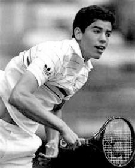
Figure 1: Pete Sampras as a junior player — A living testament to the philosophy of building solid technical fundamentals from early childhood.
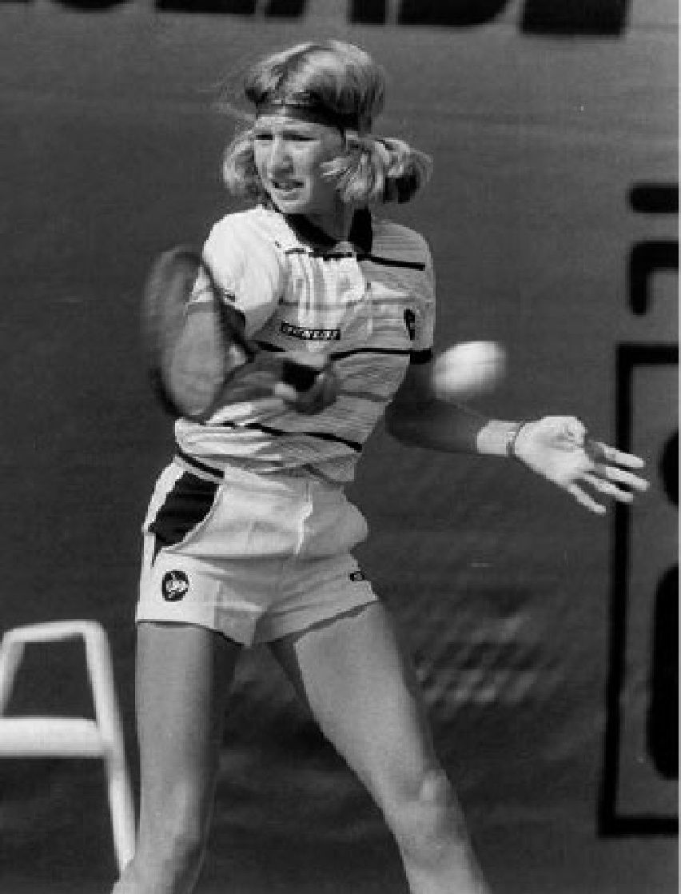
Figure 2: Legend Steffi Graf — The exemplary role model of self-discipline, unwavering willpower, and fluid footwork across all developmental stages.
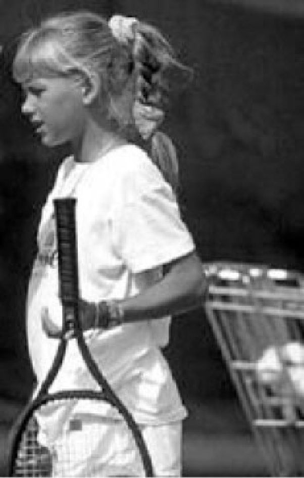
Figure 3: Anna Kournikova during junior intensive training — A classic case study in balancing high-intensity skill development with healthy athletic psychology.
3. Phương Pháp Luận Sư Phạm & Cấu Trúc Buổi Học Hiệu Quả (Methodology & Lesson Organization)
PHƯƠNG PHÁP DẠY HỌC Phương pháp giảng dạy là gì?
• Một hệ thống tổ chức giảng dạy
• Nghiên cứu về các hệ thống có tổ chức và nguyên tắc giảng dạy Nói cách khác, điều này có nghĩa là bạn sử dụng cách tiếp cận có hệ thống để dạy quần vợt theo một trật tự đơn giản nhưng hợp lý.
Ví dụ: bạn sẽ không bắt đầu dạy cú thuận tay xoáy lên hoặc cú giao bóng xoáy lên cho một học sinh mới bắt đầu. Nếu không có trình tự giảng dạy tốt, tay vợt sẽ dễ nản lòng vì các chủ đề không nằm trong tầm hiểu biết về kinh nghiệm và khả năng kiểm soát vợt của họ. Bằng cách cố gắng thực hiện những cú đánh mà họ chưa thể thành thạo, họ cũng sẽ trở nên rất thiếu nhất quán và lộn xộn trong khả năng chơi trò chơi.
Một số nguyên tắc cơ bản của phương pháp giảng dạy:
1. Cách tiếp cận có hệ thống: Đi từ A đến B đến C, nghĩa là bắt đầu giảng dạy ngay từ đầu và không bỏ qua các bước để đi đến mục tiêu cuối cùng.
2. Thứ tự năng lực logic: Đi từ chủ đề dễ đến phức tạp.
Trước tiên hãy tìm hiểu những điều cơ bản và duy trì cách tiếp cận đơn giản với từng bước tiếp theo trong quá trình học tập.
3. Nắm vững kỹ năng: Không chuyển sang cấp độ kỹ năng hoặc môn học tiếp theo cho đến khi học sinh đã thành thạo kỹ năng đó ở mức độ xuất sắc và tự tin nhất định.
4. Lặp lại bài tập: Tiếp tục lặp lại bài tập để duy trì mức độ kỹ năng của nét hoặc chủ đề.
Khi tuân theo những quy tắc giảng dạy đơn giản này, học sinh của bạn sẽ hiểu rõ hơn nhiều về việc học trò chơi. Ngoài ra, họ sẽ làm chủ nó nhanh hơn, chịu được áp lực và chơi tự tin hơn.
Xác định những gì bạn muốn hoặc cần dạy
• Môn học mới trong tiến trình học tập
• Sửa lỗi trong học tập Tiến trình của một môn học mới có nghĩa là tìm ra thứ tự phù hợp của các bài tập và bài tập cho một môn học mới để giúp quá trình học tập diễn ra suôn sẻ nhất có thể.
Việc sửa một lỗi trong học tập phức tạp hơn. Có một số bước bạn phải làm theo để đảm bảo rằng những gì bạn sắp dạy sẽ khắc phục được lỗi.
Các bước cần thực hiện khi chỉnh sửa:
4. Phân tích bài viết Bạn bắt đầu bằng cách thực hiện một phân tích về chủ đề tổng thể để sửa chữa. Điều này nhằm thu hẹp khu vực cần tìm lỗi và đảm bảo rằng lỗi đó không phải do một số yếu tố khác gây ra.
Phát hiện lỗi là phần quan trọng của việc sửa lỗi. Việc mắc lỗi ban đầu trong việc phát hiện lỗi sẽ dẫn đến nhiều phức tạp hơn trong việc sửa lỗi.
Việc sửa chữa cần được xử lý với sự tiến bộ trong học tập để kích thích quá trình học tập. Đưa ra lời giải thích về những gì bạn sắp thay đổi và tại sao. Hơn nữa, hãy giải thích cách bạn muốn thực hiện những thay đổi này. Quá trình này sẽ tạo điều kiện thuận lợi cho sự tự tin trong việc sửa chữa của bạn.
Phân tích bài đăng là phân tích sau khi thực hiện chỉnh sửa. Điều này được thực hiện để đảm bảo rằng việc sửa chữa là đúng và lỗi đã được sửa đúng cách.
Một phương pháp giảng dạy sẽ đề cao mục đích đào tạo.
Anna Kournikova OceanofPDF.com CƠ SỞ GIẢNG DẠY Các cú đánh bóng bền cuối sân (Groundstroke) Có một số cú đánh bóng bền cuối sân (Groundstroke) mà tay vợt phải học để chơi trò chơi. Những điều này thay đổi tùy theo độ tuổi của tay vợt và trình độ năng lực của họ.
Khi học chơi quần vợt, có bốn cú đánh bóng bền cuối sân (Groundstroke). Khi bắt đầu trò chơi, hãy đơn giản chỉ với ba trò chơi đầu tiên. Khi tay vợt thể hiện sự nhất quán hơn về cách thức và thời điểm sử dụng những thứ này, bạn có thể thêm cú vô lê vào danh sách các cú đánh của họ. Tất cả bốn cú đánh bóng bền cuối sân (Groundstroke) phải phối hợp với nhau để có hiệu quả khi chơi trò chơi.
• Cú bắt lưới (Volley) Bốn trụ cột của quần vợt Trong việc dạy trò chơi, cần nhiều thứ hơn là chỉ dạy các cú đánh. Trò chơi bao gồm bốn khía cạnh giảng dạy chính tạo thành trụ cột của trò chơi.
Các khía cạnh dạy và học này là:
• Kỹ thuật Học cơ chế của các cú đánh để thực hiện chúng với sự lặp lại nhất quán để luyện tập và thi đấu
• Chiến thuật Học cách sử dụng các cú đánh trong việc phát triển các kiểu chơi để đánh bại đối thủ của bạn hoặc tận dụng điểm yếu của họ
• Học về tinh thần cách kiểm soát cảm xúc và suy nghĩ trong khi luyện tập và thi đấu để kiểm soát việc thực hiện
• Học thể chất cách sử dụng khả năng thể chất sẵn có để phát huy tối đa lợi thế trong luyện tập và thi đấu Đối tượng giảng dạy Khi dạy các môn học, cần có một trình tự và phương pháp hợp lý để giới thiệu các môn học đó cho học sinh. Bất cứ khi nào bạn đang giảng dạy, hãy luôn ghi nhớ những tác động về mặt kỹ thuật, chiến thuật, thể chất và tinh thần. Chúng tôi gọi đây là bốn trụ cột của trò chơi. Điều quan trọng là bạn và học sinh của mình hiểu được khái niệm về cách kết nối bốn trụ cột của trò chơi và cách chúng phối hợp với nhau. Một ví dụ là khi dạy hành động giao bóng; Khi dạy về khía cạnh kỹ thuật, bạn cũng nên giải thích mục đích chiến thuật là gì, khía cạnh thể chất và ý nghĩa tinh thần là gì cũng như cách sử dụng những khía cạnh này trong các tình huống thi đấu.
Thứ tự giảng dạy (dễ đến khó)
1. Tính nhất quán (dành cho người mới chơi
2. Độ sâu và người mới bắt đầu
3. Đổi hướng ba môn thôi)
4. Quay (các chủ đề này dành cho
5. Tăng sức mạnh cho tay vợt nâng cao và
6. Tay vợt giải đấu Tempo) (Trong việc giảng dạy và huấn luyện trong cuốn sách đầu tiên này và cấp độ mà chúng tôi đang làm việc, hiện tại chỉ có ba khía cạnh đầu tiên là quan trọng.) Tính nhất quán là yêu cầu đầu tiên trong bất cứ điều gì bạn dạy về quần vợt.
Việc thực hiện kỹ thuật, kết hợp với động tác bằng chân tốt, là chìa khóa để đạt được sự nhất quán hơn. Tính nhất quán là điều bắt buộc để thành công ở mọi cấp độ chơi quần vợt.
Ví dụ về tính nhất quán kém: Không quan sát bóng đúng cách sẽ dẫn đến những cú đánh lệch tâm. Không đánh bóng vào điểm tiếp xúc bóng (Contact point) thích hợp, ở phía trước cơ thể, sẽ dẫn đến hướng đánh kém. Không vào vị trí đủ sớm sẽ dẫn đến sai lầm. Không dùng đầu gối và để bóng “dưới” sẽ khiến bóng rơi vào lưới.
Lưu ý: Đảm bảo học sinh của bạn biết cách cải thiện tính nhất quán trong bất kỳ môn học nào họ đang luyện tập hoặc sử dụng trong trò chơi tính điểm. Đừng chuyển sang chủ đề tiếp theo cho đến khi bạn đã đạt được trình độ thông thạo và mức độ thoải mái với chủ đề đó.
Huấn luyện: - Thực hiện các mục tiêu khi đánh bóng thường xuyên nhất có thể.
- Tạo một trò chơi có tính nhất quán!
- Sử dụng tính nhất quán theo nhiều cách khác nhau: nét, mẫu hoặc chiến lược.
Tính nhất quán là nền tảng cho bất kỳ tay vợt thành công nào.
Độ sâu của cú đánh có thể dễ dàng đạt được nhất với quỹ đạo được chọn trên lưới. Sự kết hợp giữa tốc độ và độ cao của bóng trên lưới quyết định độ sâu của bóng trên sân. Chiều sâu rất quan trọng ở mọi cấp độ chơi và thậm chí còn quan trọng hơn với những tay vợt nâng cao và chuyên nghiệp.
Với các cú đánh có chiều sâu hơn, đối thủ sẽ khó tạo góc hơn và tay vợt có nhiều thời gian hơn để phản ứng với các cú đánh do quỹ đạo dài.
Ví dụ 1: Khi đánh bóng gần đường biên cuối sân, đối phương buộc phải lùi lại. Độ sâu của cú đánh có thể khiến đối phương phải sử dụng chân sau và dẫn đến cú đánh kém mạnh hơn và thời gian trả bóng ngắn hơn. Tay vợt có thể tấn công bóng ngắn và dứt điểm vào lưới.
Ví dụ 2: Khi lấy lại một cú đánh góc từ đối phương, độ dài của quỹ đạo quay lại mang lại nhiều thời gian phản ứng hơn để thu hồi về giữa sân. Chiều sâu là yếu tố then chốt trong việc thực hiện các cú đánh trung hòa và phòng thủ.
Lưu ý: Đảm bảo học sinh của bạn nhận thức rõ về cách tạo chiều sâu bằng cách sử dụng quỹ đạo của bóng (tốc độ và chiều cao). Hãy chắc chắn rằng học sinh của bạn hiểu được lợi thế chiến thuật để chơi có chiều sâu.
Huấn luyện: - Một cách dễ dàng để rèn luyện độ sâu cho bóng là sử dụng mục tiêu hoặc khu vực được đánh dấu để đánh vào trong.
- Dùng gậy lưới ở giữa lưới để tay vợt đánh cao hơn qua lưới. Với cùng tốc độ, độ cao cao hơn sẽ tạo ra chiều sâu hơn.
Đổi hướng là kỹ năng di chuyển bóng đến một hoặc các mục tiêu khác nhau trên sân nhằm khiến đối phương di chuyển và buộc phạm lỗi. Góc của quả bóng sắp tới, vị trí của tay vợt trên sân và mục tiêu được chọn đều là những yếu tố làm thay đổi hướng. Để thành thạo trong việc thay đổi hướng đi một cách nhất quán và có chiều sâu cần phải thực hành nhiều và kiên nhẫn ở bất kỳ cấp độ chơi nào.
Lưu ý: Đảm bảo học sinh của bạn hiểu tầm quan trọng của việc chuẩn bị sớm, động tác bằng chân và các điểm tiếp xúc bóng (Contact point) trong việc xác định phương hướng và thay đổi phương hướng.
Huấn luyện: - Chơi theo một mục tiêu cụ thể là một cách tuyệt vời để rèn luyện độ chính xác của các cú đánh.
- Việc thay đổi hướng rèn luyện thời gian và độ chính xác cho các mục tiêu khác nhau.
- Bạn có thể kết hợp cả hai điều này bằng cách cho một đấu thủ đánh sang một bên sân và những người còn lại đánh luân phiên vào cả hai bên sân.
Roger Federer OceanofPDF.com QUÁ TRÌNH HỌC TẬP Có rất nhiều cách để dạy quần vợt. Một huấn luyện viên có kinh nghiệm sẽ sử dụng một số phương pháp khác nhau để giữ cho học sinh của mình luôn hứng thú, tập trung và thử thách thể chất. Biết các phương pháp giảng dạy khác nhau có thể rất hữu ích bất cứ khi nào học sinh không phản ứng với một phương pháp đào tạo cụ thể.
Tay vợt tìm hiểu thông tin được cung cấp cho họ và cách họ nhận được thông tin này. Hãy nhớ rằng nhiều tay vợt học theo cách khác hoặc kết hợp những cách sau:
Thính giác - Thính giác (nghe lời giải thích và mô tả về chủ đề) Trực quan - Nhìn (xem một ví dụ hoặc minh họa về chủ đề) Cảm giác - Cảm giác (cảm nhận hành động hoặc chuyển động được thực hiện) Trực quan - Bản năng (bản năng tự nhiên về cách thực hiện hành động hoặc tình huống) Tay vợt có thể phản ứng với một trong các giác quan học tập này hoặc kết hợp cả hai hoặc nhiều hơn. Mỗi học sinh đều khác nhau ở khía cạnh đó; và điều quan trọng là, với tư cách là huấn luyện viên, phải hiểu cách học sinh của bạn học tốt nhất. Dưới đây là một số phương pháp giảng dạy khác nhau có thể sử dụng:
• Dạy học thính giác Việc dạy học thực sự là việc giải thích phải làm gì và làm như thế nào. Giải thích chi tiết những gì cần đào tạo và tại sao, cách thực hiện và thời gian thực hiện bài tập.
• Trình diễn Trình diễn sẽ chỉ ra chính xác cách thực hiện hành động bằng cách đưa ra một ví dụ thích hợp. Bạn có thể tự mình thực hiện việc này nhưng sẽ rất có lợi nếu nhờ người khác thực hiện để đảm bảo mọi người đều hiểu.
• Chỉ đạo thủ công Đây là phương pháp giảng dạy trong đó bạn chạm vào vợt, người hoặc cả hai cùng nhau để hướng dẫn họ thực hiện hành động thích hợp.
• Trực quan hóa Phương pháp này đòi hỏi phải suy nghĩ về chuyển động hoặc hành động như thể đang xem một bộ phim. Nhắm mắt lại giúp bạn tập trung vào việc nhìn thấy hành động trong suy nghĩ của mình.
• Giao bài tập Giao bài tập sẽ giúp học sinh tự rèn luyện bản thân khi ra sân thi đấu. Phương pháp này rèn luyện họ làm quen với việc giải quyết nhiệm vụ. Bạn có thể thực hiện việc này với một đầu đóng (máy khoan dừng ở cuối nhiệm vụ) hoặc đầu mở (phát ra điểm sau khi nhiệm vụ được thực hiện).
• Bắt đầu thảo luận Cuộc thảo luận nên diễn ra theo dạng hỏi đáp, là cuộc trò chuyện hai chiều giữa huấn luyện viên và học sinh.
Những cách dạy khác nhau Có một số phương pháp khác nhau được sử dụng khi dạy tay vợt. Mỗi phương pháp có một triết lý trong cách tiếp cận và thực hiện, và việc dạy chúng đòi hỏi phải thực hành. Tay vợt phản ứng khác nhau với từng phương pháp đào tạo.
Việc tìm ra điều gì tác động đến tay vợt nhiều nhất là tùy thuộc vào huấn luyện viên.
• Phương pháp Nhịp điệu Phương pháp dạy này sử dụng nhịp điệu của cú đánh và thời điểm nảy của bóng với điểm tiếp xúc bóng (Contact point). Huấn luyện viên sử dụng phương pháp này để kích thích thời gian nhằm cải thiện kỹ thuật và tính nhất quán. Phương pháp này cũng rất hữu ích trong việc tạo ra những nét vẽ mượt mà và thoải mái để cải thiện tính trôi chảy và hiệu quả. Ví dụ: Sử dụng cách đếm thành tiếng để hỗ trợ nhịp nảy của bóng và tác động với bóng.
• Phương pháp thăng bằng Sự thăng bằng của cơ thể trước, trong và sau cú đánh sẽ ảnh hưởng đến việc thực hiện cú đánh. Phương pháp dạy thăng bằng sử dụng ba điểm cân bằng này trong cú đánh để ổn định cú đánh và cải thiện tính nhất quán trong hiệu suất. Điều này có thể được thực hiện có hoặc không có động tác phục hồi miễn là tốc độ và nhịp độ được điều chỉnh. Một ví dụ:
Giữ nguyên vị trí sau khi thực hiện cú đánh để xem liệu có thể duy trì được sự cân bằng hay không. Phương pháp này cải thiện việc chuẩn bị cho các cú đánh, sự cân bằng tổng thể và khả năng phục hồi của các cú đánh.
• Phương pháp điểm tiếp xúc bóng (Contact point) Các điểm tiếp xúc bóng (Contact point) của cú đánh là yếu tố quyết định lớn nhất về quỹ đạo và hướng. Phương pháp tiếp xúc là cơ bản trong việc thể hiện cơ chế của cú đánh và là điểm tham chiếu ở các vị trí then chốt (xem phần đào tạo kỹ thuật). Sử dụng phương pháp tiếp xúc có thể giúp cải thiện thời gian của các cú đánh và cải thiện tích cực việc thực hiện kỹ thuật cũng như tính nhất quán trong hiệu suất. Một ví dụ: Chặn bóng khi tiếp xúc trước khi đưa bóng trở lại lưới sẽ nâng cao điểm tiếp xúc bóng (Contact point) và khiến tay vợt nhận thức rõ ràng về khu vực tiếp xúc. Tay vợt cũng có thể gọi một từ tại thời điểm tiếp xúc bóng (Contact point) để cải thiện thời gian của điểm tiếp xúc bóng (Contact point). Lưu ý: Nhiều tay vợt hàng đầu sử dụng phương pháp này với hơi thở của họ bằng cách thở ra vào thời điểm tiếp xúc bóng (Contact point). Bạn có thể nhận thấy điều này rõ ràng hơn khi nghe một số cô gái trong chuyến lưu diễn.
• Phương pháp kết hợp Phương pháp dạy học này sử dụng sự kết hợp của hai hoặc cả ba phương pháp để cải thiện các nét. Sự kết hợp của các phương pháp này có thể cải thiện đáng kể các cú đánh nhất định hoặc một khía cạnh nhất định của cú đánh để cải thiện toàn bộ hành động. Nếu tay vợt không phản hồi tốt với một phương pháp, bạn có thể thử phương pháp khác hoặc kết hợp nhiều phương pháp. Linh hoạt trong việc giảng dạy các phương pháp khác nhau phù hợp với học sinh sẽ cải thiện quá trình học tập và giảm thời gian học tập.
OceanofPDF.com TỔ CHỨC GIẢNG DẠY CỦA BẠN Khi trở thành một huấn luyện viên quần vợt, bạn phải đưa ra quyết định về triết lý và phong cách huấn luyện mà bạn sẽ áp dụng. Điều này sẽ giúp bạn xác định phương pháp giảng dạy và cách bạn muốn cấu trúc bài học của mình. Ngoài ra còn có nhiều loại huấn luyện viên khác nhau và bạn phải chọn loại mà bạn mong muốn trở thành. Có thể là bạn có ý định trở thành một tay vợt chuyên nghiệp trong câu lạc bộ hoặc làm huấn luyện viên ở trường đại học. Mục tiêu của bạn có thể là phát triển các học sinh cấp dưới hoặc huấn luyện viên chuyên nghiệp hàng đầu, làm việc tại học viện hoặc thậm chí bắt đầu chương trình của riêng bạn. Dù thế nào đi nữa, hãy đảm bảo rằng bạn có chiến lược phát triển sự nghiệp huấn luyện của mình. Trong biểu đồ bên dưới, bạn có thể thấy ví dụ về quá trình giảng dạy của bạn sẽ phát triển như thế nào:
Triết lý huấn luyện phải là quan điểm, giá trị và niềm tin của cá nhân bạn về cách dạy và huấn luyện các vận động viên quần vợt bằng một phương pháp và phong cách nhất định.
Các mục tiêu và mục tiêu huấn luyện được xác định bởi tầm nhìn của chính bạn về nguyện vọng và tham vọng của bạn với tư cách là huấn luyện viên và giáo viên.
Phong cách huấn luyện là sự điều chỉnh cách giảng dạy và huấn luyện của bạn để phù hợp với tính cách và tính cách của bạn, đồng thời vượt xa khả năng giao tiếp của bạn với học sinh.
Cấu trúc bài học của bạn là cách tổ chức, định dạng và thực hiện tài liệu mà bạn hướng tới sử dụng trong việc dạy bài học của mình.
Khi tổ chức việc giảng dạy của mình, bạn phải suy nghĩ về tất cả những yếu tố này để học sinh và phụ huynh của họ (và cả người sử dụng lao động có thể) có được bức tranh rõ ràng về những kỳ vọng của bạn với tư cách là một huấn luyện viên.
Chương trình Có một số cách tổ chức chương trình cho học sinh của bạn. Điều này phần lớn sẽ phụ thuộc vào các tình huống làm việc khác nhau và cơ sở vật chất mà bạn sử dụng để huấn luyện. Các chương trình bạn có thể cung cấp như sau:
4. Chương trình phát triển trẻ
6. Chương trình đào tạo kiểu học viện
7. Huấn luyện tại các giải đấu Bằng cách cung cấp một số lời giải thích về từng chương trình và chi phí liên quan, bạn sẽ được coi là người có tổ chức và chuyên nghiệp. Tất cả các chương trình này phải được phối hợp với cơ sở nơi bạn giảng dạy do khả năng sẵn sàng của sân đấu và số lượng học sinh.
Lập kế hoạch Việc sắp xếp thời gian trong ngày của bạn phải phù hợp với loại chương trình và các nhiệm vụ có thể có khác của bạn với tư cách là một huấn luyện viên. Những trách nhiệm này có thể khác nhau, từ các cuộc họp với các huấn luyện viên khác để thảo luận về các chương trình và lịch trình của học sinh cho đến các nhiệm vụ bảo trì hoặc hành chính.
Dưới đây là ví dụ về lịch trình hàng ngày:
Như có thể thấy trong lịch trình trên, bạn nên sắp xếp thời gian để lập kế hoạch cho từng nhóm hoặc từng buổi học riêng và viết một số ghi chú vào cuối ngày về sự tiến bộ và sửa lỗi của học sinh.
Tốt hơn nên lên lịch cho người lớn vào buổi sáng vì họ thường linh hoạt hơn trong lịch trình hàng ngày. Hầu hết trẻ em đi học vào ban ngày và chỉ có thời gian vào buổi chiều.
Giáo án Việc tổ chức giáo án là một yếu tố quan trọng đối với kế hoạch phát triển mà bạn đã đề ra cho học sinh của mình. Nếu không, bạn rất dễ đi chệch khỏi mục tiêu và ý định của mình và cuối cùng chỉ đánh bóng mà không có mục đích. Tốt nhất là bạn nên có mục đích mỗi khi bước ra sân để đạt được hiệu quả cao nhất sau mỗi buổi học. Khi nghĩ đến việc lập kế hoạch bài học, bạn nên cân nhắc những điều sau:
• Số lượng học sinh Số lượng học sinh cho mỗi bài học có thể khác nhau. Để soạn giáo án tốt, bạn cần biết có bao nhiêu học sinh tham gia. Điều này sẽ hỗ trợ bạn trong việc đặt đúng số lượng sân đấu. Số lượng học sinh có thể ảnh hưởng đến chủ đề bạn dự định cho bài học hoặc cách giới thiệu tài liệu khác. Học sinh sẽ chơi với nhau hay bạn sẽ cho chúng ăn bóng? Điều này có thể dẫn đến việc cần sự hỗ trợ của một hoặc nhiều huấn luyện viên.
• Mức độ chơi Mức độ chơi có tầm quan trọng rất lớn trong việc lựa chọn các môn học thích hợp.
Nội dung bài học cần phù hợp với trình độ của tay vợt.
Nếu biểu diễn quá khó, họ sẽ nản lòng và có thể nản lòng. Nếu tài liệu quá dễ, trẻ sẽ nhanh chóng chán và mất hứng thú. Mức độ chơi cũng rất quan trọng trong việc ghép đôi những tay vợt có cùng trình độ kỹ năng. Điều này giúp bạn, với tư cách là huấn luyện viên, làm cho các bài học của bạn diễn ra suôn sẻ và cho phép các tay vợt cạnh tranh với nhau.
• Bề mặt Có ba loại bề mặt rất phổ biến đối với các tay vợt cũng như huấn luyện viên: sân cứng, sân đất nện và thảm (trong nhà). Khi tổ chức bài học của bạn, hãy xem xét nội dung bạn đang đào tạo. Việc phối hợp nội dung thực hành với bề mặt có thể hỗ trợ bạn về hiệu suất và sự tự tin. Động tác bằng chân và các cú đánh cũng có thể dành riêng cho một loại bề mặt cụ thể. Việc thực hành một số phong cách chơi nhất định cũng mang tính đặc trưng trên bề mặt.
• Thời tiết Điều kiện thời tiết sẽ nhiều lần ảnh hưởng đến thành tích của các tay vợt. Khi trời quá nóng hoặc quá lạnh, bạn phải đề phòng để có đủ thời gian nghỉ ngơi. Nước cần phải luôn có sẵn. Lưu ý: Trong điều kiện gió và lạnh hơn, học sinh của bạn có thể bị mất nước nhiều hơn bạn dự đoán. Việc điều chỉnh nội dung bài học cho phù hợp với điều kiện thời tiết có thể rất hữu ích trong việc dạy học sinh cách đối phó với những điều kiện này.
• Thiết bị Việc sử dụng các thiết bị chuyên dụng trong đào tạo có thể nâng cao hiệu suất của học sinh. Ví dụ: chúng có thể được sử dụng để giúp hình dung khu vực mục tiêu hoặc rào cản. Có rất nhiều công ty có sẵn để mua những thứ này trực tuyến. Hãy chuẩn bị trước việc sắp xếp các thiết bị cho bài học của bạn.
• An toàn Sự an toàn của học sinh phải luôn là mối quan tâm hàng đầu khi bạn luyện tập hoặc thi đấu. Khu vực luyện tập phải luôn không có bóng hoặc thiết bị có thể khiến học sinh của bạn bị vấp ngã. Đảm bảo rằng các bài tập hoặc bài tập của bạn nằm trong giới hạn của khu vực luyện tập để học sinh của bạn không lao vào hàng rào hoặc cột lưới.
Loại bài học Bài học nhóm Bài học nhóm là nơi tuyệt vời để bắt đầu chơi quần vợt. Chúng được tổ chức sao cho tất cả tay vợt tham gia đều có trình độ kỹ năng tương tự. Điều này tạo ra một môi trường cạnh tranh trong đó học sinh thường xuất sắc nhanh hơn. Trong cài đặt này, tay vợt có thể học hỏi từ những tay vợt khác. Nó cũng ít tốn kém hơn so với các bài học riêng. Điều quan trọng là phải cho tay vợt thời gian để phát triển các kỹ năng cơ bản trước khi tách chúng ra và bắt đầu quá sớm với sự hướng dẫn riêng.
Đào tạo theo kiểu học viện có hình thức tương tự như các bài học nhóm, nhưng nó được tổ chức vài lần một tuần. Phong cách huấn luyện này có thể có lợi nếu học sinh đam mê trò chơi và muốn luyện tập thường xuyên hơn.
Lưu ý: học nhóm thường thấp hơn, tùy thuộc vào quy mô nhóm, trình độ kỹ năng và thời gian giảng dạy.
Bài học riêng Đối với những người mới chơi, các bài học riêng có hiệu quả tốt nhất khi kết hợp với hướng dẫn nhóm. Điều này cho phép họ duy trì liên lạc với các đồng nghiệp của mình đồng thời mang đến cho họ thêm cơ hội để phát triển vượt trội. Thời điểm tốt để xem xét các bài học riêng là khi tay vợt thể hiện niềm đam mê với môn thể thao vượt quá mức độ giải trí. Chi phí chung cho việc hướng dẫn riêng có thể vào khoảng 30 đến 50 đô la nhưng cũng có thể cao hơn nhiều khi làm việc với một huấn luyện viên giàu kinh nghiệm hoặc kỳ cựu.
Đấu trận Đấu trận đấu có thể được tổ chức theo nhiều cách. Đầu tiên, bạn phải xác định mục tiêu của mình khi luyện tập đấu trận, sau đó xác định số lượng học viên tham gia và bạn sẽ luyện tập các trận đấu đơn hay đôi. Điều này sẽ ảnh hưởng đến số lượng sân đấu cần thiết.
Trong quá trình hướng dẫn thi đấu, hãy cho học sinh của bạn cơ hội tự huấn luyện bằng cách cho các em một hoặc hai môn để luyện tập trong khi thi đấu. Ví dụ như cung cấp cho họ một chiến lược hoặc chiến thuật để thực hiện hoặc cách thực hiện một cú đánh hoặc kiểu chơi. Tổ chức các buổi chơi đối kháng với học sinh của bạn có thể rất có lợi trong việc cho phép học sinh áp dụng những gì đã học. Điều quan trọng là họ nhận được sự huấn luyện và phản hồi trong quá trình này.
Bài học rèn luyện trực quan Việc xem các trận đấu, bài tập hoặc video có thể rất truyền cảm hứng và có lợi cho quá trình học tập (đặc biệt đối với những học sinh có khả năng học tập bằng hình ảnh). Những bài học này là sự thay thế tuyệt vời vào một ngày mưa và là tài sản quý giá cho việc giảng dạy của bạn.
2. Phần kỹ thuật 20 phút Phần A
3. Chiến thuật/tinh thần/thể chất 15 phút Phần B
4. Chơi điểm 10 phút Phần C
5. Tóm tắt bài học 5 phút Đây là hình thức cơ bản của một giáo án. Phần A là chủ đề chính, phần B và phần C là phần ứng dụng của chủ đề chính. Trong giáo án này, khía cạnh kỹ thuật của trò chơi là chủ đề chính.
Chiến thuật/tinh thần/thể chất (phần B) và lối chơi điểm (phần C) là phần ứng dụng của môn học chính. Bạn có thể thay đổi chủ đề chính nào trong số này, nhưng bạn phải đảm bảo bao gồm A, B và C để học sinh biết tầm quan trọng của từng phần và chúng khớp với nhau như thế nào.
Khởi động Mục đích của khởi động là để chuẩn bị về thể chất và tinh thần cho các tay vợt khi tập luyện. Nó không chỉ giúp thả lỏng và căng cơ mà còn mang lại cho học viên ý thức cao hơn để đạt hiệu quả tốt hơn. Khởi động tốt bao gồm một số hoạt động chạy với các bài tập tác động chân cụ thể dành cho quần vợt (nhảy bước, nhảy bước, bước ngang, lung tung, v.v.). Một số động tác giãn cơ và giãn cơ tĩnh cũng rất quan trọng để ngăn ngừa chấn thương trong quá trình luyện tập. (Với những đứa trẻ còn rất nhỏ, việc khởi động có hiệu quả nhất bằng cách sử dụng một số loại trò chơi có chuyển động.) Phần kỹ thuật Phần này của bài học thường là chủ đề chính. Nó phải phản ánh chủ đề từ kế hoạch đào tạo được lên kế hoạch cho ngày hoặc tuần này. Chủ đề phải là một chủ đề mới hoặc trình tự tiếp theo trong quá trình học tập thể hiện một trật tự hợp lý (phương pháp luận). Khi dạy phần này, hãy cố gắng giải thích chủ đề bằng những khái niệm chính xác và đơn giản để họ có thể bắt tay ngay vào việc thực hiện bài tập. Cố gắng duy trì cường độ cao bằng cách cho họ nghỉ ngơi đủ ngắn. Lưu ý: Khi dạy các môn kỹ thuật, hãy nhớ rằng bạn có thể thay thế một chủ đề chiến thuật trong phần A này. Đôi khi, việc giải thích cách tạo cú đánh sẽ dễ dàng hơn bằng cách chỉ ra cách nó được sử dụng trong một điểm hoặc trận đấu (chiến thuật).
Phần chiến thuật, tinh thần, thể chất Phần này sẽ trình bày ứng dụng của phần A. Sau khi học nội dung ở phần A, bạn muốn chắc chắn rằng học sinh hiểu cách sử dụng nó trong một trận đấu. Điều này có thể được thực hiện bằng cách thực hành các mẫu hoặc điểm.
Lưu ý: Phần này của quá trình học tập thường bị lãng quên hoặc bị bỏ quên hoàn toàn. Hầu hết các huấn luyện viên dành 95% thời gian chỉ cho kỹ thuật và rất ít thời gian cho việc phát triển chiến thuật hoặc tinh thần. Đừng quên rằng ngay cả với những người mới bắt đầu, lý do họ chơi trò chơi là để cạnh tranh với những người cùng lứa tuổi. Bạn càng có thể giúp họ đạt được kết quả tốt hơn thì họ sẽ càng đánh giá cao việc đào tạo của bạn. Dạy họ tất cả các khía cạnh của trò chơi sẽ giúp họ trở thành một tay vợt toàn diện.
Điểm Chơi Điểm chơi là một phần quan trọng trong các bài học nhóm. Trẻ nhỏ yêu thích sự cạnh tranh. Làm cho mọi người vui vẻ và giải trí, đồng thời kết hợp các trò chơi với nhiều hoạt động khác nhau. Xoay đối thủ ở cấp độ mới bắt đầu, bất kể sức mạnh, giúp mọi người có cơ hội học hỏi lẫn nhau.
Tóm tắt Phần tóm tắt nên dùng để gợi ý một số chủ đề để tự luyện tập trong tuần. Đây cũng là thời điểm tuyệt vời để đưa ra thông báo về giờ học tiếp theo, các giải đấu sắp tới, ngày đăng ký, v.v.
Kế hoạch bài học của Andy Roddick (ví dụ) Pete Sampras khi còn là học sinh cấp 2 OceanofPDF.com
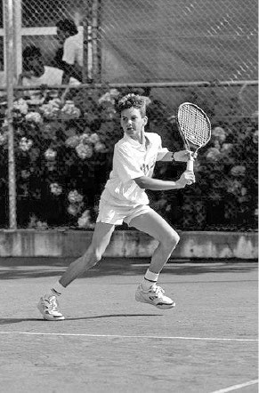
Figure 4: Roger Federer — Mastery of technical diversity and effortless biomechanical fluidity reflecting the pinnacle of modern coaching methodology.
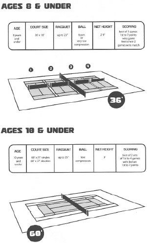
Figure 5: National Coach Martin van Daalen — Former USTA National Coach, pioneer of systematic progressive methodology for modern tennis coaches.
Phần II: Hướng Dẫn Kỹ Thuật Cốt Lõi, Hệ Thống Cán Cầm Vợt & Cơ Học Cú Đánh Cuối Sân
4. Hệ Thống Cán Cầm Vợt & Các Sai Lầm Phổ Biến (Grips & Instructional Errors)
HƯỚNG DẪN KỸ THUẬT Phần hướng dẫn này là cơ chế của cú đánh mà bạn muốn trình bày. Cơ chế của cú đánh có thể được dạy toàn bộ hoặc từng phần. Hướng dẫn phải ngắn gọn, toàn diện và là một phần của quá trình tiến bộ. Để củng cố bài giảng, bạn muốn cho học sinh ra sân để các em có thể áp dụng bài học ngay. Dưới đây là một số hướng dẫn về hướng dẫn kỹ thuật:
• Giải thích Tại sao Chủ đề này hoặc Thay đổi Phần giải thích nên ngắn gọn và ngắn gọn nhất có thể để tránh mọi hiểu lầm về chủ đề đào tạo. Hỏi học sinh xem họ có câu hỏi nào trước khi bắt đầu bài tập không.
• Giới thiệu Phương pháp Toàn bộ Một phần Đôi khi, sẽ dễ dàng hơn nếu chia nhỏ hành động thành từng phần và sau đó, cuối cùng, ghép toàn bộ hành động lại với nhau. Hành động giao bóng là một ví dụ điển hình vì điều này hiệu quả với trẻ nhỏ và những người mới chơi quần vợt.
Với việc phát hiện lỗi trong nét, bạn có thể đặt tiêu điểm vào một phần (vị trí phím) nhất định của nét. Ví dụ: backswing, điểm tiếp xúc bóng (Contact point), hoặc quán tính vung kết thúc (Follow-through).
• Làm chậm lại Hầu hết trẻ em thích đánh bóng mạnh nhất có thể. Làm chậm hành động cho phép học sinh cảm nhận được điều gì đang thực sự xảy ra với các nét vẽ.
Nó cũng sẽ giúp đảm bảo rằng họ đang học cách sử dụng kỹ thuật phù hợp.
• Truyền ít lực hơn để phối hợp tốt hơn Khi sử dụng quá nhiều lực, bạn sẽ ít phối hợp và căn thời gian hơn. Đã có một số nghiên cứu để xác định mức công suất tối đa và điểm bùng phát tại thời điểm mà sự phối hợp giảm đi.
Điểm này xấp xỉ bằng 60 phần trăm công suất tối đa của bạn (xem biểu đồ trang tiếp theo). Như bạn có thể thấy, đường cong (mức phối hợp) bắt đầu giảm khoảng 60%. Điều này cũng xảy ra với những trận đấu kéo dài theo thời gian.
Về cuối những trận đấu đó, cần nhiều sức mạnh (năng lượng) hơn cho cùng một hành động.
Lưu ý: Một phương pháp tốt để phát hiện xem học sinh của bạn có sử dụng quá nhiều lực hay không là hỏi xem họ đang sử dụng áp lực cầm vợt như thế nào khi đánh bóng. Bạn có thể đề xuất phạm vi từ 1 đến 10, trong đó 10 là cao nhất. Áp lực cầm vợt nên ở khoảng 5 hoặc 6, nhưng một số tay vợt hàng đầu thậm chí còn có áp lực cầm vợt ít hơn.
Một phương pháp để giảm áp lực cầm vợt trong quá trình luyện tập là yêu cầu tay vợt đưa ngón tay của họ ra sau cú đánh. Tay vợt sẽ nhận thấy mức độ tiếp xúc với các cú đánh tăng lên cũng như thời gian và sự phối hợp tăng lên. Thông thường, tốc độ của quả bóng cũng sẽ tăng lên khi có thêm tính linh hoạt và độ đàn hồi của khuỷu tay và cổ tay bằng cách thả lỏng bàn tay.
• Cung cấp sự lặp lại Cần lặp lại nhiều lần để thành thạo các cú đánh và kiểu dáng trên sân tennis. Điều khôn ngoan là liên tục lặp lại các bài tập và huấn luyện để cuối cùng nó trở thành một chuyển động hoặc hành động tự động.
• Đừng bỏ qua các bước Di chuyển quá nhanh trong chương trình phát triển tay vợt của bạn có thể gây bất lợi. Có thể bạn sẽ bỏ qua các bước để đạt được mục tiêu nhanh hơn.
Rất có thể học sinh sẽ bị nhầm lẫn với quá nhiều thông tin trước khi có cơ hội nắm vững các môn học trước. Một khả năng khác là học sinh sẽ không ghi nhớ được thông tin lâu do thời gian thực hành ít hơn. Các đối tượng mới sẽ sớm nối tiếp nhau một cách nhanh chóng và vượt xa trình độ kỹ năng của họ.
• Khuyến khích Khen ngợi học sinh là điều quan trọng đối với sự tự tin và thành tích của các em. Khen ngợi quá nhiều có thể gây hại cho học sinh, khiến học sinh trở nên quá tự tin và không cố gắng hết sức. Quá ít lời khen ngợi sẽ khiến họ trở nên chỉ trích bản thân và rất thất vọng. Cần có sự cân bằng tốt để kích thích họ có cái nhìn thực tế về cách tiếp tục thúc đẩy bản thân trở nên xuất sắc.
• Nhận phản hồi từ sinh viên Đặt câu hỏi cho sinh viên của bạn và nhận phản hồi về trải nghiệm đào tạo của họ là điều quan trọng. Bạn có thể nhận được một số thông tin đầu vào để cải thiện khóa đào tạo tiếp theo của mình. Tìm ra điều gì hiệu quả và điều gì không có thể rất hữu ích cho kế hoạch phát triển của bạn và cách tiến hành từ thời điểm đó trở đi.
Sai lầm và sai sót Có sự khác biệt giữa sai sót và sai sót. Sai lầm là những cú đánh được thực hiện tốt, được đánh với mục đích tốt nhất nhưng vẫn đi vào lưới hoặc ra ngoài sân. Sai sót là phán đoán sai lầm với những lựa chọn bắn không chính xác.
Ví dụ: việc trả bóng phẳng và thấp qua lưới từ vị trí phòng thủ thay vì cao hơn qua lưới với một số xoáy lên sẽ bị coi là một lỗi. Sai lầm chủ yếu đến từ nguồn gốc kỹ thuật hoặc thể chất trong khi lỗi chủ yếu đến từ nguồn gốc chiến thuật hoặc tinh thần. Chỉ cần nhớ rằng ngay cả những tay vợt giỏi nhất cũng mắc lỗi. Hiểu được sự khác biệt và đưa ra quyết định đúng đắn là điều quan trọng đối với cả tay vợt và huấn luyện viên.
Việc sửa sai có thể gây bất lợi cho tay vợt.
Hướng dẫn và sửa chữa Đây là phần quan trọng nhất của việc giảng dạy thực tế và có tác động lớn nhất đến sự phát triển của học sinh. Những ấn tượng đầu tiên đó in sâu vào trí nhớ của học sinh. Vì vậy, bạn có thể tưởng tượng tầm quan trọng của thông điệp và cách gửi vào thời điểm này.
Phần hướng dẫn này là phần mình thấy các huấn luyện viên mới mắc nhiều lỗi nhất! Thông thường, huấn luyện viên hoặc phụ huynh không có đủ kinh nghiệm và/hoặc không được đào tạo để làm huấn luyện viên. Hãy thử tưởng tượng bạn sẽ cảm thấy thế nào, với tư cách là một bệnh nhân, khi nhận được chẩn đoán từ một bác sĩ không có giấy phép. Không có con đường tắt để trải nghiệm, vì vậy hãy rèn luyện bản thân thật tốt và trở thành một huấn luyện viên giàu kinh nghiệm trước khi đưa ra hướng dẫn. Huấn luyện viên nên tránh xa cảm xúc về kết quả trận đấu. Với tư cách là huấn luyện viên phụ huynh, bạn có thể để cảm xúc chi phối việc giảng dạy của mình. Không giống như cha mẹ, việc tách rời cảm xúc khỏi tay vợt giúp huấn luyện viên dễ dàng đưa ra lời khuyên đúng đắn cho sự phát triển của họ. Khuyến nghị của tôi sẽ như sau:
1. Thuê một huấn luyện viên có kinh nghiệm bất cứ khi nào có thể.
2. Là cha mẹ, hãy rèn luyện bản thân như một huấn luyện viên trước khi đưa ra chỉ dẫn.
3. Để trở thành một huấn luyện viên giỏi, hãy tách rời cảm xúc khỏi kết quả
• Sửa lỗi ngay lập tức Khi những cú đánh không đúng hoặc thói quen xấu tồn tại quá lâu, chúng sẽ ăn sâu vào trí nhớ cơ bắp của học viên. Sẽ mất ít thời gian hơn để đào tạo học sinh một cách chính xác hơn là sửa chữa những lỗi đó! Điều này chắc chắn xảy ra với những người mới chơi, nhưng nó cũng có thể xảy ra với những tay vợt cao cấp hơn. Hãy chắc chắn rằng bạn tìm được thời điểm thích hợp để sửa chữa. Nếu tay vợt thực sự nản lòng, họ sẽ ít tiếp thu hơn. Tìm thời điểm khi tay vợt đã bình tĩnh lại và tạm dừng hành động trước khi hỗ trợ tay vợt. Khi tay vợt đã nhận được chỉnh sửa trước đó, hãy đợi xem họ có nhớ thông tin trước khi chỉnh sửa lại không. Nếu họ vẫn chưa nhớ, hãy đặt một câu hỏi để họ suy nghĩ mà không đưa ra câu trả lời ngay. Khi họ có thể ghi nhớ những lời sửa chữa, nó sẽ ở lại với họ lâu hơn nhiều so với việc bạn luôn cung cấp cho họ.
Bạn, với tư cách là huấn luyện viên, nên giúp họ rèn luyện trí nhớ của chính mình.
• Mỗi lần đúng một việc Cung cấp quá nhiều thông tin cùng một lúc sẽ khiến học sinh bối rối.
Chỉ cần suy nghĩ một điều, các em sẽ có quá trình học tập dễ dàng hơn rất nhiều. Lý tưởng nhất là bạn muốn quá trình học tập này như một công cụ để (1) học cách sửa lỗi, (2) cho họ nhiều thời gian để thực hành, (3) thử nó trong các điểm và trận đấu, và (4) nắm vững nó trước khi tiếp tục.
• Sửa lỗi chính trước tiên Khi sửa lỗi, điều quan trọng là phải tìm ra nguyên nhân của lỗi. Việc này cần có kinh nghiệm và con mắt tinh tường. Việc phát hiện gốc rễ của vấn đề là rất quan trọng trước khi cố gắng giải quyết tất cả các tác dụng phụ. Đôi khi, nó có thể rất rõ ràng nhưng cũng có thể bị ẩn đi và không thể nhìn thấy bằng mắt thường. Nó có thể yêu cầu video chuyển động chậm để phát hiện bất kỳ lỗi nào. Ví dụ: để phát hiện các khuyết tật trong nét vẽ, hãy làm theo phương pháp này:
1. nhìn vào điểm tiếp xúc bóng (Contact point) của cú đánh (cán vợt có thể bị ảnh hưởng).
2. nhìn vào các vị trí then chốt của nét vẽ (xem các chương về các vị trí then chốt).
3. nhìn vào sự cân bằng của cơ thể (trước, trong và sau cú đánh).
• Đưa ra nhận xét tích cực trước khi sửa lỗi Trạng thái tinh thần của học sinh là rất quan trọng tại thời điểm sửa lỗi.
Học sinh có thể rất nhạy cảm và có thể tự mình sửa lỗi hoặc cảm thấy bạn đang xúc phạm thành tích của họ. Các tay vợt nữ thường dễ xúc động hơn nam giới. Cho dù bạn đang huấn luyện giới tính nào, sự củng cố tích cực là chìa khóa để sửa chữa thành công. Có một số cách để đạt được sự giao tiếp tích cực với học sinh của bạn. Phương pháp đầu tiên là chờ thực hiện đúng cách và ngay lập tức nhận xét việc đó đã được thực hiện tốt như thế nào. Phương pháp thứ hai là nhận xét về sự cải thiện tích cực của môn học khác trước khi đưa ra sự điều chỉnh. Phương pháp thứ ba là bắt đầu cuộc trò chuyện và đặt câu hỏi về cách cải thiện chủ đề.
• Đừng tiếp tục cho đến khi thành thạo Việc chơi tennis thành thạo cần có thời gian và sự kiên nhẫn. Hãy chắc chắn rằng học sinh của bạn đã chinh phục được kỹ năng bạn đang dạy trước khi chuyển sang chủ đề tiếp theo. Cho tay vợt nhiều thời gian để luyện tập và thực hiện hướng dẫn của bạn
• Khi sửa lỗi không hiệu quả, hãy sử dụng phương pháp khác Không phải ai cũng phản ứng với chỉ dẫn theo cùng một cách. Một số tay vợt có khuynh hướng trực quan và thích xem video hoặc ví dụ được hiển thị cho họ. Những người khác thiên về thính giác hoặc giác quan và bạn phải giải thích mọi thứ hoặc để họ cảm nhận được cảm giác của hành động. Biết cách tay vợt của bạn tiếp thu thông tin có thể rất hữu ích trong việc đẩy nhanh quá trình học tập. Và thậm chí sau đó, bạn có thể phải thử các phương pháp khác nhau nếu một phương pháp không hấp dẫn anh ấy hoặc cô ấy.
Để trở thành một huấn luyện viên giỏi, bạn phải học cách linh hoạt và tìm ra những gì phù hợp với họ chứ không chỉ những gì phù hợp với bạn!
• Kiểm tra giọng nói và thái độ của bạn. Giọng nói và ngôn ngữ cơ thể của bạn sẽ gửi một thông điệp tới tay vợt. Phong cách chơi và ngôn ngữ cơ thể của tay vợt sẽ gửi một thông điệp tới đối thủ của họ! Sự khác biệt trong huấn luyện không chỉ nằm ở những gì bạn nói và làm mà còn ở cách bạn truyền tải thông điệp. Bạn muốn bình tĩnh và quyết tâm khi giao bóng giống như bạn mong đợi trong một trận đấu. Giọng nói và ngôn ngữ cơ thể của bạn thường sẽ thể hiện cảm xúc của bạn. Đặc biệt nếu bạn đang huấn luyện với tư cách là cha mẹ! Vì vậy, hãy nhận thức và kiểm soát cảm xúc của bạn.
• Những sửa chữa tốt nhất là những sửa chữa gián tiếp hoặc tiềm thức Học sinh trở nên rất lo lắng và căng thẳng khi họ nhận thức quá mức về những gì cần cải thiện. Họ có thể quá tập trung vào việc sửa sai đến mức trở nên căng thẳng và thất vọng. Việc giới thiệu chủ đề theo cách gián tiếp hoặc tiềm thức có thể rất hữu ích. Ví dụ: nếu tay vợt gặp khó khăn khi thực hiện cú thuận tay, hãy yêu cầu họ bắt vợt phía trên vai kia bằng tay kia. Bằng cách tập trung vào việc bắt vợt, họ sẽ tự động thả lỏng tay đánh và thực hiện cú đánh trơn tru hơn nhiều. Có nhiều phương pháp huấn luyện gián tiếp như thế này có tác động tích cực đến một chủ đề cải tiến khác. Dưới đây là một số ví dụ:
1. Để cải thiện khả năng theo dõi và độ sâu của các cú đánh bóng bền cuối sân (Groundstroke), hãy để tay vợt tưởng tượng họ đang đánh qua một cửa sổ treo phía trên lưới. Việc trực quan hóa khu vực mục tiêu phía trên lưới này sẽ mang lại kết quả nhanh hơn thông qua việc điều chỉnh gián tiếp.
2. Để cải thiện điểm tiếp xúc bóng (Contact point) tốt hơn và tạo ra cú đánh sạch hơn, hãy viết số lớn lên một vài quả bóng. Tay vợt gọi họ ra ngay trước khi họ liên lạc. Họ sẽ có thể đọc số ngay trước khi tiếp xúc và cải thiện khả năng tập trung vào bóng.
3. Để cải thiện độ chạm và độ trôi chảy của các cú đánh, tay vợt phải thả ra và đưa ngón tay ra khi kết thúc cú đánh. Việc thả các ngón tay ra sẽ làm giảm áp lực cầm vợt và tăng khả năng phối hợp cũng như tăng tốc khi thực hiện cú đánh tiếp theo.
4. Để cải thiện khả năng xoay hông và vai của cú đánh, hãy tập cho tay vợt tư thế ở cuối cú đánh với bàn chân sau đặt trên đầu ngón chân. Tay vợt sẽ nghĩ đến việc quán tính vung kết thúc (Follow-through) thay vì xoay hông và vai. Sự phối hợp xoay hông và xoay vai sẽ diễn ra một cách nhịp nhàng.
5. Để cải thiện khả năng tăng tốc và thực hiện động tác giao bóng, tay vợt phải tập trung vào hành động ném bóng. Bằng cách ném bóng và sau đó tạo mối liên hệ với hành động giao bóng, tay vợt sẽ nghĩ đến hành động ném bóng thay vì các cơ chế riêng biệt của hành động giao bóng. Luyện tập mà không có kế hoạch là lãng phí thời gian của bạn và của học viên. Không thể tránh khỏi, bạn sẽ quên một chủ đề hoặc sẽ không theo kịp tiến trình giảng dạy hợp lý hoặc phù hợp. Một kế hoạch sẽ đảm bảo hiệu quả của việc học với nhiều cơ hội tiến bộ và phát triển nhất để tạo ra mức độ tự tin cao hơn. Không tuân theo tiến trình học tập là sai lầm phổ biến nhất trong việc giảng dạy và hướng dẫn. Nó thường bắt nguồn từ việc không xây dựng kế hoạch trước mà tuân theo trình tự học tập từ dễ đến phức tạp hơn. Tôi đã thấy nhiều chuyên gia địa phương dạy bằng cách bắt đầu ở cuối trình tự mà không cho tay vợt thời gian để trải nghiệm tất cả các bước khác nhau ở giữa và dần dần có được sự tự tin theo thời gian.
Tay vợt gặp khó khăn trong việc học nếu không có sự tự tin hỗ trợ và sẽ không duy trì được lâu. Việc không dạy các chủ đề phù hợp cho cấp độ chơi sẽ gây bất lợi cho sự tiến bộ của người mới bắt đầu và tay vợt trung cấp. Mặc dù ban đầu họ có thể bị hấp dẫn bởi các chủ đề mới, nhưng nếu chúng không phù hợp với trình độ chơi của họ, điều đó sẽ làm suy yếu sự tiến bộ và tính kỷ luật của họ trong việc thực hiện các nguyên tắc cơ bản của kỹ thuật. Cuối cùng, họ sẽ trở nên chán nản, thất vọng với sự tiến bộ của mình và mất tự tin. Việc học trò của bạn đánh quá mạnh không giúp ích gì cho bạn hoặc học sinh trong việc thành thạo các cú đánh hoặc một kỹ năng. Đánh bóng mạnh có liên quan đến những tay vợt hàng đầu và chơi quần vợt tốt hơn. Điều ngược lại là trường hợp phát triển người mới bắt đầu và tay vợt trung cấp. Việc kiểm soát bóng và thực hiện đúng các cú đánh phải luôn là trọng tâm quan trọng nhất trong quá trình giảng dạy và huấn luyện của bạn. Một vấn đề khác nảy sinh khi bản thân huấn luyện viên đánh học trò của mình quá mạnh. Tay vợt cần được thử thách mà không để cái tôi của bạn cản trở sự tiến bộ của họ. Bằng cách chơi liên tục trên mức độ chơi của mình, họ sẽ hình thành những thói quen xấu và trở nên cẩu thả trong việc thực hiện các cú đánh. Bằng cách thỉnh thoảng tăng tốc độ và nhịp độ, bạn sẽ thách thức họ mà không gây tổn hại vĩnh viễn cho kỹ thuật và làm họ nản lòng.
Không chú trọng đến các nguyên tắc cơ bản và cách cầm vợt sẽ tạo ra những tay vợt cẩu thả, không có sự nhất quán trong các cú đánh và thiếu tự tin trong khi chơi. Các nguyên tắc cơ bản của các cú đánh sẽ mang lại cho tay vợt những điểm nhận biết trong quá trình vung vợt (các vị trí quan trọng). Cuối cùng, nó sẽ tạo ra sự tự động hóa cú swing thông qua việc lặp lại và luyện tập. Cách cầm vợt có thể được điều chỉnh tùy theo tình huống và lựa chọn cú đánh nhưng vẫn cần phải nhất quán để thực hiện cú đánh một cách tự tin. Các huấn luyện viên ít chú ý đến chi tiết sẽ phát triển các tay vợt với những hạn chế trong trò chơi và sự phát triển của họ với tư cách là một tay vợt.
Sửa sai mà không phân tích thường sẽ khiến huấn luyện viên sửa sai. Việc chỉnh sửa sai có thể gây ra một hoặc nhiều biến chứng khi thực hiện cú đánh. Thực hiện phân tích thích hợp trước tiên là chìa khóa để có được hướng dẫn tốt. Huấn luyện viên nên kiểm tra cách cầm vợt và các vị trí chính của chuyển động để tìm ra những sai sót có thể xảy ra trong quá trình thực hiện cú đánh thay vì hành động bốc đồng thiếu thận trọng. Không phải ai cũng có con mắt tài năng để phân tích nét vẽ nhưng với một phương pháp phù hợp, bạn có thể rèn luyện cho mình.
Đưa ra tín hiệu sai khi sửa sẽ gây ra sự hiểu lầm và nhầm lẫn. Tín hiệu là những hướng dẫn ngắn, câu hoặc từ khóa biểu thị một hành động nhất định. Nếu những điều này được hướng dẫn không chính xác, họ sẽ tạo ấn tượng sai về hành động. Đây là lúc mà trình độ đào tạo của huấn luyện viên đóng vai trò quan trọng không chỉ để tìm hiểu các nguyên tắc cơ bản cơ bản mà còn cả cách hướng dẫn họ. Một vài ví dụ về tín hiệu sai: “Nằm yên trong cú đánh”—Đây là tín hiệu được các huấn luyện viên sử dụng nhiều và khiến học sinh hiểu sai về những gì thực sự sẽ xảy ra. Tay vợt phải duỗi đầu gối ra khi đánh bóng để tạo ra lực từ mặt đất hướng lên và đẩy bóng về phía trước. Bạn chỉ không muốn tay vợt thực hiện việc này quá sớm hoặc nhảy quá nhiều trong khi thực hiện. Thời điểm của đầu gối là chìa khóa. Gợi ý chính xác “Thời gian để đầu gối của bạn duỗi ra khi tiếp xúc” Giải thích: Cong đầu gối của bạn để tải các cơ và chuẩn bị cho cú đánh và duỗi đầu gối của bạn trong khi tiếp xúc với bóng. Đẩy lên trong khi vẫn giữ trọng lượng cơ thể của bạn chống lại quả bóng. “Hãy lấy vợt về sớm”—Đây là cụm từ bạn thường xuyên nghe thấy từ các huấn luyện viên và nó thực sự có thể gây ra rất nhiều vấn đề. Cú đánh lùi cần phải lùi lại một nửa thay vì lùi hẳn để tay vợt có thể sử dụng trọng lực trên cánh tay và vợt để tạo lực cho cú vung về phía trước. Việc lùi lại quá sớm cũng sẽ làm giảm khả năng phối hợp, thời gian và nhịp điệu của cú vung. Gợi ý chính xác “Tính thời gian cho cú vung sau theo tốc độ của bóng” Giải thích: Bình tĩnh chuẩn bị cú vung về phía trước với tư thế sẵn sàng (Ready position) ở trên cùng của cú vung sau. Thực hiện cú vung vợt về phía trước bằng cách thả vợt từ trên xuống trong vùng đánh của quả bóng ở phía trước cơ thể. “Xem bóng”—Hiếm khi xảy ra trường hợp học sinh không xem bóng. Họ có thể không theo dõi hết cho đến khi tiếp xúc vì họ không tính toán thời gian đưa bóng ra phía trước. Việc quan sát quỹ đạo và phán đoán độ nảy, độ xoáy của quả bóng để chiếm đúng vị trí thường là vấn đề. Hầu hết những người mới bắt đầu không xoay vai về phía trước để tiếp xúc và cuối cùng đánh bóng ở bên cạnh cơ thể thay vì ở phía trước. Điều này khiến cho việc theo dõi của mắt theo quỹ đạo của quả bóng rất phức tạp, đặc biệt là ở lần tiếp cận tiếp xúc cuối cùng. Vì vậy, hãy cẩn thận với gợi ý: “Xem bóng”. Thông thường, nó sẽ là một điều gì đó hoàn toàn khác. Gợi ý chính xác “Hãy quan sát quả bóng cho đến khi bạn có thể thấy nó tiếp xúc qua dây” Giải thích: Bằng cách theo dõi quỹ đạo của quả bóng, việc xác định thời điểm điểm tiếp xúc bóng (Contact point) với quả bóng sẽ dễ dàng hơn. Bằng cách quan sát bóng tiếp xúc với các dây phía sau vợt, bạn đảm bảo đánh bóng ra phía trước cơ thể. Đưa ra các tín hiệu chính xác vào đúng thời điểm trong quá trình phát triển của tay vợt là chìa khóa cho sự tiến bộ của tay vợt. Các tín hiệu phải phù hợp với sự phát triển về kỹ thuật, thể chất, chiến thuật và tinh thần của tay vợt cũng như quá trình luyện tập. Các tín hiệu cần phải chính xác và đúng trọng tâm để tạo được ấn tượng cho tay vợt. Các tín hiệu phải dễ hiểu và không chứa đựng ý nghĩa kép để loại bỏ bất kỳ sự hiểu lầm nào.
Đánh giá thấp tầm quan trọng của động tác bằng chân là điều thường gặp ở nhiều tay vợt và huấn luyện viên. Tennis là môn thể thao vận động và định vị. Những cú đánh tốt sẽ không giúp ích gì cho bạn nếu bóng ở ngoài tầm với của bạn. Các cú đánh và động tác bằng chân phụ thuộc vào nhau để chơi trò chơi thành công. Huấn luyện viên cần dạy cho tay vợt nghệ thuật di chuyển, định vị và phục hồi cụ thể trong quần vợt. Nếu không có những thuộc tính này, họ sẽ không bao giờ phát huy được tiềm năng của mình.
Chỉ tập luyện mà không chơi là cách chắc chắn giết chết tinh thần và niềm đam mê với trò chơi. Với tư cách là huấn luyện viên, điều quan trọng là phải hiểu các giai đoạn phát triển của mỗi học sinh mà không quên lý do tại sao họ chơi trò chơi — để có được niềm vui!
Huấn luyện viên nên sử dụng cách tiếp cận trò chơi để giảng dạy và khơi dậy tinh thần cạnh tranh trong khi dạy các nguyên tắc cơ bản của trò chơi. Nó không nhất thiết phải là tất cả các trò chơi hay chỉ là tất cả việc giảng dạy. Một huấn luyện viên giỏi sẽ khiến học trò của mình muốn luyện tập để thi đấu thành công hơn. Đó là lý do tại sao việc dạy học phải bao gồm phần học, phần thực hành và phần ứng dụng. Bạn có thể kích thích học sinh của mình luyện tập chăm chỉ hơn bằng cách thêm yếu tố cạnh tranh vào quá trình luyện tập và bằng cách làm cho nó trở nên thú vị. OceanofPDF.com GRIPS Có nhiều cách để đánh bóng trong quần vợt. Những nét khác nhau này đòi hỏi nhiều cách cầm khác nhau. Khi bắt đầu chơi quần vợt, việc sử dụng cách cầm vợt phù hợp sẽ đẩy nhanh quá trình học tập. Cách cầm vợt thích hợp sẽ kích thích việc tạo ra cú đánh tốt hơn và hiệu quả của chuyển động. Nó có thể so sánh với nền móng của một ngôi nhà. Nếu nền móng của ngôi nhà vững chắc và vững chắc thì ngôi nhà sẽ đứng vững được lâu dài. Điều tương tự cũng xảy ra với tay cầm. Bắt đầu với cách cầm vợt phù hợp là điều cơ bản để tạo ra những cú đánh tốt.
Lưu ý: Sử dụng bóng và vợt phù hợp với trẻ nhỏ có thể tạo ra sự khác biệt rất lớn trong sự phát triển của các cú đánh. Bóng xốp là sự lựa chọn tốt nhất cho tay vợt trẻ tuổi vì bóng tennis thông thường có độ nảy cao hơn. Độ nảy cao hơn khiến chúng phải thay đổi độ bám để phù hợp với điểm tiếp xúc bóng (Contact point). Sử dụng chiều dài và trọng lượng thích hợp của vợt có thể tác động đến độ bám. Nếu bóng hoặc vợt không phù hợp với độ tuổi hoặc kích thước của các em, học sinh thường sẽ bắt đầu sử dụng kiểu cầm quá chặt hoặc dưới độ bám. Điều này có thể hạn chế việc tạo ra các cú đánh và sự phát triển của tay vợt.
Có loại cầm một tay và loại cầm hai tay hoặc hai tay. Có ít tay vợt sử dụng trái tay một tay hơn vì nó cần nhiều lực hơn để kiểm soát và đàn em bắt đầu chơi quần vợt ở độ tuổi trẻ hơn nhiều. Trong một số trường hợp hiếm gặp, tay vợt sẽ phải cầm vợt bằng hai tay ở cả hai bên. Việc sử dụng những cách cầm này một cách hiệu quả có thể trở nên phức tạp khi đổi tay để đánh bóng ở hai bên. Nó sẽ hạn chế phạm vi tiếp cận và không được khuyến khích khi dạy cho người mới bắt đầu.
Cách cầm khác nhau Có một số cách cầm khác nhau được sử dụng để đánh các cú đánh. Hầu hết các cách cầm vợt đều được dạy, nhưng một số cách cầm vợt phát triển theo thời gian do chiều cao của tay vợt, bề mặt chơi, kỹ thuật được sử dụng và phong cách cá nhân của tay vợt. Để giải thích các cách cầm khác nhau và vị trí chính xác của bàn tay trên cán vợt, bạn có thể sử dụng các góc xiên trên cán vợt và các điểm áp lực ở gốc bàn tay và ngón cò súng. Tay cầm của vợt được tạo thành từ tám cạnh, như trong hình. Chúng có thể được đánh số từ 1 đến 8 để chỉ ra chính xác các mặt tiếp xúc với các điểm áp lực của bàn tay. Các điểm áp lực trên bàn tay, điểm A và B, được biểu thị trong hình bên dưới Tay cầm Continental Với cách cầm này, bạn có thể đánh bóng phẳng, cắt hoặc xoáy nhẹ. Nó có thể thuận lợi khi trả bóng nhanh bằng cú thuận tay và trái tay cũng như với những quả bóng được chơi theo chiều cao. Miễn là bóng ở mức thấp, tay vợt có thể chơi khá nhanh với kiểu cầm vợt này. Trong trò chơi ngày nay, với sự thay đổi về thiết bị và dây, bóng có độ xoáy nhiều hơn khiến bóng nảy cao hơn. Cách cầm vợt này không phù hợp để chơi topspin hoặc đối phó với topspin vì các điểm tiếp xúc bóng (Contact point) ở xa hơn và có ít lực truyền từ cơ thể hơn. Đối với những người mới chơi, tôi sẽ không khuyên dùng những kiểu cầm vợt này vì điểm tiếp xúc bóng (Contact point), độ nảy của bóng tương đối cao hơn và chiều cao của tay vợt. Cú thuận tay lục địa A ở bên 2 B ở bên 1 và 2 Cú trái tay lục địa A ở bên 2 B ở bên 1 Cú trái tay lục địa Tay R hai tay: A ở bên 2 và 3 B ở bên 2 Tay L: A ở bên 3 B ở bên 3 Kiểu cầm kiểu Eastern Đây là một trong những cách cầm vợt được sử dụng phổ biến nhất với những người mới bắt đầu chơi quần vợt.
Nó rất dễ sử dụng và có ít hạn chế trong việc sử dụng. Với góc của cổ tay và bàn tay đặt trên vợt, trọng lượng của cơ thể dồn về phía sau quả bóng khi tiếp xúc. Kiểu cầm vợt này rất phù hợp để đánh bóng qua bóng hoặc chơi với một số xoáy để kiểm soát. Có thể linh hoạt thực hiện một số điều chỉnh về điểm tiếp xúc bóng (Contact point) đối với bóng có độ nảy thấp hoặc cao. Thuận tay Đông A ở bên 3 B ở bên 3 Trái tay Đông A ở bên 1 và 2 B ở bên 1 Phục Sinh Trái tay Hai tay R Tay: A ở bên 1 và 2 B ở bên 1 L Tay: A ở bên 3 B ở bên 3 Cách cầm vợt kiểu Tây và Tây Những kiểu cầm này phù hợp nhất trong việc giảng dạy cho trẻ em, đặc biệt là kiểu cầm vợt bán tây. Với chiều cao nhỏ hơn và độ nảy của bóng, trẻ dễ dàng tiếp xúc với bóng ở phía trước và ở độ cao ngang vai.
Những cú đánh rộng và những cú đánh thấp về phía trước có thể gây khó chịu do hạn chế của cổ tay hướng về phía trước với cách cầm này. Thuận tay bán tây A ở bên 3 và 4 B ở bên 3 Thuận tay phương Tây A ở bên 4 B ở bên 4 và 5 Như bạn có thể thấy trong hình, cán vợt được nhìn từ cả hai phía của cơ thể. Cú thuận tay kiểu bán tây và thuận tay kiểu tây được các đàn em sử dụng nhiều nhất. Đối với người lớn, nên bắt đầu bằng cách sử dụng cách cầm vợt thuận tay kiểu đông. Quan sát cách điểm tiếp xúc bóng (Contact point) di chuyển về phía trước của cơ thể khi cách cầm vợt thay đổi từ cách cầm vợt lục địa sang cách cầm vợt phương Tây. Với tay cầm bên dưới, điểm tiếp xúc bóng (Contact point) sẽ di chuyển nhẹ về phía sau với khuỷu tay bị uốn cong khi tiếp xúc để điều chỉnh góc vợt khi tiếp xúc với bóng. Lưu ý góc của cánh tay và vợt cũng như những thay đổi trong mỗi lần cầm vợt.
Dưới tay cầm Với bàn tay và ngón cò súng được đặt chủ yếu dưới tay cầm, lực truyền về phía bóng có thể gặp vấn đề. Cách cầm bóng này thường gặp ở các em trẻ khi chưa được dạy cách điều chỉnh bàn chân và đánh bóng thấp hơn giữa hông và vai. Tốc độ đầu vợt phải nhanh hơn nhiều để đạt được kết quả tương tự như các cách cầm vợt khác. Đôi khi, việc tiếp xúc rõ ràng có thể khó khăn, đặc biệt là ở các cảnh quay rộng và độ nảy thấp
(lát) quả bóng. Dưới tay cầm A ở bên 5 B ở bên 4 và 5 Tay cầm trái tay Có nhiều loại có thể sử dụng cả hai tay ở bên trái tay.
Chúng ta cần xem xét cách cầm của cả hai tay. Cách cầm vợt bên phải của tay vợt thuận tay phải có thể dao động từ phía trước vợt cho đến cách cầm vợt kiểu phương Tây. Tay trái có thể thay đổi từ kiểu cầm lục địa sang kiểu cầm dưới. Để dạy những người mới bắt đầu chơi, tôi sẽ bắt đầu với cách cầm vợt trái tay kiểu đông ở tay phải và cách cầm vợt thuận tay nửa tây ở tay trái. Những kiểu cầm này được sử dụng phổ biến nhất và thoải mái nhất khi chơi.
Chuyển đổi cách cầm Thay đổi cách cầm từ thuận tay sang trái tay và ngược lại lúc đầu là một quá trình khó hiểu. Có nhiều cách để dạy điều này và đơn giản hóa hành động.
Việc bắt vợt ở đường tiếp theo từ cú thuận tay đóng một vai trò quan trọng trong việc thực hiện sự thay đổi. Bắt vợt bằng tay trái vào cổ vợt sẽ tạo ra sự tiếp xúc với tay đỡ.
Khi trở về tư thế sẵn sàng (Ready position), tay trái đỡ vợt. Với cú vung vợt sau từ cú đánh trái tay, tay phải có cơ hội thả tay cầm và trượt sang cách cầm vợt trái tay. Với cú đánh trái tay bằng hai tay, tay trái trượt xuống cổ vợt cho đến khi cả hai tay chạm nhau. Sau khi thực hiện xong, hai tay sẽ đưa về phía trước cơ thể về vị trí ban đầu.
Tay thuận với trái tay Hầu hết tay vợt đều có tay thuận khi chơi trái tay. Họ thiên về tay phải hoặc tay trái khi đánh trái tay. Thuận tay phải hay thuận tay trái không phải lúc nào cũng xác định được tay thuận trong các cú đánh trái tay bằng hai tay. Một dấu hiệu rõ ràng hơn là lực họ sử dụng bằng tay trái hoặc tay phải. Có một số tay vợt phối hợp lực giữa hai tay và bắt đầu cú đánh bằng lực từ cánh tay trước và đánh bóng bằng lực từ cánh tay sau. Một ví dụ điển hình của phương pháp này là Andre Agassi. Vậy với tư cách là một huấn luyện viên, bạn xác định điều này với tay vợt của mình như thế nào? Một phương pháp dễ dàng phát hiện là cho học sinh của bạn đánh riêng từng cánh tay. Nếu một tay chiếm ưu thế, họ sẽ không thoải mái lắm với cánh tay kia. Nếu cả hai tay đều khá bằng nhau, họ sẽ sử dụng cả hai tay cho cú trái tay. Sử dụng phương pháp này để luyện tập là một cách tuyệt vời để tăng cường khả năng phối hợp và kiểm soát cú đánh trái tay bằng hai tay!
Tác động của cán vợt lên cú vung Cú đánh lùi Các cách cầm vợt khác nhau của các cú đánh sẽ ảnh hưởng đến hình dạng của cú đánh lùi.
Với việc trẻ em bắt đầu chơi khi còn nhỏ và sự thay đổi về cấu tạo và dây vợt, các kiểu cầm vợt đã chuyển sang kiểu cầm vợt phương Tây hoặc bán Tây nhiều hơn.
Kiểu cầm vợt lục địa có hình bầu dục phẳng hoặc thậm chí là một cú đánh lùi thẳng.
Thông thường, cú đánh sau sẽ có tính chất vòng tròn hơn khi nó di chuyển từ chuôi lục địa về phía tây (xem hình bên dưới). Quỹ đạo vợt Đường vung vợt thay đổi theo các cách cầm khác nhau. Đường đi của cú vung vợt là quỹ đạo của vợt từ cú vung vợt sau tới cú đánh tiếp theo. Đường này thay đổi một cách cơ học do góc khác nhau của cổ tay trên vợt và cách cổ tay phải thẳng hàng để tiếp xúc với bóng. Sự bắt đầu của động tác backswing bắt đầu thay đổi quỹ đạo vợt (xem hình). Khoảng cách tiếp xúc Do cách cầm vợt khác nhau nên góc của cổ tay trên vợt sẽ làm thay đổi điểm tiếp xúc bóng (Contact point) với bóng. Tay cầm lục địa sẽ có điểm tiếp xúc bóng (Contact point) ở bên cạnh cơ thể hoặc ngay phía trước. Điểm tiếp xúc di chuyển ra khỏi cơ thể khi bóng được đánh ở điểm tiếp xúc bóng (Contact point) cao hơn. Khi các tay cầm di chuyển từ cán vợt Continental (Gờ vát số 2) sang phía đông, bán tây và tây, điểm tiếp xúc bóng (Contact point) sẽ di chuyển về phía trước cơ thể nhiều hơn. Tuy nhiên, với phần dưới tay cầm, khuỷu tay không được duỗi hoàn toàn khi tiếp xúc. Điều này làm cho tay cầm bên dưới có điểm tiếp xúc bóng (Contact point) ở phía trước ít hơn so với cán vợt Western (Gờ vát số 5) (xem hình bên phải). Theo dõi Như chúng tôi đã nêu trước đó, quỹ đạo vợt thay đổi với các cách cầm khác nhau. Với việc theo dõi cũng là một phần của quỹ đạo này, nó sẽ thay đổi đường đi của nó về chiều cao và điểm kết thúc của việc theo dõi. Cách cầm vợt kiểu lục địa có độ bám theo thấp hơn so với cách cầm vợt kiểu phương Tây, kéo dài hơn về phía trước của tay vợt. Tuy nhiên, độ hoàn thiện của kiểu cầm vợt phía Tây có thể thấp hơn (xem hình quỹ đạo của vợt). Ảnh hưởng của cách cầm vợt lên các cú đánh Việc thực hiện các cú đánh bị ảnh hưởng bởi các cách cầm khác nhau. Tất cả các tay cầm đều có một số ưu điểm và nhược điểm trong quá trình sử dụng. Góc của cổ tay và vị trí của bàn tay trên cán vợt khiến cho một số cú đánh có thể rất dễ đánh hoặc rất khó thực hiện. Những tay vợt nâng cao sẽ điều chỉnh cách cầm một chút hoặc thay đổi hoàn toàn để thực hiện cú đánh có lợi cho mình. Một ví dụ điển hình là một cú đánh trái tay được lấy từ một cú đánh góc rộng. Tay vợt sẽ trượt cách cầm vợt từ kiểu cầm lục địa sang kiểu cầm thuận tay phía đông để mở góc vợt để trượt dây bên dưới bóng. Tay vợt nên điều chỉnh độ bám theo lựa chọn đánh của mình.
Lưu ý: Mặc dù bạn sẽ không dạy những kỹ thuật nâng cao này cho người mới bắt đầu chơi, nhưng với tư cách là huấn luyện viên, việc quan sát tay vợt để xem liệu họ có dấu hiệu tự mình thực hiện những điều chỉnh này hay không là rất hữu ích. Thông thường, khi bạn thấy tay vợt thực hiện những điều chỉnh này, họ thể hiện dấu hiệu của tài năng trực quan trong chuyển động và kiểm soát bóng và vợt.
Phát triển cách cầm vợt Như đã thảo luận trước đây, việc phát triển cách cầm vợt thích hợp là điều cần thiết trong quần vợt.
Trải nghiệm đầu tiên khi học cách cầm vợt thường là trải nghiệm lâu dài. Nhưng nó có thể thay đổi trong giai đoạn học tập ban đầu và cần được điều chỉnh, quan sát ngay từ đầu. Sẽ rất khó khăn và tốn thời gian để thay đổi tay cầm ở giai đoạn sau. Nó thường dẫn đến mất tự tin và gây nhầm lẫn trong cách đánh bóng. Khi phân tích cán vợt, có một số mẹo giảng dạy và phương pháp phát hiện lỗi mà bạn có thể sử dụng. Cách cầm thuận tay: Một cách dễ dàng để dạy học sinh cách cầm vợt theo cách cầm thuận tay là giữ vợt thẳng về phía trước và bắt tay bằng cách cầm vợt. Đảm bảo có sự tách biệt giữa ngón trỏ hoặc ngón trỏ và các ngón còn lại (gốc bàn tay và ngón trỏ sẽ ở bên 3). Một phương pháp khác là đặt vợt phẳng trên mặt đất. Sau đó, học sinh đặt bàn tay phẳng của mình lên vợt và nhặt nó lên.
Tay cầm được mô tả rõ nhất bằng hình minh họa bên trái. Hình bát giác có hình dạng giống như phần đầu vợt và các cạnh được đánh số để nhận biết. Ví dụ, cách cầm vợt thuận tay phải kiểu đông: gốc bàn tay và ngón trỏ đều ở bên 2.
Như bạn có thể thấy trong những hình ảnh trên, cách cầm thuận tay cũng giống như bắt tay với cách cầm vợt. Học sinh bắt đầu với bàn tay mở trên dây vợt (xem hình bên trái). Trượt bàn tay đang mở xuống vợt (xem hình bên phải) cho đến khi đế bàn tay nằm trên mông vợt. Cuối cùng bắt tay bằng cách cầm vợt và đưa ngón tay cò súng về phía trước với một khoảng cách giữa ngón tay cò súng và ngón giữa. Ngón cái tạo ra một “khóa” bằng ngón giữa và quấn quanh chuôi kiếm ngay phía trên ngón giữa. Tay cầm phải được giữ chắc chắn nhưng không bao giờ bóp quá mạnh. Một cách tốt để đánh giá đó là áp lực của tay cầm từ 1 đến 10, trong đó 10 là cao nhất. Áp lực cầm nắm 5 hoặc 6 là áp lực cầm nắm chính xác. Cách cầm vợt trái tay: Một phương pháp dạy cách cầm vợt trái tay là giữ vợt phẳng và song song với mặt đất ở độ cao ngang vai. Tay vợt thuận tay phải sẽ cầm cán vợt bằng tay phải và cánh tay thẳng. Gốc bàn tay sẽ ở bên 1 và gốc ngón trỏ sẽ ở bên 2.
Nếu thuận tay đôi, tay trái nối với tay phải phía trên tay phải bằng một cánh tay thẳng. Gốc bàn tay và ngón trỏ đều ở bên 7.
Như bạn có thể thấy trong các hình ảnh trên, cách cầm vợt trái tay có thể được hình thành bằng cách giữ vợt ngang vai và nắm vợt bằng lòng bàn tay đặt trên nắp mông. Vợt phải được giữ vuông góc với mặt đất để đảm bảo độ bám thích hợp. Ngón tay cò súng quấn quanh báng súng với khoảng cách giữa ngón tay cò súng và ngón giữa. Ngón cái tạo một ổ khóa bằng ngón giữa và được đặt ngay phía trên ngón giữa.
Áp lực cầm nắm phải chắc chắn và không bóp quá mạnh. Bạn có thể kiểm tra xem tay vợt có thoải mái với cách cầm vợt trái tay hay không bằng cách cho họ nảy bóng lên trên ở độ cao ngang vai. Cách cầm giao bóng: Một phương pháp dạy cách cầm giao bóng là giữ vợt thẳng trước mặt tay vợt, phía trên cán vợt, giống như cầm búa (cách cầm vợt thuận tay kiểu lục địa). Đế của bàn tay phải ở hai bên vợt, giữa mặt trên và mặt nghiêng của cán vợt, mặt 1 và 2. Đây là cách cầm giao bóng thoải mái nhất cho người mới bắt đầu tiếp xúc với bóng. Gốc ngón trỏ sẽ ở bên 2. Tay cầm dịch vụ A ở bên 2 B ở bên 1 và 2
• Cách cầm cú bắt lưới (Volley): Cách thức tương tự như cách cầm giao bóng. Sự khác biệt giữa cú vô lê thuận tay và trái tay là cách cầm bóng thuận tay kiểu lục địa đối với cú vô lê thuận tay và cách cầm bóng trái tay kiểu lục địa đối với cú vô lê trái tay. Điều này nhằm mang lại sự thoải mái và truyền tải sức mạnh cho tay vợt. Với cú vô lê thuận tay, gốc bàn tay sẽ nằm giữa bên 1 và 2, còn gốc ngón trỏ sẽ ở bên 2.
Với cú vô lê trái tay, gốc bàn tay sẽ ở bên 1 và gốc ngón trỏ sẽ ở bên 2.
Có thể phát hiện lỗi cách cầm vợt trong quá trình chơi đường cuối sân (Baseline) bằng cách chú ý đến các điểm tiếp xúc bóng (Contact point) của cú đánh. Khi bước về phía trước để tiếp xúc với cú đánh thuận tay hoặc trái tay, các điểm tiếp xúc bóng (Contact point) phải ở bàn chân trước hoặc tốt nhất là ngay phía trước bàn chân trước. Vai phải xoay và cánh tay phải duỗi ra để phù hợp với vị trí tiếp xúc này. Góc cổ tay (tốt nhất là một góc 45 độ với vợt) và vị trí tay sẽ hỗ trợ việc truyền lực hiệu quả từ cơ thể đến bóng. Tìm kiếm khả năng di chuyển mượt mà và độ ổn định của cổ tay khi tiếp xúc để duy trì độ bám tốt theo thời gian. Khuỷu tay cong khi tiếp xúc với bóng có thể là dấu hiệu cho thấy cách cầm bóng và/hoặc điểm tiếp xúc bóng (Contact point) không đúng.
• Việc phát hiện lỗi của các tay cầm khi thực hiện động tác giao bóng bắt đầu bằng việc quan sát điểm tiếp xúc bóng (Contact point), vị trí cổ tay khi tiếp xúc với bóng và các bước tiếp theo.
Hầu hết những người mới bắt đầu chơi đều gặp khó khăn với cách cầm giao bóng và ném bóng khi bắt đầu học chuyển động. Việc ném bóng có thể không trực tuyến và cần thực hành trước. Khi ném bóng quá xa về phía trước, tay cầm sẽ có xu hướng trượt về phía tay cầm kiểu Tây. Đôi khi, bạn thậm chí sẽ thấy ngón cái tách khỏi ngón đeo nhẫn và trượt lên trên báng cầm, giống như đang cầm một chiếc chảo rán. Nếu ném bóng thẳng về phía trước cơ thể, vai không thể xoay người để tiếp xúc bóng một cách thoải mái.
Tay vợt sẽ thay đổi cách cầm vợt để định vị vai và vợt với điểm tiếp xúc bóng (Contact point) của bóng.
• Phát hiện lỗi của tay cầm khi thực hiện cú vô lê là sự kết hợp của nhiều yếu tố.
Nhìn vào các điểm tiếp xúc bóng (Contact point), quỹ đạo vợt và hành động của cổ tay. Nếu bạn thấy cánh tay và vợt ở bên cạnh cơ thể trong thời điểm tiếp xúc bóng (Contact point) và đầu vợt chìm xuống ngay sau khi tiếp xúc, thường có nguyên nhân để kiểm tra độ bám.
• Có thể tránh được cách cầm vợt xấu bằng cách đặc biệt chú ý đến các nguyên tắc cơ bản và thói quen của học viên trong khi chơi. Điều đặc biệt quan trọng là phải chú ý đến các điểm tiếp xúc bóng (Contact point) của cú đánh khi làm việc với những người mới bắt đầu. Hãy quan sát kỹ các điểm tiếp xúc bóng (Contact point) phía trước cơ thể cũng như khoảng cách và độ cao của điểm tiếp xúc bóng (Contact point). Sự nhất quán với các điểm tiếp xúc bóng (Contact point) ở cả ba chiều là chìa khóa để phát triển độ bám thích hợp.
Ngăn cản học viên đánh bóng cao trên vai khi thuận tay và trái tay. Thực hiện điều chỉnh bằng cách yêu cầu các tay vợt lùi lại và đánh bóng ở điểm tiếp xúc bóng (Contact point) thấp hơn. Điểm tiếp xúc thích hợp là giữa hông và vai. Để chơi bóng cao hơn vai, cuối cùng họ sẽ phải thay đổi cách cầm bóng (xem phần bên dưới cách cầm).
Tránh để các tay vợt ít kinh nghiệm chạy qua sân quá nhiều. Tay vợt sẽ đánh bóng ở bên cạnh cơ thể (đánh muộn), lật cổ tay và thay đổi cách cầm. Tay vợt cần thực hiện mọi chuyển động với bóng một cách có kiểm soát để duy trì các điểm tiếp xúc bóng (Contact point) thích hợp. Nó sẽ giúp bạn tiết kiệm thời gian vô giá sau này.
Tránh các tay vợt (hoặc huấn luyện viên) cố gắng đánh quá mạnh. Nó sẽ là nguyên nhân phát triển độ bám kém do đánh bóng muộn hoặc lệch sang một bên cơ thể. Tay vợt sẽ cố gắng điều chỉnh và thay đổi cách cầm vợt hoặc điều chỉnh cổ tay dẫn đến phát triển cú đánh không tốt.
Độ bám tốt là nền tảng của bất kỳ cú đánh tốt nào.
Serena và Venus Williams OceanofPDF.com
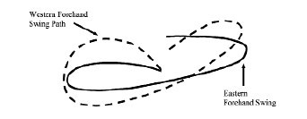
Figure 6: Racket swing trajectory diagram — Biomechanical comparison between Eastern and Western forehand swing paths into the impact zone.
5. Cơ Sinh Học & Bốn Giai Đoạn Then Chốt Của Cú Thuận Tay (Key Positions of the Forehand)
SẢN XUẤT CÚT Khi dạy các cú đánh, huấn luyện viên nên biết sự khác biệt giữa các nguyên tắc cơ bản và phong cách của tay vợt để đưa ra hướng dẫn thích hợp.
Nguyên tắc cơ bản Đây là những nguyên tắc kỹ thuật cơ bản để thực hiện cú đánh (xem các vị trí chính bên dưới). Tất cả tay vợt đều có những nguyên tắc cơ bản mặc dù không hoàn toàn giống nhau.
Ví dụ: Không phải mọi tay vợt đều có cùng một điểm tiếp xúc bóng (Contact point) cho một cú đánh cụ thể. Tuy nhiên, họ phải đánh nó ở một điểm nhất quán so với cơ thể, phù hợp với các nguyên tắc cơ bản khác của cú đánh để nó có hiệu quả và đáng tin cậy. Điểm tiếp xúc là một trong những nguyên tắc cơ bản, nhưng cách nó được thực hiện trong cú đánh là phong cách của tay vợt.
Phong cách Đây là sự thể hiện cá tính của nét vẽ. Nhiều tay vợt có phong cách đánh bóng khác nhau, ngay cả khi còn là thiếu niên. Ví dụ: Roger Federer có những nguyên tắc cơ bản tương tự như Pete Sampras, khi anh ấy mô phỏng lối chơi của mình theo cách của Pete khi còn là một học sinh cấp dưới. Mỗi người đều có một phong cách rất đặc biệt với sự khác biệt trong cách họ đánh bóng. Những nguyên tắc cơ bản và phong cách cá nhân đã giúp cả hai trở thành những tay vợt rất hiệu quả.
Vị trí phím Các vị trí phím giống như một “điểm đóng băng khung hình” trong một cú đánh cho biết một phần nhất định của cú đánh. Tất cả đều có tác động quan trọng đến cách thực hiện cú đánh. Tay cầm có tác động rất lớn đến cách thực hiện và đường xoay của cú đánh. Các vị trí then chốt, cùng với tay cầm, tạo nên những nguyên tắc cơ bản của cú đánh. Các vị trí then chốt được tạo thành từ bảy vị trí khác nhau trong hành trình. Bảy vị trí này là:
7. Phục hồi Các vị trí then chốt không hoàn toàn giống nhau đối với mỗi tay vợt. Sự thay đổi của một vị trí phím sẽ dẫn đến sự khác biệt ở các vị trí khác của cú đánh.
Cách cầm vợt và lựa chọn cú đánh của tay vợt sẽ dẫn đến những thay đổi trong động tác backswing, điểm tiếp xúc bóng (Contact point) và cú đánh tiếp theo. Tất cả đều phối hợp với nhau trong cơ chế và phong cách của tay vợt để trở nên nhất quán và đáng tin cậy. Các vị trí chính là yếu tố quan trọng trong việc tìm kiếm lỗi trong quá trình tạo nét! Hãy chắc chắn rằng bạn biết về cách lựa chọn cú đánh và cách cầm vợt cụ thể trước khi đưa ra phán quyết về việc điều chỉnh hoặc hướng dẫn. Để nghiên cứu chính xác các vị trí then chốt, bạn cần quay video quá trình tạo nét. Đảm bảo chụp nhiều ảnh từ cùng một nét để xem chúng có khác nhau không. Đồng thời, hãy thực hiện các cú đánh từ các góc khác nhau (bên hông, phía sau và phía trước) để đảm bảo cơ thể của tay vợt không cản tầm nhìn của bạn về cú đánh.
OceanofPDF.com CÁC VỊ TRÍ CHÍNH CỦA VỊ TRÍ Sẵn Sàng Thuận Tay
• Bố trí cảnh báo Cú đánh lùi
• Xoay vai bằng vợt
• Xoay vợt về phía sau Đang tải
• Giữ thăng bằng cánh tay sang bên Xoay về phía trước
• Xếp đường đi của vợt Điểm tiếp xúc
• Tăng tốc thông qua liên hệ Theo dõi
• Xoay vai hoàn toàn
• Tăng tốc theo dõi thông qua Recovery
• Định vị cơ thể bao trùm sân Dạy thuận tay với các vị trí chính Khi dạy những người mới bắt đầu chơi, bạn có thể sử dụng các vị trí then chốt làm hướng dẫn trong việc xây dựng cú thuận tay. Quá trình chuyển từ tư thế sẵn sàng (Ready position) sang trạng thái phục hồi giúp bạn thực hiện từ đầu đến cuối cú đánh mà không bỏ qua bất kỳ bước nào.
Trước tiên hãy giới thiệu toàn bộ nét vẽ và cho thấy nó trông như thế nào trước khi đi vào chi tiết cụ thể.
Lưu ý: Luôn sử dụng sự tiến triển trong việc giảng dạy bất kỳ chủ đề nào—sự nhất quán trước tiên, sau đó là chiều sâu, tiếp theo là phương hướng hoặc thay đổi phương hướng. Đừng chuyển sang giai đoạn tiếp theo trước khi nó được cải thiện đầy đủ bằng sự kiểm soát.
1. Bắt đầu với “toàn bộ phương pháp” trước khi chia nhỏ nó thành từng phần. Học sinh có thể bắt đầu với môn quần vợt mini và quay trở lại vạch cuối sân miễn là họ thể hiện khả năng kiểm soát bóng. Tìm các bài tập có tính nhất quán, độ sâu và định hướng. Sử dụng cách cầm vợt kiểu bán tây mang lại sự linh hoạt nhất trong việc phát triển các cú đánh.
2. Tiếp theo, ổn định các điểm tiếp xúc bóng (Contact point). Điều này giúp ổn định nét trước khi bạn bắt đầu làm việc với các chi tiết cụ thể. Nó còn ngăn chặn việc đột quỵ bị hỏng hoặc phải sửa quá nhiều thứ cùng một lúc. Những điểm cần chú ý với tư cách là huấn luyện viên: Sự vuông góc của hông và vai tại điểm tiếp xúc bóng (Contact point).
Hãy nhớ rằng các cách cầm khác nhau sẽ dẫn đến các điểm tiếp xúc bóng (Contact point) và vị trí vai khác nhau.
3. Vị trí sẵn sàng là vị trí của cơ thể trước khi bắt đầu bất kỳ lượt đánh nào.
Nó cần phải nhất quán trong quá trình thực thi và chuyển sang bước phân tách. Tư thế sẵn sàng phải là một tư thế thể thao, thoải mái nhưng tỉnh táo để dự đoán hành động tiếp theo. Độ căng thích hợp của các cơ (thư giãn) hỗ trợ tốc độ của bước tách thăng bằng (Split-step) trước khi hành động. Hãy để học sinh của bạn cảm nhận được sự khác biệt về việc các em có thể di chuyển nhanh hơn bao nhiêu khi ở trong tư thế thoải mái, thể thao. Tay cân bằng hỗ trợ vợt.
4. Động tác backswing được thực hiện bằng cách xoay người về phía nơi bóng sẽ được đánh. Vị trí của bàn chân bên ngoài bắt đầu chuyển động. Hông, vai, cánh tay và vợt đều xoay phối hợp với cú vung.
Cánh tay và vợt cùng nhau tạo thành một cú đánh ngược hình bầu dục phẳng, giảm tốc độ ở một bên cơ thể để tải cú đánh. Tay đỡ buông khỏi cổ vợt và duỗi sang một bên cơ thể. Cánh tay đánh hơi cong ở khuỷu tay vì nó tách xa khỏi cánh tay cân bằng. Bạn có thể thực hành động tác này với học sinh sau khi cho các em xem ví dụ. (Bạn có thể tạo hình bầu dục phẳng bằng cách giữ vợt của bạn nằm ngang bên cạnh cơ thể của họ và để họ xoay quanh nó.)
5. Tải cơ thể để chuẩn bị cho cú đánh là một khái niệm khó đối với những tay vợt tennis mới bắt đầu và trung cấp. Họ vẫn chưa cảm nhận được các nhóm cơ lớn hơn ở chân và thân có thể giúp vai và cánh tay thư giãn như thế nào. Các cơ chân, thân, vai và cánh tay bị kéo căng (tải).
Sự kéo căng của các cơ này tạo ra một lực căng trong các cơ, lực căng này được giải phóng (dỡ tải) tại thời điểm thực hiện cú vung về phía trước. Khi dạy khái niệm này, hãy chỉ ra tải trọng trông như thế nào và cảm giác như thế nào. Bạn có thể sử dụng những quả bóng xốp để minh họa cảm giác cú swing trở nên nhanh hơn với mức tải cơ bắp thích hợp. Bóng xốp là lựa chọn lý tưởng cho mục đích này vì chúng rất nhẹ và mềm.
Lưu ý: Tải trọng cũng được tạo ra bởi động năng (trọng lực) được lưu trữ bằng cách nâng cánh tay và vợt lên trong động tác vung vợt sau. Trọng lượng của cánh tay và vợt sẽ đẩy nhanh chuyển động về phía trước. Hình bầu dục phẳng của cú đánh sau là một yếu tố quan trọng trong việc tải, dỡ và tăng tốc của cú đánh. Điều này, trái ngược với một cú đánh lùi thẳng, trong đó chuyển động dừng lại ở cuối cú đánh lùi và phải được bắt đầu lại ở cú xoay người về phía trước (mất năng lượng, tải trọng và tăng tốc).
6. Cú xoay về phía trước là phần bắt đầu của cú xoay. Mặc dù nó được gọi là cú xoay về phía trước, nhưng cú xoay thực sự bắt đầu bằng việc duỗi tay và vợt ra xa hơn về phía sau và chuyển động thả xuống khi nó đi theo hình bầu dục của cú xoay. Tay vợt sử dụng trọng lực trên cánh tay và vợt để tăng tốc độ vung vợt. Việc dỡ bỏ cú xoay về phía trước bắt đầu bằng bước tiến về phía quả bóng và cánh tay giữ thăng bằng vung về phía trước. Hông và vai thả lỏng và quay về phía trước theo hướng đánh. Phần này của cú swing cũng chịu trách nhiệm về thời điểm thực hiện cú swing. Thời điểm của cú swing về phía trước đi kèm với kinh nghiệm. Hãy thực hành cách tính thời gian này với học sinh của bạn bằng cách đếm và nói 1 khi bóng nảy lên và 2 tại thời điểm bóng chạm vào. Phương pháp này sẽ hỗ trợ về thời gian và nhịp điệu của cú swing.
7. Điểm tiếp xúc là điểm tiếp xúc bóng (Contact point) của vợt với bóng so với cơ thể. Điểm tiếp xúc lý tưởng cho cú thuận tay phải ở giữa hông và vai, phía trước cơ thể, ngang bằng với bàn chân trước. Vị trí vai phải vuông góc khi tiếp xúc với vợt (xem hình). Việc phối hợp cả hai chân với khoảng cách và độ cao thích hợp của các điểm tiếp xúc bóng (Contact point) là rất quan trọng cho sự phát triển của các cú đánh.
8. Cú đánh tiếp theo là phần kết thúc của cú đánh sau khi tiếp xúc với bóng. Nó có thể hỗ trợ trong việc kiểm soát đường bay. Phần này của cú swing cần được kéo dài về phía trước, xung quanh cơ thể và hơi hướng lên trên. Việc hướng dẫn thực hiện cú đánh tiếp theo có thể được đơn giản hóa bằng cách bắt vợt bằng cánh tay giữ thăng bằng, ngay dưới đầu vợt, phía trên vai bên kia. Chuyển động này giải quyết được rất nhiều lỗi cơ học mà không cần phải dạy riêng.
Học viên có thể tạo dáng ở cuối động tác để kiểm tra động tác thực hiện.
9. Phục hồi là động tác di chuyển trở lại tư thế sẵn sàng (Ready position) để bao quát sân chuẩn bị cho cú đánh tiếp theo. Với bước tiến vào bóng, tay vợt phục hồi bằng cách đưa chân sau về phía trước cạnh chân kia và vuông góc với bàn chân theo hướng đánh. Sự phục hồi này tạo ra tư thế sẵn sàng (Ready position) cho cú đánh tiếp theo. Với các thế đứng mở, việc hồi phục phức tạp hơn rất nhiều và cần được dạy khi tay vợt đã tiến bộ hơn. Dạy các thế đứng quá sớm trong quá trình phát triển khiến động tác bằng chân trở nên lười biếng và cẩu thả. Học viên sẽ gặp khó khăn trong việc học chuyển trọng lượng và có thể mắc các lỗi kỹ thuật mất nhiều thời gian để sửa.
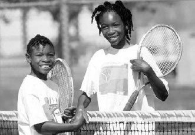
Figure 7: Modern forehand kinematic chain mechanics — Ground reaction force transfer, pelvic rotation, racket lag, and extended contact zone out in front.
6. Cú Trái Tay Một Tay Đối Trọng Với Cú Trái Tay Hai Tay (Backhand Mechanics)
CÁC VỊ TRÍ CHÍNH CỦA VỊ TRÍ SẴN SÀNG TRÁI TAY
• Bố trí cảnh báo Cú đánh lùi
• Xoay vai bằng vợt
• Xoay vợt về phía sau Đang tải
• Giơ cả hai tay về phía trước Xoay
• Xếp đường đi của vợt Điểm tiếp xúc
• Tăng tốc thông qua liên hệ Theo dõi
• Xoay vai hoàn toàn
• Kết thúc qua vai bên kia Phục hồi
• Vị trí cơ quan yểm trợ cho sân OceanofPDF.com CÁC VỊ TRÍ CHÍNH CỦA BÁC TRÁI ĐÔI ĐÔI Tư thế sẵn sàng
• Bố trí cảnh báo Cú đánh lùi
• Xoay vai bằng vợt
• Xoay vợt về phía sau Đang tải
• Giơ cả hai tay về phía trước Xoay
• Xếp đường đi của vợt Điểm tiếp xúc
• Tăng tốc thông qua liên hệ Theo dõi
• Xoay vai hoàn toàn Phục hồi
• Định vị cơ thể bao trùm sân Dạy trái tay với các vị trí chính Sử dụng các vị trí then chốt để dạy trái tay hai tay là công cụ cần thiết cho huấn luyện viên, tay vợt và phụ huynh. Tay vợt mới bắt đầu cần được hướng dẫn bằng cách sử dụng tiến trình giảng dạy. Các vị trí then chốt là một cách tuyệt vời để giới thiệu tất cả các chi tiết của nét vẽ. Chúng trở nên quan trọng đối với tay vợt khi họ tiến bộ và muốn trở nên xuất sắc. Cú trái tay hai tay có cơ chế rất đơn giản so với các cú đánh khác và tương đối dễ học và dạy.
Lưu ý: Trước tiên hãy thực hiện theo sự tiến triển của tính nhất quán, sau đó là độ sâu, tiếp theo là hướng hoặc sự thay đổi hướng. Đừng chuyển sang giai đoạn tiếp theo trước khi nó được cải thiện đáng kể nhờ khả năng kiểm soát và tính nhất quán.
1. Bắt đầu với “toàn bộ phương pháp” trước khi chia nhỏ nó ra một cách chi tiết. Bắt đầu với quần vợt mini và quay trở lại đường cuối sân (Baseline). Tiếp tục di chuyển trở lại đường cuối sân, miễn là các tay vợt cho thấy họ có quyền kiểm soát bóng. Tìm các bài tập có tính nhất quán, độ sâu và hướng. Sử dụng cách cầm vợt trái tay kiểu đông mang lại sự ổn định nhất cho cổ tay. Đối với các cú đánh trái tay bằng hai tay, hãy thêm cách cầm vợt kiểu bán tây của tay đỡ và đưa cả hai tay lại gần nhau ở phần dưới của tay cầm.
2. Tiếp theo, ổn định các điểm tiếp xúc bóng (Contact point). Điều này giúp ổn định nét trước khi bạn bắt đầu làm việc với các chi tiết cụ thể. Hông và vai hơi mở khi tiếp xúc. Vai không vuông góc nhiều như cú thuận tay tại điểm tiếp xúc bóng (Contact point), nhưng vuông góc với cú đánh tiếp theo. Điểm tiếp xúc của trái tay một tay sẽ ở phía trước cơ thể nhiều hơn so với trái tay hai tay. Hông cần xoay khi tiếp xúc để có thêm sức mạnh, tính nhất quán và ổn định khi tiếp xúc với bóng. Điều này được thực hiện bằng sự chuẩn bị kịp thời, động tác bằng chân tốt và đánh bóng ra phía trước cơ thể.
3. Tư thế sẵn sàng là tư thế của cơ thể chuẩn bị hành động. Đó phải là một tư thế thể thao - thư giãn nhưng tỉnh táo để dự đoán hành động tiếp theo. Độ căng thích hợp của các cơ (thư giãn) hỗ trợ tốc độ của bước tách thăng bằng (Split-step) trước khi hành động. Cả hai cánh tay ở tư thế thoải mái với khuỷu tay thả lỏng ở phía trước cơ thể. Tay cân bằng đỡ vợt ngay dưới đầu vợt.
4. Động tác backswing được thực hiện như một cú xoay người về phía nơi bóng sẽ được đánh. Vị trí của bàn chân bên ngoài bắt đầu chuyển động. Hông, vai, cánh tay và vợt đều xoay theo sự phối hợp của cú vung. Cánh tay và vợt cùng nhau tạo thành một cú vung ngược hình bầu dục phẳng và giảm tốc độ ở một bên cơ thể để tải cơ thể. Trong động tác backswing, việc thay đổi cách cầm vợt diễn ra ở tay dưới. Với cú đánh trái tay bằng hai tay, tay đỡ sẽ buông cổ vợt và trượt xuống để nối với tay kia trên cán vợt. Cả hai cánh tay hơi cong ở khuỷu tay. Vợt được nghiêng lên trên một góc bốn mươi lăm độ. Bạn có thể thực hành động tác này với học sinh sau khi cho các em xem ví dụ. Tạo hình bầu dục phẳng bằng cách giữ một cây vợt nằm ngang bên cạnh cơ thể của họ và để họ xoay quanh nó.
5. Tải cơ thể bắt đầu bằng việc xoay vai về phía sau và đặt chân trước về phía quả bóng. Các cơ và dây chằng ở chân, thân, vai và cánh tay bị kéo căng. Độ đàn hồi tạo ra năng lượng dự trữ mà chúng ta gọi là tải. Sự căng thẳng này có thể được giải phóng (dỡ bỏ) bằng cú xoay về phía trước. Tay vợt có thể cảm nhận khái niệm này bằng cách sử dụng quả bóng xốp và vung vợt nhanh hơn mà không cần bóp vợt quá mạnh. Vai sẽ quay về phía sau xa hơn khi đánh trái tay bằng một tay so với đánh trái tay bằng hai tay và ít bị hạn chế hơn từ tay cầm vợt còn lại. Tải trọng được tạo ra ngay trước cú vung vợt về phía trước để tích trữ động năng từ trọng lực của cánh tay và vợt.
Lưu ý: Tải trọng được tạo ra bởi động năng (trọng lực) được lưu trữ bằng cách nâng cánh tay và vợt lên trong động tác vung vợt ra sau. Trọng lượng của cánh tay và vợt sẽ đẩy nhanh chuyển động về phía trước. Hình bầu dục phẳng của cú đánh sau là một yếu tố quan trọng trong việc tải, dỡ và tăng tốc của cú đánh. Điều này trái ngược với động tác backswing thẳng. Chuyển động dừng lại ở cuối động tác vung vợt về phía sau và phải được bắt đầu ở động tác vung gậy về phía trước (mất tải và tăng tốc).
6. Cú xoay về phía trước là phần bắt đầu của cú xoay. Mặc dù nó được gọi là cú xoay về phía trước, nhưng cú xoay thực tế bắt đầu bằng việc duỗi cả hai cánh tay về phía sau và chuyển động đi xuống của vợt khi nó đi theo hình bầu dục của cú xoay. Tay vợt sử dụng năng lượng dự trữ từ tải trọng và trọng lực của cánh tay và vợt để tăng tốc độ vung vợt. Việc dỡ bỏ cú xoay về phía trước bắt đầu bằng bước tiến về phía bóng. Vai dỡ bỏ một phần và quay về phía trước theo hướng đánh. Với cú đánh trái tay đôi, hai cánh tay phối hợp với nhau để tạo ra cú vung về phía trước. Cánh tay trước sử dụng hành động kéo/xoay để bắt đầu chuyển động trong khi cánh tay sau và bàn tay tiếp quản ngay trước khi tiếp xúc với bóng để thực hiện hành động đẩy về phía trước. Với cú đánh trái tay bằng một tay, tay đỡ sẽ buông vợt và cú xoay về phía trước ban đầu được tạo ra bằng việc thả lỏng vai trước.
7. Điểm tiếp xúc là điểm tiếp xúc bóng (Contact point) của vợt với bóng so với cơ thể. Điểm tiếp xúc lý tưởng cho cú đánh trái tay phải ở giữa hông và vai và ở phía trước cơ thể, ngang bằng với bàn chân trước. Vị trí vai hơi mở khi tiếp xúc với bóng. Với cú đánh trái tay bằng hai tay, vai sẽ mở hơn một chút (xem hình). Phối hợp chuyển động của bàn chân để có khoảng cách và độ cao thích hợp đến điểm tiếp xúc bóng (Contact point) là rất quan trọng đối với sự phát triển của các cú đánh.
8. Cú đánh tiếp theo là phần kết thúc của cú đánh sau khi tiếp xúc với bóng. Nó có thể hỗ trợ trong việc kiểm soát đường bay. Phần này của cú swing cần được kéo dài về phía trước, xung quanh cơ thể và hơi hướng lên trên.
Việc dạy theo dõi có thể được đơn giản hóa bằng cách hoàn thành (các) tay phía trên vai kia. Bằng cách sử dụng phương pháp này, (các) cánh tay sẽ được tự động uốn cong trong các bước tiếp theo. Hông và vai sẽ xoay xa hơn để cuối cùng vuông góc với hướng đánh. Ngay cả khi là tay vợt bằng một tay, việc thực hành theo dõi bằng hai tay để cảm nhận được điểm kết thúc của cú đánh phía trên vai kia có thể có ích. Yêu cầu học sinh tạo dáng ở cuối nét vẽ để kiểm tra phần thực hiện tiếp theo.
9. Phục hồi là động tác quay trở lại tư thế sẵn sàng (Ready position) để bao quát sân chuẩn bị cho cú đánh tiếp theo. Với bước tiến về phía bóng, tay vợt phục hồi bằng cách đưa chân sau về phía trước cạnh chân kia. Với các thế đứng mở, việc hồi phục phức tạp hơn rất nhiều và cần được dạy khi tay vợt đã tiến bộ hơn. Dạy các tư thế thế mở quá sớm trong quá trình phát triển khiến cú đánh trở nên máy móc và gượng ép. Học sinh không học cách sử dụng chuyển trọng lượng của mình và có thể mắc một số lỗi kỹ thuật mà phải mất nhiều thời gian để sửa.
Phần III: Cú Giao Bóng Uy Lực, Kỹ Năng Lưới Hiện Đại & Khoa Học Bộ Pháp Di Chuyển
7. Cơ Học Chuỗi Động Của Cú Giao Bóng (Key Positions of the Serve)
CÁC VỊ TRÍ CHÍNH CỦA PHỤC VỤ Vị trí sẵn sàng
• Độ nảy của bóng (nhịp điệu)
• Chuyển trọng lượng sang chân sau
• Cánh tay vung lên một chút Backswing
• Tách rời cả hai cánh tay
• Chuyển trọng lượng về phía trước
• Hông về phía trước để giữ thăng bằng Đang tải
• Hông ra phía trước để lấy sức Và giữ thăng bằng Xoay về phía trước
• Duỗi thẳng (dỡ hàng) chân
• Vợt rơi giữa hai vai
• Xoay hông và vai
• Duỗi cánh tay lên và về phía trước
• Cân bằng cánh tay thả xuống bụng Điểm tiếp xúc
• Mở rộng cổ tay Theo dõi
• Xoay cổ tay ra ngoài
• Tư thế phục hồi phần thân trên
• Phục hồi chân sau phía trước
• Phục hồi động tác chân lùi
• Định vị cơ thể cho cú đánh tiếp theo Dạy Hành động giao bóng với các vị trí chính Cú giao bóng là một chuyển động phức tạp và có phối hợp để thực hiện. Cả hai cánh tay di chuyển riêng biệt theo hướng ngược nhau với mục đích khác nhau. Khi dạy những người mới bắt đầu chơi quần vợt, hãy nhớ rằng họ không thể thực hiện những động tác giống như những tay vợt ở trình độ cao có thể thực hiện. Các động tác đầu gối, hông và vai cũng sẽ không nổi bật như với những tay vợt có kinh nghiệm hơn. Vì vậy, nên thực hiện chậm rãi khi dạy hành động giao bóng. Thông thường, bản thân học sinh sẽ thể hiện khi nào họ đã sẵn sàng thực hiện bước tiếp theo. Tính trôi chảy trong cú đánh được cải thiện cùng với sự nhất quán và định hướng hơn. Đó sẽ là lúc để phát triển hơn nữa các chi tiết cụ thể của hành động dịch vụ. Cho đến thời điểm đó, việc ổn định hoạt động giao bóng với các vị trí chủ chốt sẽ rất có ích cho sự phát triển của họ.
Lưu ý: Trước tiên hãy thực hiện theo sự tiến triển của tính nhất quán, sau đó là hướng dẫn trong trường hợp này. Độ sâu của cú giao bóng chưa phải là vấn đề đối với người mới bắt đầu và tay vợt ở trình độ trung cấp. Đừng chuyển sang giai đoạn tiếp theo trước khi nó được cải thiện đầy đủ.
1. Bắt đầu với “toàn bộ phương pháp” trước khi chia nhỏ nó ra các chi tiết. Các học viên có thể bắt đầu ở vạch giao bóng (đặc biệt là với những tay vợt thực sự trẻ) và quay trở lại vạch cuối sân. Không di chuyển trở lại vị trí tiếp theo cho đến khi họ thể hiện khả năng kiểm soát bóng. Ở cấp độ này, hãy cố gắng tìm các bài tập có tính nhất quán và hướng cải thiện. Nên sử dụng kiểu cầm kiểu lục địa vì nó mang lại cho cổ tay sự ổn định nhất trong hành động giao bóng.
2. Ổn định việc tung bóng và điểm tiếp xúc bóng (Contact point) tiếp theo. Việc tung bóng xác định điểm tiếp xúc bóng (Contact point) của quả giao bóng. Ổn định việc ném bóng trước khi bạn bắt đầu làm việc cụ thể. Sự cân bằng của cơ thể, trong giai đoạn này, đóng một vai trò quan trọng trong việc thực hiện chuyển động. Với tư cách là huấn luyện viên, bạn cần quan sát xem hông có hướng ra phía trước hay không để giữ thăng bằng trong giai đoạn tải. Hông và vai xoay về phía trước để tiếp xúc ngay phía trước cơ thể.
3. Vị trí sẵn sàng của quả giao bóng là điểm thư giãn trước khi thực hiện cú giao bóng.
Tay vợt có thể đập bóng vài lần để tập trung và tìm nhịp điệu. Quả bóng nằm ở đầu ngón cái, ngón trỏ và ngón giữa. Hai ngón tay còn lại đỡ vợt sao cho cả hai tay ở tư thế duỗi thoải mái. Trọng lượng cơ thể chủ yếu dồn lên chân trước trước khi chịu tải trọng của cú swing. Bàn chân ở tư thế khép kín với đường chạy qua đầu ngón chân hướng về hướng đánh. Khi các tay vợt tiến bộ hơn, vị trí của bàn chân sẽ nghiêng về phía lưới nhiều hơn.
4. Backswing là sự kết hợp giữa tung bóng và backswing với chuyển động hướng lên trên của cánh tay đánh và vợt. Cả hai cánh tay đều xoay sang vị trí chữ Y (xem hình). Cú ném cần phải thẳng lên, cao hơn đầu ngón tay và hơi lệch sang một bên. Bạn có thể dạy độ chính xác của cú ném bằng cách cho học sinh tung quả bóng lên không trung và để nó rơi xuống đất.
Bóng phải tiếp đất thẳng hàng với chân trước. Cánh tay sau vung lên trên vai và uốn cong ở khuỷu tay. Trong động tác backswing, bàn tay mở ra khi đi qua hông trước khi vợt rơi xuống giữa hai bả vai. Trọng lượng cơ thể chuyển từ chân trước sang chân sau. Vai quay sang một bên và xa hơn một chút so với song song với đường biên (điều này để phù hợp với việc xoay vai ra ngoài trong cú xoay về phía trước). Khi tay vợt tiến lên, bàn tay sẽ không mở ra trong cú vung vợt sau và sẽ hỗ trợ trong việc giữ khuỷu tay hướng lên (xem Dạy Tennis nâng cao Tập 2).
5. Tải chuyển động giao bóng sẽ khác với những tay vợt mới bắt đầu và trung cấp và thậm chí còn hơn thế nữa với những tay vợt có kinh nghiệm. Những người mới bắt đầu chơi quần vợt sẽ sử dụng ít tải trọng hơn cho vai và hông và việc uốn cong đầu gối là tối thiểu. Tải trọng của quả giao bóng được thực hiện bằng động tác vung vợt về phía sau, chuyển trọng lượng, xoay vai và hoạt động của đầu gối.
Tải trọng của cú đánh sau xảy ra bằng cách đưa vợt lên trên bàn tay ở cuối cú xoay và sau đó thả vợt vào giữa hai bả vai. Việc thả cánh tay này, ngay trước khi tác động lực, sẽ tăng tốc độ xoay về phía trước. Việc chuyển trọng lượng về phía trước giúp xoay đầu gối và vai. Việc xoay vai trong cú đánh sau sẽ tạo tải trọng cho vai ngay trước khi lực tác dụng lên cú đánh về phía trước. Tay vợt ở trình độ trung bình sẽ bắt đầu sử dụng nhiều động tác hông và đầu gối hơn. Việc uốn cong đầu gối tạo tải trọng cho đầu gối để bắt đầu chuyển động từ mặt đất lên. Việc uốn cong đầu gối là điểm sâu nhất ở cuối động tác backswing. Tải trọng của ba thành phần này cần phải được phối hợp với nhau để giữ cân bằng.
6. Động tác xoay người về phía trước bắt đầu khi đầu gối duỗi thẳng lên trên. Động tác xoay từ hông lên đến vai mở về phía trước theo hướng bóng. Việc dỡ đầu gối xuống hông và vai, cánh tay đánh, khuỷu tay và cuối cùng là cổ tay là chuỗi động năng truyền lực từ mặt đất lên. Chuyển động hướng lên của đầu gối sẽ kích hoạt vợt hạ xuống thấp hơn nữa giữa hai bả vai. Trọng lượng hoặc khối lượng của vợt và gia tốc chuyển động lên và về phía trước của cánh tay và vai tạo ra độ trễ của đầu vợt. Độ trễ ở cánh tay, khuỷu tay và cổ tay khi nó quán tính vung kết thúc (Follow-through) hông và vai, cung cấp khả năng tăng tốc cho đầu vợt. Cánh tay giữ thăng bằng thả từ vị trí tung bóng xuống đến thắt lưng để sau đó bắt vợt ở lượt tiếp theo.
7. Điểm tiếp xúc của quả giao bóng là ở phía trước cơ thể. Điểm tác động cần phải là nơi cánh tay có thể duỗi thẳng để vợt có thể đánh bóng một cách thoải mái. Nếu ném quá thấp, cánh tay sẽ không đạt được tư thế duỗi thẳng, cổ tay và đầu vợt sẽ không ổn định. Nếu cú ném quá cao, thời điểm ném bóng sẽ trở thành vấn đề. Quả bóng sẽ lơ lửng trong không khí quá lâu và chuyển động phải dừng lại hoặc giảm tốc độ quá nhiều để tạo ra chuyển động trôi chảy. Hông và vai hướng về phía trước để gặp bóng và gần như vuông góc với hướng đánh tại thời điểm va chạm. Mắt phải tập trung vào bóng trong quá trình tiếp xúc để vung lên và đảm bảo thực hiện một cú giao bóng sạch.
8. Tiếp theo của quả giao bóng là chuyển động với vợt vung qua quả bóng sang phía bên kia của cơ thể. Cánh tay giữ thăng bằng chuyển từ vị trí tung bóng sang tư thế cong về phía trước bụng để dọn đường cho vợt khi thực hiện cú đánh tiếp theo. Chuyển động này của cánh tay giữ thăng bằng hỗ trợ chuyển động xoay của cơ thể khi đánh bóng và duy trì sự cân bằng trong cú đánh. Khi kết thúc lượt đánh tiếp theo, cánh tay giữ thăng bằng sẽ đỡ vợt khi nó đi qua phía bên kia của cơ thể, gần hông. Vai tiếp tục xoay và đưa hông theo. Chân sau sẽ kết thúc bằng động tác xoay chân và bàn chân đặt trên đầu ngón chân. Khi chuyển động giao bóng trở nên nhanh hơn, kết thúc của hành động giao bóng sẽ thay đổi.
9. Việc phục hồi động tác giao bóng sẽ khôi phục lại sự cân bằng sau cú vung và giúp bạn có thể sẵn sàng cho cú đánh tiếp theo. Động tác giao bóng càng nhanh thì động lượng sẽ mang trọng lượng cơ thể vượt quá chân trước càng nhiều. Sau khi nhảy và bỏ qua chân trước, chân sau sẽ bước qua để ổn định cơ thể và lùi lại sau bước quán tính vung kết thúc (Follow-through). Chuyển động ổn định này cần phải được thực hành để duy trì sự cân bằng của bạn.
Cánh tay vung về phía trước cơ thể để khôi phục tư thế sẵn sàng (Ready position). Tay vợt lùi về phía sau đường cuối sân và có thể chuẩn bị cho cú đánh tiếp theo.
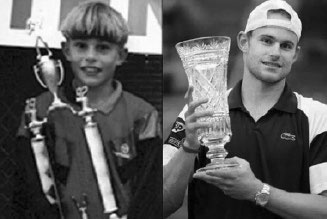
Figure 8: Andy Roddick's thunderous serve mechanics — Deep knee flexion in the Trophy Pose and maximum forearm pronation release at impact.
8. Nghệ Thuật Bắt Vô-Lê Trên Lưới (Key Positions of the Volley)
CÁC VỊ TRÍ CHÍNH CỦA VỊ TRÍ BÓNG TAY THUẬN TIỆN
• Bố trí cảnh báo Cú đánh lùi
• Xoay ngược ngắn Tải
• Giữ thăng bằng cánh tay sang bên Xoay về phía trước
• Căn chỉnh đường đi của vợt Điểm tiếp xúc
• Vùng đánh Theo dõi
• Vị trí bao trùm sân Dạy cú vô lê thuận tay với các vị trí chính Cú vô lê thuận tay nhìn chung là một động tác đơn giản nhưng thường được thực hiện phức tạp hơn mức cần thiết. Việc dạy cú bắt lưới (Volley) có thể được đơn giản hóa bằng cách bắt bóng bằng tay thay vì dùng vợt. Tay vợt sẽ bớt phần nào nỗi sợ hãi khi đến gần lưới hơn. Nó dạy trẻ thực hiện các động tác tự động để điều chỉnh bóng bằng cách uốn cong đầu gối và bắt bóng ra phía trước cơ thể (tay vợt sẽ tự động cố gắng bắt bóng ngang tầm mắt). Huấn luyện viên có thể ném hoặc đưa bóng sang trái và phải từ họ, hoặc thậm chí thẳng vào họ, để họ biết cách di chuyển tránh đường.
Tạo được vị trí giống nhau khi bắt bóng là chìa khóa cho những cú vô lê chắc chắn và nhất quán.
Lưu ý: Trước tiên hãy thực hiện theo tiến trình nhất quán, sau đó là chiều sâu, tiếp theo là hướng hoặc sự thay đổi hướng. Đừng chuyển sang giai đoạn tiếp theo trước khi nó được cải thiện đầy đủ.
1. Bắt bóng trước khi thực hiện động tác vô lê bằng vợt là phương pháp được ưu tiên trong quá trình thực hiện. Lúc đầu, hãy cố gắng làm cho nó dễ dàng nhất có thể, sau đó thử chuyển động và tốc độ nhiều hơn để bắt bóng. Di chuyển xa hơn một chút về phía sau có thể làm cho nó thậm chí còn khó khăn hơn. Dạy cách cầm vợt kiểu lục địa cho cú vô lê thuận tay.
2. Ổn định các điểm tiếp xúc bóng (Contact point) bằng cách chặn bóng tại điểm va chạm với bóng. Điều này giúp ổn định toàn bộ nét vẽ trước khi bạn bắt đầu làm việc với các chi tiết cụ thể. Nó rèn luyện cánh tay và cổ tay để tăng cường sức mạnh và giữ vị trí đó của đầu vợt để kiểm soát. Nó cũng hướng dẫn học sinh đánh bóng bằng chân bằng cách bước về phía trước thay vì vung vợt.
3. Vị trí sẵn sàng cho cú vô lê là chuẩn bị di chuyển theo một trong hai hướng tới bóng. Khuỷu tay thả lỏng và ở phía trước cơ thể. Cánh tay cân bằng giữ vợt nhẹ nhàng bằng các ngón tay ngay dưới đầu vợt. Sự cân bằng của cơ thể hơi hướng về phía trước trên quả bóng của bàn chân để bước về phía quả bóng. Vị trí sẵn sàng chuyển sang bước chia bóng khi đối phương đánh bóng.
4. Cú đánh sau của cú vô lê ngắn và đơn giản. Sau bước tách thăng bằng (Split-step) bóng, cổ tay xoay ngang và lùi về phía sau để vợt vào tư thế “đấm” bóng. Tay đỡ buông vợt và giữ ở phía trước cơ thể để giữ thăng bằng trong cú đánh. Chân sau di chuyển trước quả bóng đang tới để tạo khoảng cách thích hợp. Đầu gối được uốn cong để phù hợp với chiều cao của quả bóng. Cánh tay đánh hơi cong ở khuỷu tay, đồng thời vai hơi nghiêng sang một bên. Vợt được giữ ở một góc 45 độ với mặt đất ở cuối cú vung vợt sau.
5. Tải cơ thể chuẩn bị cho cú vô lê là động tác xoay vai và gập chân. Khi dạy khái niệm này, hãy cho tay vợt thấy tải trông như thế nào và để họ cảm nhận hành động trước tiên. Việc xoay vai tạo ra năng lượng dự trữ cho cú đấm bằng vợt. Đầu gối uốn cong chuẩn bị cho cú vô lê bước về phía trước và đẩy cơ thể vào bóng. Việc uốn cong đầu gối giúp chân chịu tải lực đằng sau cú vô lê (chuyển trọng lượng).
6. Động tác xoay về phía trước được bắt đầu bằng chân. Việc dỡ bỏ cú swing về phía trước bắt đầu bằng bước tiến về phía bóng. Vai sau quay về phía trước theo hướng đánh. Móng tay và đầu vợt luôn hướng về mục tiêu càng lâu càng tốt để tăng cường hướng bóng. Cánh tay giữ thăng bằng xoay theo chuyển động của vai nhưng vẫn ở phía trước cơ thể để giữ thăng bằng trong cú đánh. Duy trì góc của cổ tay giúp cho cú vô lê luôn sắc nét khi tiếp xúc. Cho phép tay vợt cảm nhận được sự chuyển trọng lượng và dỡ tải này của chân bằng cách đứng trước mặt họ và tạo áp lực lên tay. Họ sẽ có thể cảm nhận được sự khác biệt về sức mạnh khi đứng thẳng hoặc sử dụng đầu gối. Điều tương tự cũng xảy ra với vợt ở phía trước hoặc ở bên cạnh. Tốc độ của bước tiến về phía trước sẽ ảnh hưởng đến tốc độ của quả bóng.
7. Điểm tiếp xúc là điểm tiếp xúc bóng (Contact point) của vợt với bóng so với cơ thể. Điểm tiếp xúc lý tưởng cho cú vô lê thuận tay phải ngang bằng với bàn chân trước nhưng có thể thay đổi một chút tùy theo độ cao của bóng.
Vị trí của vai phải gần như vuông góc với đầu vợt khi tiếp xúc. Người mới bắt đầu chơi có thể học cách tìm điểm tiếp xúc bóng (Contact point) này bằng cách chặn bóng khi va chạm và giữ vợt ở cùng một góc.
Việc di chuyển cơ thể vào vị trí thích hợp phía sau quả bóng cần có sự luyện tập và kinh nghiệm. Đầu gối đóng vai trò quan trọng trong việc hướng tầm mắt đến bóng nhiều nhất có thể. Giữ góc vợt với cổ tay ổn định sẽ cải thiện tính nhất quán và hướng.
8. Cú đánh tiếp theo là phần kết thúc của cú đánh sau khi tiếp xúc với bóng. Nó có thể giúp kiểm soát độ sâu và hướng của quả bóng. Khuỷu tay duỗi thẳng về phía trước với đầu vợt hướng về phía mục tiêu. Phần tiếp theo ngắn gọn và trực tiếp. Tay vợt tạo dáng ở cuối cú đánh để kiểm tra việc thực hiện cú đánh tiếp theo.
9. Việc phục hồi cú đánh là để lấy lại thăng bằng sau cú vung và chuẩn bị cho cú đánh tiếp theo. Với bước tiến vào bóng, bạn muốn phục hồi bằng cách đưa chân sau về phía trước cạnh chân kia và vuông góc với bàn chân kia. Sự phục hồi này tạo ra tư thế sẵn sàng (Ready position) để di chuyển cho cú đánh tiếp theo. Cơ thể thay đổi vị trí và các tay vợt phản ứng với cú vô lê hoặc cú đánh từ trên cao tiếp theo.
OceanofPDF.com CÁC VỊ TRÍ CHÍNH CỦA BÓNG CHÁY TRÁI
• Bố trí cảnh báo Cú đánh lùi
• Xoay vai bằng vợt
• Xoay vợt về phía sau Đang tải
• Giữ thăng bằng cánh tay sang bên Xoay về phía trước
• Xếp đường đi của vợt Điểm tiếp xúc
• Vùng đánh Theo dõi
• Tái định vị cơ thể Dạy cú vô lê trái tay với các vị trí chính Cú vô lê trái tay thường là một cú đánh khó thành thạo hơn đối với những người mới bắt đầu chơi quần vợt vì thiếu sức mạnh ở cổ tay. Với những tay vợt còn rất trẻ, bạn có thể bắt đầu sử dụng những quả bóng nhẹ hơn hoặc chuyền bóng từ khoảng cách ngắn hơn trong luyện tập. Tiến trình của cú đánh này vẫn phải là bắt bóng trước rồi cố gắng sử dụng vợt bằng cách chặn bóng từ khoảng cách ngắn hơn để kiểm soát cổ tay và vợt. Bằng cách di chuyển cả hai cánh tay theo hướng ngược nhau trong cú đánh, cánh tay giữ thăng bằng sẽ tạo ra lực phản lực cho cánh tay đánh. Cánh tay cân bằng di chuyển về phía sau càng nhanh thì cánh tay đánh sẽ di chuyển theo hướng ngược lại càng nhanh.
Khái niệm hành động và phản ứng này cần một thời gian để phát triển và đòi hỏi sức mạnh của cánh tay để thực hiện. Là một huấn luyện viên, bạn cần biết sức mạnh của học sinh và điều chỉnh cường độ thực hiện.
Lưu ý: Trước tiên hãy thực hiện theo tiến trình nhất quán, sau đó là chiều sâu, tiếp theo là hướng hoặc sự thay đổi hướng. Đừng chuyển sang giai đoạn tiếp theo trước khi nó được cải thiện đầy đủ.
1. Bắt đầu bắt bóng trước khi thực hiện động tác vô lê bằng vợt.
Làm cho nó dễ dàng nhất có thể và sau đó thử chuyển động và tốc độ nhiều hơn. Di chuyển xa hơn một chút về phía sau có thể làm cho nó thậm chí còn khó khăn hơn. Dạy cách cầm vợt trái tay kiểu lục địa cho cú vô lê trái tay (xem chương về cách cầm vợt).
2. Ổn định các điểm tiếp xúc bóng (Contact point) bằng cách bước vào và chặn bóng tại điểm va chạm bằng bóng. Điều này giúp ổn định nét trước khi bạn bắt đầu làm việc với các chi tiết cụ thể. Với những tay vợt còn rất trẻ, hãy sử dụng những quả bóng nhẹ hơn hoặc thử đưa bóng từ khoảng cách ngắn hơn. Nếu việc này vẫn gây khó khăn cho họ, hãy thử để họ sử dụng hai tay. Điểm tiếp xúc phải ở phía trước cơ thể với cánh tay gần như duỗi ra khi va chạm. Sự ổn định của cổ tay sẽ quyết định hướng và độ sâu của quả bóng.
3. Vị trí sẵn sàng cho cú vô lê trái tay là chuẩn bị di chuyển sang hai bên để lấy bóng. Khuỷu tay thả lỏng và ở phía trước cơ thể. Cánh tay cân bằng giữ vợt nhẹ nhàng bằng các ngón tay ngay dưới đầu vợt. Sự cân bằng của cơ thể hơi hướng về phía trước trên quả bóng của bàn chân để bước về phía quả bóng. Vị trí sẵn sàng chuyển sang bước chia bóng khi đối phương đánh bóng.
4. Cú đánh sau ngắn và đơn giản để tạo sự ổn định. Cổ tay xoay sang một bên và lùi lại để vợt vào tư thế đánh bóng. Tay đỡ giữ cổ vợt. Với cú vô lê bằng một tay, tay buông vợt với cú xoay về phía trước. Chân sau di chuyển phía sau quả bóng đang tới. Đầu gối được uốn cong để phù hợp với chiều cao của quả bóng. Cánh tay đánh hơi cong ở khuỷu tay khi vai quay sang một bên. Vợt được giữ ở một góc 45 độ với mặt đất ở cuối cú vung vợt sau.
5. Tải cơ thể được thực hiện bằng cách xoay vai và uốn cong chân. Khi dạy khái niệm này, hãy cho học sinh thấy tải trông như thế nào và để các em thử hành động. Việc xoay vai tạo ra năng lượng dự trữ cho cú đấm về phía trước. Đầu gối uốn cong để chuẩn bị bước về phía trước, chống bóng bằng chân trước. Việc uốn cong đầu gối sẽ cung cấp lực cho cú vô lê (tải).
6. Động tác xoay về phía trước được bắt đầu bằng chân. Việc dỡ bỏ cú xoay về phía trước bắt đầu bằng bước tiến về phía bóng. Bước về phía trước càng nhanh thì bóng sẽ càng tăng tốc. Các đốt ngón tay và đầu vợt luôn hướng về mục tiêu càng lâu càng tốt để tăng cường hướng bóng. Với cú vô lê bằng một tay, cánh tay giữ thăng bằng sẽ vung về phía sau như một phản lực để tạo sự cân bằng và tăng thêm sức mạnh trong cú đánh. Phản ứng nhanh hơn mang lại tốc độ cao hơn cho đầu vợt.
Duy trì góc của cổ tay giúp cho cú vô lê luôn sắc nét khi tiếp xúc. Cú vô lê trái tay bằng hai tay có thể được sử dụng cho những người mới bắt đầu với lực ít hơn nhưng không được khuyến khích cho sự phát triển của những tay vợt trình độ cao bị mất tầm với, sức mạnh và khả năng giữ thăng bằng.
7. Điểm tiếp xúc là điểm tiếp xúc bóng (Contact point) của vợt với bóng so với cơ thể. Điểm tiếp xúc lý tưởng cho cú vô lê trái tay phải ngang bằng với bàn chân trước. Vai nằm ngang càng lâu càng tốt để duy trì hướng của bóng. Người mới bắt đầu chơi có thể học cách tìm điểm tiếp xúc bóng (Contact point) này bằng cách chặn bóng khi va chạm và giữ vợt ở cùng một góc. Việc di chuyển cơ thể vào vị trí thích hợp phía sau quả bóng cần có sự luyện tập và kinh nghiệm. Đầu gối đóng vai trò quan trọng trong việc giữ mắt ở ngang tầm với bóng. Giữ góc cổ tay của vợt ổn định sẽ cải thiện tính nhất quán và hướng.
8. Cú đánh tiếp theo là phần kết thúc của cú đánh sau khi tiếp xúc với bóng và có thể hỗ trợ trong việc kiểm soát độ sâu và hướng của bóng. Khuỷu tay cần duỗi thẳng về phía trước sao cho dây vợt hướng về phía mục tiêu.
Phần tiếp theo ngắn gọn và trực tiếp. Giữ tư thế ở cuối động tác để kiểm tra quá trình thực hiện.
9. Việc thu hồi cú vô lê là để lấy lại thăng bằng sau cú vung và chuẩn bị cho cú đánh tiếp theo. Với bước tiến vào bóng, bạn muốn phục hồi bằng cách đưa chân sau về phía trước cạnh chân kia và vuông góc với bàn chân kia. Sự phục hồi này tạo ra tư thế sẵn sàng (Ready position) để di chuyển cho cú đánh tiếp theo.
Kim Clijsters OceanofPDF.com
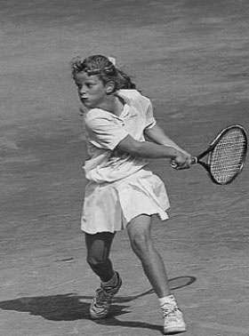
Figure 9: Kim Clijsters — Exceptional dynamic flexibility, low center of gravity, and firm racket face stability on reflex volleys.
9. Khoa Học Bộ Pháp Di Chuyển & Bước Tách Split-Step (Footwork Principles)
BÓNG ĐÁ Với những tiến bộ về thiết bị và dây, tay vợt đánh bóng mạnh hơn và sớm hơn sau khi nảy. Ngay cả trong các giải đấu cấp cơ sở, họ đánh bóng với lực mạnh hơn và di chuyển nhanh hơn. Sự phát triển này của trò chơi đòi hỏi tốc độ, sự cân bằng và khả năng phục hồi nhanh hơn để bao quát toàn bộ sân. Kỹ thuật ra chân cần chính xác, hiệu quả để chơi nhanh hơn và trụ lâu trong trận đấu.
Một số ưu điểm của động tác chân tốt:
• Cân bằng tốt hơn trước, trong và sau cú đánh.
• Cải thiện khả năng kiểm soát bóng trong các pha đánh bóng.
• Phục hồi nhanh hơn sau khi bắn.
• Phạm vi sân tốt hơn cho phép tay vợt tiếp cận được nhiều bóng hơn.
• Có thể thực hiện những cú đánh quyết liệt hơn nếu có sự chuẩn bị tốt hơn.
• Hiệu quả vận động giúp bảo toàn năng lượng.
Thế đứng Có bốn tư thế khác nhau để sử dụng khi định vị cơ thể của bạn phía sau quả bóng. Tất cả chúng đều có tác động đến việc thực hiện và lựa chọn cú đánh của cú đánh. Các lập trường như sau:
4. Thế đứng mở Sẽ tốt hơn nếu bạn bắt đầu với những tay vợt mới và ít kinh nghiệm hơn với thế đứng vuông vắn trước khi áp dụng thế đứng nửa mở và mở. Khi sử dụng tư thế vuông góc, tay vợt sẽ cảm nhận được sự cải thiện trong việc chuyển trọng lượng và kiểm soát bóng tốt hơn rất nhiều. Khi tay vợt tiến bộ hơn, việc chuyển trọng lượng trở thành một yếu tố quan trọng để truyền sự cân bằng và sức mạnh cho các cú đánh cũng như gây áp lực lên đối thủ.
Tư thế khép kín Với bàn chân ở vị trí này, rất khó để xoay vai và hông để tạo vuông góc cho vợt khi tiếp xúc với bóng. Ở cú đánh trái tay bằng đôi, nó có thể mang lại sự ổn định nhất định, nhưng ở cú đánh thuận tay, nó ngăn chặn việc tạo ra cú đánh và không được khuyến khích ở phía đó. Thiết lập bằng chân sau trước.
Tư thế vuông góc Tư thế này sẽ mang lại khả năng chuyển trọng lượng và xoay cơ thể tốt nhất trong khi vẫn duy trì sự cân bằng. Hông và vai có thể mở ra về phía mục tiêu để vuông góc đầu vợt khi tiếp xúc với bóng. Đây là cách tốt nhất để bắt đầu dạy những người mới chơi quần vợt.
Tư thế bán mở Tư thế này có thể được giới thiệu cho tay vợt ở trình độ trung cấp để tăng cường khả năng xoay hông và vai về phía trước. Nó cũng nên được sử dụng để di chuyển ra ngoài để nhường chỗ cho cú đánh khi bóng ở quá gần cơ thể.
Tư thế mở Tư thế này không phù hợp với người mới bắt đầu và nên dành riêng cho tay vợt cao cấp. Trước tiên, học sinh cần học động tác chân cơ bản và chuyển trọng lượng phù hợp để tạo ra sự cân bằng và nhất quán với các cú đánh trên mặt đất.
Những cú đánh tốt sẽ vô ích nếu không có động tác chân tốt để đưa bạn đến đó.
Chuyển động Trên sân tennis, chuyển động cần phải được phối hợp giữa quỹ đạo của quả bóng và vị trí của tay vợt. Với các góc, tốc độ, quỹ đạo và độ nảy khác nhau của quả bóng, đây có thể là một nhiệm vụ khó khăn.
Hướng Bạn cần có khả năng di chuyển theo mọi hướng để đặt cơ thể vào đúng vị trí phía sau quả bóng. Chuyển động sang ngang được sử dụng phổ biến nhất, cho dù đó là thuận tay hay trái tay. Đối với những quả bóng rơi ngắn về phía trước, hãy sử dụng chuyển động về phía trước. Sử dụng chuyển động lùi để lấy những quả bóng rơi sâu và/hoặc có quỹ đạo cao.
Kiểu di chuyển Có nhiều hình thức di chuyển được sử dụng trong quần vợt để tay vợt cảm thấy cân bằng và phối hợp khi chơi một cuộc giao tranh.
Các hình thức di chuyển phổ biến nhất:
• Chạy - hình thức di chuyển nhanh nhất
• Bước vào hoặc tiến lên - được sử dụng nhiều nhất để chuyển trọng lượng
• Bậc thang bên - với thế đứng mở
• Trộn bên - đang khôi phục
• Vượt bậc - để rẽ sang hướng tiếp theo
• Lùi lại - khi định vị phía sau quả bóng
• Bước phục hồi - gập người để giữ thăng bằng
• Bỏ qua - để lấy lại số dư
• Tách bước - bắt đầu hành động trước khi chuyển động Tất cả các kiểu chuyển động này đều có mục đích duy nhất là duy trì sự cân bằng trước, trong và sau cú đánh. Các kiểu chuyển động khác nhau là cần thiết để tay vợt điều chỉnh theo tốc độ, độ xoáy, quỹ đạo và lựa chọn cú đánh của tay vợt. Điều quan trọng là phải dạy những điều này vào thời điểm thích hợp theo trình tự các cú đánh, sự phát triển kiểu đánh và các tình huống chiến thuật. Cố gắng kết hợp điều này vào trò chơi và trong môi trường cạnh tranh bất cứ khi nào có thể.
Huấn luyện động tác bằng chân Động tác chân và động tác đánh cần phải là một nỗ lực phối hợp. Chỉ động tác bằng chân sẽ không phát triển được tay vợt. Những cú đánh tốt đòi hỏi động tác chân tốt. Có tất cả các loại bài tập cụ thể có thể thực hiện được khi huấn luyện từng động tác này. Trước khi bạn bắt đầu thực hiện bất kỳ điều nào trong số này, hãy đảm bảo phân tích chuyển động trước. Dưới đây là một số mẹo khi bắt đầu động tác bằng chân và chuyển động cho người mới bắt đầu chơi quần vợt:
1. Trẻ nhỏ (5 đến 8 tuổi) Ở độ tuổi này, trẻ di chuyển tự nhiên hơn mà không cần suy nghĩ nhiều về chuyển động. Vì vậy, cách tốt nhất để dạy động tác bằng chân là chơi tất cả các loại trò chơi thúc đẩy động tác bằng chân.
2. Thiếu niên (tám đến mười hai tuổi) Đây là độ tuổi lý tưởng để tập luyện các bài tập phối hợp hoặc nhịp điệu và sức chịu đựng. Kỹ thuật di chuyển bằng chân có thể được giới thiệu dưới dạng cơ bản.
Tránh sử dụng quá nhiều bài tập liên quan đến sức mạnh và/hoặc tốc độ vì các tay vợt trẻ có thể không có đủ sức mạnh. Độ dài của cuộc tập trận nên được giữ ngắn. Sau một thời gian nghỉ ngắn, bạn có thể lặp lại bài tập vì năng lượng của họ sẽ nhanh chóng hồi phục.
3. Thiếu niên (mười hai đến mười lăm tuổi) Ở độ tuổi này, việc phát triển các động tác bằng chân trở nên cấp bách hơn. Những đứa trẻ ngày càng trở nên khỏe mạnh hơn và cần phải di chuyển nhanh hơn để theo kịp tốc độ ngày càng tăng của quả bóng. Khi đôi chân của họ tăng cường sức mạnh, động tác phục hồi bằng chân trở nên quan trọng để duy trì sự cân bằng. Độ tuổi này rất lý tưởng để nâng cao kỹ thuật di chuyển bằng chân, sức bền và tính nhất quán trong chuyển động.
4. Thiếu niên (mười lăm đến mười tám tuổi) Thi đấu thúc đẩy sự phát triển về mọi mặt thể chất. Khi cơ thể họ trưởng thành, việc rèn luyện tốc độ và sức mạnh có thể được áp dụng.
Việc luyện tập các động tác bằng chân và chuyển động cụ thể cần được thực hiện.
Ví dụ về Huấn luyện Chuyển động cho Người mới bắt đầu (Theo thứ tự tiến triển và độ khó)
• Chơi ở giữa sân và luân phiên các cú đánh thuận tay và trái tay.
• Sử dụng bài tập tương tự như trên nhưng bây giờ ở phần sân chéo. Bài tập này là một bài tập tốt để chơi đôi.
• Thực hiện hai cú đánh chéo sân và hai cú đánh dọc biên. Một tay vợt ở lại một bên.
• Sử dụng bài tập tương tự với cả hai đấu thủ hồi phục ở giữa sân sau mỗi cú đánh.
• Sử dụng bài tập tương tự như trên với hai cú đánh chéo và một cú đánh dọc. Sự thay đổi hướng sẽ tăng tốc theo cách này.
• Sử dụng bài tập tương tự như trên với một lần bắn dọc và một lần bắn dọc.
• Thực hiện hai cú đánh chéo sân và một cú dọc biên. Sau khi bạn chơi ở cuối hàng, đấu thủ kia sẽ bắt đầu lại chuỗi với pha đánh bóng chéo sân.
• Bắt đầu tính điểm bằng cách đưa bóng qua phần sân rộng cho tay vợt bên kia lưới, bắt đầu từ đường đơn và tính điểm.
• Chơi điểm với hai tay vợt đấu với một tay vợt.
Caroline Wozniacki OceanofPDF.com TIẾN ĐỘ CỦA NGƯỜI CHƠI TENNIS BẮT ĐẦU Có một giai đoạn chuẩn bị trước khi trẻ nhỏ bắt đầu chơi quần vợt. Ở châu Âu, trẻ em bắt đầu tập luyện trong nhà vào mùa đông trước khi bắt đầu chơi bên ngoài. Họ luyện tập với quần vợt mini. Trẻ thử nghiệm các quả bóng có kích thước khác nhau bằng cách nảy bóng, ném bóng và đánh bằng mái chèo gỗ.
1. Bắt đầu chơi quần vợt nhanh là một cách tuyệt vời để giúp bọn trẻ bắt đầu dạy chúng những điều cơ bản về quần vợt. Lưới nhỏ hơn và thấp hơn, bóng được làm từ xốp để giữ độ nảy thấp hơn và vợt nhẹ hơn. Phương pháp giới thiệu quần vợt đặc biệt này cho trẻ em giúp trẻ dễ học và vui chơi.
2. Quần vợt mini là giai đoạn tiếp theo, với các sân chỉ lớn hơn Quick Start một chút. Bóng được làm cho quần vợt mini và vợt phù hợp với kích cỡ của học sinh. Những quả bóng trông giống như những quả bóng tennis thông thường nhưng thực ra mềm hơn nhiều nên chúng nảy thấp với tốc độ chậm hơn. Đưa bóng cho tay vợt đầu tiên và thay vì để họ đánh bóng cho đối phương, hãy yêu cầu họ tung bóng lên không trung một lần tại điểm tiếp xúc bóng (Contact point) trước khi trả lại cho đối phương. Sau đó, đối thủ sẽ lặp lại hành động tương tự trước khi trả lại cho tay vợt đầu tiên.
3. Quần vợt mini với các mẫu dạy học sinh chơi theo một mẫu đã xác định trước sẽ giúp họ thay đổi hướng bóng một cách nhất quán.
Các mô hình dạy bọn trẻ điều động đối thủ xung quanh sân. Điều này sẽ giúp họ nhận ra điểm yếu của đối thủ và cách khai thác chúng.
4. Quần vợt mini tính điểm là bài tập tiếp theo nhằm giúp tay vợt thi đấu và nâng cao kỹ năng thi đấu cũng như tinh thần của họ. Điểm chơi sẽ rèn luyện học sinh thích luyện tập, thi đấu và chơi quần vợt.
5. Chuẩn bị chơi tennis là bài học thực sự đầu tiên mà học sinh có được trên sân tennis thực sự với những quả bóng tennis. Đây là lúc để giới thiệu cho họ cách cầm vợt thuận tay và trái tay. Cách cầm vợt phía Tây và cách cầm trái tay phía Đông được khuyên dùng cho các tay vợt trẻ (xem cách cầm vợt). Yêu cầu học sinh thử dùng vợt đập bóng xuống đất rồi hướng lên trên không để cảm nhận bóng. Những tay vợt bắt đầu với Quick Start hoặc chơi quần vợt mini có thể đã có một số kỹ năng cơ bản.
6. Chơi với bóng có áp suất thấp trên sân thông thường là một bước chuyển tiếp tốt để trẻ làm quen với quy mô của sân. Độ nảy thấp hơn của những quả bóng có áp suất thấp giúp chúng sử dụng cách cầm vợt chính xác. Tránh sử dụng bóng thông thường quá sớm. Chúng nảy quá cao so với kích thước của một tay vợt trẻ, điều này có thể khiến học sinh phải thay đổi cách cầm vợt.
7. Việc giới thiệu cách cầm vợt và cú đánh thuận tay cho những người mới bắt đầu chơi thường được giới thiệu với năm điểm: cách cầm vợt, thế đứng, động tác vung vợt sau, điểm tiếp xúc bóng (Contact point) và theo dõi. Bằng cách giữ nó đơn giản, học sinh của bạn sẽ hiểu các chủ đề tốt hơn và học nhanh hơn. Một tay vợt có thể dừng bóng tại điểm tiếp xúc bóng (Contact point) và đánh lại sau khi bóng nảy lên trong khi người kia có thể đánh trả lại trực tiếp bằng cú đánh thuận tay đầy đủ và hoàn chỉnh. Bằng cách xen kẽ bài tập này, học viên có thể luyện tập điểm tiếp xúc bóng (Contact point) và kiểm soát bóng bằng cách giảm tốc độ.
8. Giới thiệu cách cầm vợt và cú đánh trái tay thường phức tạp hơn. Hầu hết các tay vợt trẻ đều sử dụng hai tay để đánh trái tay. Điều này cần sự phối hợp nhiều hơn và động tác chân tốt hơn để đánh bóng. Tuy nhiên, họ có nhiều sức mạnh hơn để kiểm soát vợt. Bằng cách dạy chúng cách cầm vợt bằng cả hai tay, bạn có thể giải quyết được rất nhiều vấn đề. Giữ cả hai khuỷu tay lỏng lẻo sẽ tạo ra một cú đánh mượt mà. Lặp lại bài tập tương tự như với cú thuận tay.
9. Cú giao bóng là động tác phối hợp tốt nhất để thành thạo. Việc cả hai cánh tay và bàn tay thực hiện các hành động khác nhau có thể khiến học sinh bối rối ngay từ đầu. Giới thiệu cú giao bóng theo từng phần riêng biệt. Hãy tập ném trước.
Sau đó tung bóng phối hợp với động tác vung vợt về phía sau. Cánh tay tung và backswing tạo thành chữ Y ở đầu của backswing. Thực hành đánh bóng bằng vợt ở tư thế sẵn sàng, giữa hai vai, trước khi thử toàn bộ chuyển động cùng nhau.
10. Các cú đánh thuận tay có chuyển động là dễ thực hành nhất khi huấn luyện viên cho học sinh ăn ba quả bóng dọc theo đường cuối sân. Các tay vợt phải tìm kiếm thế đứng thích hợp và khoảng cách phù hợp với bóng. Mục tiêu là đánh càng nhiều bóng vào mục tiêu càng tốt và giữ vị trí cân bằng trong quá trình tiếp xúc. Học sinh của bạn sẽ nhận được rất nhiều quả bóng khi xoay chúng xung quanh đường cuối sân (Baseline).
11. Cú đánh trái tay có chuyển động giống như bài tập trước. Huấn luyện viên có thể kiểm soát tốc độ, hướng và độ khó của đường chuyền để duy trì sự tự tin của các tay vợt mọi lúc. Mục đích là để cải thiện tính nhất quán trong quá trình di chuyển.
12. Việc thi đấu thử là cần thiết để giúp học sinh có kinh nghiệm thi đấu và có mục đích luyện tập. Giữ cho trò chơi đơn giản để mang lại cơ hội thành công sớm cao nhất. Sự tự tin sẽ khiến họ cố gắng hơn trong luyện tập.
13. Sự nhất quán giữa thuận tay và trái tay là nơi các khía cạnh kỹ thuật và chiến thuật bắt đầu chồng chéo lên nhau. Giải thích các khía cạnh kỹ thuật có thể cải thiện tính nhất quán như thế nào; Chuẩn bị sớm vợt và chân, điểm tiếp xúc bóng (Contact point) ở phía trước và quỹ đạo qua lưới đều giúp cải thiện tính nhất quán. Nó cũng kết nối với chiến lược chung và chiến thuật cụ thể. Việc rèn luyện tính nhất quán với học sinh nhỏ tuổi có thể trở thành một trò chơi mang tính cạnh tranh bằng cách yêu cầu chúng cố gắng đánh bóng qua lại thường xuyên nhất có thể.
14. Chỉ đạo quả giao bóng bằng cách đánh trúng các mục tiêu trong ô giao bóng là mục tiêu đầu tiên. Học cách đánh vào bên yếu hơn từ đối thủ chỉ là mục tiêu thứ yếu. Tìm các mục tiêu từ lớn đến nhỏ. Hãy để học sinh thi đua xem ai có thể làm điều này tốt nhất. Cho họ thấy những lợi thế về mặt chiến thuật bằng cách chơi một số điểm kết nối với các khu vực mục tiêu và khả năng trả lại của đối thủ.
15. Độ sâu của cú đánh giúp học viên nhận biết được quy mô của sân và cách gây áp lực lên đối thủ. Bạn có thể hỗ trợ họ hình dung lưới cao hơn hoặc yêu cầu họ đánh bóng ra ngoài đường giao bóng. Sau khi luyện tập đầy đủ, hãy thử làm điều tương tự trong trò chơi để nâng cao chiến lược và tính nhất quán của họ.
16. Việc thay đổi hướng đi ban đầu có thể là một thử thách. Thực hành theo đường dọc và chéo sân một cách riêng biệt trước khi kết hợp một mẫu. Bằng cách giới thiệu một mẫu đã được sắp xếp trước, học sinh sẽ tự tin hơn và bạn có thể biết liệu họ có thể thực hiện mẫu như được hướng dẫn hay không. Một mẫu hình tốt để bắt đầu là: hai cú đánh chéo sân và hai cú đánh dọc theo đường biên. Một đấu thủ ở một bên trong khi người kia di chuyển để thu hồi bóng trở lại một nửa sân.
17. Đấu trận là bài kiểm tra xem học sinh của bạn tiến bộ như thế nào. Đó là một cách tuyệt vời để xem họ đã học được những gì và họ vẫn cần chú ý và thực hành ở đâu.
Maria Sharapova OceanofPDF.com THIẾT BỊ GIẢNG DẠY Thuộc tính của sân đấu Có một số thuộc tính và đạo cụ mà bạn có thể sử dụng trong việc tạo mục tiêu hoặc trường để thực hành. Nó cung cấp cho tay vợt sự hỗ trợ trực quan trong việc nhắm và thực hiện một số cú đánh nhất định. Huấn luyện viên và tay vợt nên sử dụng những đạo cụ này càng nhiều càng tốt trong quá trình tập luyện của họ. Bạn có thể chỉ định vùng mục tiêu bằng cách sử dụng hình nón hoặc thảm nhựa phẳng. Một lựa chọn khác trên sân cứng là sử dụng băng màu để đánh dấu khu vực. Một số phương pháp khác mà huấn luyện viên có thể cân nhắc là sử dụng đường kẻ hoặc khu vực mục tiêu trên lưới. Có một số công ty nơi bạn có thể mua những thứ này trực tuyến (xem trang web).
Máy bóng Những thiết bị này có một số mục đích trong thực tế nhưng khá đắt so với lượng thời gian chúng được sử dụng. Máy bóng có thể là một công cụ tốt để rèn luyện tính nhất quán. Tôi đã sử dụng nó để tập luyện khi không có ai xung quanh để đánh bóng. Tôi sẽ thiết lập các mô hình lặp đi lặp lại trên máy để mô phỏng một đợt phục hồi. Tôi nghĩ đôi khi nó cũng có ích, nhưng không được sử dụng liên tục.
Với những tay vợt cao cấp hơn, nó có thể được sử dụng để hoàn thiện một kỹ thuật hoặc kiểu mẫu nhất định. Có rất nhiều mẫu mã khác nhau được cung cấp từ các công ty khác nhau với nhiều mức giá khác nhau. Các khả năng bao gồm từ tốc độ, độ cao và hướng cho đến tần suất quay và cho ăn. Đối với những người mới bắt đầu, tôi khuyên bạn nên sử dụng một mô hình đơn giản và ít tốn kém hơn để dễ dàng cho những quả bóng có tốc độ thấp mà không cần quay và có độ cao vừa phải để tạo cơ hội cho chúng lặp lại và nhất quán hơn.
Bảng sau hoặc bức tường Bất cứ khi nào bạn đọc một cuốn sách của một cựu tay vợt hàng đầu, bạn sẽ không thoát khỏi sự chú ý của mình khi hầu hết tay vợt đề cập đến việc họ không ngừng đánh bóng vào bảng sau hoặc tường như thế nào. Một điểm thú vị khác là dường như họ luôn tự mình làm việc này. Niềm đam mê với trò chơi và ý chí thành công chắc chắn đóng một vai trò quan trọng đối với tất cả những tay vợt này. Trước đây, nó được sử dụng thường xuyên hơn và tôi cũng không ngoại lệ. Tôi nhớ mình đã làm việc này hàng giờ khi không có ai chơi cùng ở câu lạc bộ. Tôi nhận ra nó đã giúp tôi tập trung và tập trung đến mức nào, đồng thời khiến tôi kiên định hơn và khỏe mạnh hơn về thể chất. Với bức tường tennis, bạn không bao giờ phải lo lắng về việc bóng quay trở lại—điều đó luôn xảy ra! Bạn sẽ tìm thấy tôi ở đó hàng ngày vì tôi là người đầu tiên đến đó vào buổi chiều. Chơi trên bảng rổ khiến tôi nghĩ ra nhiều cách khác nhau để luyện tập, thậm chí tôi còn nhờ người giữ sân vẽ những đường lên tường để tôi nhắm vào.
Một ví dụ về bức tường hoặc bảng rổ tennis trong phối cảnh với các khu vực mục tiêu Tôi đã thấy nhiều tấm bảng rổ và tường tennis ở các câu lạc bộ trên khắp thế giới, nhưng tôi hiếm khi thấy trẻ em tập luyện trên chúng nữa. Điều này có thể là do tác động của trò chơi máy tính và điện thoại di động đối với xã hội của chúng ta. Nhiều trẻ cảm thấy khó tập trung và khó tập trung trong thời gian dài. Mặc dù vậy, tôi nghĩ điều quan trọng là huấn luyện viên phải dạy các tay vợt cách luyện tập trên tường và sử dụng nó để làm lợi thế cho họ. Dạy trẻ cách làm điều này đúng cách hoặc những trò chơi nào chúng có thể chơi có thể kích thích chúng thực hành ở đó thường xuyên hơn. Nó sẽ giúp phát triển những tay vợt giỏi hơn.
Bạn có thể thực hành như sau:
• Các nét cơ bản Bạn có thể luyện tập độ sâu của các nét bằng cách chơi ở ô phía trên được hiển thị trong hình. Thực hành từ trái sang phải bằng cách di chuyển bóng xung quanh phía trên lưới.
• Cú bắt lưới (Volley) Bằng cách đứng gần tường hơn, bạn có thể chuyền bóng trở lại tường và chơi trái phải để luân phiên các cú đánh.
• Giao bóng Bạn có thể thực hành nhắm mục tiêu của cú giao bóng bằng cách nhắm vào các ô giao bóng khi chúng được mô tả theo phối cảnh trên bảng rổ.
• Các pha đánh bóng kết hợp Chơi một pha đánh bóng bằng cách sử dụng tất cả các cú đánh. Bắt đầu với quả giao bóng, đánh một số đường bóng, tiếp cận quả bóng ngắn hơn và chuyển sang đánh một số cú vô lê.
Video và Phim hướng dẫn Việc sử dụng video làm công cụ hướng dẫn rất có giá trị đối với những tay vợt học tập bằng hình ảnh. Việc cho họ thấy cách họ biểu diễn sẽ mang lại cho họ phản hồi thực tế về các cú đánh và chuyển động của họ trên sân. Video rất xuất sắc trong việc phát hiện lỗi kỹ thuật hoặc sửa lỗi. Nó cũng nên được sử dụng để xây dựng niềm tin vào tay vợt bằng cách xác nhận hiệu suất của họ. Cố gắng sử dụng phân tích video một cách tiết kiệm để thu hút sự quan tâm cao của tay vợt. Phân tích quá nhiều có thể khiến tay vợt mất tập trung và chỉ trích quá mức sự phát triển của chính họ. Các video hướng dẫn có thể rất có giá trị trong việc kích thích học sinh tiến bộ hơn và đam mê trò chơi hơn.
Sổ ghi chép luyện tập Một cuốn sổ ghi chép là vật sở hữu quý giá đối với bất kỳ tay vợt nào để lưu giữ thông tin chi tiết về những tiến bộ và kết quả của họ. Việc ghi lại những gì đã làm được hoặc những gì cần cải thiện có thể rất hữu ích. Các tay vợt luôn có thể xem lại ghi chú của mình như một tài liệu tham khảo trong quá trình tập luyện. Đó cũng có thể là phản hồi dành cho huấn luyện viên về những gì học sinh đã học được trong thực tế và những gì họ ghi nhớ trong trí nhớ. Đã có rất nhiều kỳ thủ giỏi sử dụng phương pháp này để ghi lại những ghi chú về quá trình luyện tập hoặc về đối thủ của họ.
Ivan Lendl từng ghi lại từng tay vợt mà anh ấy thi đấu và thêm ghi chú mỗi khi anh ấy đấu với cùng một đối thủ. Giữ một cuốn sổ đã được chứng minh là một công cụ thành công trong sự phát triển của nhiều tay vợt và nó cũng sẽ có tác dụng với bạn!
Figure 10: Two-time Grand Slam champion Mary Pierce — Martin van Daalen's elite pupil, embodying aggressive court-smothering footwork.
Phần IV: Tư Duy Chiến Thuật, Chu Kỳ Huấn Luyện & Cẩm Nang Dành Cho Phụ Huynh
10. Giảng Dạy Năm Tình Huống Chiến Thuật Cốt Tử (Teaching Tactical Aspects)
GIẢNG DẠY CÁC KHÍA CẠNH CHIẾN THUẬT CỦA TRÒ CHƠI Việc phát triển chiến thuật của tay vợt phải đi đôi với việc phát triển kỹ thuật, thể chất và tinh thần. Điều quan trọng là tay vợt phải hiểu bốn trụ cột này đan xen với nhau như thế nào. Việc phát triển chiến thuật có thể được dạy, nhưng tôi đã thấy những tay vợt có khả năng tự mình tìm ra điều này. Bạn có thể gọi họ là những tay vợt tài năng về mặt chiến thuật. Có nhiều khía cạnh chiến thuật cần dạy, nhưng tôi sẽ tập trung vào những điều cơ bản dành cho tay vợt mới bắt đầu và trình độ trung cấp trong cuốn sách này.
Chiến lược khi chơi quần vợt Khái niệm cơ bản về chiến lược là sử dụng tối ưu điểm mạnh của bạn bằng cách khai thác điểm yếu của đối thủ. Bạn phải đưa ra những chiến thuật cụ thể để làm tốt điều này.
Tình huống chiến thuật: Đơn—Đôi
2. Dịch vụ và trả lại (dành cho người mới bắt đầu)
4. Chuyển tiếp (dành cho tay vợt trung cấp và cao cấp)
5. Chơi với tay vợt trên lưới Baseline Chơi Là người mới bắt đầu, bạn có thể học cách khai thác điểm yếu của đối thủ bằng cách sử dụng một số phương pháp rất đơn giản.
1. Tính nhất quán là chiến thuật đầu tiên mà mọi tay vợt nên sử dụng như một kế hoạch trò chơi để chống lại đối thủ. Tính nhất quán là yếu tố đầu tiên bị phá vỡ khi tay vợt trở nên lo lắng. Khi chơi các pha đánh bóng dài hơn, với bóng qua lại, áp lực sẽ tăng lên và có thể xảy ra sai sót. Tính nhất quán thường được sử dụng như một vũ khí ở mọi cấp độ thi đấu, thậm chí còn hơn thế ở quần vợt trẻ.
Luyện tập: Đánh nhiều quả bóng liên tiếp. Đầu tiên, đánh bóng lên giữa sân, sau đó chéo sân theo cả hai hướng. Khi tay vợt đã thành thạo kỹ năng đó, hãy thử các kiểu khác nhau với sự kết hợp giữa đường dọc và đường chéo.
2. Chiều sâu không chỉ là một cách khác để buộc đối thủ mắc sai lầm mà còn là sự hoàn thành bốn yếu tố quan trọng trong việc tự bảo vệ mình. Nó giúp bạn có thêm thời gian với đường bay bóng dài hơn. Nó cũng hỗ trợ bạn bao quát sân dễ dàng hơn, trong khi đối thủ có ít góc hơn. Nó thường tạo ra những đường bóng ngắn từ đối phương để có cơ hội tấn công và sử dụng các góc rộng hơn để chống lại đối phương (xem hình bên dưới). Và cuối cùng, độ sâu tốt hơn sẽ tạo cơ hội để di chuyển vị trí chung của tay vợt đến gần đường cuối sân hơn. Đây là một vị trí tốt cho việc phòng thủ và tấn công.
Lưu ý: Khi tay vợt trở nên có kinh nghiệm hơn, sự thay đổi độ sâu của các cú chạm đất sẽ trở thành một yếu tố khác làm gián đoạn vị trí của tay vợt. Điều này giúp họ cú đánh vượt qua (Passing shot) đối thủ và mắc sai lầm.
Luyện tập: Để luyện tập độ sâu, đặt mục tiêu trên sân và/hoặc nâng cao độ cao của lưới để thay đổi quỹ đạo. Một cách dễ dàng để làm điều này là đặt một cột lưới ở giữa lưới.
3. Thay đổi hướng đi là bước tiến tiếp theo trong việc phát triển kỹ năng chiến thuật.
Với tư cách là tay vợt mới bắt đầu, điều quan trọng là phải hiểu rằng việc đánh bóng lại theo hướng nó xuất phát có xác suất thành công cao nhất.
Việc đổi hướng cần một chút thời gian để tìm hiểu. Hiểu được thời điểm thực hiện lựa chọn cú đánh này chính là chìa khóa. Tỷ lệ đánh bóng sẽ cao hơn khi bóng ở bên trong đường biên, tốc độ và độ xoáy chậm hơn và ít sâu hơn trong sân.
Thực hành: Yêu cầu tay vợt A ở một bên và tay vợt B chơi lại bên đó. Yêu cầu họ thực hành hai cú đánh chéo sân và hai cú đánh dọc biên.
Sau khi thành thạo bài tập này, hãy thử lại lần nữa nhưng bây giờ hãy tìm thời điểm thích hợp để đánh xuống vạch. Bạn có thể thực hiện bài tập tương tự với điểm. Nó sẽ cải thiện chiến lược và tinh thần cạnh tranh.
Giao bóng và Trả lại Những khía cạnh chiến thuật này của trò chơi là điểm khởi đầu của cuộc biểu tình đối với mỗi tay vợt. Có một số chiến lược cơ bản để giao bóng và trả giao bóng:
1. Kiên định - Đưa bóng vào sân là mục tiêu đầu tiên
2. Độ sâu - Dùng để vô hiệu hóa đối thủ
3. Bên yếu hơn - Để mắc sai lầm hoặc trả bóng yếu từ đối thủ. Các chiến lược cơ bản này được liệt kê theo thứ tự tầm quan trọng đối với lựa chọn cú đánh của tay vợt liên quan đến yếu tố khó khăn của tình huống chiến thuật. Tay vợt chỉ có một khoảng thời gian ngắn trước thời điểm và trong quá trình thực hiện để đưa ra quyết định cân nhắc rủi ro và cơ hội thưởng.
Giao bóng Cú giao bóng là cú đánh phối hợp tốt nhất để một tay vợt quần vợt thực hiện. Đây cũng là một trong những cú đánh đầu tiên bị gãy dưới áp lực. Dành đủ thời gian để rèn luyện tính nhất quán và nhắm mục tiêu là điều quan trọng đối với tất cả tay vợt.
Thực hành cả cú giao bóng thứ nhất và thứ hai. Trên thực tế, việc thực hành cú giao bóng thứ hai trở nên quan trọng hơn là thực hành cú giao bóng đầu tiên. Một tay vợt có thể tin tưởng vào khả năng chịu đựng cú giao bóng thứ hai của mình dưới áp lực sẽ tự tin và thoải mái hơn và thực hiện cú giao bóng đầu tiên mà ít sợ bị trượt hơn. Kết quả là một cú giao bóng đầu tiên chiếm ưu thế (Pete Sampras là một ví dụ điển hình về việc trở nên tự tin với những cú giao bóng của mình đến mức anh ấy thường đánh được hai quả giao bóng đầu tiên).
Lưu ý: Khi thực hành động tác giao bóng, hãy đảm bảo không quá hai mươi phút do tăng nguy cơ chấn thương. Sẽ tốt hơn nếu có ba thời thiền mười phút hơn là ba mươi phút cùng một lúc. Ngoài ra, hãy thực hành các cú giao bóng của cơ thể (nhắm trực tiếp vào cơ thể). Rất khó để bất kỳ tay vợt nào thực hiện cú giao bóng trả giao bóng, nhưng thậm chí còn khó hơn đối với những tay vợt ít kinh nghiệm hơn!
Thực hành: Sự tiến bộ là quan trọng để có được sự tự tin khi thực hiện. Với suy nghĩ này, hãy thực hành các mục tiêu dễ trước khi chuyển sang các mục tiêu khó. Hình ảnh hiển thị khu vực mục tiêu trong các hộp dịch vụ.
A - Toàn bộ hộp dịch vụ B - Một nửa hộp dịch vụ C - Một phần ba hộp D - Mục tiêu cụ thể Đặt mục tiêu cụ thể khi đánh trúng mục tiêu một số lần nhất định để rèn luyện tính nhất quán, trước khi chuyển sang giai đoạn phát triển tiếp theo. Thực hành cả cú giao bóng thứ nhất và thứ hai.
Cú trả giao bóng Chiến lược trả giao bóng cơ bản rất giống với chiến lược giao bóng.
Tuy nhiên, mục tiêu chiến thuật (1 và 2) khác nhau ở việc trả lại quả giao bóng đầu tiên và quả giao bóng thứ hai.
• Giao bóng đầu tiên: 1 Phòng thủ (lấy lại bóng) 2 Trung hòa (độ sâu và mục tiêu) Trả giao bóng đầu tiên phải luôn có mục tiêu đưa bóng trở lại sân bất kể thế nào. Khi có thể, mục tiêu thứ hai phải là chiều sâu và khu vực mục tiêu để vô hiệu hóa hoặc khai thác đối thủ. Đối với người mới bắt đầu chơi quần vợt, việc chơi lượt về giữa sân là rất đáng giá. Đây là khu vực mục tiêu lớn nhất và đảm bảo tỷ lệ hoàn vốn cao. Đối thủ có ít góc tấn công hơn.
• Quả giao bóng thứ hai: 1 Trung hòa (độ sâu và mục tiêu) 2 Tấn công (mục tiêu và tốc độ) Trả lại quả giao bóng thứ hai có thể mang tính chất quyết liệt hơn miễn là duy trì tính nhất quán. Cú giao bóng thứ hai nhìn chung sẽ có tốc độ chậm hơn, dẫn đến khả năng chủ động của tay vợt trả bóng cao hơn.
Đối với những người mới bắt đầu chơi quần vợt, đây là ba khu vực trả lại mục tiêu cơ bản:
• Thực hành thuận tay để trả bóng từ cả quả giao bóng thứ nhất và thứ hai và quay trở lại các khu vực mục tiêu cơ bản này. Đặt mục tiêu trả lại một số lượng bóng nhất định cho từng khu vực mục tiêu.
Chơi trên lưới Chiến lược chơi trên lưới cơ bản là ghi điểm trên lưới. Thu hẹp khoảng cách giữa tay vợt và đối thủ sẽ rút ngắn thời gian phản ứng.
Ở vị trí lưới, bạn có thể có được góc tấn công lớn hơn để kết thúc điểm trước khi đối thủ có thể chạy bóng xuống. Dưới đây là một số hướng dẫn chiến thuật cho người mới bắt đầu:
• Đóng mạng là bước đầu tiên trong quá trình học tập. Tay vợt phải học cách di chuyển chân trước khi thực hiện cú vô lê. Họ càng đến gần lưới thì tỷ lệ thực hiện cú vô lê của họ càng cao. Vị trí lưới gần hơn sẽ tạo ra nhiều góc đánh bóng xuống và sang ngang hơn (xem hình bên dưới).
• Thực hiện đơn giản. Đừng cố gắng làm cho nó quá cầu kỳ. Bằng cách uốn cổ tay về phía sau và giữ cho cú đánh sau ngắn, tay vợt sẽ có thể bước về phía trước và giữ cho vợt ổn định hơn khi tiếp xúc.
• Hướng tới phiên tòa mở. Đây là suy nghĩ đầu tiên mà tay vợt nên có trong đầu. Ít tùy chọn hơn giúp việc thực hiện cú đánh dễ dàng hơn. Khi tay vợt trở nên thành thạo hơn, họ có thể học các lựa chọn khác.
• Đánh bóng từ trên cao giống như động tác giao bóng là một cách hay để dạy cú đánh đặc biệt này cho những người mới bắt đầu chơi. Đây sẽ là bước chuyển tiếp của hành trình cụ thể này trước khi họ tìm hiểu các chi tiết cụ thể về chi phí chung.
Luyện tập: Đánh đôi là một cách thú vị để giới thiệu lối chơi trên lưới cho những người mới bắt đầu.
Bạn có thể chuyển sang một bên tất cả các cảnh chuyển tiếp trong giây lát và vẫn để họ thưởng thức phần này của trò chơi.
Dạy kế hoạch trò chơi Để chuẩn bị cho cuộc thi, bạn phải dạy tay vợt suy nghĩ chiến lược và chiến thuật để đấu với đối thủ của họ. Kế hoạch trò chơi được xây dựng từ nhiều thành phần: 1-Thông tin về đối thủ (điểm mạnh và điểm yếu) 2-Sân họ đang chơi (kiểu chơi) 3-Điều kiện thời tiết (sự chuẩn bị) Điểm mạnh và điểm yếu của đối thủ là thông tin quan trọng nhất cần thiết để lập kế hoạch trò chơi. Nó chỉ ra cách chơi với đối thủ của bạn và ngăn họ tìm ra điểm yếu của bạn. Kiến thức về khả năng thực hiện kế hoạch trò chơi của học sinh phải phù hợp với mức độ thoải mái của tay vợt. Dạy chúng lập kế hoạch trò chơi để cú đánh vượt qua (Passing shot) đối thủ bằng cách giảm khả năng của chúng (vô hiệu hóa) và tăng cường khả năng tấn công. Chiến lược ở đây phải là một kế hoạch gồm ba phần bao gồm:
1. Nơi giao bóng và bắt đầu đánh bóng
2. Cách quay lại và bắt đầu cuộc biểu tình
3. Cách kết thúc lượt đánh theo kiểu Lưu ý: Nó sẽ giúp lập danh sách điểm mạnh và điểm yếu của cả đối thủ và tay vợt. Điều này làm cho nó rất rõ ràng về chiến lược/chiến thuật để chơi. Điều này đặc biệt đúng nếu tay vợt của bạn là người học bằng hình ảnh. Việc viết kế hoạch trò chơi và thậm chí vẽ ra các kiểu chơi sẽ được trả công.
Bề mặt rất quan trọng trong việc xác định kiểu đánh và kiểu đánh cần thiết để thực hiện chiến lược phù hợp. Chơi trên sân đất nện có phong cách khác với sân cứng. Bước chân và chuyển động sẽ ảnh hưởng đến khả năng thể chất và chiến lược.
Điều kiện thời tiết có thể thay đổi cách bạn chơi. Điều kiện gió và nhiệt đòi hỏi phải điều chỉnh động tác bằng chân, lựa chọn cú đánh và khu vực mục tiêu. Bàn chân cần phải chuyển động mọi lúc để điều chỉnh theo sự thay đổi hướng đột ngột của quả bóng. Các lựa chọn bắn cần thận trọng hơn với các vùng mục tiêu lớn hơn để có tỷ lệ chơi trong gió cao hơn. Chỉ số nhiệt (sự kết hợp giữa nhiệt độ và độ ẩm) sẽ quyết định sự chuẩn bị của bạn trong việc mang nhiều chất lỏng hơn đến sân và mất nhiều thời gian nhất có thể giữa các điểm. Nó chủ yếu ảnh hưởng đến cường độ thi đấu và sức bền trở thành yếu tố chiến đấu với đối thủ của bạn.
Dạy những điều cơ bản về đánh đôi Chơi đôi đòi hỏi rất nhiều kỹ năng của tay vợt. Với các tay vợt đã có mặt trên lưới, tốc độ của trận đấu sẽ tăng lên và các khu vực mục tiêu của cú trả bóng sẽ giảm về kích thước và hướng. Khi các pha đánh bóng ngày càng ngắn hơn, tính nhất quán và độ chính xác phải tăng lên để thành công ở nội dung đánh đôi. Sáng tạo và linh hoạt dưới áp lực là những yếu tố vô hình quan trọng cần phát triển với tư cách là một vận động viên đánh đôi. Dưới đây là một số chủ đề quan trọng nhất khi luyện tập đánh đôi:
• Vị trí Vị trí của các đấu thủ trong trận đấu đôi là vị trí bắt đầu, trên sân, trước khi trận đấu bắt đầu. Vị trí là một tín hiệu quan trọng cho đối tác của bạn và đối thủ về các chiến lược khả thi. Vị trí của các đấu thủ trong ván giao bóng khác với ván giao bóng (xem hình bên dưới).
Tay vợt A giao bóng từ giữa phần sân của họ. Vị trí này thay đổi so với vị trí đánh đơn để bao quát nửa sân đó.
Tay vợt có thể ở vị trí đó để thực hiện cú đánh bóng bền cuối sân (Groundstroke) (tay vợt mới bắt đầu) hoặc di chuyển vào sau khi giao bóng và thực hiện cú vô lê (tay vợt trung cấp và cao cấp). Tay vợt B chiếm vị trí lưới ở giữa ô giao bóng và di chuyển vào khi bóng từ máy chủ đi ngang qua. Tay vợt lưới che chắn một nửa sân từ vị trí này và hỗ trợ tay vợt tiếp cận che chắn giữa sân sau khi trả bóng.
Tay vợt C theo dõi chuyển động của tay vợt B để chặn cú trả bóng.
Tay vợt C di chuyển vào che lưới nếu tay vợt B không cố gắng đánh chặn
(câu trộm) và chuyền bóng.
Tay vợt D trả lại quả giao bóng và phản ứng với việc trao đổi bóng từ những tay vợt trên lưới. Nếu đồng đội của anh ta, tay vợt C, di chuyển qua để chặn cú vô lê, tay vợt D có thể phải chuyển sang phía bên kia để che sân.
• Giao bóng và trả giao bóng đôi Hai cú đánh này bắt đầu lượt giao bóng ở mỗi điểm của trận đấu bằng giao bóng hoặc trả giao bóng. Họ rất phù hợp với nhau trong việc tập luyện cùng một lúc. Khi giao bóng, hãy thực hành tính nhất quán và hướng về phía thuận tay, phía trái tay và mục tiêu cơ thể. Bạn có thể sử dụng hình nón trong hộp dịch vụ để cải thiện độ chính xác và tính nhất quán hoặc sử dụng băng dính để đánh dấu một khu vực. Khi quay lại, tay vợt có thể thực hành điều này bằng cách sử dụng các đường đơn làm mục tiêu. Họ có thể đánh bóng chéo sân hoặc dọc biên. Bạn cũng có thể thực hiện cú lốp bóng qua tay vợt trên lưới. Điều này đặc biệt được sử dụng ở lượt về trong trận đấu đôi. Một cách rất hiệu quả để luyện tập đánh đôi là cho cả bốn tay vợt cùng lúc đánh các điểm chéo sân.
Dạy chiến thuật giao bóng và trả giao bóng đôi liên quan đến mối quan hệ giữa mục tiêu và khả năng trả giao bóng với hành động của tay vợt.
Tất cả các mục tiêu đều có khả năng khác nhau. Hướng dẫn tay vợt của bạn qua các lượt chơi khi chúng diễn ra để họ hiểu rõ hơn về cách chơi trò chơi.
• Chơi trên lưới Tay vợt thường xuyên lên lưới ở nội dung đánh đôi hơn là đánh đơn và do đó cần phải luyện tập phần này của trò chơi thường xuyên hơn. Có hai kiểu chơi trên lưới để luyện tập ở cấp độ này:
1. Chơi trên lưới Điều này liên quan đến vai trò của hai tay vợt trên lưới và cách họ thực hiện vai trò của mình trong chiến lược đánh đôi. Chạy qua lưới và cắt bóng, còn gọi là bắt bóng, là một phần quan trọng trong quá trình luyện tập của cả hai tay vợt. Học cách thức và thời điểm thực hiện điều này là chìa khóa để chơi trên lưới tốt. Thời điểm thực hiện động tác cần phải phối hợp với quả giao bóng và trả giao bóng của đối phương. Tay vợt trên lưới có thể thông báo trước hành động này với đồng đội của mình hoặc quyết định vào giây phút cuối cùng khi thấy khả năng bị đánh chặn.
2. Tiếp cận lưới Tay vợt di chuyển vào lưới sau một pha trả bóng ngắn từ đối phương hoặc sau khi giao bóng và thực hiện cú vô lê với tư cách là người giao bóng. Bạn có thể thực hiện cú trả giao bóng ngắn và thực hiện điểm hoặc yêu cầu các tay vợt chơi giao bóng và vô lê ở các sân chéo. Khái niệm chính để dạy về cú vô lê là chơi chéo sân khi cú vô lê thấp và đánh vào lưới khi cú trả bóng cao.
• Thi đấu với tay vợt trên lưới Phần này của trò chơi cần luyện tập nhiều hơn mức thường lệ. Tốc độ trao đổi tập hợp tăng lên giữa tay vợt ròng và tay vợt cơ bản. Dạy các tay vợt cơ bản ghi nhớ bốn mục tiêu: hai mục tiêu cơ thể, quả bóng xuyên qua giữa giữa các tay vợt trên lưới và cú lốp bóng.
Những cú đánh góc là một trò chơi hấp dẫn nhưng thường dẫn đến một cú vô lê ngắn và thậm chí còn khó đánh trả hơn. Hiểu các chiến lược cơ bản để đánh đôi và giữ nó đơn giản bằng cách giải thích cách các điểm sẽ diễn ra sẽ làm tăng sự thích thú khi hoàn thành trò chơi.
OceanofPDF.com DẠY NGƯỜI CHƠI TRUNG CẤP Sau một số năm kinh nghiệm, tay vợt đã sẵn sàng cho giai đoạn học tiếp theo. Điều này liên quan đến các chi tiết của cú đánh cũng như trò chơi thể chất và tinh thần. Khi dạy các phần cụ thể hơn của trò chơi quần vợt, hãy nhớ sử dụng các chủ đề từ mọi tình huống chiến thuật và tiến trình học tập:
Tình huống chiến thuật Tiến trình học tập
1. Lối chơi cơ bản 1. Tính nhất quán
2. Giao bóng và trả lại 2. Độ sâu
3. Tiếp cận lưới 3. Hướng
5. Thi đấu với tay vợt trên lưới 5. Sức mạnh
6. Nhịp độ chơi Độ xoáy, lực và nhịp độ chơi sẽ được đưa vào chơi sau khi học viên có nhiều kinh nghiệm hơn. Độ xoáy có thể trở thành một yếu tố khi chơi trò chơi nhưng không nên là chủ đề học tập đối với những người mới bắt đầu chơi quần vợt.
Chủ đề cho Baseline Play
• Cách giành chiến thắng trong các pha đánh bóng chéo sân bằng cách sử dụng tính nhất quán và chiều sâu trong các pha giao bóng chéo sân. Bằng cách đẩy đối phương rộng hơn và sâu hơn về phía sau đường cuối sân và chơi ổn định, đối thủ có thể trở nên lo lắng và cố gắng đánh bóng không đúng lúc và mắc lỗi.
• Cách tự vệ bằng cách đánh bóng về giữa sân.
Bằng cách đánh bóng cao hơn lưới và sâu hơn trong sân, bạn nâng cao cơ hội tự vệ bằng cách giảm góc tấn công của đối phương.
• Cách sử dụng sân mở và giữ đối thủ của bạn bỏ chạy. Áp lực ngày càng tăng lên đối thủ khi khiến họ phải chạy trốn. Họ có thể cố gắng quá nhiều và sẽ tạo ra lỗi hoặc trả bóng ngắn từ đối thủ của bạn.
• Cách mở sân và gây áp lực lên điểm yếu của đối thủ. Điều này được thực hiện bằng cách chơi sâu và rộng để phát huy sức mạnh trước khi tấn công vào bên yếu hơn của đối thủ, người bây giờ phải thực hiện cú đánh này dưới áp lực.
• Cách mở sân bằng cách đánh dọc biên. Sau khi thiết lập đòn đánh chéo sân, đối thủ sẽ treo nhiều hơn ở góc và để ngỏ đường xuống. Chọn đúng thời điểm để thực hiện cú đánh này, khi bóng ngắn hơn và nằm trong đường biên, là điều kiện tiên quyết để thành công. Chơi có giới hạn cho sai sót; độ sâu của bóng quan trọng hơn việc đánh sát đường biên.
• Cách đánh nhầm chân đối thủ bằng cách đánh tới lui ở các góc rồi nhân đôi về và đánh vào cùng một góc. Đối thủ của bạn có thể phản ứng quá muộn và mất thăng bằng trong khi đánh bóng hoặc thực hiện cú đánh quá muộn để kiểm soát nó.
Chủ đề cho cú giao bóng và trả giao bóng
• Cách mở phiên tòa bằng cách giao bóng rộng và mở phiên tòa. Với một cú giao bóng rộng, đối thủ sẽ bị buộc ra khỏi vị trí. Điều này sẽ mở ra sân với khả năng tấn công và di chuyển về phía sau để kết thúc điểm.
• Cách sử dụng các cú đánh vào người để tạo ra lỗi hoặc trả bóng yếu. Đối thủ thường không mong đợi cú đánh cơ thể và/hoặc phản ứng quá muộn để trả bóng thích hợp. Điều này thường khiến cho việc quay trở lại sân ở một vị trí tấn công không thành công.
• Cách vô hiệu hóa đối thủ bằng cách trả bóng cao và sâu qua giữa sân. Độ cao và độ sâu của bóng sẽ buộc đối phương ở thế phòng ngự sâu phía sau đường biên ngang với ít góc tấn công hơn.
• Làm thế nào để chủ động hoàn trả. Bằng cách chơi theo cú đánh bóng bền cuối sân (Groundstroke) yếu hơn của đối thủ, rất có thể bạn sẽ nhận được phản hồi ngắn hoặc yếu.
• Làm thế nào để chủ động hoàn trả. Bằng cách bước về phía trước và tấn công quả giao bóng thứ hai, bạn sẽ gây áp lực lên đối thủ bằng cách thúc đẩy họ thực hiện cú đánh bóng bền cuối sân (Groundstroke) đáp trả hoặc giao bóng lỗi.
Đối tượng tiếp cận mạng
• Tại sao đánh cách tiếp cận bắn xuống dòng. Bằng cách đánh bóng thẳng về phía trước và không chéo sân, bạn có thể tiếp cận và che chắn các góc lưới dễ dàng hơn. Đánh vào một mục tiêu lớn ở cuối đường làm giảm góc chéo sân và tăng cường tính nhất quán.
• Cách mở phiên tòa theo cách tiếp cận chéo tòa. Nếu đối phương bị di chuyển ra khỏi sân bằng một cú đánh góc và trả bóng ngắn xuống đường biên hoặc giữa sân, việc tiếp cận bóng chéo sân về phần sân mở sẽ có hiệu quả.
• Cách đóng lưới. Bằng cách bước vào và tiến gần lưới hơn, tay vợt có thể tìm được nhiều góc hơn để thực hiện cú vô lê ngang và ngắn hơn trên sân.
• Cách đánh đầu một cách nhất quán. Bằng cách chọn một mục tiêu lớn cho sân rộng rãi, sẽ ít mắc phải sai sót hơn và tăng tính nhất quán.
• Cách chặn cú vô lê vào lưới trong nội dung đánh đôi. Bằng cách di chuyển qua lưới khi đối phương đánh bóng, có thể cắt được cú vô lê (cướp) vào lưới và đặt cú vô lê vào giữa đối phương để giành chiến thắng.
Đối tượng thi đấu với tay vợt trên lưới
• Cách cú đánh vượt qua (Passing shot) tay vợt trên lưới. Bằng cách đánh chéo sân thấp, tay vợt lưới sẽ bị di chuyển ra khỏi vị trí và có ít cơ hội hơn để đánh người chiến thắng. Nó sẽ dẫn đến một đường chuyền hoặc cú vô lê khó sẽ thiết lập đường chuyền ở cú đánh tiếp theo.
• Cách cú đánh vượt qua (Passing shot) đối thủ bằng cú lốp bóng. Một cú đánh trả thấp sẽ kéo đối thủ lại gần lưới hơn, sau đó là một cú lốp bóng qua đầu đối phương. Cố gắng lốp bóng về phía trái tay để thành công hơn.
Chủ đề đánh đôi
• Cách sử dụng các thế nâng cao trong đánh đôi. Các vị trí thay đổi một chút so với vị trí của những người mới bắt đầu chơi quần vợt. Các tay vợt lưới di chuyển ra xa lưới hơn khi bắt đầu điểm, nhưng di chuyển vào và ra khi trao đổi các lượt đánh. Các tay vợt cũng di chuyển nhiều hơn về phía giữa ô giao bóng để chia sẻ trách nhiệm bao quát khu vực giữa sân.
• Cách giao tiếp đôi. Sử dụng các dấu hiệu với nhau để quyết định nơi thực hiện quả giao bóng hoặc trả giao bóng, quyết định cắt ngang hay không và bạn sẽ di chuyển theo hướng nào sau khi giao bóng hoặc trả giao bóng.
• Cách thực hiện cú trả bóng thấp dưới chân người giao bóng và chuyền bóng. Với việc sử dụng xoáy hoặc cắt, quỹ đạo và tốc độ có thể bị ảnh hưởng bởi chuyển động quay của quả bóng khiến nó lao xuống chân đối phương.
• Cách chơi giao bóng và chuyền bóng. Điều quan trọng là dạy cho tay vợt những khả năng có thể xảy ra với mỗi mục tiêu ngoài tùy chọn giao bóng và trả giao bóng.
• Cách chơi cú bắt lưới (Volley) thấp. Việc đưa ra quyết định chơi dọc biên hay tạt bóng sẽ phụ thuộc chủ yếu vào độ cao của bóng và chuyển động của đối phương.
Andy Murray dạy các phong cách chơi khác nhau Có nhiều cách chơi quần vợt khác nhau, nhưng chỉ có một số phong cách chơi khác nhau. Phong cách của tay vợt được xác định bằng phương pháp và sự tái tạo nhất quán của các cú đánh và kiểu chơi. Mỗi tay vợt cuối cùng sẽ chọn một phong cách chơi nhất định mà họ cảm thấy thoải mái.
Một phong cách chơi phải trưởng thành theo thời gian. Đó không phải là điều thường thấy ở những người mới bắt đầu chơi quần vợt. Họ có thể có phong cách chơi tích cực, trung lập hoặc phòng thủ. Nhiệm vụ của huấn luyện viên là hỗ trợ tay vợt tìm ra phong cách đánh phù hợp với họ để họ cảm thấy thoải mái khi chơi và phù hợp với tính cách cũng như cách thể hiện trận đấu của họ.
• Kẻ đánh đường cơ bản hung hãn Tay vợt này cố gắng chiếm ưu thế từ đường cuối sân bằng các cú đánh bóng bền cuối sân (Groundstroke) hung hãn để khiến đối thủ mất thăng bằng. Họ di chuyển đối thủ xung quanh sân bằng cách sử dụng tốc độ, độ xoáy và góc của quả bóng để rút ra những sai lầm từ đối thủ. Họ chơi tích cực về mọi mặt: thể lực, tinh thần, kỹ thuật và chiến thuật. Tay vợt di chuyển nhanh quanh sân và có tâm lý tấn công trước. Các tiêu chuẩn để trở thành một vận động viên cơ bản năng nổ như sau:
1. Tính chất hung hãn của lối chơi
2. Sức mạnh tinh thần và thể chất
3. Tốc độ bằng tay và chân
4. Huấn luyện tâm lý tấn công đầu tiên: Huấn luyện viên sẽ cố gắng hỗ trợ tay vợt này bằng cách dạy những điều cơ bản về chiến thuật bóng thứ ba (còn gọi là chiến lược tấn công đầu tiên) và chiến lược sân mở. Chiến thuật bóng thứ ba là chiến thuật và kỹ thuật thực hiện cách đánh bóng trả về từ đối phương sau khi giao bóng. Chiến lược tấn công đầu tiên này dựa trên việc tận dụng lợi thế của sự trở lại bằng cách rút ngắn thời gian của đối thủ và gây áp lực. Chiến lược sân mở là chiến thuật và cách thực hiện nhằm giữ đối thủ chạy để mắc lỗi và không để họ gây áp lực lên bạn. Những tay vợt với phong cách chơi đặc biệt này có những cú đánh bóng bền cuối sân (Groundstroke) rất mạnh và thích kiểm soát đường bóng. Động tác bằng chân của họ có tính chất hung hãn để phù hợp với các cú đánh của họ. Lưu ý:
Một khi mô hình sân mở này được thiết lập, bạn sẽ có cơ hội chơi phía sau một đấu thủ và đá nhầm chân đối phương.
• Tay vợt toàn sân Tay vợt này cố gắng kết hợp lối chơi cơ bản và lối chơi trên lưới để phá vỡ nhịp độ của đối thủ. Tay vợt toàn sân cảm thấy thoải mái ở đường cuối sân như khi chơi giao bóng và vô lê hoặc tiếp cận lưới. Tay vợt toàn sân có thể kết hợp xoay, cắt và tăng tốc bất cứ lúc nào. Động tác chân của họ rất phát triển và có thể thích ứng với các tình huống chiến thuật khác nhau khi chơi quần vợt tấn công hoặc phòng thủ. Tay vợt này rất giỏi tạo cơ hội để gây áp lực lên đối phương từ vị trí cuối sân hoặc lưới. Tiêu chuẩn của một đấu thủ chơi toàn sân như sau:
1. Các nét phát triển về mặt kỹ thuật
2. Động tác chân tốt trong các tình huống tấn công và phòng thủ
3. Có cái nhìn sâu sắc về chiến lược và chiến thuật
4. Một tư duy sáng tạo và dễ thích nghi Huấn luyện: Huấn luyện viên sẽ kích thích tay vợt sáng tạo này học tất cả các cú đánh và động tác chân khác nhau cần thiết để cảm thấy thoải mái trên toàn sân. Tay vợt chạy trên toàn sân sẽ phải dành thời gian luyện tập tấn công và phòng thủ cũng như luyện tập giao bóng, vô lê và tiếp cận lưới trong các tình huống khác nhau. Huấn luyện viên phải hết sức hỗ trợ và rèn luyện tính kiên nhẫn vì sự phát triển của một tay vợt chạy trên toàn sân cần nhiều thời gian hơn so với các phong cách chơi khác.
• Tay vợt phòng thủ Tay vợt này chơi rất kiên định và cố gắng chạy xuống và trả lại càng nhiều bóng càng tốt để rút ra những sai lầm từ đối thủ. Thông thường, những tay vợt này sẽ cố gắng làm chậm các pha đánh bóng bằng cách chơi cao hơn trên lưới và thêm độ xoáy. Tay vợt phòng ngự có động tác chân rất tốt và phụ thuộc nhiều vào tốc độ của họ để theo dõi mọi đường bóng. Họ có thể chơi xoáy lên cũng như cắt bóng trên các cú đánh mặt đất của mình. Họ có tỷ lệ giao bóng đầu tiên cao để gây áp lực. Trình độ của tay vợt này như sau:
1. Các cú đánh tiếp đất được phát triển tốt với xoáy lên và cắt lát
2. Tốc độ di chuyển của họ rất nhanh
4. Rèn luyện sức bền tinh thần: Huấn luyện viên sẽ hỗ trợ tay vợt bằng cách luyện tập tính nhất quán trong việc thực hiện các động tác chân và động tác chân. Khi tay vợt trở nên thành thạo hơn, bạn có thể thêm nhiều xoáy lên và cắt bóng hơn. Động tác chân và thể lực là những yếu tố then chốt để chơi phong cách chơi này. Các trận đấu tập tập trung vào việc chơi các mô hình phòng thủ và vô hiệu hóa để rút ra những sai lầm từ đối thủ hoặc khiến họ kiệt sức về thể chất.
• Người giao bóng và tay vợt cú bắt lưới (Volley) Tay vợt này tìm cách tiến lên phía sau người giao bóng và chuyền bóng để tạo áp lực bằng cách kéo dài thời gian ra khỏi đối phương. Tay vợt giao bóng và vô lê có lối chơi năng nổ và thích đánh điểm nhanh.
Tay vợt này có đôi chân khỏe, khả năng giữ thăng bằng tốt và thích sử dụng cú vô lê cũng như tốc độ của động tác chân để áp đảo đối thủ. Cú giao bóng thứ nhất và thứ hai là những yếu tố chính hỗ trợ phong cách chơi này. Thông thường, tay vợt sẽ có bản chất hung hãn tương tự trong các trận lượt về và cố gắng tìm kiếm vị trí trên lưới. Trình độ chuyên môn của tay vợt cụ thể này như sau:
1. Phát triển cú giao bóng và vô lê tốt
2. Bước chân nhanh nhẹn và linh hoạt
3. Những cú chạm đất mạnh mẽ để buộc phải quay trở lại trong thời gian ngắn
4. Tính hung hãn khi thi đấu. Huấn luyện: Huấn luyện viên sẽ hỗ trợ thực hành các kỹ thuật giao bóng, vô lê và các cú đánh tiếp đất mạnh mẽ. Huấn luyện viên phải hướng dẫn tay vợt thực hiện tất cả các khả năng nhắm mục tiêu và phản ứng để tay vợt hiểu và nhận biết đầy đủ các kiểu giao bóng và cú bắt lưới (Volley). Phong cách chơi này mất rất nhiều thời gian để phát triển và không phù hợp với người mới bắt đầu. Có thể thực hành nhiều trò chơi tiếp cận để trau dồi các kỹ năng cho quá trình phát triển sau này.
• Kẻ phản đòn Phong cách chơi này dành cho tay vợt sử dụng mục tiêu để cú đánh vượt qua (Passing shot) tay vợt trên lưới hoặc dụ họ vào một số vị trí nhất định rồi tăng tốc bóng để giành lợi thế. Người phản công có động tác chân nhanh nhẹn, khéo léo và khéo léo trong việc tạo ra những cú đánh để điều động đối thủ. Tay vợt này thường để trống một phần sân nhất định hoặc cố gắng đưa đối phương vào lưới khi họ không mong đợi chiến thuật cụ thể này.
Chiến lược này được thiết kế để tạo ra yếu tố bất ngờ và mất tập trung sẽ gây nhầm lẫn trong quá trình thực hiện. Người phản đòn sẽ tận dụng lợi thế của đối thủ trước khi họ chuẩn bị và bố trí chiến thuật hợp lý cho cuộc tấn công. Trình độ của tay vợt này như sau:
1. Bước chân nhanh nhẹn và linh hoạt
2. Cú đánh xoáy lên và cắt mặt đất
4. Huấn luyện chạm bóng tốt: Huấn luyện viên sẽ cố gắng tạo ra các buổi tập trong đó tay vợt phải phòng thủ ở đường cuối sân hoặc thực hiện một cú chuyền bóng hoặc lốp bóng qua đối phương. Yếu tố quan trọng để tay vợt học hỏi là cách khai thác tình huống chiến thuật bằng cách khiến đối thủ mất cảnh giác và xử lý tình huống bằng hành động nhanh chóng.
Chiến lược và chiến thuật có thể so sánh với nghệ thuật chiến tranh; bạn khai thác điểm mạnh và điểm yếu của đối thủ.
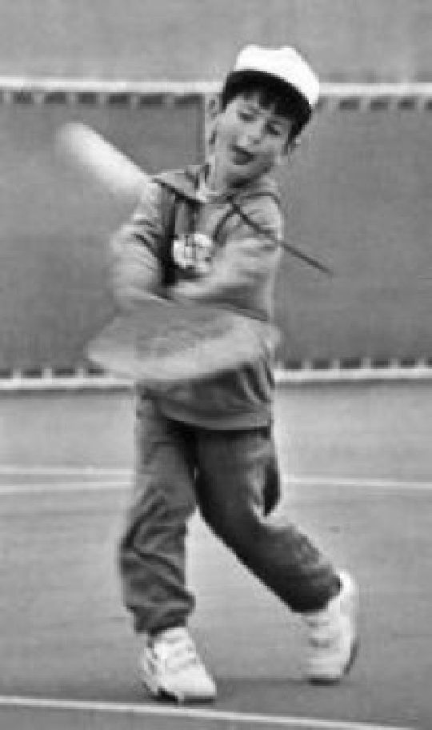
Figure 11: Young Novak Djokovic — Extraordinary court vision, anticipation, and tactical geometry developed in early competitive junior years.
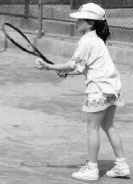
Figure 12: Young Ana Ivanovic — Perfect fundamental ready position, balanced athletic base, and focused visual tracking.
11. Kế Hoạch Huấn Luyện Chu Kỳ & Lịch Trình Thi Đấu Dài Hạn (Periodization & Tournament Planning)
KẾ HOẠCH ĐÀO TẠO VÀ GIẢI ĐẤU Trước khi huấn luyện viên có thể bắt đầu làm việc với một tay vợt, cần phải phân tích sự phát triển trong lối chơi của tay vợt đó. Để lập kế hoạch, huấn luyện viên cần thu thập các thông tin sau:
• Tuổi Để soạn giáo án, bạn cần biết độ tuổi của học sinh mà bạn đang dạy. Bạn sẽ không dạy cùng một bài học cho một đứa trẻ tám tuổi như một đứa trẻ mười bốn tuổi. Nội dung thi đấu cần phù hợp với độ tuổi và trình độ của từng tay vợt.
• Giới Tính Nội dung chủ đề hầu hết giống nhau nhưng có sự khác biệt về giới tính. Điều này có thể thay đổi khi tay vợt trở nên thành thạo hơn (xem Dạy tay vợt nâng cao). Khi dạy bé trai và bé gái, huấn luyện viên cần có cách tiếp cận và thái độ giao tiếp khác nhau. Khi dạy các cậu bé, huấn luyện viên có thể trực tiếp hơn nhiều trong việc sửa lỗi và phản hồi sau các trận đấu. Với các cô gái, bạn phải lưu ý rằng việc sửa chữa thường được thực hiện mang tính cá nhân. Nói chung, huấn luyện viên nên bắt đầu mỗi lần sửa lỗi bằng một nhận xét tích cực trước khi chuyển sang sửa lỗi. Với các cô gái, đây là một bước quan trọng trong việc truyền đạt thông tin.
• Kinh nghiệm thi đấu Trình độ kỹ năng và kinh nghiệm thi đấu của tay vợt là những yếu tố quan trọng cần xem xét trước khi tổ chức giáo án. Với tư cách là một huấn luyện viên, bạn không muốn đi quá xa và giới thiệu những tài liệu mà các tay vợt không được trang bị để thực hiện. Mặt khác, nếu đề quá dễ, học sinh sẽ chán và không cố gắng học nữa. Điều quan trọng là tìm ra cấp độ môn học và môn học phù hợp để khiến họ hứng thú và có động lực tiến bộ.
• Phân tích Điểm mạnh và Điểm yếu Cách tối ưu để đào tạo học sinh của bạn là kết hợp các môn học từ phân tích mà bạn đã thực hiện để giúp họ cải thiện kỹ năng của mình. Một huấn luyện viên giỏi sẽ dành nhiều thời gian hơn cho những điểm yếu cần cải thiện đồng thời duy trì hoặc củng cố vũ khí trong trò chơi của tay vợt. Điều quan trọng là sắp xếp tất cả những điều này trong một kế hoạch đào tạo có sự tiến triển của các môn học mới và sự lặp lại và cải thiện các môn học cũ.
• Hoạt động Tiến trình và cường độ của kế hoạch đào tạo phụ thuộc vào chủ đề và những cải tiến trong các bài học trước. Huấn luyện viên phải phân tích cường độ tập luyện và sự tiến bộ của học sinh. Cường độ đào tạo có thể được đo bằng số lượng hoặc mức độ cường độ thực hiện. Nếu cần thiết, có thể điều chỉnh kế hoạch đào tạo về cường độ và chủ đề.
• Cường độ Cường độ và chủ đề cần phải được phối hợp với các giải đấu và/hoặc cuộc thi của học sinh. Gần đến thời điểm thi đấu, cường độ bài học có thể cao hơn nhưng thời lượng sẽ ngắn hơn.
Việc đào tạo sẽ tập trung vào chiến lược và chuẩn bị tinh thần hơn là các vấn đề kỹ thuật.
• Mục tiêu của Học sinh Điều quan trọng là phải biết những mục tiêu mà học sinh của bạn đã đặt ra cho mình. Những mục tiêu này có thể là mục tiêu hiệu suất, mục tiêu xếp hạng hoặc mục tiêu kết quả. Mục tiêu hiệu suất có thể là cải thiện một số cú đánh nhất định hoặc việc thực hiện một chiến lược. Mục tiêu xếp hạng chỉ tập trung vào việc đạt được thứ hạng nhất định trong một khoảng thời gian cụ thể. Bàn thắng kết quả là kết quả trong các trận đấu hoặc giải đấu. Huấn luyện viên cần điều tra xem những mục tiêu đó là gì và thảo luận với tay vợt trước khi lập kế hoạch tập luyện và thi đấu.
Sau khi xem xét tất cả các thông tin này, có thể lập kế hoạch tập luyện và giải đấu sâu rộng. Đây có thể là kế hoạch đào tạo nửa năm hoặc hàng năm, nhưng cá nhân tôi luôn ưu tiên kế hoạch cho cả năm; hầu hết sinh viên đều được thúc đẩy bởi việc biết kế hoạch phát triển của họ cho tương lai.
Kế hoạch phát triển trở nên quan trọng hơn khi dạy tay vợt trung cấp và cao cấp.
• Mục tiêu (dài hạn và ngắn hạn) Để lập kế hoạch tập luyện, bạn phải tạo ra các mục tiêu ngắn hạn và dài hạn.
Những mục tiêu này sẽ giúp xác định các môn học bạn sẽ dạy, thời điểm đào tạo và cường độ đào tạo.
Các mục tiêu ngắn hạn phải là mục tiêu do tay vợt, phụ huynh và huấn luyện viên đặt ra để cải thiện các môn học có tầm quan trọng trước mắt và/hoặc sự dễ dàng tương đối trong học tập. Ví dụ: thay đổi điểm liên lạc và theo dõi.
Mục tiêu dài hạn phải là mục tiêu do tay vợt, phụ huynh và huấn luyện viên đặt ra nhằm cải thiện các môn học có tính chất phát triển lâu dài và/hoặc tính chất khó trong học tập. Ví dụ: học trò chơi và chiến lược giao bóng, cú bắt lưới (Volley).
• Chỉnh sửa (và cách thực hiện) Lập danh sách các chủ đề cần chỉnh sửa và lập kế hoạch về cách sửa chúng. Không phải lúc nào cũng dễ dàng xác định được điều gì cần sửa chữa. Một số vấn đề kỹ thuật có thể bị che giấu và không phải lúc nào cũng dễ dàng phát hiện bằng mắt thường. Quay một số video về học sinh của bạn và sử dụng chuyển động chậm có thể là một công cụ rất hữu ích.
Trong các khóa đào tạo huấn luyện viên mà tôi đã theo dõi và trong nhiều cuốn sách hướng dẫn chơi tennis mà tôi đã đọc, một trong những điều còn thiếu là phần “cách khắc phục”. Vì vậy, tôi đã đưa vào một chương về cách khắc phục một số vấn đề nhất định trong giảng dạy (xem các chương “Hướng dẫn kỹ thuật” và “Giải quyết vấn đề”).
• Kế hoạch định kỳ (lập kế hoạch đào tạo những gì và khi nào) Đây phải là một kế hoạch chi tiết về những gì cần đào tạo vào ngày và/hoặc tuần. Cần có một kế hoạch giúp huấn luyện viên tránh được cách tiếp cận lộn xộn và chạy ngoằn ngoèo trong quá trình phát triển của tay vợt. Có một trình tự hợp lý trong việc tập các cú đánh, rèn luyện thể lực và phát triển chiến thuật, tinh thần giúp đẩy nhanh quá trình học tập. Mục tiêu là sử dụng một kế hoạch cân bằng, kết hợp tốt các chủ đề đáp ứng nhu cầu thể chất của từng tay vợt.
Kế hoạch định kỳ Bằng cách sử dụng kế hoạch định kỳ, bạn có thể lập kế hoạch cẩn thận những chủ đề sẽ sử dụng cho tay vợt (hoặc nhóm tay vợt) trong những tuần họ tập luyện và những ngày họ tham gia các giải đấu hoặc thi đấu.
Trên đây là ví dụ về cách bạn có thể kết hợp việc luyện tập với thi đấu trong giải đấu. Điều này sẽ giúp đạt được kết quả tốt hơn trong các giải đấu cũng như tạo động lực cho học viên luyện tập hiệu quả hơn.
Lưu ý: Ngay trước khi thi đấu, cần tập trung vào việc rèn luyện chiến thuật và tinh thần. Đây không phải là thời điểm tốt để sửa chữa kỹ thuật hoặc giới thiệu các kỹ thuật mới. Bạn muốn tay vợt suy nghĩ về chiến lược của trò chơi trong khi thi đấu. Trong khi thi đấu, bạn không muốn tay vợt nghĩ về cách đánh bóng mà quan tâm nhiều hơn đến vị trí đánh bóng!
Tu tập mà không có kế hoạch cũng giống như đi một cuộc hành trình mà không có bản đồ; bạn có thể phải đi nhiều đường vòng và bị lạc trên đường đi.
Kế hoạch giải đấu Khi lập kế hoạch thi đấu hoặc giải đấu, hãy đảm bảo bao gồm những nội dung sau
• Mục tiêu thành tích Những mục tiêu này nên bao gồm các chủ đề như cải thiện cú đánh, chiến lược hoặc chiến thuật, cải thiện thể chất hoặc tính nhất quán khi thực hiện. Mục tiêu sẽ làm tăng mục đích cạnh tranh.
• Kết quả bàn thắng Đây có thể là việc cố gắng thắng một trận đấu hoặc một giải đấu nhất định.
Sau này, điều này có thể chuyển thành việc tham gia một giải đấu nhất định thông qua xếp hạng hoặc thậm chí có thể là mục tiêu xếp hạng.
• Lịch thi đấu chi tiết Lịch thi đấu phải là kế hoạch nửa năm hoặc hàng năm bao gồm tất cả các giải đấu trong suốt mùa quần vợt để bạn có thể điều chỉnh khi cần thiết.
Lập kế hoạch Việc lên lịch cho các giải đấu cần phải được cân nhắc kỹ lưỡng, có tính đến sự phát triển của học sinh. Đừng tham gia các giải đấu cho đến khi tay vợt cảm thấy thoải mái khi chơi các trận đấu tập trước. Bắt đầu với một vài giải đấu dành cho người mới bắt đầu và sau đó, nếu cần, hãy sửa các lỗi trong quá trình luyện tập. Mục tiêu phải luôn là cố gắng giành chiến thắng trong nhiều trận đấu liên tiếp. Điều này giúp tăng cường sự tự tin và mong muốn rèn luyện và làm việc chăm chỉ hơn.
Số lượng Số lượng giải đấu liên quan đến cấp độ chơi. Là một tuyển thủ tân binh, học sinh nên cố gắng thi đấu từ 10 đến 15 giải đấu mỗi năm. Một tay vợt cấp dưới nên thi đấu từ 10 đến 25 giải đấu mỗi năm. Con số này còn phụ thuộc vào việc họ chơi tốt như thế nào (số trận) và sự phát triển kỹ thuật của tay vợt. Cố gắng chơi hai hoặc ba giải đấu liên tiếp để có được nhịp độ chơi.
Cấp độ Có nhiều cấp độ giải đấu khác nhau ở mỗi nhóm tuổi, từ các giải đấu dành cho người mới bắt đầu ở các quận và khu vực cho đến các sự kiện quốc gia và quốc tế.
Một nguyên tắc nhỏ khi chơi các sự kiện là không bao giờ chuyển sang cấp độ tiếp theo cho đến khi bạn đã thành thạo hoặc đang thống trị cấp độ mà bạn đang thi đấu.
Tỷ lệ thắng-thua cần ghi nhớ là ít nhất hai thắng một thua, nhưng tỷ lệ ba trên một sẽ thích hợp hơn để giữ độ tin cậy cao. (Điều này rất quan trọng khi làm việc với đàn em) Với tay vợt trung cấp và cao cấp, có thể chơi ba cấp độ thi đấu khác nhau:
(1) giải đấu để giành chiến thắng, (2) giải đấu mà họ cạnh tranh để lọt vào ít nhất vòng tứ kết và (3) sự kiện để nâng cao trình độ kinh nghiệm.
Giải đấu Có nhiều sự kiện để lựa chọn ở mỗi quận và khu vực trên toàn quốc.
Một số loại giải đấu khác nhau như sau:
1. Sự kiện dành cho thanh thiếu niên và người lớn
2. Sự kiện cấp thiếu niên và người lớn toàn quốc
3. International Junior ETA (Hiệp hội quần vợt châu Âu) Junior ITF (Liên đoàn quần vợt quốc tế) Các sự kiện chuyên nghiệp (ITF, ATP, WTA) Khu vực và khu vực
• Sự kiện dành cho trẻ em: - Sự kiện nhóm tuổi (mười đến mười tám tuổi) (Địa phương đến được chỉ định cho các sự kiện từng phần Tham gia theo thứ hạng hoặc vị trí Ngoài ra còn có các sự kiện dành cho tân binh Bạn có thể chơi cho đến ngày sinh nhật của mình trong tháng đó)
• Sự kiện dành cho người lớn: - Sự kiện nhóm tuổi theo cấp độ chơi
- Giải quần vợt theo cấp độ thi đấu
• Sự kiện mở: - Sự kiện giải thưởng và/hoặc tiền bạc Bất kỳ ai cũng có thể tham gia Sự kiện Quốc gia:
• Sự kiện dành cho thiếu niên: - Sự kiện nhóm tuổi (mười đến mười tám tuổi) (vào theo thứ hạng hoặc vị trí)
- Giải mở rộng quốc gia là sự kiện tham gia khu vực
- Quốc gia hoặc siêu quốc gia là các giải đấu (giải vô địch mùa xuân, sân đất nện, cứng và mùa đông)
• Sự kiện dành cho người lớn: - Sự kiện nhóm tuổi theo cấp độ thi đấu Sự kiện quốc tế: Sự kiện dành cho trẻ em: - Sự kiện dành cho trẻ em ITF (tuổi từ 13 đến 18)
- Sự kiện dành cho thiếu niên ETA (mười hai, mười bốn và mười sáu tuổi) Sự kiện chuyên nghiệp: - Sự kiện ITF (tương lai và người thách đấu)
- Các sự kiện ATP và WTA Đường đua phát triển giải đấu trẻ Khi còn là một học sinh cấp dưới, điều khôn ngoan là đi từ cấp độ mà bạn có thể thắng các trận đấu lên cấp độ tiếp theo, v.v. Đối với phụ huynh, huấn luyện viên và tay vợt, đây là lộ trình phát triển bình thường sẽ như thế nào:
Tay vợt từ tám đến mười tuổi có thể bắt đầu thi đấu trong các giải đấu dành cho tân binh. Họ cần thắng một số trận ở mỗi cấp độ trước khi chuyển sang cấp độ tiếp theo.
Nếu học sinh của bạn có tính cạnh tranh cao, họ có thể chuyển từ thi đấu các giải khu vực sang giải quốc gia bằng cách đạt đủ điểm xếp hạng.
Thường có một số cách khác nhau để đủ điều kiện tham gia các sự kiện quốc gia. Hầu hết các quốc gia sử dụng một hệ thống mà thứ hạng của bạn sẽ đủ điều kiện để bạn tham gia. Một khả năng khác là đủ điều kiện tham gia một sự kiện khu vực.
Hầu hết các quốc gia sẽ tổ chức các giải đấu quốc gia quanh năm với giải vô địch quốc gia vào mùa hè và mùa đông. Tại Hoa Kỳ, có bốn sự kiện quốc gia lớn:
• Giải vô địch mùa đông Nếu học sinh của bạn tiếp tục thắng các trận đấu trong mỗi sự kiện này, đã đến lúc các em thử thi đấu ở cấp độ nhóm tuổi tiếp theo (xem biểu đồ ở trên).
Sự tự tin là yếu tố tinh thần quan trọng nhất trong việc kích thích học sinh của bạn cảm thấy thành tích và sẵn sàng tiến bộ. Để khai thác điều này, điều cần thiết là phải cho họ cơ hội thành công và không nên chơi quá sớm!
Khi tay vợt tiến bộ, họ có thể chơi kết hợp nhiều sự kiện ở các nhóm tuổi và cấp độ khác nhau.
Kế hoạch giải đấu Bằng cách tạo kế hoạch giải đấu riêng cho từng tay vợt, bạn có thể lập kế hoạch và điều phối các bài học của mình chính xác hơn nhiều theo nhu cầu của học sinh. Chọn các giải đấu mà tay vợt có thể thành công. Đảm bảo rằng họ không chơi quá nhiều hoặc quá ít sự kiện. Khi lập kế hoạch, hãy theo dõi loại sự kiện và số lượng sự kiện bạn dự định tổ chức nửa năm một lần hoặc hàng năm (xem kế hoạch giải đấu) Bằng cách này, bạn có thể lập kế hoạch về thời lượng các sự kiện thi đấu và thời điểm nghỉ ngơi. Hãy ghi nhớ mục tiêu của tay vợt và huấn luyện viên, hãy chọn các giải đấu mà tay vợt muốn tham gia theo thứ hạng hoặc bằng cách đủ điều kiện tham gia các giải đấu trong tương lai. Để lên lịch cho một kế hoạch, bạn phải làm việc lùi lại từ thời điểm đó để đảm bảo mục tiêu và đạt được mục tiêu của mình.
Các giải đấu phải là một sự kiện vui vẻ và mang tính xã hội với tinh thần cạnh tranh.
Chơi giải đấu Để chơi các giải đấu, bạn cần có thông tin về cách tham gia, nơi đến và thời gian bạn cần có mặt ở đó. Thông tin này được cung cấp miễn phí và có trên các trang web cụ thể của các giải đấu. Bạn sẽ cần những thông tin được liệt kê dưới đây để bắt đầu.
Thông tin tờ thông tin là một trang thông tin, được liệt kê trên web, với tất cả thông tin thích hợp từ giải đấu liên quan đến ngày tháng, thông tin tham gia, khách sạn hoặc chỗ ở khác có hướng dẫn đến khách sạn và địa điểm giải đấu. Bạn có thể tìm thấy tờ thông tin này trên các trang web của các tổ chức thích hợp (xem thông tin và các trang web).
Tư cách thành viên của một liên đoàn thường được yêu cầu để có số thành viên để tham gia các giải đấu. Bạn có thể tìm thấy thông tin thành viên trên trang web liên đoàn chính thức của mỗi quốc gia. Ví dụ: hầu hết các giải đấu ở Hoa Kỳ đều yêu cầu tư cách thành viên USTA.
Xếp hạng là danh sách xếp hạng tay vợt theo kết quả của họ. Nó cũng được sử dụng để có được quyền tham gia vào các sự kiện. Việc xếp hạng có thể khác nhau ở mỗi quốc gia nhưng thường là một dạng hệ thống tính điểm nào đó. Đối với mỗi vòng, bạn thắng bạn nhận được điểm. Bạn nên tự tìm hiểu về cách xếp hạng hoạt động để đưa ra lời khuyên đúng đắn cho học sinh của mình. Bạn có thể tìm thấy hướng dẫn cụ thể trên trang web của liên đoàn (xem thông tin và các trang web).
Việc tham gia các sự kiện dành cho lứa tuổi thiếu niên thường được thực hiện trực tuyến. Để tham gia các sự kiện, rất có thể bạn sẽ cần phải có tư cách thành viên liên đoàn.
Sau khi hoàn thành việc nhập, bạn sẽ nhận được xác nhận của sự kiện. Nếu bạn không nhận được biên lai này, hãy liên hệ với giám đốc giải đấu! Sau khi nhập, bạn có thể tra cứu danh sách nhập để xem ai đã nhập.
Danh sách tham gia là danh sách tay vợt đã tham gia sự kiện. Danh sách sẽ được đăng ngay khi hết ngày nhập học. Bạn có thể tìm thấy những danh sách này trên cùng một trang web với giải đấu.
Lễ bốc thăm là danh sách giải đấu của những tay vợt được ghép cặp để đấu với nhau. Một trận hòa bao gồm các tay vợt được xếp hạt giống và các tay vợt không được xếp hạt giống. Những tay vợt được xếp hạt giống sẽ nhận được một số suất nhất định trong lễ bốc thăm thông qua xếp hạng. Bạn nên làm quen với các thủ tục tiến hành rút thăm. Điều này sẽ giúp bạn hiểu rõ cách chơi của giải đấu nói chung và đảm bảo không mắc sai lầm nào.
Danh sách chấp nhận là danh sách các tay vợt đã được chấp nhận tham gia giải đấu. Danh sách này thường được tạo ra bởi thứ hạng từ tay vợt.
Điểm giới hạn là con số trong bảng xếp hạng của tay vợt cuối cùng được chấp nhận tham gia sự kiện. Biết số xếp hạng cuối cùng được chấp nhận sẽ cho bạn biết sức mạnh của sự kiện.
Huấn luyện tại các giải đấu Việc huấn luyện các tay vợt trong các giải đấu khá khác với việc dạy họ ở nhà hoặc ở câu lạc bộ. Áp lực khi thi đấu một trận đấu (dù biết đối thủ của mình hay không) với sự theo dõi của huấn luyện viên và phụ huynh có thể làm tăng thêm sự lo lắng và phấn khích của tay vợt. Khi chuẩn bị cho một tay vợt thi đấu trong giải đấu, huấn luyện viên sẽ tập trung vào các khía cạnh kỹ thuật và thể chất trước tiên. Khi giải đấu đến gần, trọng tâm sẽ chuyển từ khía cạnh kỹ thuật và thể lực sang khía cạnh chiến thuật và tinh thần. Tất cả các huấn luyện viên đều sẽ mắc phải một số sai lầm trong quá trình thực hiện, nhưng đây là một số mẹo giúp tránh một số lỗi phổ biến nhất:
Make It Fun Chơi các trận đấu và giải đấu phải luôn vui vẻ! Đây là một khái niệm rất quan trọng mà huấn luyện viên và phụ huynh cần ghi nhớ. Hầu hết trẻ nhỏ thích được ở trong một môi trường nơi chúng có thể chơi với những đứa trẻ khác. Ở độ tuổi này, mặc dù mọi người đều thích chiến thắng nhưng họ chỉ quan tâm đến việc chơi trò chơi và tận hưởng niềm vui hơn. Trong thi đấu, các tay vợt, huấn luyện viên và phụ huynh có thể bị cuốn theo cảm xúc của mình. Nhiệm vụ và trách nhiệm của huấn luyện viên là đảm bảo rằng mọi người luôn kiểm soát được cảm xúc và thái độ của mình. Trẻ em học hỏi từ những tấm gương của người lớn. Nếu bất kỳ vấn đề nào trong số này phát sinh, hãy nhắc nhở phụ huynh rằng kết quả tốt nhất sẽ đạt được khi có sự củng cố tích cực và bằng cách khen ngợi thành tích của các tay vợt.
Chuẩn bị Tay vợt cần hiểu cách chuẩn bị cho cuộc thi. Nó không bắt đầu vào ngày thi đấu mà bắt đầu từ quá trình luyện tập trước khi thi đấu.
Việc luyện tập sẽ có mục đích hơn nhiều khi có mục tiêu để phấn đấu.
Phần còn lại của quá trình chuẩn bị là tìm hiểu những gì cần mang theo cho trận đấu và có thói quen trước trận đấu. Trẻ em sẽ không quen với việc đóng gói hành lý của mình với quần áo dự phòng, bộ quần áo thể thao hoặc áo khoác, khăn tắm, thức ăn và đồ uống. Quy trình trước trận đấu bao gồm khởi động thể chất, khởi động trên sân và thảo luận về kế hoạch thi đấu. Việc dạy các tay vợt thực hiện thói quen này trước mỗi trận đấu sẽ rèn luyện tính kỷ luật giúp nâng cao hiệu suất của họ.
Huấn luyện trước trận đấu Tay vợt mới bắt đầu không cần phải quá tải thông tin. Hãy dạy chúng rằng việc tận hưởng cuộc thi cũng quan trọng như việc biết cách chơi trò chơi. Huấn luyện họ trên mức kỹ năng của họ, bằng cách nhấn mạnh vào chiến thắng hoặc kỳ vọng, sẽ dẫn đến mức độ lo lắng tăng cao. Điều này sẽ thể hiện qua hành động giải quyết các vấn đề về thái độ và thái độ của sân đấu. Kế hoạch trò chơi nên ngắn gọn và đi vào trọng tâm. Tránh sử dụng các bài phát biểu dài dòng và các tình huống khó khăn. Tập trung tay vợt vào các chiến lược đơn giản, dễ hiểu và dễ thực hiện.
Huấn luyện trên sân Huấn luyện các tay vợt trên sân, trong khi thi đấu, là một công cụ có giá trị trong việc phát triển tinh thần và chiến thuật của họ. Mục đích của việc huấn luyện trên sân là dạy cho tay vợt cách “suy nghĩ” theo cách của họ trong trận đấu. Nó không phải là cố gắng ảnh hưởng đến kết quả của trận đấu. Hãy nhớ rằng việc huấn luyện trên sân bị hạn chế trong một số trận đấu nhất định. Trong trường hợp này, hãy tránh nói chuyện với các tay vợt trong trận đấu. Các trận đấu đồng đội là lý tưởng để sử dụng cho việc huấn luyện trên sân khi chơi quần vợt theo giải đấu. Quần vợt đồng đội rất phổ biến ở châu Âu và được hầu hết mọi người coi là sự kiện đỉnh cao trong năm. Đây thực sự là một hình thức huấn luyện được chấp nhận ở đó và các huấn luyện viên đang đưa ra hướng dẫn về sự thay đổi.
Khi huấn luyện trên sân, cố gắng tránh cung cấp quá nhiều thông tin vì nó khiến tay vợt bối rối. Huấn luyện các tay vợt trong các trận đấu không được phép huấn luyện trên sân sẽ thu hút sự chú ý của họ từ trong sân ra ngoài sân. Họ thường sẽ gặp phải sự cố hoặc sự thiếu nhất quán trong chiến lược và mất tự tin. Kết quả là tay vợt sẽ liên tục tìm kiếm sự hỗ trợ từ bên ngoài sân thay vì tìm kiếm câu trả lời từ bên trong. Quần vợt đòi hỏi tay vợt phải nhanh chóng thích nghi với các tình huống trên sân. Các huấn luyện viên thiết lập mối quan hệ kiểu này với các tay vợt của họ sẽ gặp khó khăn trong việc dạy tư duy độc lập, giải quyết vấn đề và xây dựng sự tự tin cho các tay vợt.
Huấn luyện sau trận đấu Trao đổi với các tay vợt về phong độ của họ sau trận đấu là một vấn đề tế nhị.
Với tư cách là một huấn luyện viên, cần phải có chút kiên nhẫn và khả năng ngoại giao để cú đánh vượt qua (Passing shot) bãi mìn tiềm ẩn này. Điều đầu tiên cần xem xét là cảm xúc của tay vợt chứ không phải cảm xúc của chính bạn với tư cách là huấn luyện viên hay phụ huynh. Ngay sau trận đấu, hãy động viên tay vợt và sau đó cho họ thời gian để bình tĩnh lại. Hầu hết tay vợt đều xúc động sau khi hoàn thành một trận đấu và sẽ không thể xử lý thông tin được cung cấp cho họ vào lúc này. Cho họ thời gian để suy nghĩ chi tiết về trận đấu, những gì họ đã làm tốt và những điểm họ cần cải thiện. Với tư cách là huấn luyện viên hoặc phụ huynh, bạn cũng có thể xúc động sau trận đấu. Điều này có thể ảnh hưởng đến những gì bạn nói và cách truyền tải thông điệp của bạn đến tay vợt. Hãy dành thời gian của bạn và không bình luận ngay sau trận đấu.
Hướng dẫn thảo luận sau trận đấu:
1. Hãy để tay vợt nói trước về trận đấu của họ.
2. Cố gắng không ngắt lời để họ không bị phân tâm hoặc bực bội.
3. Đưa ra ý kiến đánh giá của mình.
4. Đưa ra ý kiến riêng của mình về trận đấu.
5. Hãy để họ có vài nhận xét cuối cùng.
6. Lập bản tóm tắt và danh sách những việc cần làm.
Lưu ý: Khi tay vợt tiến bộ và trở thành tay vợt có kinh nghiệm hơn, họ có thể muốn viết ra một số ghi chú. Các ghi chú có thể bao gồm như sau:
• Thông tin trận đấu: ngày, đối thủ, tỷ số, v.v.
• Điểm mạnh và điểm yếu của đối thủ
• Ghi chú về trận đấu: điều gì diễn ra tốt đẹp, điều gì chưa tốt
• Kết luận Nếu một tay vợt viết ghi chú về diễn biến của trận đấu, họ sẽ trở nên cụ thể hơn nhiều với những quan sát của mình thay vì nói những điều không cụ thể như: “Hôm nay cú thuận tay của tôi không hoạt động tốt.” Đây là nơi huấn luyện viên có thể tham gia và thực hiện huấn luyện thực sự sau trận đấu. Hãy kiên nhẫn và yêu cầu giải thích.
OceanofPDF.com HUẤN LUYỆN THỂ CHẤT Việc rèn luyện thể chất của tay vợt quần vợt rất đa dạng. Nó liên quan đến hầu hết tất cả các nhóm cơ và đòi hỏi nhiều thành phần vật chất. Sự bùng nổ năng lượng mãnh liệt trong các cuộc biểu tình được xen kẽ với những khoảng thời gian nghỉ ngơi. Tay vợt quần vợt sử dụng các thành phần vật lý sau:
• Cân bằng Sáu thành phần cần phối hợp với nhau để thực hiện tất cả các nét. Một số thành phần có tác động nhiều hơn đến hiệu suất thể chất của tay vợt so với những thành phần khác. Ví dụ: cho đến nay, sự phối hợp là thành phần lớn nhất trong quá trình phát triển của tay vợt và chiếm khoảng 60% tài sản vật chất (điều này có thể khác nhau giữa những tay vợt). Để cải thiện các khía cạnh kỹ thuật quần vợt của tay vợt bằng cách rèn luyện thể chất cụ thể, bạn cần hiểu rõ những thành phần này và tập luyện cho phù hợp. Tần suất, thời lượng và cường độ tập luyện phù hợp với độ tuổi, trình độ kinh nghiệm và khả năng thể chất của tay vợt.
Độ bền phát huy tác dụng khi trận đấu bắt đầu kéo dài hơn một giờ. Vì các trận đấu hay nhất trong ba hiệp đôi khi có thể kéo dài tới ba giờ hoặc hơn, nên những tay vợt cạnh tranh nên rèn luyện tốt thành phần này. Việc rèn luyện sức bền cho tay vợt quần vợt cần phải cụ thể với khoảng thời gian tập luyện và nghỉ ngơi. Các cuộc giao tranh trong quần vợt thường ngắn, nhưng với những tay vợt trẻ, chúng có thể kéo dài hơn nhiều.
Với thời gian nghỉ 25 giây giữa các điểm, hình thức rèn luyện sức bền tốt nhất cho người mới bắt đầu chơi quần vợt là luyện tập xen kẽ (các đơn vị huấn luyện xen kẽ với nghỉ ngơi). Ban đầu hãy bắt đầu với các bài tập ba mươi phút trước khi kéo dài thời gian.
Ví dụ bài tập 1: - Chạy nước rút ba trăm thước với thời gian nghỉ ba mươi giây (mười lần)
- Chạy nước rút 200 yard với thời gian nghỉ 30 giây (năm lần) Ví dụ bài tập 2: - Chạy tiếp sức theo nhóm theo đường thẳng (năm lần)
- Chạy tiếp sức theo nhóm đổi hướng (năm lần) Ví dụ bài tập 3: - Chạy nước rút 11 đường đôi (ba lần)
- Chạy nhện (ba lần)
- Chạy nước rút 20 yard (năm lần) Phối hợp là yếu tố thể chất quan trọng nhất trong việc thực hiện các cú đánh. Nó liên quan đến việc uốn cong và kéo dài các cơ để di chuyển cơ thể một cách trơn tru và kịp thời. Sự phối hợp đánh bóng bằng vợt đúng thời điểm được gọi là tính thời gian. Sự phối hợp và thời gian thích hợp sẽ kiểm soát các điểm tiếp xúc bóng (Contact point) và quỹ đạo chính xác. Các thành phần vật lý khác có ảnh hưởng đến cách thực hiện phối hợp. Trong những trận đấu kéo dài, bạn có thể tưởng tượng rằng sức mạnh và sức chịu đựng sẽ ảnh hưởng đến khả năng phối hợp và thi đấu của một vận động viên quần vợt. Điều này cũng xảy ra với các thành phần vật lý khác.
Lưu ý: Khi tập luyện với lực quá mạnh, khả năng phối hợp sẽ bị ảnh hưởng không tốt. Tay vợt thử nghiệm đã chứng minh rằng với khoảng 60% sức mạnh tối đa, sự phối hợp của các cú đánh sẽ giảm đi (xem hướng dẫn kỹ thuật).
Thực hành: Tạo các bài tập với các đợt đánh dài sẽ rèn luyện các kỹ năng phối hợp nhiều hơn so với việc sử dụng các đợt đánh ngắn với quá nhiều sức mạnh liên quan. Các bài tập có mô hình lặp đi lặp lại sẽ có ảnh hưởng lớn nhất đến sự phối hợp và thời gian.
Sức mạnh cần có thời gian để phát triển với những tay vợt mới bắt đầu và đàn em. Sức mạnh được xác định bởi sức mạnh uốn cong và kéo dài của các cơ trong việc tạo ra chuyển động và cú đánh. Vì quần vợt là môn thể thao lặp đi lặp lại và các trận đấu kéo dài khá lâu nên sức mạnh cũng được quyết định bởi sức bền.
Lưu ý: Khi tập luyện cho trẻ trước tuổi dậy thì không được sử dụng tạ.
Sử dụng tạ ở độ tuổi này có thể ảnh hưởng đến sự phát triển thể chất của các em. Tốt nhất nên sử dụng trọng lượng cơ thể của chính mình hoặc dây thun nhẹ (xem phần thực hành).
Luyện tập: Thay vì luyện tập sức mạnh trong phòng tập tạ, sẽ thích hợp hơn nhiều nếu rèn luyện thành phần này trong quá trình tập luyện quần vợt hoặc tập luyện thể chất dành riêng cho quần vợt trong hoặc ngoài sân đấu. Một quả bóng thuốc và một số dây thun nhẹ thường là đủ.
Tốc độ được xác định bằng tốc độ chuyển động trong một khung thời gian nhất định. Nó được tạo thành từ một số thành phần quyết định tốc độ di chuyển của tay vợt: tốc độ hành động, sự thay đổi hướng và tốc độ di chuyển. Tất cả có thể được đào tạo riêng biệt hoặc kết hợp các thành phần lại với nhau.
• Tốc độ của hành động đề cập đến tốc độ di chuyển của cánh tay và cơ thể trong giai đoạn đánh bóng (hành động nhanh của cơ thể).
• Thay đổi hướng là tốc độ của tay vợt trong việc làm chậm chuyển động, rẽ và chạy theo một hướng khác.
• Vận tốc di chuyển là tốc độ của tay vợt khi chạy từ điểm A đến điểm B.
Một số tay vợt có thể không đạt được mọi loại tốc độ, nhưng tất cả họ đều có thể được huấn luyện ở một mức độ nhất định.
Lưu ý: Đối với người mới bắt đầu và người mới bắt đầu, tốc độ chưa phải là điều quan trọng vì hầu hết các lần trao đổi bóng đều tương đối chậm.
Thực hành: Khá dễ dàng để huấn luyện tất cả các thành phần trên bằng các trò chơi đơn giản và thi đấu với các bạn cùng lứa. Một ví dụ là sử dụng các cuộc chạy nước rút và thi đấu với nhau trong các đội. Điều tương tự cũng có thể xảy ra với sự thay đổi hướng. Rèn luyện khả năng ném bóng thuốc nhẹ trong trò chơi quần vợt mini nhanh chóng tại các ô giao bóng. Bạn có thể tăng tốc độ cho cánh tay bằng cách sử dụng bóng xốp hoặc bóng tennis mini để luyện tập và chơi điểm.
Tính linh hoạt của các khớp ở mỗi tay vợt là khác nhau. Nó xác định phạm vi chuyển động của khớp và độ đàn hồi của cơ và dây chằng.
Đây là một thành phần cần được rèn luyện thường xuyên để duy trì tính trôi chảy của chuyển động. Tính linh hoạt tốt mang lại một số lợi ích cho tay vợt quần vợt.
Nó cung cấp ít ma sát hơn ở các khớp và do đó, ít nỗ lực hơn khi thực hiện chuyển động. Các cú đánh sẽ tốn ít sức lực hơn về sức bền và hiệu quả về lâu dài. Tính linh hoạt có thể rất có lợi cho tốc độ di chuyển và đánh. Phạm vi chuyển động, độ đàn hồi và ít ma sát hơn ở các khớp đều có thể góp phần tăng tốc độ.
Thực hành: Tính linh hoạt phải là một phần tiêu chuẩn của quá trình luyện tập khi khởi động với các bài tập linh hoạt động và với các động tác giãn cơ tĩnh trong thời gian hồi chiêu sau khi tập luyện Cân bằng là một phần của mọi cú đánh trong quần vợt và mang lại sự ổn định trong chuyển động. Nếu không có sự thăng bằng, sẽ rất khó phối hợp các cú đánh và động tác bằng chân để đánh bóng với bất kỳ chuyển động mượt mà nào. Sự cân bằng cần phải được duy trì trước, trong và sau cú đánh để nó có hiệu quả. Nếu bất kỳ thành phần nào trong ba thành phần này không chìm sẽ ngay lập tức có kết quả tiêu cực trong việc thực hiện cú đánh và chuyển động. Huấn luyện viên nên chú ý những dấu hiệu này trong quá trình luyện tập và thi đấu vì chúng thường chỉ ra một vấn đề cần chú ý. Đây có thể là sự cân bằng của cú đánh hoặc có thể là vấn đề sâu xa hơn về kỹ thuật, thể chất hoặc thậm chí là tinh thần.
Lưu ý: Để nâng cao kỹ thuật, trước tiên bạn phải phân tích các nét.
Điều quan trọng nhất cần chú ý là sự cân bằng trước, trong và sau chuyển động kết hợp với các điểm tiếp xúc bóng (Contact point).
Luyện tập: Thành phần này được rèn luyện tốt nhất bằng cách tập luyện nhịp điệu và cải thiện kỹ thuật động tác chân phục hồi để tăng cường sự cân bằng của các cú đánh.
Rèn luyện thể chất đã trở thành một trong những nền tảng của quần vợt hiện đại.
Justine Henin OceanofPDF.com HUẤN LUYỆN TÂM TRÍ Trò chơi tinh thần là một phần phức tạp của việc chơi quần vợt. Nó thậm chí còn trở nên nhiều hơn khi chơi trong các cuộc thi hoặc giải đấu. Một số tay vợt đã được trang bị sẵn sự dẻo dai và kiên trì này để mong muốn cạnh tranh và thành công. Nhưng với những người khác, đó có thể là sự suy sụp và là một cuộc đấu tranh để cú đánh vượt qua (Passing shot). Đối với nhiều tay vợt, đây là phần khó thành thạo nhất trong trò chơi quần vợt. Bạn có thể thấy sự khác biệt trong thái độ tinh thần khi các tay vợt trở nên cạnh tranh hơn và bắt đầu thi đấu với nhau trong các giải đấu.
Hầu hết tay vợt không cố ý rèn luyện khả năng trí óc của mình, nhưng mọi trò chơi được giới thiệu với tay vợt về bản chất đều liên quan đến khía cạnh tinh thần của nó. Nó đòi hỏi tay vợt phải thúc đẩy bản thân tìm ra câu trả lời cho mọi vấn đề họ gặp phải trong game, có thể là kỹ thuật, chiến thuật hay thể chất. Cách thức và sự mạnh mẽ theo đuổi của họ quyết định sức mạnh tinh thần của họ. Việc rèn luyện tinh thần cho những người mới bắt đầu chơi quần vợt là cách rèn luyện tốt nhất mà tay vợt không cần phải có kiến thức. Khi họ ít nhận thức hơn và nó được giới thiệu như một phần của trò chơi để chơi tốt hơn, họ sẽ chấp nhận nó như một phần của cuộc thi chiến thuật trong quần vợt. Điều này đặc biệt hiệu quả đối với các bạn trẻ!
Thói quen Khi tay vợt tiến bộ và trở nên cạnh tranh hơn, việc rèn luyện tinh thần sẽ trở thành một phần của quá trình luyện tập. Việc bắt đầu các tay vợt trẻ với những thói quen tốt có thể ảnh hưởng lâu dài đến sự thành công của một tay vợt. Việc tạo ra những thói quen tốt trong việc đối phó với việc thi đấu dưới áp lực và có phản ứng cạnh tranh thích hợp trước các tình huống phải được dạy ngay từ khi còn nhỏ. Tay vợt thường nhận ra những phản ứng tinh thần không phù hợp bằng cách sao chép chúng từ những tay vợt khác. Những phản ứng này nếu không được sửa chữa ngay thì sau này rất khó thay đổi vì chúng đã trở thành thói quen, nghi lễ của tay vợt. Việc noi gương người khác là điều thường thấy ở trẻ trước tuổi dậy thì và tuổi dậy thì vì áp lực của bạn bè khi cố gắng hòa nhập với mọi người khác.
Ví dụ: Nhiều hậu bối không bắt đầu ném vợt hoặc có giọng hát bộc phát mạnh mẽ cho đến khi họ bắt đầu thi đấu mang tính cạnh tranh và nhận thấy các hậu bối khác đang làm điều này. Điều tương tự cũng xảy ra với những cô gái càu nhàu quá mức trong khi chơi và sao chép điều này của nhau.
Nghi lễ Nhiều nghi lễ là một phần của quá trình học tập rèn luyện tinh thần. Chúng giúp duy trì sự tập trung để theo đúng kế hoạch trò chơi và thực hiện các cú đánh trong khi chơi. Nó kích thích các kiểu suy nghĩ để giữ bình tĩnh và tỉnh táo.
Khi bạn bị phân tâm hoặc kích động, nó sẽ ảnh hưởng xấu đến chất lượng trận đấu.
Với tư cách là một huấn luyện viên, việc dạy những nghi thức này cho các tay vợt của bạn để nâng cao sự tập trung của họ trên sân có thể rất có lợi. Với tư cách là một tay vợt, bạn nên tìm hiểu những nghi thức này và tìm ra những nghi thức nào phù hợp với mình.
Lưu ý: Khi một tay vợt liên tục tìm kiếm sự trấn an từ huấn luyện viên hoặc phụ huynh, điều đó sẽ có tác động tiêu cực đến việc duy trì các nghi thức. Điều tương tự cũng xảy ra đối với quá nhiều sự chú ý hoặc huấn luyện từ bên ngoài.
Nghi thức duy trì sự tập trung bên trong và duy trì những suy nghĩ về chiến lược của trận đấu thay vì những yếu tố gây xao lãng bên ngoài sân đấu.
Sức mạnh tinh thần là một trong những yếu tố chi phối nhất trong việc giành chiến thắng trong các trận đấu và là khía cạnh ít được rèn luyện nhất trong trò chơi.
Một số nghi thức dành cho người mới bắt đầu:
• Sau khi xác định điểm, cầm vợt ở tay không thuận.
• Khi mất bóng, hãy đi bộ trở lại hàng rào ngay lập tức.
• Dành thời gian (25 giây) giữa các điểm.
• Lau sạch giữa các điểm.
• Trong khi chuẩn bị, hãy nhìn vào dây vợt (duy trì trọng tâm).
• Hãy suy nghĩ chiến lược để chuẩn bị cho điểm tiếp theo.
• Đừng vội vàng chuẩn bị giao bóng hoặc trả giao bóng.
• Giữ thái độ và phong thái tốt trong suốt trận đấu.
Quá trình rèn luyện tinh thần cho thiếu niên (duy trì thái độ và nghi thức)
1. Chơi càng nhiều trận càng tốt với các tay vợt trẻ. Họ thích cạnh tranh với các bạn cùng lứa và sẽ cố gắng hơn trong một trò chơi. Sử dụng các trò chơi có và không có điểm để xem tay vợt có thể hiện sự khác biệt về thái độ tinh thần hay không (đây sẽ là dấu hiệu tốt về khả năng tinh thần của tay vợt).
2. Chơi các trận đấu thực tế với tính điểm bình thường để xem tay vợt phản ứng thế nào trước áp lực của trận đấu và sự cạnh tranh với các đồng nghiệp của họ.
3. Luyện tập chơi với chủ đề chiến thuật hoặc tinh thần. Bạn có thể làm điều này cho một hoặc cả hai tay vợt. Điều này đào tạo các khía cạnh tập trung và giải quyết vấn đề.
4. Luyện tập chơi dưới áp lực bằng cách rút ngắn trận đấu. Bắt đầu từ 30- hết, cường độ sẽ tăng lên đáng kể!
5. Tập chơi điểm khi xuống điểm và lên điểm. Bằng cách bắt đầu tỷ số trận đấu với tỷ số 0-15, 15-0, 15-30 và 30-15, tay vợt có thể rèn luyện sự tập trung chơi từng điểm một thay vì tập trung quá nhiều vào tỷ số.
6. Chơi các trận đấu bắt đầu với tỷ số 3-tất cả trong trò chơi. Nó sẽ rút ngắn thời gian tập và tăng cường độ cũng như áp lực. Tay vợt sẽ cảm thấy cần phải chơi có tính chiến thuật và thể lực hơn, đồng thời tự động nâng cao khía cạnh tinh thần.
7. Thi đấu tính điểm bằng tiebreak. Nó không chỉ dạy học sinh chơi những trò này tốt hơn mà còn rèn luyện khả năng tinh thần của các em.
Giáo dục và rèn luyện tinh thần Quần vợt không phải là một môn thể thao dễ chơi nếu xét đến tất cả các cú đánh khác nhau, khả năng thực hiện, chiến lược và các khía cạnh tinh thần liên quan. Để chơi tennis giỏi cần có sự tập trung cao độ và kỷ luật trong việc thực hiện. Nó cũng đòi hỏi sức chịu đựng về tinh thần và thể chất tuyệt vời để chịu đựng trong các trận đấu và giải đấu kéo dài. Để luôn hoạt động tốt, bạn phải rèn luyện trí não cũng như cơ thể. Giáo dục là một công cụ tuyệt vời để phát triển các kỹ năng tinh thần cần thiết cho trò chơi này. Và sẽ không bao giờ đau lòng khi trở thành một tay chơi quần vợt thông minh!
OceanofPDF.com DINH DƯỠNG Dinh dưỡng là yếu tố quan trọng trong sự phát triển của tay vợt. Dinh dưỡng không hợp lý có thể ảnh hưởng lớn tới khả năng thi đấu của tay vợt. Trẻ nhỏ hơn và những người mới bắt đầu chơi quần vợt có nhu cầu dinh dưỡng khác với những tay vợt lớn tuổi hơn hoặc những người đang thi đấu. Một chế độ ăn uống cân bằng tốt là cách tốt nhất để đảm bảo rằng không có bất kỳ sự thiếu hụt nào, dẫn đến thiếu năng suất. Xem bên dưới một ví dụ về việc tiêu thụ các nhóm dinh dưỡng khác nhau:
• Vitamin và khoáng chất Carbohydrate về cơ bản là đường. Chúng được chia nhỏ khi tiêu thụ thành các đơn vị đường đơn, glucose hoặc fructose, để sử dụng làm nhiên liệu cho hoạt động của tế bào. Nguồn carbohydrate tốt là bánh mì, ngũ cốc, gạo, mì ống và một số loại trái cây và rau quả. Lượng carbohydrate nạp vào không cần phải điều chỉnh khi thỉnh thoảng chơi đùa. Đối với các vận động viên thi đấu, điều quan trọng hơn là phải ăn đồ ăn nhẹ có chứa carbs (đọc là carbohydrate) thường xuyên trong ngày, đặc biệt nếu họ chơi nhiều hơn một trận mỗi ngày. Với tư cách là huấn luyện viên hoặc phụ huynh, bạn cũng cần lưu ý rằng các tay vợt thường không cảm thấy đói sau khi thi đấu. Điều này có thể gây ra vấn đề với nhiều trận đấu trong một ngày và lượng carbohydrate cần thiết giữa các trận đấu.
Chất béo cần thiết trong dinh dưỡng để cung cấp các chức năng sinh học cần thiết trong cơ thể cũng như dự trữ năng lượng. Các khuyến nghị hiện nay về lượng chất béo tiêu thụ là 20-30% lượng calo tiêu thụ hàng ngày. Mặc dù chất béo rất quan trọng đối với tay vợt quần vợt, nhưng bạn nên cố gắng tránh tiêu thụ nhiều chất béo ngay trước hoặc trong khi chơi và duy trì lượng chất béo bão hòa (bơ, dầu dừa, mỡ lợn, v.v.) dưới 10% lượng tiêu thụ hàng ngày.
Protein rất quan trọng cho việc phục hồi và sửa chữa cơ bắp và cơ thể sau khi tập luyện. Điều này sẽ tăng tầm quan trọng sau khi giới thiệu nhiều bài tập tạ hơn. Lượng protein tiêu thụ hàng ngày nên chiếm 10-15% tổng lượng tiêu thụ hàng ngày. Nguồn protein tốt là thịt, cá, trứng, đậu, sữa, v.v. Với chế độ ăn kiêng hiện nay ở thế giới phương Tây, hầu hết chúng ta đều tiêu thụ ít nhất lượng đó mỗi ngày. Đã có sự gia tăng lượng protein được ghi nhận ở các vận động viên khi sử dụng thanh protein, đồ uống chứa protein, v.v. Điều này là không cần thiết đối với những tay vợt quần vợt trẻ tuổi và nó có thể gây bất lợi cho thành tích của họ. Việc tăng lượng protein ăn vào có tác dụng khử nước có thể dẫn đến táo bón.
Uống một vài ly sữa trong ngày sẽ cung cấp nhiều protein cho cơ thể trẻ và cũng có giá trị như hầu hết các loại thực phẩm bổ sung protein mà bạn có thể tìm thấy hiện nay.
Nước và chất điện giải cần được thay thế trong quá trình thi đấu. Trong điều kiện thời tiết nắng nóng, tay vợt có thể mất nhiều nước và chất điện giải do đổ mồ hôi. Trong những điều kiện này, một người trưởng thành có thể mất từ 1 lít đến 3,5 lít mỗi giờ trong điều kiện khắc nghiệt. Điều kiện gió cũng thường có thể dẫn đến mất chất lỏng quá mức. Trong những điều kiện này, mồ hôi bốc hơi liên tục nhưng không đáng kể trên da. Vì các tay vợt không cảm thấy nóng nên họ không liên hệ điều này với cơn khát và nhu cầu bổ sung lượng chất lỏng đã mất. Đối với những tay vợt trẻ tuổi, tổn thất có thể ít hơn, nhưng họ không thể chịu được nhiều tổn thất về chất lỏng do trọng lượng và kích thước của họ.
Chất điện giải bị mất do đổ mồ hôi chủ yếu là muối và clorua.
Nếu không thay thế nước và chất điện giải, sự cân bằng chất lỏng trong cơ thể sẽ bị ảnh hưởng. Sự cân bằng chất lỏng này là cần thiết cho sự co cơ thích hợp và truyền xung thần kinh. Hiệu quả tuần hoàn cũng sẽ bị ảnh hưởng do máu đặc lại. Điều này sẽ khiến cơ tim phải bơm mạnh hơn nhiều để cung cấp máu cho cơ thể, dẫn đến mệt mỏi. Chuột rút rất phổ biến với các tay vợt trẻ do thi đấu kéo dài và mất nước, chất điện giải khi thi đấu. Dưỡng ẩm vào buổi tối trước khi thi đấu là rất quan trọng và thường bị bỏ qua hoặc bỏ qua. Trẻ em sẽ không nghĩ đến yếu tố này, và huấn luyện viên cũng như phụ huynh có thể đóng một vai trò quan trọng ở đây trong việc giáo dục các tay vợt thói quen này. Nước thường là tốt nhất để sử dụng để dưỡng ẩm. Đồ uống chứa đường sẽ khiến họ tỉnh táo, còn đồ uống có ga sẽ có tác dụng khử nước. Hiện nay trên thị trường có rất nhiều đồ uống thay thế chất điện giải để bổ sung nước trong các trận đấu (Gatorade, PowerAde và nhiều loại khác). Nhiều loại đồ uống này có hàm lượng đường tương đối cao và có thể pha loãng hoặc uống kết hợp với nước để pha loãng hàm lượng trong khi chơi. Điều này sẽ duy trì lượng đường trong máu cân bằng và ngăn ngừa lượng đường tăng cao và lượng đường xuống thấp không thể tránh khỏi sau đó.
Vitamin và khoáng chất là những chất hữu cơ và vô cơ cần thiết để cơ thể hoạt động bình thường. Vitamin được biết đến phổ biến hơn, nhưng các khoáng chất như sắt, canxi hoặc kẽm cũng quan trọng không kém để cơ thể hoạt động tối ưu. Có những lượng vitamin và khoáng chất được khuyến nghị hàng ngày nên được tiêu thụ mỗi ngày. Ăn một chế độ ăn uống cân bằng, lành mạnh (xem kim tự tháp nhóm thực phẩm) sẽ cung cấp nhiều vitamin và khoáng chất cần thiết mà cơ thể cần. Việc giáo dục trẻ ăn nhiều rau, trái cây và uống nhiều sữa luôn là một thách thức trong chế độ ăn uống hiện đại nhưng chắc chắn sẽ đóng vai trò quan trọng trong việc xây dựng cơ thể và trí tuệ của trẻ. Khi chơi nhiều trận đấu và giải đấu, việc bổ sung cho cơ thể vitamin và khoáng chất có thể có lợi để đảm bảo cơ thể không bị thiếu bất kỳ chất nào trong số này. Dùng quá nhiều chất bổ sung khác nhau với liều lượng cao là không cần thiết và hầu như chúng đều bị đào thải ra khỏi cơ thể. Uống một loại vitamin tổng hợp tốt với nhiều loại vitamin và khoáng chất mỗi ngày sẽ ngăn ngừa nhiều vấn đề về suy kiệt và hỗ trợ sức khỏe tốt nói chung.
Khuyến nghị về Đồ ăn và Đồ uống trong Trận đấu. Ví dụ điển hình về thực phẩm nên ăn trong khi thi đấu là chuối và thanh năng lượng. Tôi không khuyên bạn nên ăn các loại trái cây khác như táo hoặc cam trong trận đấu vì chúng có thể gây khó chịu cho dạ dày. Tuy nhiên, chuối được hầu hết tay vợt coi là nguồn năng lượng tốt khi thi đấu.
Thanh năng lượng có nhiều dạng khác nhau. Cố gắng tìm loại có nhiều carbohydrate, ít đường và protein phù hợp với bạn trong khi chơi. Uống nhiều nước cùng với một số chất điện giải (xem ở trên).
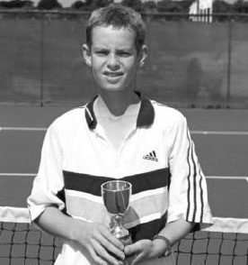
Figure 13: Andy Murray — A benchmark of world-class conditioning and rigorous periodization scheduling throughout the competitive tour calendar.
12. Cẩm Nang Dành Cho Phụ Huynh, Giải Quyết Xung Đột & Bài Tập Thực Hành (Tips for Parent Coaches, Problem Solving & Drills)
LỜI KHUYÊN DÀNH CHO PHỤ HUYNH Huấn luyện viên Việc huấn luyện con cái của chính bạn không phải là một nhiệm vụ dễ dàng. Trẻ em phản ứng khác với cha mẹ hơn là với huấn luyện viên không liên quan đến chúng.
Đôi khi nó hoạt động và đôi khi không. Sự ăn ý và giao tiếp giữa cha mẹ và con cái rất quan trọng nhưng không phải là yếu tố duy nhất giúp điều này thành công. Nếu bạn thực sự quan tâm đến con mình, bạn sẽ tự hỏi liệu bạn có phải là người phù hợp nhất để trở thành huấn luyện viên hay không. Nó sẽ giúp ích cho sự phát triển của con bạn hay sẽ cản trở chúng? Bạn có đủ kinh nghiệm để giúp họ với tư cách là huấn luyện viên không? Việc trở thành huấn luyện viên của con tôi sẽ ảnh hưởng như thế nào đến mối quan hệ của chúng tôi? Nhưng câu hỏi quan trọng nhất là, Con tôi có muốn tôi làm huấn luyện viên của chúng hay đó là mong muốn của tôi, với tư cách là cha mẹ, trở thành huấn luyện viên của chúng? Thông thường, con bạn chỉ muốn bạn là cha hoặc mẹ của chúng và hỗ trợ chúng trong môn thể thao của chúng. Tôi đã thấy một số mối quan hệ huấn luyện giữa cha mẹ và con cái hoạt động tốt, nhưng tôi khuyên bạn nên xem xét tất cả các khía cạnh:
1. Bạn có phải là huấn luyện viên giàu kinh nghiệm?
Nếu huấn luyện quần vợt là nghề của bạn, thì đó có thể là một tình huống hoàn toàn khác với việc huấn luyện con bạn mà không có kinh nghiệm hoặc đào tạo trước đó. Là cha mẹ, bạn muốn điều tốt nhất cho con mình. Nếu con trai hay con gái của bạn muốn trở thành bác sĩ, bạn sẽ không dạy con mình về y học mà sẽ khuyên chúng vào đại học để được dạy bởi các chuyên gia được đào tạo.
Nghề nghiệp khác cũng vậy. Nếu huấn luyện là nghề của bạn, bạn có kiến thức và kinh nghiệm để hướng dẫn con mình và dạy chúng những động tác thích hợp. Nhưng cũng giống như các giáo viên từ tiểu học đến đại học, việc huấn luyện quần vợt có nhiều cấp độ. Khi tìm kiếm phương pháp huấn luyện tốt nhất cho con mình, bạn cũng cần suy nghĩ như vậy.
2. Bạn có phải là người huấn luyện tốt nhất cho con mình?
Biết được điểm mạnh và điểm yếu của bản thân là điều quan trọng đối với bất kỳ ai.
Là cha mẹ, bạn cần tự hỏi: “Tôi có phải là huấn luyện viên tốt nhất cho con mình không?” Bạn cần xem xét mối quan hệ giữa bạn với con trai hoặc con gái mình và cách chúng phản ứng trước sự hướng dẫn của bạn. Họ có tiếp thu tốt sự hướng dẫn hay họ trở nên kích động? Nếu bạn là một tay vợt có kinh nghiệm, họ có thể tôn trọng những gì bạn nói, nhưng điều đó không có nghĩa là bạn là huấn luyện viên giỏi hoặc huấn luyện viên phù hợp cho họ. Bạn có cảm xúc như thế nào với tư cách là một huấn luyện viên? Cảm xúc có thể dâng cao khi niềm đam mê và kỳ vọng của bạn trong quá trình luyện tập và thi đấu cao hơn con bạn. Tôi có kinh nghiệm làm huấn luyện viên như thế nào? Đó có phải là trình độ chuyên môn mà họ cần cho mức độ cạnh tranh của mình không? Hãy đặt lợi ích của con lên trên lợi ích của bạn để đưa ra quyết định đúng đắn!
3. Con tôi có muốn tôi làm huấn luyện viên cho chúng không?
Huấn luyện con bạn phải là quyết định chung giữa bạn và con bạn. Điều đặc biệt quan trọng là họ phải tham gia vào quyết định lựa chọn huấn luyện viên của mình khi họ già đi và có nhiều kinh nghiệm hơn. Dù bạn là huấn luyện viên chuyên nghiệp hay tay vợt giỏi thì đó vẫn là trận đấu của họ chứ không phải của bạn, điều cần được xem xét. Đừng ngại hỏi họ muốn gì và thúc đẩy họ chịu trách nhiệm về quyết định này.
Huấn luyện một tay vợt yêu cầu huấn luyện viên phải tách mình ra khỏi kết quả của học sinh trong luyện tập và thi đấu về mặt cảm xúc.
Huấn luyện một tay vợt đòi hỏi huấn luyện viên phải biết kinh nghiệm huấn luyện của họ và những hạn chế của bản thân họ.
Huấn luyện con bạn Tôi đã quan sát thấy nhiều tình huống cha mẹ huấn luyện con mình. Tôi muốn cho bạn một số ví dụ về những khó khăn phát sinh:
Khi luyện tập với những tay vợt khác, thật khó để không ưu ái con mình bằng cách quan tâm và hướng dẫn chúng nhiều hơn. Nếu bạn dành quá nhiều sự chú ý cho những tay vợt khác, con bạn sẽ cảm thấy khó chịu. Nếu bạn dành quá ít sự quan tâm, con bạn sẽ cảm thấy bạn đang bỏ mặc chúng. Nó trở thành một sự cân bằng rất mong manh và có thể dễ dàng bị hiểu lầm.
Khi thi đấu, cha mẹ gần như không thể không ưu ái con mình về thành tích của chúng. Việc giữ bình tĩnh trong suốt trận đấu và kiểm soát thái độ của bạn trở nên khó khăn. Cảm xúc của bạn thường sẽ phản bội bạn và con bạn cũng sẽ đáp lại bằng cách trở nên xúc động hơn.
Dạy các nghi thức và tinh thần thể thao trên sân là nhiệm vụ của huấn luyện viên.
Một người không liên quan đến tay vợt có thể làm điều này một cách khách quan và vô cảm. Một huấn luyện viên giỏi sẽ đảm bảo tay vợt có thái độ đúng đắn để tránh những hành vi rắc rối khi họ già đi. Cha mẹ cần hỗ trợ huấn luyện viên trong việc dạy trẻ cách cư xử tốt trong và ngoài sân đấu. Để thành công với tư cách là một huấn luyện viên, bạn không bao giờ có thể khen thưởng chiến thắng ngoài thái độ và hành vi. Với tư cách là cha mẹ-huấn luyện viên, việc duy trì mục tiêu có thể trở thành một thử thách khó khăn. Và trong một số trường hợp, cha mẹ không xử lý vấn đề này đủ nghiêm khắc và đủ sớm để kiểm soát hoàn toàn vấn đề.
Lưu ý: Đã có một số ví dụ cổ điển từ những tay vợt hàng đầu mà bạn có thể biết về những vấn đề này khi còn là học sinh cấp dưới. Cả Bjorn Borg và Roger Federer đều có tính khí nóng nảy và thái độ không tốt trên sân khi còn là đàn em. Cha mẹ đã yêu cầu họ ngừng chơi quần vợt một thời gian. Đối với tất cả những người theo dõi quần vợt chặt chẽ, kết quả đã rõ ràng. Họ đã trở thành những tấm gương về lễ độ và tinh thần thể thao! Đây là những ví dụ mà cha mẹ có vai trò và ảnh hưởng tích cực đến con họ với tư cách là một tay vợt.
Khi thảo luận về các trận đấu sau đó, điều quan trọng là phải trao đổi thông tin rõ ràng và ngắn gọn với tay vợt. Mục tiêu là sử dụng thông tin từ trận đấu để xác nhận những điều đã diễn ra tốt đẹp và thảo luận cách cải thiện những điều chưa diễn ra tốt đẹp. Với tư cách là cha mẹ, việc có được sự trao đổi giống như một huấn luyện viên có kinh nghiệm có thể là một thủ tục khó khăn. Cảm xúc, dù tốt hay xấu, đều cản trở tầm nhìn rõ ràng về những cải tiến. Quá nhiều tiếng nói làm mờ đi thông tin họ cần nghe.
Ngay cả khi có những ý định tốt nhất và có mọi người cùng quan điểm, việc tay vợt luôn tập trung vào nhiệm vụ trước mắt vẫn là một nhiệm vụ khó khăn. Vì vậy, chìa khóa để phát triển tốt và tận hưởng trò chơi là phải có một tiếng nói chung.
Có thể là phụ huynh hoặc huấn luyện viên, nhưng tốt nhất không phải cả hai!
Niềm đam mê thể thao phát triển theo thời gian. Đó là một cảm giác phát triển từ bên trong. Nó trở thành điều bạn luôn mong muốn được thực hiện, có thể là luyện tập hoặc thi đấu. Có niềm tự hào về nỗ lực và thành quả đạt được. Tôi đã thấy niềm đam mê biến mất trong một tay vợt khi cha mẹ sống nhờ thành tích của con trai hoặc con gái họ. Họ bắt đầu đưa ra tất cả các quyết định mà tay vợt cần đưa ra cho chính mình.
Quá phấn khích về thành tích của con bạn và đưa ra gợi ý về cách chơi hoặc suy nghĩ sẽ khiến tay vợt bối rối. Cha mẹ cần phải là lực lượng nền tảng trong mối quan hệ này. Họ cần khuyến khích con mình mà không tôn vinh mọi việc họ làm. Hãy cho con bạn không gian và thời gian để tận hưởng thành quả của chính mình. Bằng cách biến nó thành trò chơi của họ chứ không phải của bạn, bạn sẽ nâng cao niềm đam mê của họ đối với trò chơi và sự tự tin của họ vào bản thân.
Thi đấu theo giải đấu và quần vợt đồng đội được cho là một trải nghiệm thú vị. Với những đứa trẻ cạnh tranh với nhau, hiếm khi có vấn đề gì xảy ra. Vấn đề nảy sinh với những gì họ nghe thấy xung quanh mình. Những tuyên bố về việc họ có thể đánh bại ai hoặc tay vợt này làm điều này hay điều kia như thế nào hoặc người đó gian lận không giúp ích gì cho tinh thần thi đấu. Cha mẹ cần kiểm soát cảm xúc của mình bằng cách đi theo “đường cao tốc” và không đam mê bất kỳ hình thức buôn chuyện hay suy đoán nào. Trẻ em cần được trải nghiệm trò chơi tennis bằng chính đôi mắt và đôi tai của mình.
1. Nếu bạn không phải là huấn luyện viên có kinh nghiệm, hãy để con bạn được huấn luyện bởi một người có chuyên môn. Con bạn sẽ thích bạn hơn với tư cách là cha mẹ!
2. Hãy cho trẻ em niềm vui được tự mình trải nghiệm môn thể thao này và để chúng phát huy hết tiềm năng của mình.
3. Cố gắng không can thiệp bằng cách đưa ra lời khuyên không được yêu cầu. Mặc dù đó có thể là những ý định tốt nhất nhưng nó có thể không phải là lời khuyên tốt nhất cho họ. Sự khuyến khích thường là tất cả những gì họ mong muốn từ cha mẹ.
4. Hãy để con bạn tự quyết định về các giải đấu, huấn luyện viên, tập luyện, v.v. Điều này sẽ tạo dựng cho chúng sự tự tin khi đảm trách trò chơi của mình.
5. Cho họ thời gian và không gian để xây dựng mối quan hệ với đồng nghiệp. Những mối quan hệ này là lý do quan trọng khiến họ chơi thể thao.
6. Cố gắng đừng nói quá nhiều về trận đấu của họ trừ khi họ tự hỏi bạn về điều đó.
7. Hãy để nó trở thành môn thể thao mà họ chơi. Niềm tự hào là điều tự nhiên, nhưng hãy để thành tích của họ là của họ chứ không phải của bạn.
8. Không khác gì những việc khác trong cuộc sống, nếu lúc nào đó bạn có nghi ngờ về việc huấn luyện con mình thì có lẽ bạn không nên làm!
Cha mẹ là những nhà giáo dục trong cuộc sống và phải thể hiện bằng tấm gương.
Martina Hingis OceanofPDF.com GIẢI QUYẾT VẤN ĐỀ Có thể phát hiện lỗi bằng cách phân tích các vị trí chính của các nét (xem các chương về các vị trí chính). Bằng cách phân tích các vị trí chính một cách riêng biệt, bằng mắt thường hoặc với sự trợ giúp từ video, có thể đưa ra một số kết luận về chất lượng của nét vẽ. Đầu tiên hãy nhìn vào các vị trí chính của các điểm tiếp xúc bóng (Contact point). (Không thể phát hiện lỗi tốt nếu không biết điểm tiếp xúc bóng (Contact point) thông thường của tay vợt.) Nếu điểm tiếp xúc bóng (Contact point) này không ổn định, hãy khắc phục sự cố này trước khi xem xét bất kỳ điều gì khác. Có khả năng có một số lỗi kỹ thuật cần phát hiện, vì vậy ngay cả khi bạn tìm thấy một lỗi, hãy nhớ tiếp tục phân tích tất cả các vị trí để tìm các lỗi khác có thể xảy ra. Xin lưu ý rằng một lỗi có thể dẫn đến nhiều lỗi khác trong quá trình thực hiện kỹ thuật.
Cú thuận tay Cú đánh đặc biệt này nói chung là cú đánh được hầu hết tay vợt lựa chọn. Theo thời gian, nó có khả năng trở thành vũ khí thống trị các cuộc biểu tình, đặc biệt là với những tay vợt hàng đầu. Với suy nghĩ này, điều cần thiết là phải phát triển các nguyên tắc cơ bản tốt về cú thuận tay. Hướng dẫn các tay vợt cú đánh vượt qua (Passing shot) giai đoạn phát triển này để tránh một số vấn đề có thể xảy ra là nhiệm vụ quan trọng đối với huấn luyện viên.
Các lỗi thường gặp của cú thuận tay
• Điểm tiếp xúc Điểm tác động của cú đánh thuận tay là một vị trí quan trọng trong việc tạo ra cú đánh. Bằng cách nhìn vào điểm tiếp xúc bóng (Contact point) trước tiên, nó sẽ cho bạn một dấu hiệu rất tốt liệu tất cả các thành phần của cú đánh có được phối hợp để tạo ra tác động nhất quán với bóng hay không. Bạn sẽ có thể biết liệu bàn chân có thẳng hàng hay không, hông và vai có ở đúng vị trí hay không, cánh tay và vợt có ở đúng vị trí khi tiếp xúc hay không (xem hình tay vợt, nhìn từ trên xuống).
• Chuyển động và vị trí của bàn chân Việc căn thời gian thích hợp cho bước tách thăng bằng (Split-step) bóng và di chuyển bàn chân phía sau bóng một cách kịp thời sẽ làm tăng chất lượng và tính nhất quán của cú đánh. Tư thế hơi mở của bàn chân giúp xoay người về phía trước, về phía bóng. Thời gian của bước tách thăng bằng (Split-step) bóng được đồng bộ hóa với thời điểm đối phương đánh bóng. Việc chuẩn bị và định vị cơ thể là điều cần thiết để có được điểm tiếp xúc bóng (Contact point) thích hợp, sự cân bằng và nhất quán với cú thuận tay.
• Hành động của cánh tay và vai Hông và vai xoay phối hợp với cánh tay. Cánh tay cân bằng được duỗi ra về cùng một phía để duy trì sự cân bằng và bắt đầu cú đánh. Với việc đẩy và thả chân, chuyển động xoay về phía trước được thiết lập và cánh tay giữ thăng bằng chuyển động về phía trước và xung quanh để cuối cùng uốn cong và tăng tốc độ xoay của vai và cánh tay. Vai vuông góc với vợt khi va chạm để tạo ra lực truyền tối đa từ chuyển động quay và chuyển trọng lượng.
• Follow Through Phần này của cú đánh, ngay sau khi tiếp xúc với bóng, có hai chức năng. Đầu tiên là kiểm soát gia tốc và hướng của quả bóng. Phần lớn sai lầm của máng theo nằm ở sự giảm tốc của đầu vợt sau khi va chạm với bóng. Bằng cách làm chậm đầu vợt xuống, khối lượng (tốc độ × trọng lượng) của vợt sẽ ít hơn. Kết quả sẽ kém ổn định và khả năng kiểm soát của đầu vợt trước tốc độ và trọng lượng của bóng. Quỹ đạo của bóng sẽ bị ảnh hưởng chỉ với một cú đánh lệch tâm nhẹ. Chức năng thứ hai là về đích và giảm tốc ở cuối hành trình mà không dừng đột ngột. Điều này duy trì khả năng kiểm soát và ổn định của vợt cũng như sự cân bằng của cơ thể thông qua tác động với bóng. Một cú kết thúc mượt mà sẽ mang lại kết quả tích cực về tính nhất quán và khả năng thực hiện.
• Tay vợt có sự chuẩn bị muộn trước khi đánh bóng.
• Bóng đi theo hướng và quỹ đạo khác với dự định.
• Bóng được đánh ở bên cạnh cơ thể thay vì ở phía trước.
• Bóng bị đánh quá cao hoặc quá xa cơ thể.
• Cánh tay cân bằng vẫn ở cùng phía với cánh tay đánh bóng khi tiếp xúc.
• Tay đánh bị cong khi tiếp xúc.
• Vai không vuông góc với vợt khi tiếp xúc.
• Đầu gối không quay về phía trước theo hướng đánh.
• Cánh tay và vai không quay về phía trước và vuông góc với hướng.
• Thế đứng của hai chân vẫn khép kín hoặc bắt chéo sau khi dứt điểm.
• Tay vợt mất thăng bằng trước, trong hoặc sau khi đánh.
• Tay vợt có bước đi không ổn định và thất thường.
Chỉnh sửa Thực hiện chỉnh sửa nét vẽ không chỉ là thực hiện những thay đổi về kỹ thuật. Nguyên nhân có thể nằm ở khía cạnh thể chất, chiến thuật hoặc tinh thần dẫn đến sự thay đổi về mặt kỹ thuật. Ví dụ: Một tay vợt cố gắng đánh xuống vạch và do dự một chút và bóng bay vào lưới. Dưới đây là một số ví dụ về những sai lầm có thể gây ra điều này.
1. Chọn sai cú đánh trúng vạch (chiến thuật)
2. Không tăng tốc xuyên qua bóng khi va chạm và theo bóng (vật lý)
3. Chuẩn bị chân và vợt quá muộn và đánh bóng quá muộn (kỹ thuật)
4. Do dự dẫn đến lo lắng khi đánh bóng ít theo kịp (tinh thần)
1. Trước tiên hãy thử phương pháp toàn bộ nét trong việc sửa nét. Thay vì chia nhỏ nét thành từng phần, có thể hữu ích nếu bạn thử toàn bộ trước.
Thực hành chuyển động hoàn chỉnh sẽ hỗ trợ nhịp điệu, thời gian và tính trôi chảy của cú đánh. Với cách tiếp cận toàn diện này, bạn có thể hướng dẫn học sinh tập trung vào phần tiếp theo. Điều này thường sẽ khắc phục được nhiều sai sót về thời điểm tiếp xúc bóng (Contact point), khả năng tăng tốc của bóng cũng như độ ổn định và khả năng kiểm soát của đầu vợt.
2. Điểm liên hệ là khía cạnh đầu tiên cần xem xét lỗi. Đối với những học sinh thường đánh bóng muộn khi va chạm, tôi sử dụng cách sửa: “Vươn về phía trước nhiều hơn để tiếp xúc”. Các cách diễn đạt khác có thể sử dụng là “Giữ bóng trước chân bạn”, “Đánh bóng sớm hơn” hoặc “Xoay vai về phía trước nhiều hơn”. Đó là điểm bắt đầu của cú vung vợt về phía trước (thời điểm), là chìa khóa để tạo ra sự tiếp xúc ở phía trước cơ thể ở độ cao và khoảng cách chính xác với cơ thể.
3. Sự chuẩn bị (chuyển động) và vị trí (tư thế) của bàn chân là những yếu tố quan trọng để tiếp xúc tốt với bóng. Ví dụ, nếu bàn chân ở tư thế khép chéo, gần như không thể tiếp xúc tốt ở phía trước cơ thể. Vị trí này của bàn chân cản trở việc xoay vai sau về phía trước để vuông góc với bóng. Cách khắc phục vấn đề này là đảm bảo đặt chân sau lên trước và căn chỉnh chân trước theo hướng đánh. Việc dạy các tay vợt của bạn sử dụng kiểu động tác bằng chân này ngay từ đầu sẽ nâng cao động tác bằng chân nói chung và vị trí của cơ thể với tư thế thích hợp.
Khi tay vợt tiến hóa, họ cũng có thể học cách sử dụng tư thế mở.
4. Vị trí của vai là một dấu hiệu tốt về điểm tiếp xúc bóng (Contact point) từ cú thuận tay. Với kiểu cầm vợt kiểu bán tây hoặc tây, được hầu hết những người mới bắt đầu sử dụng, vai và vợt phải vuông góc khi tiếp xúc với bóng. Hướng dẫn học sinh đứng sao cho chân trước sát vào hàng rào rồi đưa tay về phía trước để cảm nhận móng tay chạm vào hàng rào.
Điều này cho họ một dấu hiệu rõ ràng về việc họ cần vươn xa về phía trước để vuông góc với vai song song với vợt. Một phương pháp dành cho người mới bắt đầu sử dụng trong khi chơi là chặn bóng và đưa bóng hơi nảy lên khi tiếp xúc để sau đó đánh bóng về phía trước một lần nữa. Làm chậm các cuộc biểu tình là một phương pháp tốt để giúp học sinh có thời gian cảm nhận điểm tiếp xúc bóng (Contact point).
5. Việc thực hiện theo và kết thúc hành động là một dấu hiệu rõ ràng về chất lượng và việc thực hiện cú đánh. Việc theo dõi cần kết thúc bằng cách tay kia bắt vợt phía trên vai kia. Chân sau quay về phía trước và bàn chân phải kết thúc ở đầu ngón chân. Yêu cầu học sinh của bạn dừng lại và xem xét nơi chúng kết thúc có thể hữu ích để chúng nhận ra khoảng cách về đích của cú đánh cần phải hoàn thành.
6. Giữ thăng bằng trước, trong và sau cú đánh là điều bắt buộc trong việc kiểm soát bóng. Một dấu hiệu của sự giữ thăng bằng tốt là khi học viên giữ động tác ở tư thế trong vài giây khi kết thúc động tác theo dõi (xem điểm 5). Nếu xảy ra bất kỳ lỗi kỹ thuật nào trong quá trình thực hiện cú đánh, sự cân bằng sẽ bị ảnh hưởng. Phương pháp này cho tay vợt thấy chất lượng của cú đánh bằng phản hồi ngay lập tức.
Cú đánh trái tay Cú đánh này trước đây được dạy là cú đánh bằng một tay. Với việc giới thiệu trò chơi tennis cho trẻ nhỏ, cần có hai tay để có thêm sức mạnh để thực hiện động tác này (đặc biệt là trước khi vợt dành cho trẻ em được giới thiệu). Mặc dù đôi khi sự cân bằng có thể bị tổn hại, nhưng vẫn có thể đánh trái tay bằng hai tay với nhiều lực và khả năng kiểm soát hơn.
Có rất nhiều ví dụ điển hình về những tay vợt mà trái tay hai tay đã trở thành vũ khí được sử dụng rất hiệu quả trong thi đấu.
Cú đánh trái tay bằng một tay vẫn nên được dạy cho những tay vợt thể hiện sự yêu thích với cú đánh này và đủ mạnh để thực hiện động tác. Đối với một số tay vợt, việc đánh bằng một tay sẽ tự nhiên hơn là sử dụng cả hai tay và ngược lại.
Các Lỗi Thường Gặp của Cú Trái Tay
• Chuyển động và vị trí của bàn chân Chuẩn bị muộn trong việc di chuyển về phía sau bóng và bắt chéo chân quá nhiều là những lỗi phổ biến với cú trái tay. Ở tư thế nghiêng của bàn chân, hông và vai không thể xoay nhiều về phía trước và trọng lượng truyền vào bóng sẽ bị hạn chế. Sự cân bằng trong và sau cú swing có thể dễ dàng bị tổn hại. Vị trí của bàn chân cần sắp xếp theo cách đặt chân sau trước để đặt chân trước về phía trước theo hướng bóng.
• Vị trí Vai và Cách cầm vợt Vị trí vai tại điểm tiếp xúc bóng (Contact point) với bóng phụ thuộc vào cách cầm vợt trái tay. Sử dụng hai tay, với cú đánh trái tay, có thể khiến tay vợt trượt tay trước nhiều hơn về phía cách cầm vợt thuận tay. Điều này có thể dẫn đến điểm tiếp xúc bóng (Contact point) muộn, khó xoay hông và vai và có vấn đề khi thực hiện cú đánh. Với cách cầm vợt kiểu lục địa từ tay phải (tay vợt thuận tay phải), điểm tiếp xúc bóng (Contact point) sẽ di chuyển sang một bên cơ thể nhiều hơn so với cách cầm vợt trái tay hoàn toàn. Cách cầm vợt tốt nhất được hình thành khi tay trái đặt lên vợt sau khi tay phải đã thiết lập cách cầm vợt.
Ở vị trí này, vai sẽ hơi mở ra khi va chạm để cung cấp lực cho bóng. Bằng cách sử dụng cách cầm vợt trái tay hoàn toàn, các điểm tiếp xúc bóng (Contact point) sẽ di chuyển nhiều hơn về bàn chân trước và khả năng xoay của cơ thể được tăng lên rất nhiều.
Điều này giúp tăng cường sự cân bằng, chuyển trọng lượng, sức mạnh và khả năng kiểm soát cú đánh (xem hình vị trí bên dưới, được minh họa từ phía trên).
• Sự khác biệt với cú đánh trái tay bằng một tay Vai có thể xoay xa hơn về phía sau bằng cú đánh trái tay bằng một tay. Cú xoay được bắt đầu bằng việc xoay vai trước về phía trước để tăng tốc vợt. Hầu hết các vấn đề phát sinh khi cố gắng đánh bóng bằng tay thay vì sử dụng đầu gối và vung từ hông và vai. Điểm tiếp xúc sẽ ở phía trước nhiều hơn với cú đánh trái tay bằng một tay. Để phù hợp với điểm tiếp xúc bóng (Contact point) này ở phía trước, tay cầm cần phải là kiểu cầm trái tay hoàn toàn. (Bạn có thể thực hành cách cầm vợt thích hợp bằng cách nảy bóng lên vợt ở độ cao ngang vai.) Cánh tay giữ thăng bằng thả ra khỏi vợt ở cuối cú vung vợt về phía sau và ở lại phía sau trong tư thế uốn cong.
Những tay vợt mới bắt đầu có thể gặp một số khó khăn khi sử dụng một tay khi thực hiện động tác theo dõi. Bạn có thể khắc phục điều này bằng cách sử dụng cả hai tay trên vợt để dạy họ đường xoay và cách kết thúc thích hợp qua vai bên kia.
• Follow Through Cánh tay được mở rộng về phía trước và bao quanh cơ thể. Khuỷu tay đồng loạt uốn cong và hai tay kết thúc qua vai bên kia với tư thế mông hướng về mục tiêu. Việc sử dụng hai tay có thể gây khó khăn cho việc giữ thăng bằng trong và sau khi theo dõi nếu điểm tiếp xúc bóng (Contact point) được chọn không chính xác và/hoặc nếu việc theo dõi không được hoàn thành. Cả hai trường hợp này đều có thể khiến tay vợt mất thăng bằng trong quá trình theo dõi. Việc cầm vợt trái tay không chính xác sẽ dẫn đến việc cản phá đường chuyền. Hông và vai sẽ không xoay đủ về phía trước và tay sẽ lật về phía trước khi tiếp xúc và mất kiểm soát. Cánh tay sẽ bị hạn chế duỗi về phía trước và đi qua vai bên kia. Một cú đánh quán tính vung kết thúc (Follow-through) hoàn chỉnh sẽ duy trì sự cân bằng, nhất quán và khả năng kiểm soát cú đánh trái tay.
• Bóng được đánh vào cạnh cơ thể.
• Tay vợt chuẩn bị muộn với bước di chuyển và/hoặc bước tách thăng bằng (Split-step).
• Vị trí đặt chân nằm ngang.
• Hai bàn chân cách nhau quá xa và bắt chéo.
• Cánh tay sau bị cong ở khuỷu tay khi tiếp xúc.
• Vị trí vai được đóng lại khi tiếp xúc.
• Cơ thể mất thăng bằng trước, trong hoặc sau cơn đột quỵ.
• Cổ tay sau lật qua khi tiếp xúc.
• Quá trình theo dõi thất thường và không ổn định.
• Vai không xoay và vuông góc với hướng.
• Tay chưa hoàn thành qua vai bên kia.
Chỉnh sửa Thực hiện các chỉnh sửa cho cú đánh trái tay tương đối dễ dàng so với cú đánh thuận tay. Điều này là do cơ chế của cơ thể với vị trí vai chính của trái tay ở phía trước. Với cú thuận tay, vai phải xoay về phía trước trước khi cánh tay có thể vung về phía trước.
Với vai trước đã ở đúng vị trí, cú đánh trái tay có ít liên kết hơn để thực hiện và đơn giản hóa hành động cũng như tác động với bóng.
1. Trước tiên hãy thử toàn bộ phương pháp và hướng dẫn học viên tập trung vào việc thực hiện một cú xoay người hoàn chỉnh với một động tác theo dõi đầy đủ. Bằng cách thực hiện toàn bộ chuyển động, cú xoay sẽ trơn tru và tạo điều kiện cho việc xoay hông và vai.
Đổi lại, điều này sẽ hỗ trợ đánh vào điểm tiếp xúc bóng (Contact point) ở phía trước cơ thể. Nếu việc tạo nét vẫn còn có vấn đề, hãy tìm lỗi ở các vị trí phím. Bắt đầu bằng cách kiểm tra điểm tiếp xúc bóng (Contact point) trước.
2. Điểm tiếp xúc khác nhau giữa cú đánh trái tay một tay và hai tay. Nhìn chung, nó ở phía trước cơ thể nhiều hơn một chút đối với tay vợt bằng một tay, nhưng điều này phụ thuộc vào cách cầm vợt được sử dụng cho cả hai cú đánh. Trong cả hai trường hợp, tay vợt nên cố gắng tiếp xúc với bóng ở hoặc ngay trước chân trước.
3. Vị trí của bàn chân có ảnh hưởng lớn đến việc thực hiện cú đánh.
Sai lầm chủ yếu nằm ở hướng của bàn chân trước và tư thế đặt bàn chân. Bằng cách đặt chân sau trước rồi bước về hướng đánh, việc truyền trọng lượng và xoay về phía bóng được tăng cường đáng kể. Hầu hết những người mới bắt đầu sẽ bắt đầu bằng cách bước bằng chân trước và bị mắc kẹt trong tư thế nghiêng. Vị trí của bàn chân trước phải tạo thành một góc 45 độ so với cơ thể để dễ dàng xoay về phía trước và thả lỏng hông và vai.
4. Vị trí của vai khi tiếp xúc là rất quan trọng đối với việc truyền lực từ chân, hông, vai và cánh tay sang vợt. Vai hơi mở khi va chạm. (Đối với cú đánh trái tay bằng hai tay, điều này sẽ hiệu quả hơn để cánh tay sau có thể xuyên qua bóng khi va chạm.) Bạn có thể thực hành tư thế này bằng cách hướng dẫn các tay vợt đứng bằng ngón chân trước của họ dựa vào hàng rào. Để vợt song song với mặt đất, để họ chạm và chạm vào hàng rào phía trước. Nó sẽ cung cấp cho học viên một số phản hồi về vị trí của vai khi tiếp xúc. Một phương pháp khác là chặn bóng hơi hướng lên trên tại điểm va chạm và đánh bóng trở lại phía bên kia.
Chơi quần vợt trong chuyển động chậm là một kỹ thuật khác được sử dụng để dạy điểm tiếp xúc bóng (Contact point) thích hợp.
5. Động tác tiếp theo cần được duỗi thẳng về phía trước và hướng lên trên với khuỷu tay uốn cong ở phần cuối của phần duỗi qua vai bên kia. Hầu hết các lỗi trong lượt theo dõi là do không hoàn thành lượt theo dõi và/hoặc siết quá chặt vào tay cầm. Tay vợt thuận tay đôi thường không giữ khuỷu tay sát vào nhau và dang rộng chúng quá xa khi thực hiện cú đánh tiếp theo. Duỗi khuỷu tay sẽ không giữ được đầu vợt theo hướng đánh. Cánh tay cần đi theo hướng bóng để hai bàn tay chạm nhau phía trên vai bên kia. Kết thúc bằng nắp mông vợt theo hướng đánh. Để thực hiện động tác theo dõi mượt mà hơn, tay vợt có thể luyện tập thả lỏng các cơ ở tay bằng cách duỗi các ngón tay khi kết thúc động tác theo dõi. Một phương pháp khác là yêu cầu tay vợt dừng lại ở cuối cú đánh để xem liệu họ có thực hiện đúng cú đánh hay không.
6. Duy trì sự cân bằng trong suốt cú đánh là điều quan trọng đối với sức mạnh và khả năng kiểm soát. Nếu sự cân bằng của tay vợt hoặc cú đánh bị xáo trộn trước, trong hoặc sau khi hoàn thành, kết quả sẽ khó dự đoán hơn. Cơ thể sẽ tự động cố gắng khôi phục lại sự cân bằng bằng cách bù lại những chuyển động phục hồi đột ngột, dẫn đến quỹ đạo bóng không mong muốn. Một bài tập giữ thăng bằng tuyệt vời là giữ động tác ở cuối và tạo dáng trong một hoặc hai giây. Bạn có thể thực hiện động tác này có hoặc không có động tác phục hồi.
Nếu không hồi phục—trọng lượng cần dồn vào bàn chân trước và bàn chân sau chuyển sang đầu ngón chân. Kỹ thuật thích hợp là cần thiết để duy trì sự cân bằng trước, trong và sau cú đánh trái tay. Với quá trình hồi phục—sau khi thực hiện cú đánh, bàn chân vuông góc và học sinh giữ thăng bằng trong hai hoặc ba giây trước khi quay trở lại vị trí bắt đầu. Bài tập này sẽ tạo cơ hội cho cả tay vợt và huấn luyện viên xác minh việc thực hiện và cung cấp một số phản hồi về chất lượng của cú đánh.
Novak Djokovic Giao bóng Hành động giao bóng đòi hỏi sự phối hợp nhiều nhất trong tất cả các cú đánh. Với cánh tay ném bóng, uốn cong đầu gối, xoay vai và cánh tay vợt vung về vị trí đánh, tất cả các chuyển động này phải đồng bộ hóa với nhau để tạo ra chuyển động cân bằng. Hành động giao bóng là cú đánh đầu tiên để bắt đầu một điểm trong thi đấu. Khi dạy hành động này, sẽ tốt hơn nếu chia nhỏ nó thành từng phần trước khi thử toàn bộ chuyển động cùng một lúc. Đầu tiên, hãy dạy cách tung bóng riêng biệt trước khi thực hành tung bóng và vung bóng cùng nhau. Tiếp theo là thực hành đánh bóng bằng vợt ở tư thế sẵn sàng qua vai. Sau khi thành thạo tất cả các chuyển động riêng biệt, học sinh có thể cố gắng kết hợp tất cả chúng lại với nhau.
Các lỗi thường gặp của việc giao bóng
• Tung bóng xấu Tung bóng liên tục vào cùng một vị trí đánh khó hơn vẻ ngoài của nó. Bóng cần ở độ cao phù hợp, thẳng lên từ tay và hơi sang phải cơ thể. Nếu bạn tính theo số trên đồng hồ, bạn sẽ ném quả bóng vào lúc một giờ. Để đạt được sự nhất quán và chính xác hơn khi tung, hãy huấn luyện học sinh của bạn duỗi thẳng cả hai cánh tay khi bắt đầu tung và vung chúng xuống cùng nhau và lên đến vị trí hình chữ Y. Khi ném bóng, uốn cong cổ tay xuống với lòng bàn tay mở ra. Sử dụng hai quả bóng trong tay ném. Điều này sẽ đảm bảo rằng học sinh đang sử dụng cách cầm bóng chính xác bằng đầu ngón tay cái, ngón trỏ và ngón giữa. Ngón đeo nhẫn giữ quả bóng thứ hai chỉ có tác dụng hỗ trợ.
Ana Ivanovic Trong bức ảnh này, Ana Ivanovic, khi còn nhỏ, thể hiện một ví dụ điển hình về tư thế sẵn sàng (Ready position) của một tay vợt mới bắt đầu. Như bạn có thể thấy, cả hai cánh tay đều bị uốn cong ở khuỷu tay. Vợt được cổ tay quay vào trong. Bóng được giữ bằng tất cả các ngón tay trong lòng bàn tay thay vì ở đầu ngón tay. Dạy trẻ đúng cách ngay từ đầu có thể ngăn ngừa các vấn đề ở giai đoạn sau. Tôi đã từng chứng kiến các tay vợt chuyên nghiệp gặp khó khăn trong việc ném bóng dưới áp lực. Đó là sự trùng hợp ngẫu nhiên hay nó liên quan đến cách họ được dạy dỗ khi còn nhỏ? Thật khó để nói điều đó nếu không biết tất cả sự thật, nhưng đó là một khả năng.
• Cú đánh sau Cú đánh sau của động tác giao bóng cần phải là một chuyển động thoải mái, nhịp nhàng phối hợp với cánh tay tung bóng. Với những tay vợt chuyên nghiệp, sự phối hợp giữa hai tay này có thể khác nhau, nhưng với những người mới bắt đầu, chúng ta nên cố gắng thực hiện cú đánh này dễ dàng nhất có thể. Xoay vị trí của bàn chân hơi sang một bên theo hướng cột lưới bên phải (tay vợt thuận tay phải). Điều này giúp cho việc xoay vai và cánh tay ném bóng ở đúng vị trí khi thả bóng (xem hình bên dưới). Nhiều người mới bắt đầu chơi gặp khó khăn trong việc phối hợp động tác backswing với tay tung bóng. Động tác backswing trở nên thất thường và thường bị cong ở khuỷu tay trước khi đạt đến đỉnh của động tác backswing.
Động tác giao bóng, được minh họa ở bên trái, cho thấy cách hai cánh tay cùng di chuyển lên trên. Hai tay thả lỏng. Cổ tay được uốn cong để có thể thả bóng thẳng (quan sát vị trí ngón tay khi ném để đảm bảo hướng của bóng). Bàn chân đặt ở tư thế nghiêng, bàn chân trái hơi đặt trước bàn chân phải. Vị trí này cho phép xoay vai và vị trí ném ra phía trước. Với những người mới bắt đầu, việc giơ cả hai tay lên ở vị trí chữ Y để giữ khuỷu tay hướng lên sẽ rất hữu ích.
• Hành động đánh bóng Với những người mới bắt đầu, có rất ít động tác đầu gối liên quan đến việc đánh bóng. Do đó, hành động bắt đầu bằng việc dỡ bỏ và giải phóng chuyển động xoay từ vai trở lên và xung quanh để đánh bóng. Cố gắng đánh quá mạnh và gục ngã trước khi va chạm là những lỗi thường gặp.
Các lỗi khác là tiếp xúc với bóng ở điểm quá thấp trong quá trình ném và thay đổi cách cầm vợt để phù hợp với điểm tiếp xúc bóng (Contact point). Duy trì một tư thế tốt trong khi thực hiện và kết thúc với bàn chân sau đặt trên đầu ngón chân sẽ đảm bảo sự cân bằng và nhất quán hơn trong việc thực hiện động tác giao bóng. Cánh tay tung sẽ trở thành cánh tay giữ thăng bằng sau khi tung. Đảm bảo học sinh giữ tư thế ném càng lâu càng tốt sẽ giúp giữ thăng bằng và tư thế tốt hơn. Sau đó, cánh tay giữ thăng bằng sẽ hạ xuống khu vực thân người để họ có thể bắt vợt khi kết thúc cú đánh.
• Cánh tay co lại ở vị trí ban đầu.
• Hai cánh tay không di chuyển cùng nhau để đạt đến vị trí Y.
• Khuỷu tay uốn cong quá sớm trong khi chuyển động.
• Cơ thể lắc lư trong khi thực hiện động tác backswing.
• Vai thẳng (chín mươi độ) so với đường cuối sân (Baseline).
• Khuỷu tay của tay đánh hạ xuống quá nhiều.
• Cú ném quá cao hoặc quá thấp.
• Bóng bị đánh quá xa về phía trước cơ thể.
• Quả bóng được đánh khi cơ thể uốn cong xuống từ thắt lưng.
• Tay vợt bị ngã trong phần tiếp theo.
• Tay vợt chặn lượt theo dõi.
1. Cho tay vợt đứng cạnh hàng rào và cầm vợt thẳng lên.
Cú ném phải cao hơn mặt vợt một chút. Tay phải ở gần hàng rào và bóng được ném thẳng lên trên. Hãy chắc chắn rằng cánh tay thẳng khi ném bóng.
2. Đặt cán vợt thẳng hàng với chân trên mặt đất. Thực hành tung bóng bằng cách để bóng nảy vào giữa dây khi nó quay trở lại sau cú ném. Hãy thử điều này với vợt đã ở vị trí đánh phía sau lưng và sau đó với động tác backswing được thêm vào vị trí Y. Hãy chắc chắn rằng cả hai cánh tay đều thẳng khi bắt đầu chuyển động lùi lại.
3. Tập đánh bóng sau hai bài tập đầu. Bắt đầu với vợt ở tư thế sẵn sàng (Ready position) phía sau vai. Với kết quả khả quan, hãy tiến tới đánh bóng bằng toàn bộ cú xoay và động tác vung ra sau được thêm vào chuyển động.
4. Luyện tập thăng bằng và tư thế của động tác giao bóng bằng cách kết thúc cú đánh và giữ nguyên tư thế ở cuối. Bàn chân sau kết thúc bằng đầu ngón chân với gót chân hướng lên khỏi mặt đất. Đầu gối phía sau hướng về phía trước.
5. Luyện tập với mục tiêu trong ô dịch vụ. Điều này sẽ cung cấp cho học sinh một dấu hiệu tốt để ném bóng. Nếu bóng đi xa thì cú ném thường lùi quá xa. Nếu bóng đi vào lưới thì cú tung thường quá xa về phía trước (lưu ý: ngoài độ sâu, cú tung cũng sẽ ảnh hưởng đến hướng bóng).
6. Khi đầu gối bắt đầu hành động, yêu cầu các đấu thủ nhảy lên và hạ xuống bằng chân trước và giữ nguyên tư thế ở đó. Bàn chân sau sẽ phản lại đà của cơ thể và vung lên trên để giữ thăng bằng.
Hãy chú ý xem tay vợt duy trì tư thế của mình!
The Volley Ý nghĩa của từ volley trong quần vợt là “tấn công trước khi nó tiếp đất.” Mục đích của cú vô lê là gây áp lực lên đối phương bằng cách đánh bóng lên trời và áp sát lưới trước khi họ kịp chạm bóng tiếp theo. Cú đánh được thực hiện bằng cách gập cổ tay sang một bên và phía trước cơ thể, sau đó là bước tiến về phía bóng. Góc của vợt phải gần 45 độ so với phương ngang. Với cú vô lê thuận tay, tay đỡ tách khỏi vợt và được giữ ở phía trước để giữ thăng bằng trong quá trình đánh. Với cú vô lê trái tay, tay vẫn ở trên vợt trong quá trình vung vợt sau. Tay đỡ rời khỏi vợt trong quá trình vung vợt về phía trước và duỗi ra theo hướng ngược lại.
Các lỗi thường gặp của cú bắt lưới (Volley)
• Cách cầm Để đạt được khả năng kiểm soát tối đa, cách cầm của cú vô lê cần được điều chỉnh, cho từng cú đánh riêng biệt, thành kiểu cầm thuận tay kiểu lục địa và kiểu cầm trái tay kiểu lục địa. Lúc đầu, hầu hết tay vợt cần một chút thời gian để điều chỉnh vì cảm giác của cú swing khác với những cú đánh khác. Sử dụng cách cầm vợt thích hợp sẽ định vị cổ tay và vợt ở góc chính xác tại điểm tiếp xúc bóng (Contact point) phía trước cơ thể. Cần có bàn tay hỗ trợ để thay đổi cách cầm từ thuận tay sang trái tay và ngược lại.
• Backswing Thực hiện backswing quá lớn và/hoặc không uốn cổ tay về vị trí cũ gây ra hầu hết các lỗi. Động tác vung vợt về phía sau nên bắt đầu bằng việc gập cổ tay và giữ khuỷu tay ở phía trước cơ thể. Khoảng cách giữa khuỷu tay và cơ thể cho phép khuỷu tay xoay vào trong khi cần thiết và cung cấp lực cho điểm tiếp xúc bóng (Contact point) ở phía trước. Không giống như những cú đánh khác, hầu hết tay vợt sẽ liên kết sức mạnh với một cú backswing dài hơn. Tuy nhiên, với cú vô lê, lực chủ yếu được tạo ra từ chân bằng cách bước vào bóng và một cú đấm ngắn từ vợt.
• Điểm tiếp xúc Điểm này có thể thay đổi tùy theo khoảng cách từ bóng đến cơ thể và chiều cao của bóng. Ví dụ, điểm tiếp xúc bóng (Contact point) với cú vô lê ở phía trước nhiều hơn với cú sút thấp so với cú vô lê được thực hiện ở độ cao giữa thắt lưng và vai. Nhiều tay vợt không điều chỉnh độ cao của bóng hoặc để điểm tiếp xúc bóng (Contact point) quá xa về phía sau hoặc ở bên cạnh cơ thể. Điều này khóa khuỷu tay ở một bên cơ thể và hạn chế chuyển động của cánh tay và vợt.
• Bước vào Phương pháp và thời điểm bước về phía trước và đón bóng là rất quan trọng để thực hiện tốt cú vô lê. Những người mới chơi quần vợt thường không bước về phía trước hoặc bước quá muộn. Đầu gối phải ở tư thế uốn cong khi tiếp xúc. Định vị cơ thể đúng lúc phía sau quả bóng và không vươn chân quá xa là một hướng dẫn quan trọng đối với học sinh. Nếu không, kết quả sẽ là một cú backswing dài hơn với lực tác động của cánh tay quá nhiều.
• Hành động của cổ tay Cổ tay cần phải chắc chắn khi tiếp xúc nhưng không bị co thắt khi cử động.
Đây là một khái niệm khó đối với những người mới bắt đầu chơi vì họ thiếu thời gian để thử nghiệm và tích lũy kinh nghiệm khi chạm bóng. Mép dưới của vợt luôn ở dưới bóng một chút để chống lại đường cong hướng xuống của bóng sau khi qua lưới. Nhiều tay vợt gặp khó khăn trong việc kiểm soát góc vợt khi tiếp xúc hoặc thả đầu vợt xuống dưới mức bóng. Điều này đặc biệt được thể hiện rõ ở những cú vô lê trái tay với các tay vợt trẻ. Họ chưa phát triển đủ sức mạnh ở cổ tay để giữ tư thế này đủ vững trong suốt chuyển động.
• Không chia bước chuẩn bị di chuyển.
• Chuẩn bị muộn với động tác backswing.
• Cánh tay hoạt động quá nhiều trước khi gập cổ tay.
• Cú đánh về sau quá dài.
• Không được bước về phía bóng.
• Bước vào quá muộn hoặc quá nhỏ.
• Cơ thể mất thăng bằng khi thực hiện cú vô lê.
• Đầu vợt và/hoặc cổ tay lật qua sau khi tiếp xúc.
• Tay cân bằng không ở đúng vị trí.
• Không có phần mở rộng của cánh tay đánh ở cú đánh tiếp theo.
1. Dạy học sinh tính thời gian của các bước chia bóng tại thời điểm đối phương đánh bóng. Việc yêu cầu họ nói ra từ tách khi chạm bóng khiến họ nhận thức rõ hơn về thời gian và cung cấp một số phản hồi cho huấn luyện viên về thời điểm chính xác.
2. Đầu tiên, dạy học sinh chặn bóng bằng động tác chuyền bóng. Nó sẽ dạy cho học sinh góc cổ tay thích hợp và giữ cổ tay ổn định sau khi tiếp xúc để kiểm soát độ cao và hướng tốt hơn. Bằng cách bước về phía bóng và chặn nó ở phía trước, góc vợt được duy trì trong quá trình va chạm với bóng và học sinh sẽ có cảm giác tốt về vị trí cần va chạm với bóng.
3. Việc chặn bóng cũng sẽ dạy cho học viên một cú đánh lùi ngắn chỉ bằng cách gập cổ tay và bước về phía trước. Một phương pháp khác để dạy động tác vung vợt sau ngắn với cú vô lê là giữ cánh tay còn lại dưới khuỷu tay của cánh tay đánh bóng. Cánh tay dưới khuỷu tay ngăn không cho cánh tay đánh vung ra sau và vòng sang một bên của cơ thể. Khuỷu tay cần ở phía trước cơ thể trong trường hợp bóng được đánh vào cơ thể. Điều này giúp bạn có thể xoay khuỷu tay vào trong và điều chỉnh theo khoảng cách và chiều cao của điểm tiếp xúc bóng (Contact point). Tính linh hoạt của các điểm tiếp xúc bóng (Contact point) sẽ được tăng cường đáng kể.
4. Dạy học sinh giữ thăng bằng trong động tác chuyền bóng bằng cách giữ nguyên tư thế sau khi tiếp xúc với bóng. Bằng cách giữ tư thế này trong vài giây trước khi trở lại vị trí trung lập, sẵn sàng, huấn luyện viên có thể phát hiện xem kỹ thuật này có được thực hiện đúng hay không. Nếu không có kỹ thuật phù hợp, việc giữ thăng bằng trong và sau cú đánh gần như không thể thực hiện được.
5. Hướng dẫn học sinh hướng bằng cách giữ đầu vợt hướng về phía mục tiêu. Dây phải hướng về hướng của mục tiêu trong suốt và ở cuối cú đánh. Hầu hết những người mới chơi đều gặp khó khăn trong việc duy trì góc cổ tay trong quá trình tiếp xúc. Điều này đặc biệt đúng với cú trái tay.
Bạn sẽ thấy cổ tay xẹp xuống và đầu vợt rơi xuống sau khi va chạm với bóng. Bắt đầu chậm trước khi tăng tốc độ bóng để tăng cường sức mạnh cho cổ tay.
6. Dạy cho học sinh sự khác biệt về sức mạnh của cú vô lê so với các cú đánh khác. Độ dài của backswing có thể gây bất lợi cho thời gian, sức mạnh và độ chính xác của cú vô lê.
Dạy học sinh tạo ra nhiều lực hơn với chiều dài và tốc độ của bước tiến vào bóng. Điều này có thể được tăng lên hơn nữa với tốc độ của cú đấm và sự mở rộng của cánh tay thông qua điểm tiếp xúc bóng (Contact point).
7. Chuyển động trở thành yếu tố quan trọng để điều chỉnh khi đánh bóng khi đang di chuyển và với các độ cao và hướng khác nhau của bóng.
Bạn có thể dạy cách di chuyển bằng cách đưa một số quả bóng sang trái và phải của tay vợt để xem liệu họ có sử dụng động tác chân phù hợp để đặt mình phía sau quả bóng và lấy lại thăng bằng sau mỗi cú đánh hay không. Tay vợt có thể đưa bóng trở lại một góc hoặc khu vực mục tiêu. Điều này sẽ giúp cải thiện chuyển động, hướng và kiểm soát.
Rafael Nadal (Người chiến thắng, Les Petits As, 2000) Nhịp điệu và Thời gian Nhịp điệu của cú đánh là tốc độ và nhịp độ của hành động được thực hiện.
Thời gian là thời điểm bắt đầu ban đầu và tốc độ của cú đánh phối hợp với điểm tác động dự kiến. Cả hai khía cạnh đều thể hiện sự uyển chuyển của nét vẽ. Chúng có ảnh hưởng lớn đến việc đánh bóng hiệu quả như thế nào. Việc tìm ra nhịp điệu và thời điểm trong cú đánh là một quá trình luyện tập, thử nghiệm và trải nghiệm theo thời gian. Có một số tay vợt có tài năng bẩm sinh về việc này và họ thường là những người học trò chơi nhanh.
Các lỗi thường gặp về nhịp điệu và nhịp điệu
• Chuẩn bị muộn Khía cạnh này là lỗi phổ biến nhất với tay vợt ở mọi cấp độ chơi. Với những người mới chơi, vấn đề càng trở nên nghiêm trọng hơn khi tạo ra nhiều lỗi khác. Nó bắt đầu bằng việc tính thời gian của bước phân tách hoặc không thực hiện bước nào cả. Bước tách bóng bắt đầu việc chuẩn bị cho động tác xoay người kết hợp với động tác vung vợt sau, chuyển động phía sau bóng và thiết lập bàn chân. Chuẩn bị quá muộn hầu như luôn dẫn đến việc chọn sai thời điểm và nhịp điệu với những cú đánh muộn và các cú đánh không cân bằng.
• Đánh quá mạnh Điều này đặc biệt đúng với những tay vợt trẻ thích bắt chước những tay vợt hàng đầu bằng cách đánh bóng mạnh. Vấn đề khi đánh quá mạnh là tay vợt mất đi sự ổn định và kiểm soát bóng. Một tác dụng phụ khác của việc đánh mạnh là ép vợt quá nhiều và làm biến dạng cú đánh. Các cơ lẽ ra phải thư giãn trong lượt theo dõi sẽ bị khóa và hạn chế khả năng tăng tốc và tính linh hoạt của lượt theo dõi. Điều này sẽ ảnh hưởng tiêu cực đến nhịp điệu của cú đánh và thời gian của quả bóng.
• Chuyển trọng lượng Khía cạnh này hỗ trợ về thời gian và nhịp điệu của cú vung về phía trước. Mất kiểm soát việc chuyển trọng lượng do ngã về phía sau hoặc sang một bên là lỗi phổ biến không chỉ dành riêng cho những người mới chơi. Bắt đầu chuyển quá sớm khiến cơ thể bị ngã và mất thăng bằng. Bắt đầu chuyển trọng lượng quá muộn có thể là do chuẩn bị muộn, vị trí của bàn chân hoặc thời điểm đưa bóng không đúng do chuyển động xoay của vai và điểm tiếp xúc bóng (Contact point).
Sử dụng chuyển trọng lượng thích hợp sẽ nâng cao nhịp điệu và thời gian.
• Các nét cơ học Bằng cách chia nhỏ các nét quá nhiều, học sinh sẽ mất đi tính trôi chảy trong chuyển động. Họ dường như sẽ chơi rất máy móc. Khuyến khích họ đánh mạnh nhất có thể cũng sẽ gây ra vấn đề. Đánh quá mạnh sẽ buộc tay vợt phải “cơ bắp” bóng. Sự phối hợp và dỡ bỏ của hông, vai, cánh tay và thả vợt bị mất trong quá trình này.
Với tư cách là huấn luyện viên, bạn cần dạy các tay vợt của mình tăng tốc vợt trong giới hạn của sự cân bằng, thời gian và khả năng kiểm soát.
• Chuẩn bị muộn với bước tách thăng bằng (Split-step) và/hoặc chuyển động.
• Bóng được đánh quá muộn hoặc quá sớm.
• Có nhiều bóng trúng đích.
• Gia tốc bị giật khi chuyển động.
• Khuỷu tay bị cong khi tiếp xúc.
• Hướng bóng không ổn định.
• Phần tiếp theo không nhất quán.
1. Bắt đầu luyện tập nhịp điệu của cú đánh với thời gian tính từ bước tách thăng bằng (Split-step) nhịp. Bước tách bóng cần được thực hiện khi vợt đối phương chạm vào bóng. Học sinh có thể học cách tính thời gian bằng cách nói 1 khi đối phương đánh bóng, 2 khi bóng nảy lên và 3 khi chính họ đánh bóng. Việc đếm giúp rèn luyện nhịp điệu.
2. Làm chậm mọi thứ giúp tạo ra thời điểm bóng tốt hơn. Nó cũng giúp tay vợt dễ dàng học hỏi hơn. Khi học viên nắm bắt thời gian tốt hơn, họ có thể tăng tốc độ thực hiện các cú đánh.
3. Việc có động tác backswing hình bầu dục tròn giúp thúc đẩy thời gian và nhịp điệu tốt hơn với các cú đánh. Đường đi hình bầu dục của vợt duy trì động lượng trong khi gia tốc của đầu vợt được hỗ trợ bởi trọng lực khi cả vợt và (các) cánh tay thả xuống theo hướng vung về phía trước và hướng lên trên. Do đó, động tác backswing hình bầu dục này là hướng dẫn kỹ thuật được ưa chuộng hơn.
4. Giữ nguyên tốc độ, độ cao và độ xoáy của bóng sẽ làm tăng cảm giác về nhịp điệu và thời gian. Bạn có thể tưởng tượng rằng không có sự thay đổi về nhịp độ và tốc độ, nhịp điệu và thời gian cũng giữ nguyên. Tay vợt thử quá nhiều cú đánh và tốc độ bóng khác nhau sẽ gặp khó khăn trong việc rèn luyện hai khía cạnh này. Huấn luyện viên cũng cần lưu ý điều này khi cho học sinh ăn bóng.
5. Chú ý khởi động thật tốt nhé! Việc khởi động quan trọng hơn hầu hết mọi người nhận ra. Khởi động thể chất tốt trước khi bắt đầu đánh sẽ giúp các khớp và cơ được thả lỏng. Điều này đặc biệt quan trọng với bất kỳ tình trạng cứng khớp nào đã hình thành sau khi chơi ngày hôm trước. Khởi động tốt sẽ cải thiện sự phối hợp của các cơ và có tác động tích cực đến nhịp điệu và thời gian của các động tác.
6. Luyện tập tính nhất quán trong việc tạo rãnh các nét. Chơi bóng qua lại với tốc độ trung bình và chơi càng nhiều bóng càng tốt có tác động rất lớn đến sự tự tin của tay vợt. Điều này sẽ giúp các cú đánh được thư giãn, điều này sẽ có lợi cho nhịp điệu và thời gian trong quá trình thực hiện. Dạy học sinh của bạn thực hiện các cú đánh theo kiểu mẫu là nền tảng cho sự thành công của bất kỳ tay vợt giỏi nào.
Động tác bằng chân Di chuyển trên sân cần phải nhanh chóng, chính xác, cân bằng và hiệu quả để định vị cơ thể vào đúng vị trí để đánh bóng. Các hướng di chuyển khác nhau trên sân quyết định động tác chân khác nhau.
Động tác bằng chân bao gồm những phần sau:
• Bắt đầu chuyển động bằng bước tách thăng bằng (Split-step) đôi
• Di chuyển về phía và phía sau quả bóng
• Chuyển trọng lượng trong giai đoạn đánh
• Phục hồi sau khi tiếp xúc với bóng Các lỗi thường gặp trong động tác chân
• Split Step Bước tách là điểm cân bằng trước khi bắt đầu mỗi chuyển động. Điều này phải bao gồm độ nảy trên các ngón chân và tư thế rộng để ổn định. Độ nảy phải ở gần mặt đất để di chuyển càng nhanh càng tốt. Bàn chân phải được đặt bên ngoài chiều rộng của hông để đẩy ra theo một trong hai hướng. Ngay sau khi tiếp xúc lại với mặt đất, đầu gối sẽ uốn cong để đẩy về phía sau quả bóng.
1. Thực hiện bước tách thăng bằng (Split-step) quá muộn Thời gian của bước tách thăng bằng (Split-step) là rất quan trọng để có động tác chân tốt. Việc dự đoán cú đánh của đối thủ sẽ quyết định phần lớn tốc độ di chuyển của tay vợt. Dự đoán này tập trung vào việc quan sát cẩn thận đối thủ. Kiến thức về cách chơi của trò chơi, kết hợp với kinh nghiệm về các khả năng của mô hình, sẽ nâng cao khả năng dự đoán trong việc “đọc” nước đi của đối thủ. Có nhiều tay vợt không nhất thiết phải nhanh, theo nghĩa tốc độ, nhưng vẫn di chuyển tốt trên sân quần vợt do có tính dự đoán cao. Học cách dự đoán tác động của bóng và chuyển động chậm lại trước khi thực hiện bước tách thăng bằng (Split-step) bóng là những yếu tố then chốt để có động tác chân tốt. Một điều an ủi là có thể dạy được các bước tách thăng bằng (Split-step) thăng bằng (Split-step). Tuy nhiên, việc học cách làm chủ khả năng dự đoán phụ thuộc vào sự sáng suốt và tài năng.
2. Nhảy quá cao Khi giới thiệu bước tách thăng bằng (Split-step), việc nhón chân nảy cao hơn là có thể chấp nhận được. Khi các tay vợt tiến bộ hơn, bạn cần làm cho họ biết rằng chừng nào họ còn ở trên không và không tiếp xúc với mặt đất thì họ sẽ không thể di chuyển. Giảm độ cao của cú nảy sẽ tăng tốc thời gian phản ứng để di chuyển sang quả bóng tiếp theo.
3. Bước tách không đủ rộng Để đẩy người bằng bàn chân, đầu gối cần phải cong với bàn chân dang rộng ít nhất vượt quá chiều rộng của vai. Dù tay vợt muốn di chuyển theo hướng nào thì cũng phải bắt đầu bằng một bước tách thăng bằng (Split-step) rời. Sức mạnh từ đôi chân và sự ổn định của cơ thể sẽ tăng lên theo chiều rộng của thế đứng. Có lúc bàn chân có thể quá rộng và đầu gối không phát huy được tác dụng nhưng trong hầu hết các trường hợp, bàn chân không đủ rộng sẽ khiến động tác bằng chân không hiệu quả, kém hiệu quả.
• Chuyển động Chuyển động này bao gồm nhiều cách khác nhau để định vị cơ thể phía sau điểm tiếp xúc bóng (Contact point). Chuyển động có thể dưới nhiều hình thức bao gồm chạy, bỏ qua, bước sang một bên, bước tách thăng bằng (Split-step) và thay đổi hướng.
Làm cho chuyển động mượt mà, nhanh chóng và hiệu quả sẽ tăng độ bền chung và các tùy chọn để chơi các kiểu khác nhau. Tập luyện chéo (chơi các môn thể thao khác) có thể có tác động quan trọng đến sự phát triển vận động và phối hợp của đàn em.
1. Sử dụng động tác phù hợp Với rất nhiều kiểu động tác chân khác nhau, tay vợt thường bối rối không biết nên sử dụng động tác chân nào. Sự do dự này có thể dẫn đến mất thăng bằng trong cú đánh và mất kiểm soát. Kiểu di chuyển cần phải phù hợp với việc lựa chọn cú đánh, sự phối hợp và thời điểm của quả bóng.
Di chuyển quá nhanh sẽ khiến tay vợt chạm bóng quá mức trong khi di chuyển quá chậm sẽ khiến tay vợt chạm tới bóng. Việc tìm ra tốc độ và độ dài phù hợp của các bước và phối hợp điều này với cú đánh sẽ tạo ra sự cân bằng thích hợp trước, trong và sau cú đánh để kiểm soát tối ưu. Việc luyện tập và lặp lại các động tác và động tác sẽ làm tăng sự tự tin và tính nhất quán.
2. Vị trí của bàn chân Khi tay vợt đã tiếp cận bóng, các quyết định cần được đưa ra về vị trí của bàn chân tương quan với quỹ đạo và điểm tác động dự kiến của bóng. Việc chọn thế đứng thích hợp của bàn chân là rất quan trọng đối với điểm tiếp xúc bóng (Contact point), khả năng giữ thăng bằng, chuyển trọng lượng và kiểm soát bóng. Người mới bắt đầu thường sử dụng tư thế sai bằng cách bắt chéo chân thay vì sử dụng tư thế mở mỗi khi bóng ở bên ngoài sân. Thông thường, các tay vợt mắc sai lầm trong động tác bằng chân do đặt cơ thể không đúng điểm tiếp xúc bóng (Contact point) của bóng. Đánh bóng ở điểm tiếp xúc bóng (Contact point) quá cao hoặc đưa tay về phía trước và đánh bóng ở điểm tiếp xúc bóng (Contact point) quá thấp sẽ gây ra sự mất cân bằng trong các cú đánh. Những cú đánh không cân bằng sẽ tạo ra ít lực và khả năng kiểm soát hơn. Dạy tay vợt đưa ra quyết định đúng đắn về kiểu di chuyển và vị trí của bàn chân là một nhiệm vụ quan trọng đối với huấn luyện viên.
3. Thay đổi hướng Để thay đổi hướng, bàn chân cần ở đúng vị trí để đẩy cơ thể sang một hướng (khác). Sắp xếp vị trí của bàn chân trước và phục hồi bằng cách xoay bàn chân xung quanh theo đà của cơ thể. Trước khi đánh bóng, việc tổ chức thế đứng thích hợp có thể rất hữu ích để cải thiện tốc độ và hiệu quả của việc phục hồi trở lại vị trí ban đầu.
• Chuyển trọng lượng Chuyển trọng lượng đúng cách, thông qua tác động của quả bóng, sẽ có tác động tích cực đến sự cân bằng của động tác chân. Việc chuyển trọng lượng sẽ đóng vai trò làm đối trọng với lực phản lực từ cú vung vợt về phía trước và lực tác động của vợt lên bóng. Đứng thẳng hoặc thậm chí hơi nghiêng về phía sau sẽ làm trầm trọng thêm hiệu ứng ngã này. Phản lực của cú vung sẽ khiến cơ thể lùi về phía sau và mất thăng bằng trong quá trình thực hiện cú đánh. Ngã sang một bên, về phía trước hoặc phía sau là triệu chứng của việc chuyển trọng lượng không đúng cách và dẫn đến mất thăng bằng, động tác bằng chân và cuối cùng là mất kiểm soát bóng.
• Phục hồi Phục hồi động tác chân là chuyển động của bàn chân và cơ thể để trở về vị trí cân bằng ban đầu. Vị trí của bàn chân trước và sau khi tiếp xúc với bóng là khác nhau. Vị trí đặt chân trước khi tiếp xúc với bóng giúp điều chỉnh sự cân bằng của cơ thể cho đến thời điểm thực hiện cú vung. Khi cơ thể duỗi ra, bàn chân bắt đầu đẩy lên trên và có thể thay đổi vị trí với ít ma sát hơn so với mặt đất. Sau khi tiếp xúc với bóng, bàn chân đặt bằng mũi chân theo hướng bóng để đẩy ra, trở về vị trí ban đầu. Sự cân bằng của cơ thể sẽ thay đổi sau khi va chạm với bóng theo hướng ngược lại. Với tư thế khép kín, bàn chân sau quay trên đầu ngón chân. Với việc kết thúc từ cú đánh tiếp theo là việc thay thế chân sau và vuông góc với hông, vai và bàn chân theo hướng đánh. Lực đẩy của bàn chân sẽ đẩy cơ thể trở lại vị trí ban đầu.
• Chuyển động bắt đầu chậm.
• Trượt và trượt quá thường xuyên.
• Không cân bằng trước, trong hoặc sau cú đánh.
• Thế đứng hẹp với các bước tách thăng bằng (Split-step) rời và động tác chân phục hồi.
• Quá nhiều thế đóng trong khi chơi.
• Phần thân trên di chuyển trước phần thân dưới.
• Với bóng quá thường xuyên.
• Kỹ thuật trượt không đúng trên sân đất nện.
• Không cắt góc trong các tình huống bóng rộng.
• Kỹ thuật thu hồi và vị trí trên sân không đúng.
1. Hướng dẫn học sinh của bạn di chuyển sang bên kia trên đường cuối sân (Baseline). Giữ hai cánh tay xa nhau để vỗ tay vào lúc bạn muốn học sinh của mình thực hiện bước tách thăng bằng (Split-step) và ngay lập tức di chuyển theo hướng ngược lại. Bạn sẽ có thể thấy rõ phản ứng và sự mong đợi của học sinh nhanh như thế nào bằng cách nhìn vào bàn chân và thời gian trôi đi sau khi vỗ tay. Điều này cũng có thể thực hiện được với chuyển động trước và sau cũng như sự kết hợp của chúng.
2. Một cách nhanh chóng để học sinh tìm hiểu thời gian của bước phân tách là phản ứng với thời gian của nguồn cấp dữ liệu. Dạy điều này bằng cách cho học sinh ăn một số quả bóng khi di chuyển và trả lại chúng. Yêu cầu họ gọi chia tách tại thời điểm nguồn cấp dữ liệu. Cố gắng kết hợp hướng của quả bóng cũng như thời điểm đưa bóng. Học sinh của bạn sẽ cần kỹ năng này khi các em chơi tính điểm để điều chỉnh thời gian bóng do đối thủ đánh.
3. Các đấu thủ có thể thực hành thêm điều này trong một buổi tập trực tiếp với đối thủ bằng cách chơi tới lui và gọi tách ra để thực hiện bước tách thăng bằng (Split-step) khi tiếp xúc với bóng. Thời điểm của bước tách thăng bằng (Split-step) bóng sẽ sớm trở nên rất rõ ràng và các tay vợt sẽ có thể di chuyển ra khỏi vạch nhanh hơn và có thêm thời gian quý giá để thiết lập vị trí đánh bóng với độ thăng bằng tốt hơn.
4. Thế đứng hẹp trong động tác bằng chân là biểu hiện rõ ràng về trình độ kinh nghiệm và trình độ kỹ năng của tay vợt quần vợt. Nó mang lại sự ổn định và sức mạnh hơn cho chân khi bắt đầu chuyển động và thay đổi hướng bằng cách hạ thấp trọng tâm. Không phải ngẫu nhiên mà các tay vợt hàng đầu đều có chung quan điểm rộng rãi. Tư thế hẹp này có thể được khắc phục bằng cách sử dụng một số dây cao su nhẹ buộc quanh mắt cá chân. Hướng dẫn học sinh giữ độ căng của dây cao su càng nhiều càng tốt trong khi chơi. Một phương pháp khác là đưa bóng rất rộng và yêu cầu chúng sử dụng tư thế rất rộng để thu hồi. Họ sẽ học rất nhanh tầm quan trọng của tư thế rộng rãi này trong việc có thể di chuyển nhanh hơn và phục hồi suôn sẻ hơn.
5. Sự cân bằng của cơ thể trước, trong và sau khi vung vợt là điều quan trọng để tay vợt cảm thấy kiểm soát được cú đánh của mình. Sự cân bằng của cú swing thường bắt đầu từ tư thế đứng phù hợp trong từng tình huống cụ thể. Bóng được đánh vào giữa sân có tư thế khác với bóng được đánh ra từ góc sân.
Với tư thế vuông góc và nửa mở, hướng của bàn chân cần phải phối hợp với hướng đánh. Thế đứng được neo bằng chân sau trước khi đặt chân trước. Thông thường, những người mới bắt đầu chơi quần vợt sẽ bước ngang qua cơ thể của họ và cản trở chuyển động, cú đánh và sự phục hồi của chính họ.
Một phương pháp dễ dàng để khắc phục điều này là đưa bóng vào bóng bằng tay ở đường cuối sân (Baseline) và trộn lẫn hướng đưa bóng. Phương pháp này mang lại cho huấn luyện viên khả năng hướng dẫn rất hiệu quả bằng cách đưa ra phản hồi nhanh chóng trong việc chỉ cho tay vợt cách thực hiện động tác bằng chân. Quá trình sẽ là cho bóng tiếp theo và quan sát kỹ các học sinh. Bạn sẽ thường thấy họ gặp nhiều khó khăn hơn khi thực hiện việc này nhờ nguồn cấp dữ liệu từ khoảng cách lớn hơn. Tiếp tục luân phiên các quả bóng được đưa bằng tay ở gần, với các đường chuyền bằng vợt từ phía bên kia của lưới, cho đến khi động tác bằng chân trở nên tương tự khi thực hiện.
6. Sự hồi phục của cơ thể sau cú swing là một trong những yếu tố quan trọng nhất trong việc thực hiện các cú đánh một cách thăng bằng. Đặt bàn chân vuông góc theo hướng đánh, sau khi vung vợt, giúp cơ thể giữ thăng bằng. Bất cứ khi nào tay vợt gặp phải tình huống mất thăng bằng, họ thường sẽ không hoàn thành cú vung và thực hiện theo và có thể sẽ ảnh hưởng đến hướng, quỹ đạo và độ xoáy của bóng. Bạn có thể khắc phục điều này bằng cách hướng dẫn học sinh bước vài bước ra bên ngoài sân sau khi bóng được đánh. Phương pháp này sẽ dạy trẻ vung chân sau xung quanh và lấy lại thăng bằng sau khi vung. Khi trở nên thành thạo hơn, họ có thể học cách lùi về giữa sân bằng các bước ngang.
Động tác chân trong quần vợt phải nhanh, chính xác, linh hoạt, cân bằng, hiệu quả và chuyển động mượt mà thì mới có hiệu quả.
Tính nhất quán Có thể kiểm soát bóng trong mọi trường hợp và thường xuyên nhất có thể là yếu tố then chốt để có được sự tự tin khi chơi quần vợt ở mọi cấp độ.
Tính nhất quán có thể được rèn luyện và cải thiện về các khía cạnh kỹ thuật, chiến thuật, tinh thần hoặc thể chất. Tất cả những yếu tố này cần phải phối hợp với nhau để mang lại kết quả tốt trong quá trình thi đấu.
Các lỗi thường gặp về tính nhất quán
• Chuẩn bị muộn Chuẩn bị muộn bằng động tác bằng chân hoặc cú xoay người sẽ có tác động tiêu cực đến tính kiên định của tay vợt. Để khắc phục điều này, hãy dạy cho học viên tầm quan trọng của bước tách thăng bằng (Split-step) ra ngay sau bước lùi lại.
Lưu ý: Hãy lưu ý rằng vợt không di chuyển hoàn toàn về phía sau để chuẩn bị cho cú đánh. Việc vung vợt về phía sau sớm chỉ có thể là một lợi thế khi cú vung vợt chậm lại ở đỉnh của vòng cung cho đến lúc phải thả cú vung về phía trước bằng cách sử dụng trọng lực để hỗ trợ gia tốc của vợt.
• Độ bền Sự suy giảm sức bền sẽ ảnh hưởng xấu đến tính nhất quán của các cú đánh. Sự mệt mỏi của cơ sẽ dẫn đến việc thực hiện cú đánh không nhất quán và có thể làm hỏng động tác bằng chân, thời gian và điểm tiếp xúc bóng (Contact point). Đảm bảo rằng các tay vợt nhận thức được sức bền ảnh hưởng như thế nào đến kết quả của sự ổn định và huấn luyện các tay vợt một cách phù hợp. Điều này có thể thực hiện được bằng cách tăng độ dài của các đợt tập luyện và gián tiếp tăng mức độ thể lực.
• Đánh quá mạnh Sử dụng quá nhiều lực trong các cú đánh sẽ cản trở thành tích và khiến khả năng phối hợp và sức bền bị suy giảm. Nếu tay vợt sử dụng trên 60% sức mạnh tối đa, khả năng phối hợp sẽ bắt đầu giảm sút. Khi sử dụng một lượng lực quá lớn để đánh bóng, sức bền của cơ sẽ rất nhanh bị suy giảm. Những người mới bắt đầu chơi thích bắt chước những tay vợt giỏi hơn bằng cách đánh bóng mạnh nhất có thể. Huấn luyện viên có trách nhiệm thuyết phục họ chơi kiểm soát và hiệu quả. Làm chậm chúng bằng cách sử dụng điểm hoặc trò chơi và thể hiện lợi thế chiến thuật của tính nhất quán.
• Lựa chọn cú đánh Trong quá trình tính điểm và thi đấu, lựa chọn cú đánh sẽ có tác động lớn đến tính nhất quán của tay vợt. Bằng cách chọn sai mẫu hoặc tỷ lệ bắn thấp, tính ổn định của tay vợt sẽ giảm.
Ví dụ: Khi đánh dọc biên thường xuyên hơn là đánh chéo sân, đấu thủ phải chạy xa hơn đối phương do khả năng góc mở rộng khiến bóng di chuyển ra ngoài đường biên ngoài sau khi nảy. Chơi quá thấp sẽ làm tăng khả năng bóng chạm lưới và làm giảm tính nhất quán. Chơi quá gần các đường biên sẽ làm tăng khả năng mắc sai lầm và làm giảm sự ổn định, tự tin của tay vợt.
• Điểm tiếp xúc Mối quan hệ giữa các điểm tiếp xúc bóng (Contact point) và tính nhất quán nằm ở các điểm tác động trong quỹ đạo từ quả bóng (khi đi lên, ở điểm cao nhất và khi quả bóng rơi xuống) và điểm tiếp xúc bóng (Contact point) liên quan đến cơ thể. Bạn có thể tưởng tượng rằng việc đánh bóng khi đang bay lên có thể gặp nhiều rủi ro hơn về mặt thời gian so với điểm cao nhất của vòng cung hoặc khi bóng rơi xuống sau điểm cao nhất của quỹ đạo. Khoảng cách điểm tiếp xúc bóng (Contact point), ở phía trước và ở bên cạnh cơ thể, rất quan trọng trong việc tạo ra sự tiếp xúc tốt, chắc chắn và nhất quán với bóng.
Lưu ý: Tay vợt mới bắt đầu gặp khó khăn khi tiếp xúc với bóng tại cùng một điểm so với cơ thể. Đầu tiên, điều quan trọng là dạy học sinh lùi lại phía sau quả bóng và tiếp xúc với quả bóng khi quả bóng rơi vào giữa hông và vai và tác động với quả bóng ở phía trước bàn chân trước. Với những quả bóng có độ nảy thấp, hãy tiếp xúc ở điểm cao nhất. Một khi họ học được những khái niệm này, tính nhất quán và sự tự tin sẽ được cải thiện.
• Quỹ đạo Quỹ đạo của quả bóng được xác định bởi hướng, độ cao trên lưới cũng như tốc độ và độ xoáy của quả bóng. Quỹ đạo thích hợp rất quan trọng để đảm bảo tính nhất quán vì nó quyết định vị trí bóng sẽ nảy trên sân.
Sự phối hợp giữa hướng, độ cao, tốc độ và độ xoáy là vấn đề kinh nghiệm và rèn luyện. Huấn luyện học sinh chơi giữa hai dây căng phía trên lưới. Sẽ giống như họ đang chơi qua một cửa sổ phía trên lưới (xem hình bên dưới).
• Mục tiêu Lựa chọn cú đánh là loại cú đánh được sử dụng với quỹ đạo, tốc độ, độ xoay của bóng và khu vực mục tiêu nhất định. Việc lựa chọn mục tiêu đó một cách khôn ngoan sẽ làm tăng tính nhất quán của bạn lên rất nhiều. Đánh bóng vào giữa sân là mục tiêu lớn nhất có thể. Chơi chéo sân sẽ an toàn hơn so với chơi dọc theo đường biên với toàn bộ sân là biên độ cho lỗi của bạn. Khi chơi dọc theo dòng, hãy đảm bảo chọn nhiều khoảng cách từ mục tiêu đến dòng (lề cho lỗi).
Lưu ý: Để chơi ổn định, hãy thực hành các lựa chọn cú đánh bằng cách đánh vào các khu vực mục tiêu được thiết lập trên sân. Các mục tiêu tốt nhất là khu vực giữa của sân sau phía sau đường giao bóng. Bạn có thể sử dụng các mục tiêu bằng nhựa phẳng để nhắm hoặc dùng băng dính để đánh dấu khu vực. Bạn cũng có thể sử dụng lốp xe đạp làm khu vực mục tiêu.
• Thái độ tinh thần Thái độ tinh thần cũng quan trọng đối với sự nhất quán như bất kỳ khía cạnh nào khác. Có một số giai đoạn tinh thần mà tay vợt phải trải qua trước khi sự ổn định và sự tự tin trở thành hiện thực. Thật không may, không có con đường tắt dẫn đến thành công trong lĩnh vực này. Một số sẽ thành công sớm hơn những người khác. Đạt được sự nhất quán trong mọi khía cạnh của trò chơi sẽ thể hiện sức mạnh tinh thần và sức chịu đựng của tay vợt. Các giai đoạn tinh thần mà tay vợt trải qua trong nỗ lực này như sau:
1. Bất ngờ Sau khi chứng kiến bóng bay ra ngoài hoặc vào lưới, tay vợt sẽ ngạc nhiên về kết quả của những nỗ lực. Cảm giác này sẽ lấy đà sau khi thấy nhiều lỗi xảy ra hơn.
2. Cảm giác ngập ngừng hoặc bị chặn Trong nỗ lực đạt được sự nhất quán hơn, phản ứng ban đầu sẽ là trở nên quá ngập ngừng và không vung vào bóng. Vợt sẽ giảm tốc độ trong quá trình va chạm hoặc tay vợt sẽ cố gắng chặn bóng. Việc điều chỉnh cần tập trung vào việc đảm bảo tay vợt thực hiện theo cho đến khi kết thúc cú đánh.
3. Thất vọng Cảm giác thất vọng này sẽ tăng lên sau khi những nỗ lực không mang lại hiệu quả ngay lập tức với kết quả tốt hơn. Huấn luyện viên nên khuyến khích và cung cấp thêm trợ giúp nếu cần. Huấn luyện các khía cạnh tinh thần sẽ giúp học sinh giữ bình tĩnh và kiên trì nỗ lực.
4. Kiên trì Việc gì cũng cần có nỗ lực để đạt được kết quả. Sự kiên trì của tay vợt được kiểm tra bằng mức độ nỗ lực mà họ sẵn sàng bỏ ra. Đây là nơi huấn luyện viên có thể đóng vai trò quan trọng bằng cách khuyến khích tay vợt đạt được những thành tích lớn hơn. Mức độ kiên trì thể hiện niềm đam mê và mong muốn của tay vợt đối với môn thể thao của họ.
5. Cảm giác thành công Thành công ban đầu đến với những liều lượng nhỏ, nhưng chỉ cần một chút thành công nhỏ thôi cũng có thể giúp học sinh cố gắng hơn nữa để đạt được mục tiêu. Cảm giác này sẽ được khẳng định khi thực hành nhiều hơn sẽ dẫn đến thành công hơn. Huấn luyện viên nên xác nhận kết quả và trấn an học sinh rằng mình đang đi đúng hướng.
6. Sự tự tin Tay vợt càng thành công trong luyện tập và thi đấu thì họ sẽ càng có được sự tự tin. Sự tự tin hơn sẽ dẫn đến thành công và thành tựu hơn nữa. Huấn luyện viên cần xác nhận học sinh học tốt như thế nào và tiếp tục đưa ra những phản hồi tích cực.
• Bóng thường được đánh ở bên ngoài “điểm ngọt” của dây.
• Bóng thường được đánh muộn một cách gượng ép.
• Nhiều lỗi không đáng có trong quá trình luyện tập và/hoặc thi đấu.
• Mất thăng bằng trước, trong hoặc sau cú vung.
• Chuẩn bị muộn cho động tác chân và vung vợt sau.
• Tay vợt cố gắng quá nhiều và vung vợt quá nhanh.
• Quỹ đạo qua lưới quá thấp và có rất ít sai sót.
• Các khu vực mục tiêu quá gần với đường thẳng.
• Tay vợt đang thử nhiều cú đánh khó.
• Tay vợt trở nên tức giận và thất vọng.
1. Chuẩn bị muộn về động tác bằng chân và vung vợt sau là thủ phạm số một của sự nhất quán trong các cú đánh. Cú vung phải được thực hiện quá nhanh và sẽ xuất hiện sự hoảng loạn. Điều này thường có thể ảnh hưởng xấu đến kết quả của cú đánh và dẫn đến những lỗi không thể thực hiện được. Có thể khắc phục điều này bằng cách hướng dẫn tay vợt thực hiện tách bóng khi đưa bóng và thực hiện bước tách thăng bằng (Split-step) bóng và bắt đầu động tác vung vợt về phía sau đến nửa điểm. Họ sẽ bắt đầu tính giờ bóng tốt hơn nhiều và cải thiện nhịp điệu của mình.
2. Việc thiếu sức bền thể chất gây ra mệt mỏi và thường dẫn đến mâu thuẫn. Bằng cách tăng độ dài của cuộc biểu tình, sức chịu đựng về thể chất và tinh thần sẽ tự động tăng lên. Bạn có thể hướng dẫn tay vợt chơi tính điểm mà không cần trúng người chiến thắng. Điểm chỉ có thể giành được bằng cách tăng tính nhất quán và sức bền. Phương pháp này rất hiệu quả để hạn chế tay vợt thực hiện những cú đánh hoang dã. Nó cũng sẽ cải thiện các lựa chọn bắn mà họ thực hiện và nâng cao nhận thức chiến thuật của họ.
3. Điểm va chạm với bóng rất quan trọng để đánh bóng hiệu quả nhằm kiểm soát hướng, quỹ đạo và độ xoáy. Để cải thiện thời gian của điểm tiếp xúc bóng (Contact point), hãy quan sát bóng cho đến điểm va chạm với vợt. Quan sát quỹ đạo của quả bóng tới trước và sau khi bóng nảy trở thành một kỹ năng quan trọng mà tay vợt cần học hỏi. Có một số phương pháp khác nhau để tay vợt quan sát quỹ đạo tốt hơn và theo dõi bóng đến điểm va chạm. Một phương pháp là dùng bút viết các số lên quả bóng và hướng dẫn học sinh gọi tên số đó trước khi đánh bóng.
Một phương pháp khác là yêu cầu học sinh tập trung vào một vật thể nhỏ hơn quả bóng. Trong trường hợp này là các đường nối trên quả bóng. Việc chọn vật nhỏ hơn sẽ giúp các em dễ dàng tập trung vào quả bóng hơn.
4. Điểm tiếp xúc của bóng có thể được cải thiện bằng cách hướng dẫn học sinh đánh bóng ra phía trước cơ thể. Những tay vợt quần vợt mới bắt đầu và trình độ trung cấp thường gặp khó khăn trong việc tiếp xúc ở phía trước vì họ không chọn điểm tác động trước khi đánh bóng. Họ thường đợi bóng cho đến khi quá muộn và cuối cùng lại đánh bóng vào cạnh người. Điều chỉnh ở đây là đánh bóng ở phía trước chân trước bằng cách xác định trước điểm tiếp xúc bóng (Contact point).
5. Quỹ đạo của quả bóng qua lưới có thể cải thiện tính nhất quán rất nhiều. Nó không chỉ tạo ra nhiều khoảng trống hơn cho lỗi mà còn tạo ra chiều sâu hơn cho cú đánh trên sân. Điều này tạo ra thời gian quý báu trong việc thiết lập đúng cách cho cú đánh tiếp theo. Điều này có thể đạt được bằng cách nâng cao độ cao của lưới bằng cách sử dụng cột lưới ở giữa lưới hoặc bằng cách buộc một sợi dây phía trên lưới làm mục tiêu để đánh qua.
6. Việc lựa chọn mục tiêu trên sân sẽ làm tăng tính nhất quán của trận đấu.
Bất cứ khi nào tay vợt cố gắng đánh gần đường biên hơn, họ sẽ vô tình bóp vợt chặt hơn. Điều này sẽ làm giảm thời gian, sự phối hợp và ảnh hưởng đến độ chính xác của các cú đánh của họ. Bằng cách sử dụng các vùng mục tiêu lớn hơn, xa mép và đường cuối sân (Baseline) hơn, họ sẽ thư giãn một cách tự nhiên trong khi thực hiện các cú đánh và ít có khả năng mắc lỗi không đáng có. Điều chỉnh ở đây là thiết lập các khu vực mục tiêu bằng nón, thảm hoặc lốp cũ. Điều này sẽ khiến họ quen với việc đánh vào các khu vực mục tiêu thay vì nhắm vào các đường thẳng.
7. Thái độ tinh thần sẽ ảnh hưởng đến tính kiên định của tay vợt. Nó được kích thích bởi thành công và giảm đi khi thất bại. Thái độ tích cực là một kỹ năng cực kỳ quan trọng đối với tay vợt tennis. Các tay vợt trẻ gặp khó khăn với những điều này nhiều hơn những tay vợt lớn tuổi, những người có kỳ vọng thực tế hơn.
Huấn luyện viên có thể giúp các tay vợt về thái độ của họ bằng cách giúp họ nhận thức được ý nghĩa chiến thuật và ảnh hưởng của thái độ đối với tính nhất quán của họ.
Điều này có thể được thực hiện bằng cách quay video chúng. Cùng họ xem lại kết quả và trấn an họ rằng tính nhất quán có thể giúp họ giành chiến thắng trong các trận đấu như thế nào. Nếu bạn có thể thuyết phục họ rằng thái độ tích cực sẽ cải thiện tính nhất quán, thì bạn đã sẵn sàng chuyển sang bước tiếp theo để đạt được sức chịu đựng tốt hơn và tinh thần quyết tâm thực hiện. Kết quả tích cực sẽ dẫn đến thái độ được cải thiện và sự tự tin hơn.
Kết quả tích cực cùng với sự nhất quán tạo nên sự tự tin khi chơi game!
Độ sâu Độ sâu của cú đánh được kiểm soát bởi sự kết hợp giữa quỹ đạo của bóng và khu vực mục tiêu trên sân. Độ cao qua lưới sẽ làm tăng độ sâu của bóng trong sân và khiến bóng bay lâu hơn. Tốc độ và độ xoáy có thể thay đổi quỹ đạo và mục tiêu khá nhiều. Để đánh bóng ngắn hơn trong sân, quỹ đạo sẽ thấp hơn lưới và tay vợt phải tăng thêm độ xoáy khi tốc độ bóng tăng lên.
• Quỹ đạo Thông thường, tay vợt sẽ chỉ sử dụng tốc độ để đánh bóng sâu hơn. Việc sử dụng nhiều sức mạnh (tốc độ) hơn khiến chúng đánh kém hiệu quả hơn và tăng khả năng mắc sai lầm. Phương pháp này không chỉ mạo hiểm hơn mà còn khiến bóng bay và nảy lên dễ dàng hơn nhiều để đối phương đánh bóng giữa hông và vai. Với những cú đánh góc, lỗi nằm ở độ cao trên lưới và độ xoáy. Những người mới chơi thường không có kỹ năng để thực hiện cú đánh này một cách nhất quán, nhưng họ vẫn thử nó thường xuyên!
• Vùng mục tiêu Khi tập sâu hơn và đánh bóng cao hơn lưới, quỹ đạo sẽ có đường bay bóng dài hơn. Độ lệch của bóng sang trái hoặc phải có thể dễ dàng bị ảnh hưởng bởi độ xoáy hoặc thời tiết có gió. Vì vậy, việc lựa chọn các mục tiêu lớn hơn với nhiều khả năng xảy ra sai sót hơn trở nên cần thiết.
Những tay vợt thiếu kinh nghiệm thường nhắm vào đường biên và mắc nhiều lỗi không đáng có.
• Tải Tay vợt cần phải tải các cơ ở chân và cơ thể để có được quỹ đạo qua lưới. Tải trọng của chân đóng vai trò quan trọng trong việc đảm bảo đầu vợt có thể tạo ra đường vung từ thấp đến cao để hướng bóng cao hơn trên lưới. Nó cũng tạo lực đẩy cơ thể hướng lên trên để chống lại quả bóng. Lực của cánh tay và cơ thể hỗ trợ cú xoay tròn đẩy bóng lên trên lưới. Với độ nảy của bóng cao hơn, tay vợt thường không dồn lực vào chân để thực hiện cú vung lên và cuối cùng bóng sẽ bay vào lưới.
• Đường vung vợt Quỹ đạo của quả bóng phần lớn được tạo ra bởi đường vung của đầu vợt so với bóng. Hình bầu dục tròn của cú đánh sau đảm bảo cú đánh về phía trước bắt đầu dưới bóng. Tay vợt có động tác backswing phẳng thường sẽ vung vợt về phía trước với chuyển động phẳng hoặc hướng xuống dẫn đến nhiều bóng chạm lưới.
• Theo dõi Để thực hiện các cảnh quay có chiều sâu hơn, theo dõi cần phải cao hơn và kéo dài hơn. Động tác xoay hông và vai đóng vai trò quan trọng trong việc kéo dài cánh tay ra ngoài điểm tiếp xúc bóng (Contact point) để đi theo đường đi của bóng. Những tay vợt không theo sát sẽ có ít cơ hội đánh bóng với độ sâu ổn định và sẽ gặp khó khăn trong việc kiểm soát hướng bóng.
• Quả bóng bị lệch khỏi tâm.
• Bóng được đánh quá muộn.
• Quỹ đạo của bóng qua lưới quá thấp.
• Bóng bị đánh với lực quá mạnh.
• Không có chuyển động quay (spin) nào trên quả bóng.
• Tay vợt mất thăng bằng trước, trong hoặc sau cú đánh.
• Trọng lượng truyền vào quả bóng không nhất quán.
1. Bất cứ khi nào quả bóng bị lệch khỏi tâm, tốc độ của quả bóng sẽ giảm nhanh chóng do dây vợt mất đi đáng kể tính linh hoạt. Điều này sẽ ảnh hưởng rất lớn tới độ sâu của bóng. Đánh bóng ra phía trước cơ thể giúp đánh giá tốc độ của quả bóng sắp tới. Bằng cách tập trung vào các đường nối của quả bóng, việc theo dõi quỹ đạo của quả bóng sẽ trở nên dễ dàng hơn.
2. Đánh bóng cao hơn lưới bằng cách làm cho lưới cao hơn. Điều này có thể được thực hiện bằng một cột lưới ở giữa lưới hoặc bằng cách xâu một sợi dây phía trên lưới. Sau một thời gian, độ cao trên lưới sẽ trở thành bản chất thứ hai.
3. Bên cạnh việc làm lưới cao hơn, hãy đặt mục tiêu để học sinh có khu vực an toàn để chơi trong vạch. Điều này đặc biệt quan trọng khi chơi các pha đánh bóng chéo sân, nơi bóng có thể dễ dàng bay ra ngoài đường biên.
4. Bất cứ khi nào tay vợt cố gắng đánh bóng quá mạnh, tay sẽ bóp chặt cán vợt trong quá trình vung vợt. Điều này sẽ làm căng các cơ và gân ở cẳng tay và cổ tay, đồng thời làm phẳng đường vung vợt về phía va chạm với bóng. Độ cao trên lưới sẽ ít hơn nhưng độ xoáy của bóng sẽ ít hơn.
Điều này có thể dễ dàng khiến bóng bay xa ra ngoài đường biên ngang. Tay vợt cần học cách tăng tốc mà không bóp vợt quá mạnh.
5. Cần có lượng xoáy phù hợp để kiểm soát độ sâu của bóng. Để thực hiện được điều này, tay vợt cần phải chịu lực vào thân và chân để dễ dàng nhả đầu vợt và tạo thêm độ xoáy cho bóng. Bằng cách tải các chân, đường vung sẽ có hướng đi lên qua bóng và hỗ trợ quỹ đạo và độ xoáy để kiểm soát tối ưu.
6. Việc theo dõi sẽ có tác động tích cực đến kết quả độ sâu của bóng. Huấn luyện tay vợt thực hiện theo hướng thuận tay và bắt vợt bằng tay kia phía trên vai kia. Thực hiện tương tự cho cú trái tay bằng cách kết thúc bằng cả hai tay phía trên vai kia. Học sinh có thể tạm dừng ở cuối và kiểm tra phần tiếp theo. Với tư cách là huấn luyện viên, bạn có thể chỉ ra một số vị trí nhất định của cánh tay, khuỷu tay và bàn tay khi kết thúc cú đánh.
Hướng Hướng của quả bóng được xác định bởi góc va chạm của dây vợt với bóng và hướng của vùng đánh. Góc tới từ quả bóng trên dây và góc ra khỏi dây có thể không giống nhau. Một ví dụ điển hình là sự thay đổi hướng từ quả bóng chéo sân sang quả bóng dọc biên. Khi không có tốc độ đầu vợt (Racket head speed), góc ra sẽ giống với góc vào (xem hình bên dưới).
Lưu ý: Khi tốc độ của vợt tăng lên, góc đi của bóng sẽ thay đổi. Độ lệch của bóng cũng sẽ thay đổi theo tốc độ và độ xoáy của quả bóng đang tới vào dây vợt. Tốc độ của đầu vợt và chiều dài của vùng đánh sẽ ảnh hưởng đến góc
(hướng) của quả bóng.
Thực hành: Rèn luyện độ chính xác của hướng bằng cách đánh giữa đường đơn và đường đôi. Nó sẽ mang lại cho học sinh của bạn cảm giác định hướng và kiểm soát tốt. Ngoài ra, hãy tập đánh vào các mục tiêu nhất định trên sân hoặc giữa các mục tiêu như một khu vực cần nhắm tới. Thay đổi hướng từ một cú đánh chéo sân sang một cú đánh dọc biên vẫn là nhiệm vụ khó khăn nhất ở bất kỳ cấp độ chơi nào và cần phải luyện tập thường xuyên để có sự nhất quán.
Các lỗi thường gặp về hướng
• Vùng đánh bóng Vùng đánh bóng từ cú đánh là khu vực ngay trước khi va chạm cho đến ngay sau điểm tiếp xúc bóng (Contact point). Đó là khu vực mà vợt gần như đạt đến một đường thẳng khi va chạm với bóng. Chiều dài của vùng này có thể được tăng lên khi xoay vai thông qua tác động. Khu vực này càng dài thì bạn càng có thể tiếp xúc và hướng bóng đến đường đã chọn tốt hơn. Nhiều tay vợt gặp khó khăn trong việc kéo dài vùng này do góc của vai khi tiếp xúc với bóng. Tay cầm có thể là yếu tố chi phối góc va chạm của vợt với bóng và có thể gây ra những hạn chế trong việc xoay hông và vai. Điều này sẽ dẫn đến việc thực hiện động tác xoay người xung quanh cơ thể thay vì tiến về phía trước. Hãy chú ý đến sự khác biệt giữa vị trí vai và hướng của vùng đánh!
• Điểm tiếp xúc Thời điểm va chạm với bóng là bắt buộc để đánh bóng thẳng theo hướng đã chọn. Việc tiếp xúc bóng quá sớm hoặc quá muộn sẽ khiến dây vợt lái bóng đi hướng khác. Tìm các điểm tiếp xúc bóng (Contact point) thích hợp là một nhiệm vụ liên tục mỗi khi bạn chơi quần vợt. Có một số phương pháp khác nhau mà bạn có thể sử dụng để giúp học sinh tìm được điểm liên hệ chính xác.
1. Một tư thế đứng đúng giúp tay vợt xoay hông và vai và vuông góc với vợt khi tiếp xúc với bóng.
2. Vị trí vai khi tiếp xúc với bóng là một điểm ghi nhớ vật lý của tay vợt và có thể hỗ trợ kéo dài vợt qua vùng đánh.
3. Điểm va chạm là điểm tham chiếu cho tay vợt về khoảng cách và chiều cao đồng thời phối hợp thời điểm vung vợt với điểm tiếp xúc bóng (Contact point).
4. Thời gian và nhịp điệu rất quan trọng đối với điểm tiếp xúc bóng (Contact point). Chúng là những yếu tố quan trọng ảnh hưởng tới tính nhất quán và sự tự tin của tay vợt.
5. Việc theo dõi là công cụ hỗ trợ tay vợt nhắm bóng đến một mục tiêu nhất định bằng cách mở rộng vùng đánh và điều chỉnh hướng.
• Cân bằng Sự cân bằng của cơ thể trước, trong và sau cú đánh là rất quan trọng để điều khiển bóng theo hướng đã định. Ngay khi sự cân bằng bị xáo trộn, việc duy trì thời gian để tác động với bóng và ổn định đầu vợt trong vùng đánh sẽ ngày càng khó khăn hơn.
• Chuyển trọng lượng Khi giữ trọng lượng hướng về phía bóng, áp lực của vợt sẽ hỗ trợ ổn định đầu vợt và duy trì hướng trên bóng.
• Theo dõi Kết thúc cú đánh sau điểm tiếp xúc bóng (Contact point) có thể là một công cụ rất có giá trị để thực hiện các điều chỉnh về hướng, độ cao và độ xoáy. Mặc dù hướng chủ yếu được xác định bởi điểm tiếp xúc bóng (Contact point), việc theo dõi có thể giúp thực hiện những chỉnh sửa nhỏ. Tay vợt thường sẽ học một cách tự nhiên trong việc thực hiện những điều chỉnh này bằng cổ tay để kiểm soát góc và quỹ đạo đầu vợt.
• Bóng bị đánh lệch tâm.
• Chuẩn bị muộn về động tác chân và động tác vung vợt sau.
• Tay vợt có những cú đánh thất thường và hoang dã.
• Sự cân bằng trước, trong hoặc sau cú đánh bị xáo trộn.
• Thời gian của bóng không nhất quán.
• Tay vợt cố gắng đánh quá mạnh.
• Điểm tiếp xúc không nhất quán.
• Việc theo dõi chưa hoàn tất.
• Đầu vợt giảm tốc khi va chạm.
1. Việc sử dụng mục tiêu là lý tưởng để luyện tập hướng đánh. Với những người mới bắt đầu, nên bắt đầu với các vùng mục tiêu lớn hơn và giảm dần kích thước. Bằng cách sử dụng các vùng mục tiêu rộng lớn, tay vợt sẽ có được sự tự tin và thư giãn trong khi thực hiện các cú đánh. Việc sử dụng mục tiêu có tác dụng đặc biệt tốt trong việc rèn luyện hướng giao bóng.
2. Việc luyện tập các cú đánh bóng bền cuối sân (Groundstroke) cần bắt đầu bằng việc học cách đánh bóng thẳng dọc theo đường biên và chéo sân ở những phần thích hợp của sân.
Tiến trình tiếp theo là học cách thay đổi hướng bằng cách xen kẽ các cú đánh dọc biên với các cú đánh chéo sân. Điều này có thể được thực hiện bằng cách đánh hai quả bóng chéo sân và thay đổi hướng dọc theo đường biên. Lặp lại chu kỳ để tăng độ chính xác.
3. Một phương pháp tốt để thể hiện độ chính xác và những hạn chế của tay vợt là để tay vợt trao đổi các đường đánh giữa đường đơn và đường đôi. Tay vợt sẽ sớm nhận ra độ chính xác của các cú đánh của họ. Nó cũng sẽ cung cấp cho huấn luyện viên cơ hội làm việc trên các khía cạnh kỹ thuật khác nhau để cải thiện khả năng kiểm soát định hướng của tay vợt.
4. Ngay khi tay vợt trở nên thành thạo hơn trong việc thực hiện các cú đánh, bạn có thể giới hạn kích thước của vùng mục tiêu và tăng áp lực lên các kỹ năng điều khiển và định hướng.
Khả năng làm chủ các cú đánh được thể hiện ở tính nhất quán và cân bằng của cú xoay người và động tác bằng chân.
OceanofPDF.com BÀI TẬP DÀNH CHO NGƯỜI MỚI BẮT ĐẦU Bài tập là các bài tập nhằm nâng cao khả năng phản ứng tự động trong các tình huống chiến thuật.
Huấn luyện viên đưa bóng cho học trò của mình để bắt đầu chuyển động và kiểu chơi.
Các bài tập cần được tổ chức để tạo điều kiện thuận lợi cho những gì bạn muốn thực hành hoặc cải thiện với học sinh của mình. Cuối cùng, sau khi lặp lại đủ nhiều, chúng sẽ tự động phản ứng với những tình huống tương tự trong quá trình chơi cạnh tranh. Có một số điều cần cân nhắc trước khi giới thiệu các bài tập:
Cấp độ chơi Tay vợt cần có đủ kinh nghiệm và luyện tập với các cú đánh trước khi bạn thực hiện các bài tập. Sự lặp lại của kỹ thuật và tính nhất quán cần phải được thiết lập để tránh sự gián đoạn sớm trong quá trình thực hiện cú đánh.
Chủ đề phù hợp Các bài tập cần phải được phối hợp với chủ đề và sự phát triển kỹ thuật, chiến thuật, thể chất hoặc tinh thần của tay vợt. Họ cần cảm nhận được mối liên hệ với chủ đề, bài tập và mức độ thành thạo của mình trước khi nâng cao cường độ.
Tiến trình của bài tập Luôn phải có sự tiến triển trong các bài tập từ dễ đến khó hơn. Đảm bảo học sinh có trải nghiệm tích cực để xây dựng sự tự tin trước khi thực hiện các bài tập phức tạp hơn.
Đưa bóng Huấn luyện viên có thể điều chỉnh đường đưa bóng theo tốc độ, hướng, độ xoáy và nhịp độ. Điều này sẽ ảnh hưởng trực tiếp đến phản ứng từ tay vợt. Việc điều chỉnh nguồn cấp dữ liệu theo mức độ năng lực của tay vợt là vấn đề thực hành và kinh nghiệm.
Bài tập làm việc và nghỉ ngơi có thể khiến tay vợt vất vả hơn nhiều so với việc đánh nhau. Nó trở thành một hình thức nghệ thuật để huấn luyện viên tương quan giữa tốc độ và nhịp độ của đường chuyền với khả năng di chuyển của các tay vợt. Khi cường độ tập luyện tăng lên, điều quan trọng là phải cung cấp cho tay vợt những khoảng thời gian nghỉ ngắn để hồi phục. Phối hợp cường độ của bài tập với mức độ nỗ lực của tay vợt bằng cách để bài tập kéo dài từ hai đến năm phút, sau đó mỗi lần nghỉ giải lao ngắn. Một cách hay khác để bao gồm thời gian nghỉ là yêu cầu một tay vợt nhặt bóng trong khi những người khác đang luyện tập để sau đó quay trở lại bài tập.
Chìa khóa của Bài tập Sơ đồ sân 1: Bài tập định hướng đường cuối sân (Baseline) Huấn luyện viên đưa bóng cho ba mục tiêu trên đường cuối sân (Baseline). Tay vợt di chuyển dọc theo đường cuối sân (Baseline) và đưa nguồn cấp dữ liệu về mục tiêu bên trái. Sau đó, tay vợt chạy xung quanh và tham gia cùng những người khác ở phía sau. Thực hành cả hai mục tiêu.
Luyện tập: Huấn luyện viên điều chỉnh tốc độ và tần số của quả bóng. Học sinh tập trung vào việc kiểm soát hướng từ các phần khác nhau của sân.
Bài tập 2: Bài tập định hướng đường cuối sân (Baseline) Huấn luyện viên đưa bóng từ phải sang trái dọc theo đường cuối sân (Baseline). Sau đó, họ chạy xung quanh và tham gia ở phía sau. Thực hành cả hai mục tiêu.
Luyện tập: Huấn luyện viên điều chỉnh tốc độ, tần suất, độ cao và độ xoáy của bóng. Tay vợt cần học cách chuẩn bị nhanh chóng và chơi ở các góc độ khác nhau trên sân.
Bài tập 3: Bài tập định hướng cơ bản trong khi chạy Huấn luyện viên cho hai quả bóng ăn. Bóng thứ hai được đưa rộng hơn để chạy thuận tay.
Sau đó, họ chạy và nhập vào phía sau. Học sinh có thể thực hành cả hai mục tiêu.
Thực hành: Mục đích là giúp tay vợt quen với việc chạy xuống quả bóng thứ hai và trả nó về đúng hướng. Huấn luyện viên có thể đánh giá tốc độ và hướng đưa bóng phù hợp với khả năng của tay vợt.
Bài tập 4: Bài tập định hướng đường cuối sân (Baseline) và phục hồi Huấn luyện viên đưa bóng vào các góc của sân. Tay vợt di chuyển để trả bóng về các mục tiêu khác. Các học sinh hồi phục đến giữa sân.
Luyện tập: Mục đích là luyện tập khả năng hồi phục và di chuyển của các đấu thủ về giữa sân. Sự kết hợp giữa chuyển động và độ chính xác của nét vẽ rất quan trọng để xây dựng một điểm.
Bài tập 5: Bài tập di chuyển cơ bản và nhịp điệu Huấn luyện viên đưa sáu đến mười quả bóng vào các góc sân. Sau đó, mỗi học sinh lấy các quả bóng và chơi hai quả bóng chéo và hai quả bóng dọc theo hàng.
Thực hành: Mục đích là tạo cho học viên nhịp điệu và cảm nhận về cuộc tập hợp bằng cách chạy song song. Huấn luyện viên có thể quan sát chuyển động, giữ thăng bằng, kiểm soát bóng và động tác phục hồi bằng chân.
Bài tập 6: Tính nhất quán của đường cuối sân (Baseline) trong cuộc tập hợp Huấn luyện viên đưa bóng cho các tay vợt ở đường cuối sân. Họ chỉ có thể chơi ở một bên của sân. Một tay vợt có thể chơi ở bất cứ đâu. Thực hiện các cuộc biểu tình càng lâu càng tốt. Bài tập này cũng có thể thực hiện được với điểm.
Thực hành: Mục đích là để cải thiện khả năng kiểm soát hướng của hai tay vợt và cải thiện tính nhất quán khi thay đổi hướng từ một tay vợt.
Bài tập 7: Tính nhất quán của đường cuối sân (Baseline) Chơi hai chọi một Huấn luyện viên đưa thức ăn từ phía sân cho các tay vợt ở đường cuối sân.
Tay vợt có thể chơi tự do theo từng hướng. Bài tập này cũng có thể thực hiện được với điểm.
Luyện tập: Mục đích là mô phỏng cách chơi với đối thủ mạnh. Huấn luyện viên có ảnh hưởng đến tốc độ và góc đưa bóng trong việc di chuyển các tay vợt xung quanh sân. Khi xảy ra lỗi, huấn luyện viên sẽ chuyền quả bóng tiếp theo.
Bài tập 8: Bài tập chuyển động và định hướng cú bắt lưới (Volley) Huấn luyện viên đưa bóng cho các tay vợt trên lưới. Các tay vợt bước tới thực hiện cú vô lê.
Thay đổi hướng tới các mục tiêu. Huấn luyện viên có thể điều chỉnh tốc độ và góc đưa bóng Thực hành: Mục đích là để rèn luyện chuyển động và hướng của cú vô lê.
Tay vợt nên tập cả thuận tay và trái tay. Động tác phục hồi bằng chân trở nên cần thiết cho cú vô lê.
Bài tập 9: Hướng và chuyển động của cú bắt lưới (Volley) Huấn luyện viên đưa bóng qua sân cho các tay vợt trên lưới. Họ sẽ liên tục di chuyển gần hơn đến vị trí lưới. Huấn luyện viên có thể thay đổi tốc độ và khoảng cách của các quả bóng. Thực hành theo cả hai hướng.
Luyện tập: Mục đích là luyện tập “đóng lưới” bằng cú vô lê. Khi tay vợt tiến bộ, họ học cách tiếp cận lưới nhanh hơn.
Bài tập 10: Bài tập săn trộm cú bắt lưới (Volley) Huấn luyện viên đưa từng quả bóng một qua giữa sân. Tay vợt chặn (câu trộm) bóng khi họ di chuyển qua lưới. Huấn luyện viên có thể thay đổi tốc độ và hướng thức ăn.
Luyện tập: Mục đích là học cách đánh chặn bóng để đánh đôi. Tay vợt di chuyển xung quanh và lặp lại hành động từ cả hai phía.
Bài tập 11: Bài tập tiếp cận kết hợp Huấn luyện viên cho ba quả bóng ăn theo trình tự. Bắt đầu bằng cú đánh bóng bền cuối sân (Groundstroke), sau đó là cú đánh tiếp cận lên lưới (Approach shot) và cú vô lê để kết thúc. Thực hành bài tập này từ cả hai phía.
Huấn luyện viên có thể điều chỉnh tốc độ, độ xoáy và cường độ.
Luyện tập: Mục đích là thực hiện nhiều cú đánh khác nhau để bắt chước một tình huống trận đấu hoặc tập hợp khi tiếp cận lưới. Huấn luyện viên cần theo dõi sự phục hồi và giữ thăng bằng trong quá trình thực hiện bài tập này.
Bài tập 12: Bài tập sút tiếp cận và chuyền bóng Huấn luyện viên đưa bóng ngắn để các tay vợt có thể tiếp cận bóng ở cuối đường biên.
Cú sút có thể đi ngang sân hoặc dọc biên. Huấn luyện viên có thể điều chỉnh tốc độ, độ xoáy và độ cao của bóng. Chơi ra điểm.
Luyện tập: Mục đích là để tăng cường khả năng kiểm soát và tính nhất quán của các cách tiếp cận và chuyền bóng dưới áp lực. Hãy chắc chắn rằng tay vợt duy trì sự nhất quán.
Bài tập 13: Bài tập cú bắt lưới (Volley) hai chọi một và bài tập cơ bản Để bắt đầu lượt tập, huấn luyện viên đưa bóng cho các tay vợt trên lưới. Họ chỉ trả lại cú vô lê về một bên sân. Huấn luyện viên có thể thay đổi tốc độ, góc độ và chi phí.
Luyện tập: Mục đích của cuộc tập trận là huấn luyện các tay vợt phản ứng tự động để tập hợp dưới áp lực. Huấn luyện viên nên cung cấp nhiều cú đánh khác nhau và giúp học sinh thích nghi với các tình huống khác nhau Bài tập 14: Bài tập cú bắt lưới (Volley) hai chọi một và bài tập cơ bản Để bắt đầu lượt đánh, huấn luyện viên đưa bóng cho các tay vợt ở đường cuối sân.
Họ chỉ chơi một bên ở tay vợt trên lưới. Huấn luyện viên có thể thay đổi tốc độ, độ xoáy và hướng để các tay vợt điều chỉnh theo các tình huống ghi điểm.
Luyện tập: Mục đích của cuộc tập trận là huấn luyện các tay vợt phản ứng tự động để tập hợp dưới áp lực. Các sửa đổi được thực hiện đối với cách tạo cú đánh và động tác bằng chân Bài tập 15: Bài tập cú bắt lưới (Volley) hai đối một và bài tập cơ bản Để bắt đầu lượt đánh, huấn luyện viên đưa bóng cho tay vợt trên lưới. Tay vợt có thể tập hợp bóng xung quanh toàn bộ sân. Huấn luyện viên có thể điều chỉnh tốc độ và độ xoáy bằng các cú lốp bóng để tạo ra các tình huống trận đấu cho học trò.
Luyện tập: Mục đích của cuộc tập trận là huấn luyện các phản ứng và chuyển động tự động của các tay vợt dưới áp lực. Huấn luyện viên nên theo dõi để xem các tay vợt có thể hiện khả năng phục hồi, giữ thăng bằng và kiểm soát hay không.
Bài tập 16: Bài tập cú bắt lưới (Volley) hai chọi một và bài tập đường cuối sân (Baseline) Để bắt đầu lượt đánh, huấn luyện viên đưa bóng cho tay vợt ở đường cuối sân.
Các tay vợt có thể chơi bóng xung quanh toàn bộ sân. Huấn luyện viên có thể thay đổi tốc độ, độ xoáy và độ sâu của bóng Luyện tập: Mục đích của bài tập là huấn luyện các phản ứng và chuyển động tự động của các tay vợt dưới áp lực. Huấn luyện viên nên theo dõi để phục hồi và kiểm soát.
OceanofPDF.com THÔNG TIN VÀ TRANG WEB Huấn luyện Giáo dục Bất cứ khi nào bạn quan tâm đến việc giảng dạy hoặc huấn luyện, có rất nhiều cách để tự học. Một số cách này bao gồm sách, video hướng dẫn và các khóa đào tạo huấn luyện. Hầu hết các quốc gia đều có các chương trình giáo dục quần vợt. Phạm vi rộng nhất trong số này là chương trình ba năm được tìm thấy ở Tây Âu. Yêu cầu đầu vào và kỳ thi rất nghiêm ngặt, với tỷ lệ thành công trung bình là 60%.
Năm đầu tiên dành cho việc dạy người mới bắt đầu và tay vợt trung cấp.
Năm thứ hai dành cho việc dạy các tay vợt nâng cao và huấn luyện đội.
Năm thứ ba dành cho việc huấn luyện các tay vợt nâng cao và chuyên nghiệp theo cá nhân hoặc theo đội. Một số quốc gia, như Úc, đang mở rộng các cấp độ đào tạo huấn luyện lên năm cấp độ khác nhau. Tại Hoa Kỳ, có một số chương trình đào tạo huấn luyện. Sau đây là các chương trình được USTA xác nhận:
USPTA – Hiệp hội quần vợt chuyên nghiệp Hoa Kỳ USPTR – Cơ quan đăng ký quần vợt chuyên nghiệp Hoa Kỳ USTA – Hiệp hội quần vợt Hoa Kỳ PTA và PTR là các chương trình giáo dục huấn luyện cấp độ đầu vào sẽ dạy cho bạn những kiến thức cơ bản về quần vợt và các nguyên tắc giảng dạy cơ bản. PTR vừa mới bắt đầu chương trình đào tạo huấn luyện nâng cao. USTA có một chương trình hiệu suất cao dành cho các huấn luyện viên có một số kinh nghiệm giảng dạy và huấn luyện, đồng thời mời các huấn luyện viên tham gia các hội thảo khu vực. Bạn có thể tìm hiểu thêm về chương trình này bằng cách gọi cho bộ phận khoa học thể thao từ USTA.
Có nhiều quốc gia khác hiểu được tầm quan trọng của giáo dục huấn luyện nhằm nâng cao chất lượng của các tay vợt. Họ không ngừng nghiên cứu, nâng cao kỹ thuật, phương pháp giảng dạy cho các huấn luyện viên, giáo viên dạy tennis. Những quốc gia có cơ cấu tổ chức tuyệt vời trong đào tạo huấn luyện viên, phát triển tay vợt và cơ cấu thi đấu thường sản sinh ra những tay vợt giỏi nhất. ITF (Liên đoàn Quần vợt Quốc tế) đã phát triển các hội thảo giáo dục huấn luyện để chia sẻ thông tin về những phát triển mới nhất trong việc giảng dạy quần vợt. Đôi khi họ cung cấp chương trình đào tạo huấn luyện viên ở nhiều quốc gia khác nhau (chủ yếu là để khuyến khích quần vợt ở khu vực cụ thể đó). Thông tin này có sẵn trên trang web của ITF.
Quần vợt luôn thay đổi và phát triển, vì vậy điều quan trọng là huấn luyện viên phải nhận thức được các xu hướng và phương pháp huấn luyện mới nhất. Ngay cả huấn luyện viên giỏi nhất cũng có thể được hưởng lợi từ một chương trình đào tạo tốt. Sẽ luôn có những tay vợt xuất sắc được phát triển bởi những huấn luyện viên đầy nhiệt huyết, những người đảm nhận vai trò cố vấn trong việc phát triển những tay vợt tài năng. Nhưng đây là ngoại lệ và không phải là quy tắc.
Vì vậy, nếu mong muốn của bạn là trở thành huấn luyện viên giỏi nhất có thể, thì tôi đặc biệt khuyến khích bạn tìm kiếm một chương trình giáo dục huấn luyện ở quốc gia hoặc khu vực của bạn. Sẵn sàng học hỏi từ các huấn luyện viên khác. Tìm kiếm những huấn luyện viên hàng đầu trong khu vực của bạn và nghiên cứu phương pháp cũng như cách giao tiếp huấn luyện của họ.
Các hệ thống huấn luyện khác nhau Có nhiều phong cách huấn luyện khác nhau trên khắp thế giới. Phong cách huấn luyện ở Châu Âu hướng đến sự phát triển của những tay vợt có thể chơi trên mọi loại bề mặt. Trong khi đó, phong cách huấn luyện ở Hoa Kỳ và các quốc gia khác thiên về lối chơi quyết liệt trên sân cứng.
Trong vài năm gần đây, đã có nỗ lực giới thiệu lối chơi trên sân đất nện thường xuyên hơn. Đối với hầu hết các nước châu Âu, các mùa và thời tiết quy định việc chơi trong nhà ít nhất nửa năm. Bề mặt thay đổi từ việc chơi đất sét đỏ và sân cứng trong nhà, đồng thời buộc tay vợt phải điều chỉnh trò chơi của mình bằng các cú đánh, chiến thuật và phong cách chơi khác nhau. Có một quan niệm sai lầm ở các nước ngoài châu Âu rằng trình độ quần vợt ở Đông và Tây Âu đã tăng lên do được tiếp xúc nhiều hơn với các sân đất nện đỏ.
Một khía cạnh cần xem xét là các tay vợt có một mùa giải sân đất nện và sân cứng dài hơn và liên tục để tích lũy thêm kinh nghiệm trên bề mặt đó. Tuy nhiên, thực tế là các nước châu Âu đã đầu tư rất nhiều vào chương trình đào tạo huấn luyện viên và phát triển tay vợt trong nhiều thập kỷ với một kế hoạch dài hạn có hệ thống. Không giống như việc huấn luyện một tay vợt, tính liên tục là cần thiết trong việc xây dựng kế hoạch phát triển cho các tay vợt và huấn luyện viên để đạt được bất kỳ cấp độ thành công nào. Đặc biệt là phải mất từ năm đến bảy năm để phát triển những tay vợt trẻ hàng đầu và thậm chí còn lâu hơn để phát triển những tay vợt đẳng cấp thế giới!
Cơ cấu tổ chức Cơ cấu liên đoàn và câu lạc bộ khá khác nhau ở mỗi quốc gia.
Hầu hết các quốc gia Châu Âu đều yêu cầu huấn luyện viên tham vọng phải được cấp phép thông qua chương trình đào tạo huấn luyện viên quốc gia, trái ngược với nhiều quốc gia khác không yêu cầu giấy phép hoặc đào tạo chuyên nghiệp. Một số quốc gia, chẳng hạn như Hoa Kỳ, cung cấp các chương trình quần vợt ở trường trung học và đại học cũng như học bổng thể thao cho sinh viên đại học. Ở Tây Âu, các thành viên câu lạc bộ được tự động đăng ký làm thành viên liên đoàn, điều này giúp bạn dễ dàng theo dõi tất cả tay vợt quần vợt. Hầu hết các quốc gia yêu cầu bạn tham gia liên đoàn của họ và trả phí thành viên để cạnh tranh trong các giải đấu.
Đối với những tài năng đặc biệt, bạn có thể tìm thấy các trường thể thao đặc biệt cung cấp các chương trình giáo dục đã được sửa đổi để cho phép học sinh của họ cạnh tranh trong khi học tập. Điều này dường như nổi bật hơn ở Tây Âu.
Mặc dù hầu hết các quốc gia đều cung cấp nhiều cơ hội đào tạo khác nhau, Châu Âu dường như có lợi thế hơn do các liên đoàn của họ được điều hành theo kiểu kinh doanh hơn với kế hoạch dài hạn và tầm nhìn liên tục.
Chương trình phát triển tay vợt quốc tế Với các tay vợt trẻ, các huấn luyện viên châu Âu tập trung vào việc phát triển các nguyên tắc cơ bản cơ bản về cú đánh và động tác bằng chân. Khi tay vợt trưởng thành, họ tinh chỉnh và phát triển các khía cạnh kỹ thuật và chiến thuật của các cú đánh đặc biệt với xoáy lên, cắt lát và xoáy ngang. Các khía cạnh chiến lược và tinh thần được rèn luyện ngay từ khi còn trẻ, với sự huấn luyện trên sân trong các trận đấu diễn ra hàng năm của giải đấu. Những trận đấu câu lạc bộ với sự huấn luyện trên sân này là một công cụ có giá trị cho những tay vợt trẻ có tham vọng học hỏi chiến lược và sự điềm tĩnh từ những tay vợt lớn tuổi. Các đàn em hàng đầu trưởng thành nhanh hơn nhiều và tuân theo lịch thi đấu quốc tế khi thi đấu kết hợp giữa các giải cấp cơ sở và chuyên nghiệp (người thách đấu và giải tương lai). Quần vợt được chơi ở hầu hết các quốc gia trên thế giới, vì vậy không có gì lạ khi tay vợt thường xuyên cạnh tranh với các tay vợt nước ngoài. Đây là một lợi thế khi họ bắt đầu thi đấu vòng quốc tế.
Các chương trình quốc gia của Hà Lan, Anh, Bỉ, Thụy Điển và Đức chủ yếu tập trung vào phát triển kỹ thuật của các cú đánh và động tác bằng chân.
Bên cạnh sự phát triển về mặt kỹ thuật, hệ thống của Pháp còn chú ý đến lối chơi. Đạo đức làm việc, động tác bằng chân và tinh thần dẻo dai là những điểm trọng tâm của hệ thống Tây Ban Nha. Nhiều tay vợt của họ sử dụng nhiều độ xoáy và động tác bằng chân hơn để chống lại đối thủ. Sự phát triển kỹ thuật của các cú đánh không phải là yếu tố mạnh nhất ở đó. Qua một số kinh nghiệm làm việc với các tuyển thủ trẻ Nhật Bản và châu Á khác, tôi có thể nói rằng họ thẳng thắn hơn trong cách tiếp cận trò chơi. Mặt sân rất nhanh và nhiều tay vợt chơi thấp, cứng và phẳng trên lưới với ít độ xoáy. Tốc độ và khả năng tấn công đầu tiên chiếm ưu thế trong số những tay vợt đó.
Tay vợt thường không linh hoạt với các chiến lược và thường sẽ sử dụng đi sử dụng lại cùng một mô hình. Dù hệ thống giảng dạy là gì, bạn có thể học được nhiều điều chỉ bằng cách xem các buổi thực hành từ nhiều huấn luyện viên khác nhau.
Với việc quần vợt là môn thể thao lớn thứ hai ở châu Âu, sau bóng đá, số lượng vận động viên tham gia môn thể thao quần vợt rất phong phú. Không phải ngẫu nhiên mà có rất nhiều tay vợt tài năng nảy sinh từ những chương trình phát triển này và thống trị làng quần vợt thế giới.
Chương trình phát triển trẻ em Có nhiều cách để giới thiệu cho con bạn môn thể thao quần vợt. Nếu bạn thích tự chơi, bạn có thể bắt đầu bằng cách đánh vài quả bóng với con mình tại một cơ sở địa phương để xem liệu chúng có thích chơi không. Rất có thể, họ sẽ kết nối với những tay vợt trẻ khác ở đó và cuối cùng có thể cùng nhau học một số bài học từ chuyên gia địa phương. Hãy kiểm tra với cơ sở quần vợt ở khu vực lân cận của bạn để tìm hiểu xem họ cung cấp những chương trình nào. Hầu hết sẽ có nội dung nào đó dành cho mọi lứa tuổi, chẳng hạn như chương trình Bắt đầu nhanh, quần vợt mini và chương trình dành cho tân binh. Họ cũng có thể cung cấp đào tạo cho những tay vợt nâng cao. Việc lựa chọn một chương trình hoàn toàn phụ thuộc vào động lực và mục tiêu của từng tay vợt. Những tay vợt có động lực và niềm đam mê cao với môn thể thao này không cần khuyến khích nhiều và sẽ thúc đẩy bản thân tập luyện thường xuyên hơn. Cường độ tập luyện sẽ là dấu hiệu nhận biết để phụ huynh đầu tư vào việc tập luyện.
Nhiều quốc gia đưa ra nhiều chương trình phát triển trẻ em khác nhau cho các nhóm tuổi và trình độ khác nhau. Chúng bao gồm từ đào tạo theo bộ phận đến đào tạo khu vực và quốc gia. Trong nhiều trường hợp, họ có sẵn một hệ thống để huấn luyện các tay vợt theo khu vực khi họ còn trẻ. Khi các tay vợt tiến bộ, họ được mời tham gia khóa huấn luyện quốc gia và thi đấu cho đội tuyển quốc gia trong các cuộc thi đấu và các sự kiện quốc tế. Các trung tâm đào tạo quốc gia tạo cơ hội cho các tay vợt trẻ thử thách bản thân trước những tay vợt giàu kinh nghiệm và trình độ cao hơn. Việc trao đổi kinh nghiệm, tương tác có tác dụng kích thích sự phát triển của các tay vợt hàng đầu.
USTA cung cấp nhiều chương trình. Có một chương trình ID tài năng để xác định tài năng trẻ ở từng khu vực. Bạn có thể kiểm tra với văn phòng bộ phận để biết ngày tháng hoặc dịch vụ tay vợt tại văn phòng USTA ở Boca Raton. Có các giải quần vợt cấp cơ sở cho khu vực và quận trong khu vực của bạn. Bạn có thể tìm thấy thông tin trên trang web USTA—các giải đấu. Có sẵn sự hỗ trợ và hướng dẫn cho việc huấn luyện quần vợt ở trường. Hãy tìm thông tin này trên trang web USTA—quần vợt trường học. Có các trung tâm huấn luyện khu vực cung cấp dịch vụ đào tạo và cắm trại cho những tay vợt hàng đầu trong khu vực. Các trung tâm đào tạo quốc gia dành cho các tay vợt hàng đầu trong nước được đặt tại Boca Raton ở Florida, Carson ở California và ở New York tại địa điểm US Open. Trang web USTA có nhiều thông tin về tất cả các chủ đề này để bạn bắt đầu và cách liên hệ với các chương trình địa phương. Mỗi bộ phận đều có văn phòng riêng để chia sẻ thông tin về các chương trình dành cho trẻ em và người lớn. Bạn có thể tìm thấy số liên lạc và địa chỉ email trên trang web USTA.
League Tennis Quần vợt đồng đội luôn có sức hấp dẫn đối với quần vợt trẻ cũng như già.
Có rất nhiều giải đấu có sẵn, ở nhiều cấp độ khác nhau, trên khắp đất nước.
Chơi đơn và đôi cùng nhau trong một đội có thể là một trải nghiệm rất thú vị và hào hứng. Có sẵn một trang web để tìm hiểu tất cả những gì bạn cần biết, kèm theo hướng dẫn về cách đăng ký và mức độ chơi (xem “Các trang web quốc tế và ở Hoa Kỳ”).
Giải đấu Có rất nhiều loại giải đấu có sẵn ở mọi quốc gia. Trang web của liên đoàn có thể giúp bạn tìm thông tin phù hợp về giải đấu, bao gồm ngày, cấp độ, độ tuổi, v.v. Hãy lưu ý đến các cấp độ chơi khác nhau hiện có. Bạn có thể tìm thấy các giải đấu đơn, đôi và hỗn hợp dành cho trẻ em và người lớn. Các giải đấu mở không liên quan đến độ tuổi và có quyền tham gia mở. Hãy chắc chắn rằng bạn thử thách bản thân và cảm thấy vui vẻ khi làm việc đó. Bạn sẽ tận hưởng nó nhiều hơn nữa.
Cuốn sách này, Dạy quần vợt, là tập đầu tiên trong bộ ba cuốn sách về phương pháp huấn luyện với sự tiến bộ trong giảng dạy. Cuốn sách đầu tiên tập trung vào các nguyên tắc cơ bản của huấn luyện trong khi cuốn sách thứ hai sẽ hướng đến các phương pháp giảng dạy nâng cao. Tập 2, Dạy quần vợt nâng cao, sẽ mô tả chi tiết tất cả các khía cạnh của trò chơi—cách dạy các cú đánh đặc biệt và các phương pháp rèn luyện thể chất nâng cao cho tay vợt cũng như cách chơi trò chơi có chiến lược và chiến thuật đồng thời củng cố phần tinh thần của trò chơi. Nó cũng sẽ bao gồm nhiều giai thoại về việc huấn luyện các tuyển thủ chuyên nghiệp quốc tế và tiên tiến trong sự nghiệp huấn luyện viên của tôi. Tập 3, Dạy quần vợt chuyên nghiệp, sẽ tập trung vào cách phát triển một tay vợt chuyên nghiệp và việc huấn luyện trong giải đấu sẽ như thế nào.
Bạn sẽ có thể tìm thấy tất cả thông tin về sách của tôi trên trang web của tôi. (http://www.xlibris.com/TeachingTennisVol.1.html) OceanofPDF.com TRANG WEB QUỐC TẾ VÀ TẠI HOA KỲ A-game.com http://www.a-game.com Trang web chính thức của Smart Athletes giúp bạn chơi trò chơi A không chỉ trong thể thao mà còn trong lớp học. Nó giúp bạn tận dụng được các cơ hội và tránh được những nguy hiểm trong thể thao, học tập và cuộc sống.
ASEP http://www.asep.com Chương trình Giáo dục Thể thao Hoa Kỳ giúp cải thiện chương trình thể thao cho trẻ em bằng cách cung cấp tài nguyên giảng dạy, hội thảo và khóa học cho quản trị viên, huấn luyện viên và phụ huynh.
ATP http://www.atpworldtour.com Trang web chính thức của Hiệp hội các tay vợt chuyên nghiệp. Nó chứa nhiều thông tin khác nhau về tay vợt, thứ hạng, giải đấu, trận hòa và kết quả, v.v.
ETA đàn em http://www.tenniseurope.org Một trang web của Hiệp hội Quần vợt Châu Âu. Trang web chứa thông tin về lịch thi đấu, thứ hạng, trận hòa và kết quả, v.v. Human Kinetics.com Một công ty xuất bản sản xuất các sản phẩm sáng tạo và giàu thông tin trong tất cả các hoạt động thể thao và thể chất giúp mọi người có cuộc sống khỏe mạnh và năng động hơn.
IDTM http://www.idtm.com Công ty Quản lý và Kiểm tra Doping Quốc tế cung cấp dịch vụ kiểm tra doping cho các tay vợt tại thi đấu và kiểm tra ngoài cuộc thi đấu không báo trước cho các liên đoàn thể thao quốc tế.
IOC http://www.nodoping.olympic.org Ủy ban Olympic quốc tế đã tổ chức một bộ phận hỗ trợ cuộc chiến chống lại việc sử dụng doping trong thể thao.
ITF http://www.itftennis.com Liên đoàn quần vợt quốc tế là cơ quan quản lý thế giới về giáo dục, giải đấu và sự kiện quốc tế về quần vợt (Davis Cup, Fed Cup và các sự kiện cấp cơ sở). Trang web này cũng cung cấp một trang web cơ sở.
Junior Tennis.com http://www.juniortennis.com Một trang web rộng lớn dành riêng cho quần vợt trẻ ở Hoa Kỳ và cung cấp thông tin về các sự kiện quốc tế.
Giải quần vợt ở Hoa Kỳ http://www.usta.com/LeaguesAndTournaments/AdultLeagues. aspx Trang web này chứa thông tin về tất cả các giải đấu trên khắp Hoa Kỳ ở mỗi quận. Bạn có thể nhận được thông tin về cách tham gia và nơi để chơi.
NCAA http://www.ncaa.org Hiệp hội Thể thao Đại học Quốc gia là một tổ chức của các trường cao đẳng ở Hoa Kỳ quản lý các vấn đề thể thao ở cấp quốc gia.
NCAA Clearing House http://www.act.org/ncaa Tổ chức này là cơ quan quản lý tính đủ điều kiện ban đầu cung cấp quyền truy cập công khai vào các khóa học cốt lõi đã được phê duyệt ở trường trung học và các vấn đề liên quan khác.
Quick Start Tennis http://www.quickstarttennis.com Chương trình này được thiết kế để giới thiệu cho trẻ nhỏ về trò chơi tennis bằng cách điều chỉnh kích thước sân, vợt và bóng Quick Start Gear http://www.ustashop.com Trang web này có tất cả các thiết bị có sẵn để bắt đầu chương trình bắt đầu nhanh.
Có sẵn lưới, vợt và bóng cho từng cấp độ và kích cỡ.
STMS http://www.stms.nl Hiệp hội Khoa học và Y học Quần vợt là một bản tin được sản xuất với sự hợp tác của Liên đoàn Quần vợt Quốc tế, ATP và WTA tour.
Bác sĩ thể thao http://www.sportsdoctor.com Một dịch vụ y học thể thao được cung cấp cho các vận động viên, bác sĩ và nhà trị liệu vật lý.
USTA http://www.usta.com Trang web của cơ quan quản lý quần vợt quốc gia tại Hoa Kỳ.
Bạn có thể tìm thấy bất kỳ thông tin nào liên quan đến giải đấu, tập luyện, kết quả, v.v.
Giải đấu USTA http://tennislink.usta.com/tournaments/Schedule/Sear ch.aspx Trang web chính thức cho tất cả các giải đấu nghiệp dư tại Hoa Kỳ. Bạn có thể tìm thấy ngày thi đấu, trận hòa, thứ hạng, lịch thi đấu và thông tin giải đấu khác.
USPTA http://www.uspta.org Trang web chính thức của Hiệp hội Quần vợt Chuyên nghiệp Hoa Kỳ. Một tổ chức dành cho các chuyên gia giảng dạy cung cấp đào tạo và cấp chứng chỉ cho huấn luyện viên.
USPTR http://www.ptrtennis.org Trang web của Cơ quan đăng ký quần vợt chuyên nghiệp Hoa Kỳ. Một tổ chức giảng dạy quần vợt quốc tế cung cấp chứng chỉ giảng dạy quốc tế cho các chuyên gia giảng dạy và huấn luyện viên.
WTA http://www.sonyericssonwtatour.com Trang web chính thức của Hiệp hội quần vợt nữ. Nó chứa nhiều thông tin khác nhau về tay vợt, thứ hạng, giải đấu, trận hòa và kết quả, v.v.
Trang web sách chính thức. Nó chứa thông tin về nội dung của cuốn sách và cách đặt hàng.
OceanofPDF.com BẢN THUẬT NGỮ Át - Người giao bóng mà đối thủ không chạm bóng Danh sách chấp nhận - Danh sách các tay vợt được chấp nhận vào giải đấu Cách tiếp cận - Một cú đánh được thực hiện trong quá trình chuyển sang lưới ATP - Hiệp hội các nhà quần vợt chuyên nghiệp Thính giác - Liên quan đến nghe B Đường cuối sân (Baseline) - Đường ranh giới ở phía sau hoặc cuối sân Trái tay - Cú đánh được thực hiện với mu bàn tay hướng về phía trước Xoay ngược - Phần của cú đánh đưa vợt về phía sau C Cross-court - Đánh bóng theo đường chéo từ góc này sang góc khác Huấn luyện chéo - Huấn luyện các môn thể thao khác nhau Tính nhất quán - Tính nhất quán trong việc lặp lại Điểm tiếp xúc - Điểm tác động với bóng Sân - Điểm giới hạn của sân chơi - Thứ hạng của tay vợt cuối cùng được chấp nhận trong giải đấu D Đường đôi - Đường biên ngoài của sân để đánh đôi Dọc đường biên - Bóng được đánh song song với đường biên sân Rút thăm - Danh sách các tay vợt trong giải đấu cho biết họ thi đấu Cú sút thả - Cú đánh để dừng bóng ngắn phía sau lưới Cú bắt lưới (Volley) thả - Cú bắt lưới (Volley) được thực hiện để thả bóng ngắn phía sau lưới net E Danh sách tham dự - Danh sách các tay vợt đã tham gia giải đấu ETA - Tờ thông tin F của Hiệp hội Quần vợt Châu Âu - Tờ thông tin với thông tin giải đấu Nguồn cấp dữ liệu - Bóng được đưa vào cuộc bằng tay hoặc bằng vợt Thuận tay - Cú đánh được thực hiện với lòng bàn tay hướng về phía trước Xoay về phía trước - Phần của cú đánh trong việc di chuyển vợt về phía trước Nguyên tắc cơ bản - Các yếu tố cơ bản của trò chơi G Cú đánh đất - Các cú đánh được thực hiện bằng cú đánh thuận tay hoặc trái tay Groove - Để luyện tập với nhịp điệu và nhất quán H Half volley - Cú chạm đất được thực hiện ngay sau khi nảy của bóng Vùng đánh - Khu vực ngay trước và sau khi va chạm với bóng I ITF - Bản chất của Liên đoàn Quần vợt Quốc tế - Các phẩm chất cơ bản có sẵn Không hữu hình - Các khía cạnh đặc biệt, không thể huấn luyện của trò chơi Trực quan - Được biết tự động và theo bản năng K Vị trí chính - Vị trí dễ nhận biết trong cú đánh Chuỗi động học - Trình tự truyền năng lượng theo từng đoạn, phối hợp và hiệu quả L Tải - Tạo độ căng và linh hoạt cho các cơ cho một cú đánh Đường dài - Song song với đường biên M Trận hòa chính - Sự kiện chính của trận đấu Phương pháp giải đấu - Hệ thống được tổ chức theo thứ tự hợp lý N Cột lưới - Cột giữ lưới Trung hòa - Hành động để đối trọng với tình huống chiến thuật O Trên cao - Cú đánh qua vai (đập) Sân mở - Một phần sân không bị đối thủ che chắn P Chu kỳ - Lập kế hoạch tập luyện với mục đích và cường độ Tiến triển - Thứ tự phát triển hợp lý Săn trộm - Đánh chặn cú vô lê trên lưới trong trận đấu đôi Q Vòng loại - Sự kiện diễn ra trước giải đấu chính để giành quyền vào R Rally - Trao đổi cú đánh Xếp hạng - Danh sách các đấu thủ được xếp theo thứ tự kết quả Vị trí sẵn sàng - Vị trí bắt đầu hành động Phục hồi - Động tác lấy lại thăng bằng và vị trí sau khi đánh bóng Trả bóng - Đánh bóng ngược lại phía bên kia trong một pha giao bóng hoặc sau khi giao bóng S Cảm giác - Liên quan đến cảm giác cú đánh hoặc bóng Giao bóng - Cú đánh bằng tay để bắt đầu điểm Người thắng giao bóng - Điểm thắng khi giao bóng khi đối phương chạm bóng Ô giao bóng - Khu vực giao bóng Đường giao bóng - Đường sau của ô giao bóng Đường biên - Đường ngoài của sân Xoáy ngang - Xoay ngang trên bóng Đường đơn - Đường ngoài của sân để đánh đơn Gậy đơn - Gậy dùng cho các vị trí trụ đơn Slice - Xoay ngang (giao bóng) hoặc đảo ngược (cú chạm đất) của bóng Đập - Cú đánh qua vai Phong cách - (Cá nhân hóa) biểu hiện của các cú đánh và trong khi chơi T T - Giữa sân giữa các ô giao bóng Topspin - Xoay bóng về phía trước Chuyển tiếp - Chuyển động và hành động từ đường cuối sân đến vị trí lưới U USTA - Lần lượt Đơn vị của Hiệp hội Quần vợt Hoa Kỳ - Xoay cùng nhau như một chuyển động V Trực quan hóa - Nhìn thấy hành động trong tâm trí của bạn một cách trực quan - Liên quan đến việc nhìn thấy Cú bắt lưới (Volley) - Cú đánh được thực hiện bằng cách đánh bóng lên không trung mà không nảy W WTA - Hiệp hội Quần vợt Nữ OceanofPDF.com
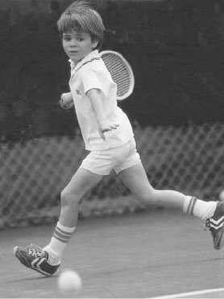
Figure 14: Junior high-performance training session — Harmonious integration of tactical drills, court discipline, and positive parent-coach collaboration.